Inglés. En este manual los nombres de botones y menús se escriben tal como aparecen en pantalla, por ejemplo Build the tree →, seguidos de su traducción cuando hace falta.
Cómo citar el programa
Barrera-Guzmán, L. Á. (2026). ClusteringPro: finding, validating and interpreting natural groups in biological, ecological and agronomic data without programming (versión 1.0.1) [Programa de cómputo]. Zenodo. https://doi.org/10.5281/zenodo.22682795
Cómo citar este manual
Barrera-Guzmán, L. Á. (2026). ClusteringPro. Manual de usuario (1.ª ed.). Distribuido con ClusteringPro, versión 1.0.1. Zenodo. https://doi.org/10.5281/zenodo.22682795
El identificador de objeto digital (DOI) 10.5281/zenodo.22682795 lleva siempre a la versión más reciente del programa; cada versión tiene además el suyo en el registro del archivo (la 1.0.1, por ejemplo, 10.5281/zenodo.22682889). Código fuente: https://github.com/luisangelbg/ClusteringPro · versión en línea: https://luisangelbg.github.io/ClusteringPro/
iPrivacidad
ClusteringPro funciona por completo dentro de tu navegador. Los archivos que abres se leen en tu computadora y nunca se envían a ningún servidor, ni siquiera cuando usas la versión en línea. Puedes analizar datos inéditos o sujetos a acuerdos de confidencialidad sin riesgo de que salgan de tu equipo.
Las ilustraciones, diagramas y capturas de pantalla de este manual son originales y se generaron con el propio programa o con código escrito para el manual. Los conjuntos de datos de ejemplo se describen en la sección 1.7: son simulaciones realistas creadas para enseñar, con nombres de accesiones, sitios y taxones inventados.
El manual sigue el mismo orden que la app: ocho bloques numerados que se recorren de izquierda a derecha en la barra superior. Cada capítulo explica un bloque, empieza con un poco de teoría fácil de digerir, describe lo que calcula y cómo leerlo, y termina con un ejemplo paso a paso usando los datos que ya vienen dentro del programa.
Un color para cada bloque
El color del bloque aparece en la apertura de su capítulo, en los números de sección, en los recuadros de teoría, en la pestaña del borde de la hoja y en el índice. Así sabes de un vistazo en qué parte de la app estás.
Bloque
Nombre en la app
Qué hace
1
Home
Portada, demo interactivo, trece lecciones de teoría y cómo citar
2
Data & EDA
Carga del archivo, tipos y papeles de las variables, preprocesamiento y tendencia al agrupamiento
3
Distances
Coeficientes de similitud y distancia, diagnóstico de la matriz y comparación de coeficientes
4
Hierarchical
Diez reglas de enlace, corte del árbol, estudio de dendrogramas, mapas de calor y tanglegramas
Número de grupos, estabilidad, soporte de los nodos, validación externa y comparación de algoritmos
7
Profiles
Qué caracteriza a cada grupo, especies indicadoras, análisis discriminante y asignación de objetos nuevos
8
Report
Figuras para publicar, informe automático, párrafo de métodos y paquete ZIP
Tipos de recuadros
iNota
Aclaraciones y consejos prácticos que ahorran tiempo.
!Importante
Lo que puede cambiar tus conclusiones si se pasa por alto.
θTeoría en breve
La idea detrás de un análisis, sin fórmulas innecesarias.
▸Ejemplo
Un caso resuelto con los datos incluidos en el programa.
✓Regla de decisión
Si el valor cae en este intervalo…
entonces esta es la lectura recomendada.
Son guías para interpretar, no leyes: el conocimiento de tus objetos siempre manda.
900 dpi
Dato clave
Una cifra o hecho que conviene recordar; por ejemplo, la resolución máxima a la que exporta las figuras.
Convenciones de escritura
Así se escribe
Significa
Build the tree →
Un botón, casilla o menú de la app, con su texto en inglés tal como aparece en pantalla.
Edit figure›Style & typography
Una ruta: abre el primer elemento y luego el segundo.
maize_landraces_morphology.csv
Un nombre de archivo, columna o valor que se escribe tal cual.
k, s(i), H, ARI
Parámetros e índices; su significado se explica la primera vez que aparecen.
●◐—
Disponible · disponible en parte o con condiciones · no aplica.
1
Capítulo uno
Introducción a ClusteringPro
Qué es el programa, qué preguntas responde, qué datos acepta y cómo se recorre de principio a fin. Incluye las ideas básicas del análisis de agrupamientos que necesitas para aprovechar el resto del manual.
1.1¿Qué es ClusteringPro?
1.2Preguntas que responde
1.3Cinco ideas clave
1.4Tipos de datos que acepta
1.5Qué necesitas y cómo abrirlo
1.6Recorrido por la interfaz
1.7Los siete ejemplos incluidos
1.8Flujo de trabajo recomendado
1.9Siluetas, correlaciones y valores P
1.1¿Qué es ClusteringPro?
ClusteringPro es una plataforma para encontrar, validar e interpretar los grupos naturales que esconde una tabla de datos: recibe la tabla tal como sale del campo, del laboratorio o de la hoja de cálculo, comprueba si vale la pena agruparla, calcula la disimilitud adecuada a cada tipo de variable, construye árboles y particiones, decide cuántos grupos conservar, los valida, describe qué distingue a cada uno y entrega figuras e informes listos para publicar.
Todo ocurre dentro del navegador de internet. No hay que instalar nada, no se necesita saber programar y los datos no salen de la computadora. Los mismos pasos sirven para caracteres morfológicos de accesiones, tablas de presencia o abundancia de especies por sitio, perfiles de suelo con variables mezcladas, marcadores binarios o una matriz de distancias ya calculada, de modo que puedes usar un solo flujo de trabajo para todos los datos de un estudio.
12345678
Figura 1.1. Portada de la app (Bloque 1).
1Barra de los ocho bloques. El bloque activo aparece resaltado.
2Los bloques en gris se activan conforme avanzas: el 3 al preprocesar los datos, el 4 al calcular la disimilitud, y así sucesivamente.
3Start with my data → lleva al Bloque 2 para cargar tus datos.
4Try the live demo baja al demo interactivo: k-means y un dendrograma sobre los mismos puntos.
5Read the theory abre las trece lecciones de teoría.
6How to cite muestra la referencia, el DOI y la entrada BibTeX.
7Garantías: corre en tu navegador, los datos no salen de tu equipo, figuras hasta 900 dpi y uso libre.
8Una muestra de lo que produce: mapa de k-means, dendrograma con corte, árbol radial y gráfico de silueta.
0
Instalaciones
Se abre con doble clic en index.html o desde su dirección en línea. No requiere permisos de administrador ni conexión a internet.
8
Bloques
De la tabla de datos al informe final, en el orden en que se hace un análisis de agrupamientos bien fundamentado.
Qué hace, en una tabla
Etapa
Lo que obtienes
Bloque
Entrada de datos
Lectura de hojas de cálculo (.xlsx, .xls, .ods), texto delimitado (.csv, .tsv, .txt), JSON, texto pegado del portapapeles y matrices de distancia ya calculadas; detección automática del tipo de cada variable.
2
Exploración
Faltantes, transformación y escalado; estadístico de Hopkins con su valor P, imagen VAT, mapa de componentes principales, atípicos multivariados, correlaciones y una calificación de A a D con recomendaciones.
2
Disimilitud
39 coeficientes en seis familias; diagnóstico métrico y euclidiano de la matriz; mapa de calor, PCoA, diagrama de Shepard, red de vecinos y comparación de coeficientes.
3
Árboles
Diez reglas de enlace, correlación cofenética, corte por número de grupos o por altura, estudio de dendrogramas (rectangular, triangular, horizontal, radial), mapa de calor con árboles, tanglegramas.
4
Particiones
k-means (tres algoritmos), k-means jerárquico, PAM, CLARA, fuzzy c-means, mezclas gaussianas con BIC, DBSCAN y agrupamiento espectral; mapa de grupos con elipses, gráfico de silueta, membresías.
5
Número de grupos
Trece criterios que votan por un k (codo, silueta, gap, Calinski–Harabasz, Davies–Bouldin, Dunn y más), estabilidad por bootstrap, soporte AU/BP de los nodos, Rand ajustado, NMI y comparación de algoritmos.
6
Interpretación
Valores de prueba por variable, ANOVA y Kruskal–Wallis, categorías sobrerrepresentadas, especies indicadoras, análisis discriminante con validación cruzada, reglas de un árbol de clasificación y asignación de objetos nuevos.
7
Publicación
Figuras editables hasta 900 dpi (PNG, TIFF, SVG, JPG, WEBP), informe HTML completo con resumen ejecutivo y párrafo de métodos, impresión a PDF y paquete ZIP con datos, tablas y figuras.
8
¿Para quién es?
Para quien necesita clasificar objetos a partir de muchas variables y quiere resultados defendibles sin pelear con paquetes ni líneas de comando: estudiantes de licenciatura y posgrado que se inician en el análisis multivariado, investigadores en recursos fitogenéticos, ecología de comunidades, edafología y agronomía, mejoradores que caracterizan germoplasma, y docentes que necesitan mostrar en clase por qué dos reglas de enlace dan árboles distintos o cómo decide k-means. Cada resultado viene acompañado de un párrafo que lo interpreta en lenguaje llano, lo que convierte a la app también en una herramienta de enseñanza.
1.2Preguntas que responde
Un buen análisis empieza con una pregunta. La tabla siguiente traduce las preguntas más frecuentes de un estudio de agrupamientos al análisis que las responde y al bloque donde se encuentra.
Tabla 1.1. De la pregunta al análisis.
Pregunta
Análisis que la responde
Bloque
¿Mi tabla está bien formada y mis variables bien tipificadas?
Revisión de la hoja, tipificación automática con corrección manual y papeles de las columnas
2
¿Tiene sentido buscar grupos en estos datos?
Estadístico de Hopkins con valor P, imagen VAT y mapa de componentes principales
2
¿Qué coeficiente de distancia debo usar con mis variables?
Recomendación por tipo de dato y comparación entre coeficientes candidatos
23
¿Puedo usar Ward o k-means con esta distancia?
Diagnóstico de la matriz: desigualdad triangular y embebibilidad euclidiana
3
¿Qué objetos se parecen más entre sí?
Mapa de calor ordenado, red de vecinos más cercanos y árbol jerárquico
34
¿El dendrograma representa bien las distancias?
Correlación cofenética y coeficiente aglomerativo
4
¿Cambia el árbol si cambio la regla de enlace?
Tabla de reglas, gamma de Baker y tanglegramas
4
¿Qué método de partición conviene a mis datos?
Recomendación por tipo de dato y comparación de métodos con el mismo k
5
¿Hay grupos de forma irregular o atípicos que no encajan?
DBSCAN (con ruido), agrupamiento espectral y PAM
5
¿Cuántos grupos hay?
Trece criterios con voto de consenso, estadístico gap y BIC de las mezclas
65
¿Los grupos son reales o un accidente de la muestra?
Estabilidad por bootstrap y soporte AU/BP de los nodos del árbol
6
¿Coinciden los grupos con una clasificación previa?
Rand ajustado, NMI, pureza y prueba de χ²
6
¿Qué variables distinguen a cada grupo?
Valores de prueba, ANOVA y Kruskal–Wallis por variable, mapa de calor de medias
7
¿Qué especies indican cada grupo de sitios?
Valor indicador (IndVal) con prueba de permutación
7
¿A qué grupo pertenece un objeto nuevo?
Análisis discriminante, centroide más cercano y reglas del árbol de clasificación
7
¿Cómo reporto todo esto en un artículo?
Informe con resumen ejecutivo, párrafo de métodos, figuras vectoriales y paquete ZIP
8
1.3Cinco ideas clave del análisis de agrupamientos
No necesitas un curso previo para usar la app, pero estas cinco ideas aparecen en todos los capítulos. Léelas una vez y regresa a ellas cuando lo necesites.
Figura 1.2. Las dos caras de un agrupamiento. A la izquierda, tres grupos de objetos en el espacio de sus variables: las distancias dentro de cada grupo son pequeñas y las distancias entre grupos, grandes. A la derecha, el mismo resultado como dendrograma: las ramas se unen a la altura de la distancia a la que se fusionan, y una línea de corte convierte el árbol en tres grupos.
1Un grupo es compacto por dentro y separado por fuera
Agrupar es buscar conjuntos de objetos más parecidos entre sí que al resto. Nadie le dice al algoritmo qué grupos existen ni cuántos son; por eso se llama aprendizaje no supervisado, a diferencia de la clasificación, donde los grupos se conocen de antemano y lo que se aprende es a predecirlos. Casi todo lo que calcula ClusteringPro mide una de dos cosas: la compacidad de los grupos o la separación entre ellos.
2Todo empieza por una disimilitud
Los algoritmos nunca ven tus variables: ven una matriz de disimilitudes entre pares de objetos. Cambiar el coeficiente cambia los grupos, así que esa elección importa más que la del algoritmo. Para variables cuantitativas la distancia euclidiana es el punto de partida; para presencia/ausencia se usan Jaccard o Dice, que no cuentan las ausencias compartidas; para abundancias, Bray–Curtis o Hellinger; para tablas con variables de varios tipos, Gower. Y cuando las unidades difieren hay que estandarizar antes, o la variable con los números más grandes decide sola los grupos.
▸Ejemplo numérico
Dos accesiones de maíz medidas en altura de planta y días a floración: A = (210 cm, 82 días) y B = (190 cm, 95 días). La distancia euclidiana en unidades originales es
Si la altura se midiera en milímetros, el primer término valdría 40 000 y los días no contarían casi nada. Tras estandarizar cada variable (media 0, desviación 1) las dos diferencias pesan lo que valen en su propia escala, y la distancia pasa a ser un número sin unidades que se puede comparar entre pares.
3Dos grandes familias: árboles y particiones
Los métodos jerárquicos construyen un árbol de fusiones (o de divisiones) y no exigen decidir el número de grupos de antemano: se corta el dendrograma a la altura que convenga. Los métodos de partición, como k-means o PAM, reparten los objetos en un número k de grupos fijado por el usuario y los refinan hasta que nada cambia. A ellos se suman los métodos basados en densidad (DBSCAN), que encuentran grupos de cualquier forma y señalan el ruido, y los basados en modelos (mezclas gaussianas), que dan a cada objeto una probabilidad de pertenencia. ClusteringPro ofrece las cuatro familias y las herramientas para compararlas.
4¿Cuántos grupos? No hay una sola respuesta, hay criterios
Cualquier algoritmo devuelve grupos, aunque no existan: k-means parte una sola nube en tres si se lo pides. Por eso el Bloque 2 pregunta primero si los datos tienen estructura (estadístico de Hopkins) y el Bloque 6 evalúa cada número de grupos con trece criterios distintos y cuenta sus votos. La silueta, el estadístico gap y la estabilidad por bootstrap son los tres que más pesan, pero la última palabra la tiene la interpretación: un grupo que no se puede describir en términos de las variables no sirve de mucho.
5Validar y describir antes de publicar
Un resultado de agrupamiento se defiende con tres piezas: una medida de calidad interna (la silueta media y, en los árboles, la correlación cofenética), una medida de estabilidad (qué tan a menudo reaparece cada grupo al remuestrear los objetos) y, si existe una clasificación previa, una medida de acuerdo externo (el índice de Rand ajustado). El Bloque 7 completa el trabajo describiendo qué variables, categorías o especies caracterizan a cada grupo, y el Bloque 8 lo reúne todo en un informe.
1.4Tipos de datos que acepta
La primera decisión de cualquier agrupamiento es saber de qué clase son tus variables, porque de ello depende el coeficiente de disimilitud y, con él, los métodos que tienen sentido. ClusteringPro reconoce cinco tipos de variable, admite tablas que los mezclan y acepta también una matriz de distancias ya calculada.
Figura 1.3. Cuatro clases de tabla y el coeficiente que les corresponde. Una tabla cuantitativa mide; una binaria registra presencia o ausencia; una categórica clasifica, con o sin orden; una de abundancias cuenta individuos por sitio. La app tipifica cada columna sola y te muestra lo que supuso.
Tabla 1.2. Los tipos de variable y lo que implica cada uno.
Usar un coeficiente simétrico cuando el 0 significa "no está": las ausencias compartidas inflan el parecido.
Nominal
Cultivar, tipo de suelo, color, región
Simple matching de categorías, Gower
Códigos numéricos de categorías tratados como cantidades.
Ordinal
Escalas de daño, calificaciones, clases de tamaño
Manhattan sobre rangos normalizados, Gower
El orden de los niveles: revísalo en el Bloque 2 (la app lo propone y se puede corregir).
Conteos y abundancias
Tablas especie × sitio, OTU, capturas
Bray–Curtis, Ružička, Kulczynski, Morisita–Horn, Hellinger, chord, ji cuadrada, Canberra, Jaccard sobre presencia
La euclidiana bruta: la dominan las especies abundantes y los dobles ceros.
Mixta
Cualquier combinación de las anteriores en una tabla
Gower con pesos; euclidiana sobre la matriz con variables indicadoras
Suponer que un solo tipo de coeficiente sirve para toda la tabla.
Matriz de distancias
Distancias genéticas, geográficas o de expertos ya calculadas
Se usa tal cual, con su raíz cuadrada o su cuadrado
Una matriz no euclidiana con Ward o k-means: la app lo detecta y sugiere √d.
!Importante
Declarar mal el tipo de una variable cambia los resultados. Una columna de códigos de región (1, 2, 3) leída como cuantitativa haría que la región 3 quedara "más lejos" de la 1 que de la 2 sin ningún motivo. El Bloque 2 detecta el tipo automáticamente, pero siempre te muestra lo que supuso y te permite corregirlo antes de calcular nada.
1.5Qué necesitas y cómo abrir el programa
Requisitos
Una computadora de escritorio o portátil con un navegador de internet moderno y actualizado.
Pantalla de al menos 1280 píxeles de ancho; la app se adapta a pantallas menores, pero las tablas y figuras se aprovechan mejor en una grande.
4 GB de memoria bastan para la mayoría de los estudios; el remuestreo del Bloque 6 con cientos de objetos agradece 8 GB.
No se necesita conexión a internet, instalación ni permisos de administrador.
Contenido de la carpeta
index.html
La app. Ábrela con doble clic.
Open ClusteringPro.bat
Arranque opcional con servidor local.
js/, css/
El código del programa.
data/
Los archivos de ejemplo.
vendor/
Componentes de terceros y sus licencias.
manual/
Este manual.
Abrir ClusteringPro en tres pasos
Copia la carpetaClusteringPro completa a tu computadora, por ejemplo a Documentos. No separes index.html del resto de las carpetas.
Haz doble clic enindex.html. Se abrirá en tu navegador predeterminado con la portada del Bloque 1.
PulsaStart with my data → para cargar un archivo, o ve directamente al Bloque 2 y elige uno de los ejemplos.
iNota · la versión en línea
La misma app está publicada en https://luisangelbg.github.io/ClusteringPro/. Sirve para usarla desde cualquier equipo sin copiar nada y siempre corresponde a la versión más reciente. También ahí el cálculo ocurre en tu navegador: la página es estática y tus archivos nunca se suben a ningún sitio.
iNota · abrir con servidor local
Con doble clic todo funciona, incluidos los siete ejemplos: vienen incrustados en la app y no hace falta leerlos de la carpeta data/, que los conserva como archivos CSV para que veas cómo están acomodados. Open ClusteringPro.bat es una alternativa: inicia un pequeño servidor en tu propia computadora (dirección http://localhost:8900) y abre la app desde ahí. Úsalo si tu navegador restringe las páginas abiertas como archivo local, o para abrir la app desde una tableta de la misma red. Sigue sin enviarse nada a internet.
iNota · tu trabajo se recuerda
La app guarda en tu navegador las preferencias de estilo de las figuras. Si cambias de navegador o borras los datos de navegación, esas preferencias se pierden, pero tus archivos originales no se modifican nunca. Los resultados de un análisis no se guardan solos: descárgalos desde el Bloque 8 antes de cerrar la pestaña.
1.6Recorrido por la interfaz
Todos los bloques de análisis comparten la misma organización, así que basta aprenderla una vez. De arriba abajo, cada bloque tiene cuatro partes:
Parte
Qué contiene
Cómo aparece en pantalla
Teoría
Un recuadro desplegable con la parte de la teoría que importa en ese paso, con figuras.
Una tarjeta con acordeones numerados al inicio del bloque
1 · Ajustes
Una recomendación calculada a partir de tus datos, las opciones del análisis con valores predeterminados sensatos y un botón para calcular.
Recommendation · Compute …, Build …, Run →
2 · Resultados y diagnóstico
Casillas con los valores principales, una lista de comprobaciones con semáforo (verde, ámbar, rojo) que interpreta los resultados en lenguaje llano, y tablas descargables.
Casillas de cifras · comprobaciones con ✅ ⚠️ ⛔ ℹ️
3 · Figuras y comparaciones
Figuras editables con controles de estilo y exportación; en la mayoría de los bloques, una tarjeta final que compara alternativas (coeficientes, reglas de enlace, métodos).
Edit figure · Download figure · Compare
Términos de la interfaz. La app está en inglés, el idioma de las revistas científicas. La tabla 1.3 reúne los términos que verás en todos los bloques.
Tabla 1.3. Vocabulario básico de la interfaz.
En la app
En español
En la app
En español
Object · Variable
Objeto (fila) · variable (columna)
Edit figure
Editar figura
Dissimilarity · Distance
Disimilitud · distancia
Content & colours
Contenido y colores
Linkage
Regla de enlace del árbol
Style & typography
Estilo y tipografía
Cut · Cluster
Corte del árbol · grupo
Palette
Paleta de colores
Known grouping
Agrupación conocida (para validar, nunca para agrupar)
Legend position
Posición de la leyenda
Silhouette
Silueta (calidad de la partición)
Resolution
Resolución
Random seed
Semilla aleatoria
Download
Descargar
Continue to …
Continuar a…
How to cite
Cómo citar
Figura 1.4. Al preprocesar los datos, el Bloque 2 muestra el veredicto de Readiness: una calificación de A a D, casillas con las cifras que la sustentan (objetos, variables, estadístico de Hopkins, varianza en los dos primeros ejes, atípicos, correlación más fuerte), la lista de comprobaciones interpretadas y la tarjeta What to do next con la disimilitud, el método y el número de grupos que conviene probar. Aquí, con el ejemplo de razas de maíz: calificación B, Hopkins 0.634 (P = 0.012), sin atípicos ni variables redundantes.
123456
Figura 1.5. Una figura del Bloque 3 (mapa de calor de la disimilitud euclidiana entre las razas de maíz, con los objetos en orden VAT y las franjas de la agrupación conocida) con su panel de edición abierto.
1Cada figura vive en su propia tarjeta con título; se redibuja al instante con cada cambio.
2Edit figure abre y cierra el panel de edición.
3Dos pestañas: Content & colours (qué se dibuja) y Style & typography (tema, tipografía, tamaños, marco).
4Controles propios de cada figura: aquí el orden de los objetos, el mapa de color y si se muestran los valores.
5Paleta de colores de los grupos y posición de la leyenda.
6Formato, resolución, fondo y descarga, con el tamaño resultante en píxeles y centímetros.
iNota · la semilla aleatoria
Varios análisis dependen del azar: los arranques de k-means, las muestras de CLARA, los conjuntos de referencia del estadístico gap, los remuestreos de la estabilidad y las permutaciones de las especies indicadoras. La Random seed fija ese azar: con la misma semilla y los mismos datos obtendrás exactamente los mismos resultados. Anota la semilla en la sección de métodos de tu artículo para que otros puedan reproducirlos; el informe del Bloque 8 la incluye por ti.
1.7Los siete conjuntos de datos de ejemplo
El programa incluye siete conjuntos de datos listos para usar, uno por cada tipo de tabla que acepta. Cinco vienen como archivos en la carpeta data/ y dos se generan al momento dentro de la app. Los capítulos de cada bloque los usan en sus ejemplos paso a paso.
Tabla 1.4. Ejemplos incluidos. Se cargan en el Bloque 2, bajo Or try an example dataset.
Botón en la app
Tipo
Contenido
Ideal para practicar
Quantitative · maize landraces
Cuantitativo
45 accesiones de maíz × 8 caracteres morfológicos (altura de planta y de mazorca, días a floración, longitud de mazorca, hileras, peso de grano, rendimiento, ancho de hoja), con la región de origen como agrupación conocida y un valor faltante sembrado.
Todo el flujo: euclidiana, Ward, k-means, k óptimo, perfiles, discriminante
Binary · plant species presence
Binario
30 sitios × 22 especies en presencia/ausencia, con el hábitat de cada sitio.
Jaccard frente a simple matching, UPGMA, PAM
Counts · insect abundance
Conteos
24 sitios × 14 taxones de insectos capturados, con el tipo de paisaje.
Bray–Curtis y Hellinger, PAM, especies indicadoras
Mixed · soil profiles
Mixto
36 perfiles de suelo con variables cuantitativas (pH, materia orgánica, arcilla, arena, CIC, pendiente), una nominal (textura), una ordinal (drenaje) y una binaria (calcáreo).
Gower, PAM, perfiles con variables categóricas
Distance matrix · 12 cultivars
Matriz
Una matriz de distancias genéticas entre 12 cultivares, ya calculada, como la que entrega un programa de marcadores.
Entrada directa de una matriz, √d, árboles y PAM
Simulated · four clear clusters
Cuantitativo
80 objetos × 5 variables generados al momento con cuatro grupos bien separados.
Ver cómo se comportan los criterios de k cuando la respuesta es evidente
Simulated · uniform noise
Cuantitativo
60 objetos sin ninguna estructura, generados al momento.
Ver qué aspecto tiene un Hopkins de 0.5 y por qué no hay que agrupar cualquier cosa
Figura 1.6. La sección What's inside de la portada resume los ocho bloques. Un clic en cualquier tarjeta lleva a su bloque; si todavía no hay datos cargados, la app te lleva al Bloque 2.
▸Tu primer análisis en tres minutos
Abre la app y pulsa Start with my data →.
Bajo Or try an example dataset, pulsa Quantitative · maize landraces. La app lee el archivo y muestra cómo tipificó cada columna: una etiqueta, una agrupación conocida (la región) y ocho variables cuantitativas.
Pulsa Apply and explore →. Aparece el veredicto de la figura 1.4: calificación B, Hopkins 0.634, y la recomendación de usar la distancia euclidiana con Ward.D2.
Pulsa Continue to similarity and distance → y luego Compute the dissimilarity matrix →. Verás el mapa de calor de la figura 1.5 y el diagnóstico: la matriz es métrica y euclidiana.
Pulsa Continue to hierarchical clustering → y Build the tree →. El árbol de Ward.D2 tiene correlación cofenética 0.843, se corta solo en k = 3 y sus tres grupos coinciden exactamente con las tres regiones (índice de Rand ajustado 1.000).
iNota · los ejemplos son simulaciones
Los siete conjuntos se crearon para enseñar: son simulaciones realistas con nombres de accesiones, sitios y taxones inventados, diseñadas para que cada tipo de tabla muestre lo que la app puede hacer con él. No describen materiales reales y no deben citarse como datos experimentales.
1.8Flujo de trabajo recomendado
Los bloques están ordenados como se hace un análisis: primero se revisa si vale la pena agrupar, luego se elige cómo medir el parecido, después se agrupa de dos maneras distintas, se decide cuántos grupos conservar y se validan, y al final se interpretan y se publican. Cada tipo de dato recorre ese camino con pequeñas diferencias, como líneas de metro que se detienen en casi todas las estaciones.
Figura 1.7. Rutas de análisis por tipo de dato. Una estación llena indica que el bloque está disponible sin restricciones; un aro, que lo está en parte o con condiciones (tabla 1.5); un punto pequeño, que el tipo de dato pasa de largo. Todas las rutas empiezan en el Bloque 2 y terminan en el informe.
Tabla 1.5. Qué ofrece cada bloque según el tipo de dato y en qué condiciones.
Tipo
3
4
5
6
7
Condiciones
Cuantitativo
●
●
●
●
●
Todo disponible. Ward y k-means son la ruta natural si la distancia es euclidiana.
Binario
●
●
◐
●
◐
k-means, fuzzy y mezclas trabajan sobre los ejes PCoA de la disimilitud (la app lo propone sola); PAM usa la matriz directamente. Los perfiles tratan cada columna 0/1 como una variable; con especies, mejor el valor indicador.
Categórico
●
●
◐
◐
◐
Como el binario en el Bloque 5. Sin variables cuantitativas no hay soporte AU/BP de los nodos ni análisis discriminante; sí valores de prueba de las categorías y reglas.
Abundancias
●
●
◐
●
●
Bray–Curtis no es euclidiana: Ward y k-means solo sobre ejes PCoA o tras la transformación de Hellinger; PAM sin restricciones. Especies indicadoras disponibles.
Mixto
●
●
◐
◐
●
Gower con PAM es la ruta natural; los métodos de coordenadas usan los ejes PCoA. El soporte AU/BP remuestrea solo las variables numéricas.
Matriz de distancias
●
●
◐
◐
—
Se salta la exploración por variables. Sin variables no hay perfiles ni AU/BP; k-means trabaja sobre las coordenadas de la matriz. Todo lo demás está disponible.
✓Regla de decisión · ¿cuántos objetos y cuántas variables?
Situación
Lectura
Qué hacer
Al menos 5 a 10 objetos por grupo esperado
Adecuado
Los criterios de k, la silueta y el remuestreo son informativos. Con 30 objetos y 3 grupos esperados ya se trabaja bien.
Menos de 5 objetos por grupo
Limitado
Los grupos pequeños se disuelven al remuestrear y cualquier atípico forma su propio grupo. Interpreta el árbol, no la partición.
Más variables que objetos
Cautela
Las distancias se parecen todas entre sí. Elimina variables redundantes o agrupa sobre los primeros componentes principales (Bloque 3).
Variables irrelevantes para la pregunta
Riesgo
Cada variable de "ruido" diluye la estructura que traen las útiles. Déjalas como suplementarias: no se usan para agrupar, pero sí para describir los grupos.
La app marca en el Bloque 2 la razón objetos/variables y en el Bloque 5 los grupos con menos de tres objetos.
!Importante · el orden sí importa
Aunque puedes saltar entre bloques, hay dos paradas que no conviene omitir. La primera es el veredicto del Bloque 2: si el estadístico de Hopkins dice que los datos son uniformes, todo lo que sigue describirá grupos que no existen. La segunda es el Bloque 6: el árbol del Bloque 4 y la partición del Bloque 5 se cortan con un número de grupos provisional, y el Bloque 6 es donde ese número se somete a los trece criterios y a la estabilidad. Con el botón Adopt k el número elegido regresa a los Bloques 4 y 5 para rehacer el corte.
1.9Cómo leer siluetas, correlaciones y valores P
Tres clases de números aparecen una y otra vez en la app: índices de calidad acotados entre −1 y 1 o entre 0 y 1 (la silueta, la correlación cofenética, el índice de Rand ajustado), valores P de pruebas de permutación o de Monte Carlo (Hopkins, especies indicadoras, χ²) y coeficientes de variación explicada. Entenderlos evita las dos equivocaciones más comunes: tomar un índice moderado por un buen resultado y creer que un valor P significativo garantiza que los grupos son útiles.
sLa silueta
Para cada objeto, s(i) compara su distancia media a los compañeros de grupo (a) con su distancia media al grupo vecino más cercano (b): s = (b − a) / max(a, b). Vale casi 1 cuando el objeto está bien colocado, cerca de 0 cuando está entre dos grupos y es negativa cuando probablemente pertenece a otro. La silueta media de la partición resume todo en un número.
rLa correlación cofenética
Un dendrograma resume la matriz de distancias: la altura a la que dos objetos se unen por primera vez es su distancia cofenética. La correlación entre esas alturas y las distancias originales mide qué tan fiel es el árbol. Por encima de 0.75 se puede leer el dendrograma con confianza; por debajo de 0.6 conviene cambiar la regla de enlace o el coeficiente.
✓Regla de decisión · lectura de la silueta media
Silueta media
Estructura
Cómo redactarlo
0.71 a 1.00
Fuerte
"Se encontró una estructura de grupos fuerte y bien separada".
0.51 a 0.70
Razonable
"La partición es clara, con algunos objetos cerca de los límites".
0.26 a 0.50
Débil
"Los grupos se traslapan; la partición es exploratoria". Compruébala con la estabilidad del Bloque 6.
≤ 0.25
Sin estructura sustancial
No afirmes que hay grupos. Prueba otro coeficiente, otro método u otro número de grupos, o acepta que los datos forman un gradiente.
Los umbrales son los de Kaufman y Rousseeuw (1990). En datos biológicos reales, con muchas variables, una silueta de 0.4 ya suele acompañar a grupos interpretables.
PEl valor P
Es la probabilidad de observar un resultado tan extremo como el tuyo si en realidad no hubiera efecto. Un P = 0.012 en el estadístico de Hopkins dice que, si los datos fueran uniformes, un valor de H tan alto ocurriría 12 veces de cada 1000 por azar. En la app casi todos los valores P vienen de permutaciones o de simulaciones, así que dependen de la semilla y del número de réplicas.
ARIEl índice de Rand ajustado
Compara dos maneras de agrupar los mismos objetos, por ejemplo tus grupos y una clasificación previa. Vale 1 cuando coinciden exactamente y 0 cuando coinciden lo que coincidirían dos etiquetados al azar; puede ser negativo. Por encima de 0.7 las dos particiones cuentan la misma historia; entre 0.4 y 0.7 comparten un núcleo; por debajo, poco tienen que ver.
!Importante · significativo no es lo mismo que útil
Las variables que se usaron para construir los grupos siempre difieren "significativamente" entre ellos: los grupos se hicieron precisamente para eso. Por eso los valores P del Bloque 7 son descriptivos cuando se refieren a las variables activas, y solo tienen valor de prueba con las variables suplementarias, que no intervinieron en el agrupamiento. Reporta siempre el tamaño del efecto (la silueta, la diferencia de medias, el valor indicador) junto con el valor P.
13
Criterios para elegir k
Ningún índice es infalible; por eso el Bloque 6 hace votar a trece (codo, silueta, gap, Calinski–Harabasz, Davies–Bouldin, Dunn, C-index, McClain–Rao, PBM, Ratkowsky–Lance, Hartigan, Krzanowski–Lai y Ball–Hall) y muestra el recuento, la tabla completa y un panel con la curva de cada uno.
B1
Capítulo dos · Bloque 1 · Home
Inicio y teoría
La portada de la app es a la vez un mapa del programa, un laboratorio donde puedes ver cómo k-means y un dendrograma agrupan los mismos puntos, un catálogo de los tipos de datos y los métodos, y un curso breve de teoría en trece lecciones. Este capítulo la recorre de arriba abajo y propone cinco prácticas con el demo.
2.1La portada de la app
2.2El demo interactivo: k-means y dendrograma
2.3Tipos de datos y métodos, de un vistazo
2.4Las trece lecciones de teoría
2.5¿Qué método uso? La tabla de elección
2.6Cómo citar
2.1La portada de la app
Al abrir index.html aparece el Bloque 1. Se lee como un folleto, de arriba abajo: primero qué hace el programa, luego cómo se recorre, después el demo para experimentar, los tipos de datos y los métodos, la teoría, una tabla para elegir método y, al final, cómo citarlo. La figura 1.1 del capítulo anterior muestra la parte superior; la tabla 2.1 enumera todas las secciones en el orden en que aparecen.
Tabla 2.1. Secciones de la portada, en el orden en que aparecen.
Sección en la app
Qué contiene
Para qué te sirve
Presentación cuatro botones y cuatro garantías
Start with my data →, Try the live demo, Read the theory y How to cite; a la derecha, una ilustración con un dendrograma y un mapa de grupos.
Ir directo a cargar datos o a una sección de la portada.
How it works
Los seis pasos de un análisis, del archivo al artículo (figura 2.1 y tabla 2.2).
Ubicar cada bloque en la lógica de un estudio.
Try it: k-means and a dendrogram on the same points
El demo interactivo (sección 2.2).
Entender, jugando, qué hace cada familia de métodos y por qué se equivoca.
What's inside
Una tarjeta por bloque, con ilustración y descripción (figura 1.6).
Saltar a un bloque con un clic.
Every kind of data
Siete tipos de tabla y los coeficientes que convienen a cada uno (sección 2.3).
Confirmar que tus datos caben en el programa.
Methods covered
Galería de quince métodos en cuatro familias (sección 2.3).
Ver de un vistazo todo lo que se puede calcular.
Clustering, explained without the fog
Trece lecciones desplegables con figuras (sección 2.4).
Repasar la teoría antes de interpretar o defender resultados.
Which method should I use?
Tabla de elección por tipo de datos (sección 2.5).
Tener un punto de partida razonable.
Why ClusteringPro y Glossary at a glance
Seis argumentos y veintinueve términos clave en fichas.
Justificar el uso del programa y reconocer el vocabulario.
How to cite ClusteringPro
La referencia lista para copiar en formato APA o BibTeX (sección 2.6).
Citar correctamente en tu artículo o tesis.
Go to Block 2: load your data →
El botón de cierre.
Empezar el análisis.
Figura 2.1. La sección How it works. Los seis pasos siguen el orden en que se escribe la sección de métodos de un artículo; el dendrograma es el final del proceso, no el principio.
Tabla 2.2. Los seis pasos de la portada y los bloques que los resuelven.
Paso
En la app
Qué se hace
Bloques
1
Load & explore
Tipificar las columnas, escalar, revisar atípicos y medir la tendencia al agrupamiento.
2
2
Measure similarity
Elegir el coeficiente que corresponde a los datos y calcular la matriz.
3
3
Cluster
Construir el árbol o la partición: jerárquico, particionamiento, densidad o mezclas.
45
4
Choose k
Decidir cuántos grupos conservar con el codo, la silueta, el gap y el consenso de índices.
6
5
Validate
Validación interna, estabilidad por remuestreo y comparación con grupos conocidos.
6
6
Interpret & publish
Perfiles de los grupos, predicción de casos nuevos, figuras editables e informe.
78
iNota · navegar desde la portada
Los botones de la presentación te llevan a la sección correspondiente de la misma portada, salvo Start with my data →, que abre el Bloque 2. Las tarjetas de What's inside abren su bloque; si aún no cargaste datos, cualquier tarjeta del 3 en adelante te lleva primero al Bloque 2, porque todos los bloques leen de ahí. Para volver a la portada desde cualquier parte, pulsa el nombre del programa arriba a la izquierda o el botón 1 Home de la barra.
2.2El demo interactivo: k-means y dendrograma
El demo toma un conjunto de puntos en dos dimensiones y lo agrupa de las dos maneras clásicas al mismo tiempo. A la izquierda, k-means mueve sus centros paso a paso; a la derecha, un dendrograma real, calculado con el mismo motor que usa el Bloque 4, se recalcula con cada cambio de regla de enlace y se corta en k grupos. No es una animación decorativa: los números de la línea de resultados son los mismos que verás en los bloques de análisis.
θTeoría en breve · dos maneras de agrupar los mismos puntos
k-means parte de k centros y repite dos pasos hasta que nada cambia: asigna cada punto al centro más cercano y mueve cada centro al promedio de sus puntos. Busca grupos redondos y de tamaño parecido, y necesita k de antemano. El agrupamiento jerárquico no fija k: empieza con cada punto en su propio grupo y une, una y otra vez, los dos grupos más cercanos hasta que queda uno solo. El resultado es un árbol, y cortarlo a una altura produce una partición. Qué significa "más cercanos" lo decide la regla de enlace, y ahí está la gracia del demo: con los mismos puntos, cada regla dibuja un árbol distinto.
12345678
Figura 2.2. El demo con el conjunto Three round groups después de pulsar ▶ Run k-means con k = 3 y enlace Ward.D2. Las dos maneras de agrupar coinciden por completo.
1Dataset: seis conjuntos de puntos preparados (tabla 2.4).
2k: número de grupos, de 2 a 6, para k-means y para el corte del árbol.
3Linkage: la regla de enlace del dendrograma; el árbol se recalcula al instante.
4▶ Run k-means corre el algoritmo con una pausa entre iteraciones para que veas moverse los centros.
5Step avanza una iteración, Regenerate sortea otros puntos y Reset borra los grupos.
6Cada grupo de k-means con su centro (estrella) y su envolvente.
7La línea de corte del árbol; las ramas por debajo se colorean según el grupo.
8La línea de resultados (tabla 2.5).
Tabla 2.3. Los controles del demo.
Control
Qué hace
Dataset
Cambia el conjunto de puntos. Cada conjunto se genera con la misma semilla, así que al elegirlo verás exactamente los puntos de este manual.
k
Fija el número de grupos. Si ya corriste k-means, se reinicia con el nuevo k; el corte del árbol se mueve a la altura que separa k ramas.
Linkage
Ocho reglas: simple, completa, promedio (UPGMA), ponderada (WPGMA), centroide, mediana, Ward.D y Ward.D2. Solo afecta al árbol.
▶ Run k-means
Coloca k centros al azar y repite las iteraciones hasta converger, una cada 0.4 s.
Step
Una sola iteración: útil para ver cómo se reasignan los puntos y se desplazan los centros.
Regenerate
Sortea otro conjunto de puntos del mismo tipo (otra semilla). Los números cambiarán.
Reset
Quita los grupos de k-means y deja los puntos en gris; el árbol no cambia.
Clic en el panel izquierdo
Añade un punto donde hagas clic (hasta 150). El árbol se recalcula y los grupos de k-means se borran para que vuelvas a correrlo.
Tabla 2.4. Los seis conjuntos de puntos y lo que enseña cada uno.
Conjunto
Puntos
Forma
Lo que muestra
Three round groups
54
Tres nubes redondas bien separadas.
El caso ideal: todos los métodos coinciden.
Four groups
60
Cuatro nubes en las esquinas.
Cómo cambian los índices al pasar de k = 3 a k = 4.
Elongated groups
58
Dos nubes alargadas y una redonda.
k-means corta las nubes alargadas; el árbol no.
Two moons
60
Dos medias lunas entrelazadas.
Formas curvas: solo el enlace simple las recupera.
Ring + core
64
Un anillo con un núcleo dentro.
Un grupo dentro de otro: k-means no puede.
Uniform noise (no structure)
55
Puntos al azar, sin grupos.
Los algoritmos devuelven grupos aunque no existan.
La línea de resultados
Debajo de los dos paneles, una línea resume el estado del demo. Son cuatro números que volverás a encontrar en los Bloques 4, 5 y 6, así que conviene aprender a leerlos aquí.
Tabla 2.5. Los números de la línea de resultados.
En la app
Qué mide
Cómo leerlo
Cophenetic correlation
Correlación entre las distancias originales y las alturas a las que el árbol une cada par de puntos.
Por encima de 0.75 el árbol resume bien las distancias. Cambia con el enlace, no con k.
k-means iteration
Cuántas veces se reasignaron los puntos y se movieron los centros.
Pocas iteraciones con grupos claros; muchas cuando los grupos se traslapan.
between-SS / total-SS
Porcentaje de la variación total que queda explicado por las diferencias entre grupos.
Siempre sube al aumentar k; sirve para buscar el codo, no el máximo.
average silhouette
Promedio de la silueta de todos los puntos (sección 1.9).
0.7 o más, estructura fuerte; 0.5, razonable; menos de 0.25, dudosa.
converged
Aparece cuando una iteración ya no cambia nada.
Hasta entonces la partición es provisional.
iNota · los números de este manual son reproducibles
Los puntos de cada conjunto y los centros iniciales de k-means se sortean con una semilla fija. Mientras no pulses Regenerate obtendrás exactamente los valores de las prácticas siguientes. Después de regenerar, las cifras cambian pero las conclusiones se mantienen.
Práctica 1 · Tres grupos redondos: el caso ideal
▸Paso a paso
En la portada pulsa Try the live demo. El conjunto inicial es Three round groups, con k = 3 y enlace Ward.D2.
Pulsa Step varias veces y observa: primero aparecen tres estrellas en posiciones arbitrarias, luego los puntos cambian de color y las estrellas se desplazan hacia el centro de cada nube. Pulsa Reset y después ▶ Run k-means para verlo de corrido: converge en cuatro iteraciones (figura 2.2).
Mueve k a 2 y luego a 4, corriendo k-means cada vez, y anota los dos últimos números de la línea de resultados (tabla 2.6).
Vuelve a k = 3 y cambia la regla en Linkage. Fíjate en la correlación cofenética y en si el corte del árbol sigue separando las tres nubes (tabla 2.7).
Tabla 2.6. k-means en los tres grupos redondos según k.
k
Iteraciones
SS entre / total
Silueta media
2
3
33.1 %
0.398
3
4
87.6 %
0.691
4
3
88.7 %
0.553
Tabla 2.7. Correlación cofenética de los ocho enlaces con los mismos 54 puntos.
Enlace
Cofenética
Enlace
Cofenética
Single
0.800
Centroid
0.877
Complete
0.869
Median
0.855
Average (UPGMA)
0.883
Ward.D
0.864
Weighted (WPGMA)
0.862
Ward.D2
0.877
θLo que aprendiste
La suma de cuadrados entre grupos siempre crece con k: pasar de 2 a 3 grupos la dispara del 33 al 88 %, pero pasar de 3 a 4 apenas la mueve. Ese cambio brusco de pendiente es el codo. La silueta, en cambio, tiene un máximo claro en k = 3, porque con 4 grupos una nube se parte en dos mitades que están más cerca entre sí que de cualquier otra cosa. Y con grupos tan nítidos, los ocho enlaces dan árboles muy fieles a las distancias (cofenética de 0.80 a 0.88; el promedio, UPGMA, es el más alto, como suele ocurrir) y todos, salvo el simple, separan las tres nubes al cortar en 3. Los Bloques 4 y 6 hacen este mismo razonamiento con tus datos y con trece criterios en lugar de dos.
Práctica 2 · Dos lunas: donde k-means se equivoca
▸Paso a paso
En Dataset elige Two moons y baja k a 2.
Pulsa ▶ Run k-means. Cuando converja, mira cómo quedó repartida cada luna.
En Linkage elige Single y compara el corte del árbol con los grupos de k-means (figura 2.3).
Prueba después Average (UPGMA) y Ward.D2: los colores del árbol vuelven a mezclar las lunas.
Figura 2.3.Two moons con k = 2. k-means (izquierda) parte cada luna por la mitad, porque solo sabe trazar fronteras rectas entre centros. El enlace simple (derecha) sigue la cadena de vecinos cercanos y recupera las dos lunas exactas.
Tabla 2.8. Dos lunas con k = 2: acuerdo de cada método con las lunas verdaderas, medido con el índice de Rand ajustado (ARI; 1 = acuerdo perfecto, 0 = azar).
Método
ARI con las lunas
Cofenética
Silueta media
k-means
0.391
—
0.453
Árbol, enlace simple, corte en 2
1.000
0.651
—
Árbol, UPGMA, corte en 2
0.312
0.751
—
Árbol, Ward.D2, corte en 2
0.312
0.739
—
✓Regla · una cifra alta no significa grupos correctos
El enlace simple es el único que recupera las lunas y, sin embargo, tiene la cofenética más baja (0.651 frente a 0.751 de UPGMA). La cofenética mide qué tan bien el árbol reproduce las distancias entre pares, no si los grupos son los verdaderos. Del mismo modo, la silueta de k-means (0.453) no es despreciable aunque la partición sea absurda: la silueta premia grupos compactos y redondos. Con formas curvas o alargadas, mira siempre la figura antes que el índice.
Práctica 3 · Un anillo con un núcleo
▸Paso a paso
Elige Ring + core, deja k = 2 y Single como enlace.
Corre k-means y compara los dos paneles (figura 2.4).
Cambia a Complete, Average (UPGMA) y Ward.D2: ninguno separa el núcleo del anillo.
Figura 2.4.Ring + core con k = 2. k-means corta el conjunto en dos mitades (silueta 0.303, 33.9 % de la variación entre grupos). El enlace simple aísla el núcleo como un grupo y el anillo como otro: acuerdo perfecto con la verdad (ARI = 1.000) pese a una cofenética de solo 0.252. Con enlace completo, UPGMA o Ward el ARI queda cerca de cero.
θLo que aprendiste
Un grupo dentro de otro no tiene "centro" propio: el centro del anillo cae en el núcleo. Por eso ninguna regla que trabaje con centros o con promedios de distancias puede separarlos, y solo el enlace simple, que une vecinos inmediatos, encadena los puntos del anillo entre sí. En el Bloque 5 encontrarás dos métodos hechos para estas formas: DBSCAN, que agrupa por densidad y además reconoce el ruido, y el agrupamiento espectral, que usa el grafo de vecinos más cercanos. La regla práctica es: si tu mapa de puntos muestra formas curvas, anilladas o alargadas, no confíes en k-means ni en Ward.
Práctica 4 · Grupos alargados y el problema de los arranques
▸Paso a paso
Elige Elongated groups, sube k a 3 y vuelve a Ward.D2.
Corre k-means. Fíjate en cómo la nube alargada de la izquierda se reparte entre dos centros, mientras el árbol separa las tres nubes correctamente (figura 2.5).
Pulsa Regenerate y corre k-means de nuevo, varias veces: con otros puntos y otros centros iniciales, unas veces acierta y otras no.
Figura 2.5.Elongated groups con k = 3. k-means (ARI = 0.385 con los grupos verdaderos, silueta 0.413) partió la nube horizontal de la izquierda y fusionó su mitad derecha con parte de la nube grande. El árbol de Ward.D2, y también el de UPGMA, recupera las tres nubes (ARI = 1.000).
!Importante · k-means depende de dónde empieza
k-means solo garantiza llegar a un mínimo local de la suma de cuadrados: el resultado depende de los centros iniciales, y con grupos alargados o de tamaños distintos un mal arranque produce una partición mala que aun así "converge". Por eso el Bloque 5 usa por defecto el arranque inteligente k-means++ y repite el algoritmo con muchos inicios (nstart) quedándose con el mejor, y ofrece el k-means jerárquico, que toma los centros de un árbol de Ward. En el demo no hay repeticiones a propósito, para que veas el problema.
Práctica 5 · Ruido uniforme: grupos donde no los hay
▸Paso a paso
Elige Uniform noise (no structure) con k = 3 y Ward.D2.
Corre k-means y mira la línea de resultados (figura 2.6).
Cambia k a 4, 5 y 6: la variación explicada sube cada vez, la silueta apenas se mueve y el árbol siempre entrega los grupos que le pidas.
Figura 2.6.Uniform noise (no structure) con k = 3. Los dos métodos producen tres grupos de aspecto razonable, con 65.1 % de la variación entre grupos, silueta 0.397 y cofenética 0.658. Ninguno de esos números delata que los puntos se sortearon al azar.
θLo que aprendiste
Todo algoritmo de agrupamiento devuelve grupos, aunque no existan. Los índices ayudan poco: la silueta de 0.40 del ruido no está lejos de la 0.45 de las dos lunas, y el codo de la suma de cuadrados es suave pero visible. La única defensa es preguntar antes de agrupar si los datos tienen estructura, y para eso el Bloque 2 calcula el estadístico de Hopkins con su valor P frente a datos uniformes y dibuja la imagen VAT de la matriz de distancias. Un Hopkins cercano a 0.5 significa "no hay nada que encontrar", y esa es una conclusión legítima.
Pruébalo tú. Con cualquier conjunto, haz clic en un rincón vacío del panel izquierdo para añadir un punto aislado y cambia el enlace a Single: el punto nuevo queda como un grupo de uno y todos los demás se funden en el otro, porque el enlace simple aísla a los atípicos antes que a nada. Vuelve a Ward.D2 y el punto se incorpora a la nube más cercana. Con k-means, corre el algoritmo y observa cómo el punto arrastra hacia sí el centro de su grupo. Es la razón por la que el Bloque 2 detecta los atípicos multivariados antes de agrupar.
2.3Tipos de datos y métodos, de un vistazo
Las dos secciones siguientes de la portada son catálogos. La primera responde a "¿mis datos sirven?" y la segunda a "¿qué se puede calcular?". Ninguna tiene controles: son tarjetas para leer.
Figura 2.7. La sección Every kind of data: siete tipos de tabla, ejemplos típicos y, en color, los coeficientes de disimilitud que convienen a cada uno.
Tabla 2.9. Los siete tipos de datos, los coeficientes que la app propone y los bloques donde se tratan.
Tipo
Ejemplos
Coeficientes propuestos
Bloques
Quantitative
Rendimiento, altura, expresión génica, química del suelo, morfometría.
Euclidiana, Manhattan, correlación, Mahalanobis.
35
Binary (0/1)
Presencia o ausencia de especies, alelos, rasgos, síntomas.
Jaccard, Dice, apareamiento simple, Ochiai.
3
Nominal
Cultivar, tipo de suelo, color, región, categoría.
Apareamiento simple, Hamming, Gower.
3
Ordinal
Escalas de daño, escalas de Likert, clases ordenadas.
Rangos + Manhattan, Gower.
3
Counts & abundances
Tablas de especies × sitios, recuentos de OTU, capturas de insectos.
Bray–Curtis, Hellinger, ji cuadrada, Morisita–Horn.
23
Mixed
Cualquier combinación de los anteriores en una tabla.
Distancia de Gower.
35
Distance matrix
Una matriz ya calculada: genética, geográfica, de expertos.
Se usa tal cual.
2
Tabla 2.10. Los quince métodos de la galería, por familia, y el bloque que los calcula.
Familia
Tarjeta
Qué es
Bloque
Hierarchical jerárquico
Agglomerative
Fusiones de abajo hacia arriba con ocho reglas de enlace.
4
Divisive (DIANA)
Divisiones de arriba hacia abajo.
4
Tree comparison
Tanglegrama, entrelazamiento y γ de Baker entre dos árboles.
4
Clustered heat map
Mapa de calor con filas y columnas ordenadas por sus árboles.
4
Partitioning particionamiento
k-means
Centroides; algoritmos de Hartigan–Wong, Lloyd y MacQueen; arranque k-means++.
5
k-medoids (PAM)
Centros que son observaciones reales; acepta cualquier distancia.
5
CLARA
PAM sobre muestras repetidas, para miles de filas.
5
Fuzzy c-means
Grados de pertenencia en lugar de etiquetas.
5
Advanced avanzado
Model-based
Mezclas gaussianas ajustadas por EM; el BIC elige el modelo.
5
DBSCAN
Agrupamiento por densidad: cualquier forma, con ruido.
5
Hierarchical k-means
El árbol aporta los centros iniciales de k-means.
5
Validation validación
Clustering tendency
Estadístico de Hopkins e imagen VAT.
2
Optimal number of clusters
Codo, silueta, gap y el consenso de índices.
6
Validation
Silueta, Dunn, estabilidad por remuestreo, ARI.
6
Supervised follow-up
Análisis discriminante y clasificación de observaciones nuevas.
7
Figura 2.8. La galería Methods covered. Cada tarjeta lleva la etiqueta de su familia, una ilustración del método y las palabras clave que lo distinguen.
39
Dato · más de lo que muestra la galería
Las tarjetas son un resumen. El Bloque 3 ofrece 39 coeficientes de disimilitud, el Bloque 4 añade el enlace flexible con parámetro β, el Bloque 5 incluye el agrupamiento espectral y el Bloque 6 vota entre trece criterios para elegir k, remuestrea variables para dar valores AU y BP a las ramas del árbol y compara algoritmos a lo largo de k. Cada capítulo de este manual detalla lo suyo.
2.4Las trece lecciones de teoría
La sección Clustering, explained without the fog es un curso breve de análisis de agrupamientos en trece lecciones desplegables, cada una con una o dos figuras. Está en inglés, como el resto de la app. No hace falta leerlas en orden ni todas de una vez: cada bloque de análisis repite, en su tarjeta de teoría, la parte que importa en ese paso. Esta sección las presenta y reúne las reglas prácticas que enuncian, para que las tengas en español.
Pulsa Read the theory en la presentación: la página baja hasta la tarjeta y abre la primera lección.
Pulsa el título de cualquier lección para abrirla o cerrarla. Pueden estar abiertas varias a la vez.
Las figuras de las lecciones son vectoriales: si el navegador está en una pantalla pequeña se reacomodan debajo del texto.
Tabla 2.11. Las trece lecciones: qué pregunta responde cada una y dónde se aplica.
N.º
Lección en la app
Qué responde
Se aplica en
1
What is a cluster, and what is clustering?
Qué es un grupo (compacidad y separación), qué es "no supervisado" y cuáles son las cuatro familias de métodos.
todos
2
Before clustering: are my data clusterable at all?
Hopkins, VAT, vista previa por componentes, correlaciones, atípicos y faltantes.
2
3
Similarity, dissimilarity and distance
Los coeficientes para variables cuantitativas, binarias, nominales, mixtas y ecológicas; el problema del doble cero.
3
4
Standardisation: putting variables on the same footing
Cuándo estandarizar (z, rango, robusto, logaritmo, Hellinger) y cuándo no.
2
5
Hierarchical clustering and linkage rules
Aglomerativo y divisivo; las ocho reglas de enlace; cofenética y coeficiente aglomerativo; Ward.D frente a Ward.D2.
4
6
Reading (and drawing) a dendrogram
Altura de las uniones, el orden arbitrario de las hojas, el corte y lo que la app dibuja.
4
7
Comparing dendrograms
Tanglegrama y entrelazamiento, cofenética entre árboles, γ de Baker, índice de Fowlkes–Mallows.
4
8
Partitioning: k-means, PAM, CLARA and fuzzy clustering
Cómo funciona k-means y sus variantes, los medoides, CLARA, la pertenencia difusa y los límites de k-means.
5
9
Density-based and model-based clustering
DBSCAN (ε, minPts, ruido) y las mezclas gaussianas con EM y BIC.
5
10
How many clusters?
Codo, silueta, gap, Calinski–Harabasz, Davies–Bouldin, Dunn y el consenso; BIC para mezclas, la rodilla para DBSCAN.
6
11
Validating clusters
Validación interna, estabilidad por remuestreo, valores AU y BP, validación externa y comparación de algoritmos.
6
12
From clusters to meaning: profiles, indicators and supervised follow-up
Perfiles, pruebas v, ANOVA, especies indicadoras, análisis discriminante, árbol de clasificación y asignación de casos nuevos.
7
13
Pitfalls checklist
Lo que sí y lo que no hay que hacer antes de publicar (tabla 2.12).
8
Figura 2.9. El inicio de la tarjeta de teoría, con la lección 1 abierta. Cada lección tiene un título con su etiqueta a la derecha, texto con los términos clave en negrita, figuras originales y, más abajo, recuadros de consejos o advertencias.
Las reglas prácticas que enuncian las lecciones
Las lecciones son ricas en umbrales y advertencias. Los siguientes recuadros reúnen los que más se usan; cada uno vuelve a aparecer, con más detalle, en el capítulo del bloque correspondiente.
✓Reglas · umbrales que conviene memorizar
Medida
Umbrales y lectura
Lección
Hopkins
Cerca de 0.5 los datos parecen uniformes; por debajo de 0.75 sé cauto; por encima de 0.9 hay estructura clara.
2
Objetos por grupo
Al menos 5 a 10 objetos por cada grupo que esperes. Muchas variables están bien, siempre que todas sean pertinentes.
2
Correlación cofenética
Por encima de 0.75 el árbol es un resumen fiel de las distancias. El coeficiente aglomerativo crece con el tamaño de la muestra: compáralo solo entre árboles de los mismos datos.
5
Gap
Elige el menor k cuyo gap esté a un error estándar del máximo.
10
Silueta media
0.7 o más, estructura fuerte; 0.5, razonable; menos de 0.25, no hay estructura sustancial. Una silueta negativa señala un objeto probablemente mal asignado.
11
Estabilidad de Jaccard
Por encima de 0.75 un grupo es estable; por debajo de 0.5 es dudoso.
11
!Importante · tres errores que las lecciones repiten
El orden izquierda–derecha de un dendrograma no significa cercanía (lección 6). Cualquier nodo puede girarse sin cambiar el árbol: hay 2n−1 dibujos equivalentes. Lee la altura a la que dos objetos se unen, no si son vecinos en la fila de hojas.
Ward y k-means necesitan distancias euclidianas (lecciones 5 y 13). Con Bray–Curtis o Gower usa PAM o UPGMA, o transforma antes (Hellinger, o la raíz de 1 − s).
El doble cero (lección 3). En tablas de especies casi todas las celdas son ceros; un coeficiente que cuente "ambos ausentes" como parecido agrupará sitios por las especies que les faltan. Usa coeficientes asimétricos: Jaccard, Bray–Curtis, Hellinger.
D2
Dato · Ward.D y Ward.D2
El criterio de Ward se define sobre distancias euclidianas al cuadrado. Ward.D2 las eleva al cuadrado por ti y reporta las alturas en las unidades originales; Ward.D aplica la misma fórmula a lo que le des. Prefiere Ward.D2, salvo que estés reproduciendo un análisis antiguo. En el demo puedes ver que ambos dan árboles casi iguales pero con alturas distintas.
Tabla 2.12. La lista de la lección 13, Pitfalls checklist, en español.
Sí
No
Comprueba primero la tendencia al agrupamiento (Hopkins, VAT).
Leer el orden izquierda–derecha del dendrograma como proximidad.
Empareja el coeficiente con el tipo de dato; usa coeficientes asimétricos para presencia/ausencia y abundancias.
Usar Ward o k-means sobre distancias no euclidianas (Bray–Curtis, Gower) sin transformar.
Estandariza cuando las unidades difieren, y dilo en los métodos.
Dejar que una variable en unidades grandes decida los grupos.
Prueba varios enlaces y algoritmos y compáralos (tanglegrama, cofenética, ARI).
Tomar como respuesta una sola corrida de k-means con un solo arranque.
Elige k con varios criterios y repórtalos todos.
Usar coeficientes de doble cero (apareamiento simple) en tablas de especies.
Reporta la silueta y una medida de estabilidad con cada partición.
Probar diferencias entre grupos con ANOVA sobre las mismas variables que los construyeron y llamar al resultado "significativo".
Describe cada grupo en términos de las variables.
Presentar un árbol sin su cofenética o un corte sin su silueta.
2.5¿Qué método uso? La tabla de elección
La sección Which method should I use? condensa las lecciones en una tabla de ocho filas: según cómo sean tus datos, qué disimilitud usar, qué método probar primero, cuál después y con qué validar. Es un punto de partida, no una regla, y el Bloque 2 hace esta misma recomendación automáticamente en cuanto tipifica tus columnas.
Figura 2.10. La tabla de elección en la app. La tabla 2.13 la traduce.
Tabla 2.13. La tabla de elección, en español.
Tus datos
Disimilitud
Primera opción
Prueba también
Valida con
Rasgos cuantitativos, unidades parecidas
Euclidiana (escalada si hace falta)
Árbol de Ward.D2 y luego k-means sembrado con el árbol
UPGMA, mezclas gaussianas
Silueta, gap, estabilidad por remuestreo
Perfiles cuantitativos (expresión, espectros)
1 − correlación de Pearson
UPGMA o enlace completo
PAM, k-means sobre filas estandarizadas
Cofenética, silueta, valores AU
Presencia/ausencia (especies, marcadores)
Jaccard o Dice
UPGMA
PAM, Ward sobre √(1 − s)
Cofenética, remuestreo, especies indicadoras
Abundancias de especies
Bray–Curtis, o Hellinger + euclidiana
UPGMA (Bray–Curtis) o Ward (Hellinger)
PAM, k-means sobre Hellinger
Silueta, IndVal, ANOSIM/PERMANOVA
Mezcla de cuantitativas y categóricas
Gower
PAM
UPGMA, jerárquico sobre Gower
Silueta, estabilidad
Tablas grandes (miles de filas)
Euclidiana
k-means (k-means++, muchos arranques)
CLARA, DBSCAN
Silueta sobre una muestra, índice CH
Formas irregulares, ruido, atípicos
Euclidiana
DBSCAN
Enlace simple, espectral
Silueta (con cautela), estabilidad
Grupos traslapados, gradientes
Euclidiana
Fuzzy c-means o mezclas gaussianas
PAM
Coeficiente de partición, BIC
iNota · cómo usar la tabla
Busca la fila que más se parezca a tu tabla de datos y lleva sus tres columnas centrales a los Bloques 3, 4 y 5. Si tus datos caen en dos filas (por ejemplo, abundancias con miles de sitios), la disimilitud la decide la naturaleza de las variables y el algoritmo la decide el tamaño. Cuando el Bloque 2 haya tipificado tus columnas, compara su tarjeta What to do next con esta tabla: casi siempre coinciden, y cuando no, la tarjeta explica por qué.
Figura 2.11. La sección Why ClusteringPro: seis argumentos, útiles cuando tienes que justificar en un proyecto o una tesis por qué elegiste el programa.
Las seis tarjetas de Why ClusteringPro resumen lo que distingue al programa: está hecho para datos de ciencias de la vida, con el coeficiente y las advertencias apropiadas para cada tipo; guía además de calcular; sus cálculos se han verificado contra valores de referencia; sus dendrogramas son publicables y editables hasta 900 puntos por pulgada; compara en lugar de confiar en un solo árbol; y trabaja sin conexión, sin subir nada. Debajo, Glossary at a glance muestra en fichas los veintinueve términos que más se repiten en la app, agrupados por familia: los del agrupamiento jerárquico, los del particionamiento y los de la exploración y validación. El apéndice A los define todos en español.
2.6Cómo citar
Si ClusteringPro te ayudó en una tesis, un artículo o un informe, cítalo: así se sabe con qué herramienta y versión se hicieron los cálculos, y así el programa puede seguir siendo gratuito. La sección How to cite ClusteringPro, al final de la portada, tiene la referencia lista para copiar.
12345
Figura 2.12. La tarjeta de la cita.
1Copy reference (APA) copia la referencia en formato APA al portapapeles.
2Copy BibTeX copia la entrada para LaTeX y los gestores de referencias.
3Open the Zenodo record ↗ abre el registro del archivo, con todas las versiones.
4Source code on GitHub ↗ abre el repositorio con el código fuente.
5BibTeX entry despliega la entrada para verla antes de copiarla.
En la presentación pulsa How to cite; la página baja hasta la tarjeta.
Pulsa Copy reference (APA) o Copy BibTeX. Un mensaje confirma Reference copied to the clipboard; si el navegador bloquea el portapapeles, selecciona el texto y cópialo a mano.
Pega la referencia en tu gestor o en tu documento y ajústala al estilo de la revista.
En la sección de métodos indica la versión y los ajustes que usaste. El informe del Bloque 8 imprime esta misma referencia y redacta ese párrafo.
Barrera-Guzmán, L. Á. (2026). ClusteringPro: finding, validating and interpreting natural groups in biological, ecological and agronomic data without programming (Version 1.0.1) [Computer software]. Zenodo. https://doi.org/10.5281/zenodo.22682795
iNota · el DOI
El identificador de la cita, 10.5281/zenodo.22682795, es el DOI de concepto: lleva siempre a la versión más reciente del programa. Cada versión tiene además su propio DOI, visible en su registro del archivo (el de la 1.0.1 es 10.5281/zenodo.22682889). Cita el de concepto junto con el número de versión; si la revista exige que cualquiera pueda recuperar exactamente la versión que usaste, cita el de esa versión. Los DOI de cada versión y los metadatos completos están en el archivo CITATION.cff del repositorio, que GitHub muestra bajo Cite this repository.
!Importante · reporta también los ajustes
Una cita del programa no basta para que otro investigador repita tu análisis. Indica en los métodos la versión de ClusteringPro, el coeficiente de disimilitud, el escalado, la regla de enlace o el algoritmo con sus parámetros, el número de grupos y los criterios con que lo elegiste, el número de remuestreos y la semilla aleatoria. El párrafo de métodos que redacta el Bloque 8 contiene todo eso con los valores que realmente usaste.
Con la portada, el demo y la teoría a la mano, el siguiente paso es cargar tus propios datos. El capítulo del Bloque 2 explica los formatos que acepta la app, cómo tipifica cada columna y qué papel puede tener, el tratamiento de faltantes, transformaciones y escalado, y la pregunta que hay que responder antes de agrupar: si los datos son agrupables.
B2
Capítulo tres · Bloque 2 · Data & EDA
Datos y análisis exploratorio
Todo empieza aquí: cargas la tabla, confirmas qué es cada columna y qué papel juega, decides qué hacer con los faltantes, transformas y escalas, y antes de agrupar respondes la pregunta que casi nadie se hace: ¿tienen estos datos grupos que valga la pena buscar? El bloque termina con una calificación de A a D y una ruta recomendada para los bloques siguientes.
3.1Formatos de entrada y cómo debe ir la tabla
3.2Tipos de variable y papel de cada columna
3.3Faltantes, transformación y escalado
3.4¿Son agrupables mis datos? Hopkins y VAT
3.5La calificación y la recomendación
3.6Ajustes, tablas y figuras del bloque
3.7Paso a paso con los siete ejemplos
El Bloque 2 se organiza en cuatro tarjetas numeradas que se van abriendo conforme avanzas: 1 · Load your data, 2 · Variable types and roles, 3 · Missing values, transformation and scaling y 4 · Exploratory analysis and clustering tendency. Arriba de todas hay una tarjeta de teoría con cuatro lecciones breves, y al final una vista previa de la tabla tal como se leyó. Este capítulo sigue ese mismo orden.
3.1Formatos de entrada y cómo debe ir la tabla
La primera tarjeta lee el archivo. Puedes arrastrarlo a la zona punteada, hacer clic en ella para buscarlo, pegar el contenido del portapapeles o cargar uno de los siete ejemplos que trae la app (figura 3.1).
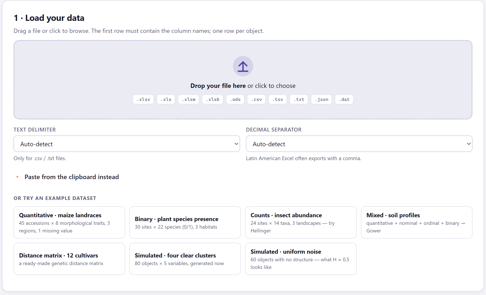
12345
Figura 3.1. La tarjeta 1 · Load your data.
1Zona de carga: arrastra el archivo o haz clic para elegirlo. Las fichas muestran los formatos aceptados.
2Text delimiter: separador de los archivos de texto; en automático la app lo deduce contando comas, puntos y comas, tabuladores o barras.
3Decimal separator: punto o coma; en automático se decide por mayoría entre las celdas numéricas.
4Paste from the clipboard instead: un área para pegar una tabla copiada de una hoja de cálculo.
5Los siete ejemplos (tabla 1.4 y sección 3.7). Los dos últimos se generan al momento en el navegador.
Tabla 3.1. Formatos que lee el Bloque 2.
Formato
Cómo se lee
Observaciones
Hojas de cálculo .xlsx, .xls, .xlsm, .xlsb, .ods
Con la biblioteca de hojas de cálculo incluida en la app; se toma la primera hoja y aparece el selector Sheet si hay varias.
Las celdas combinadas se detectan y se reportan; las fechas no se usan como números.
Texto delimitado .csv, .tsv, .txt, .dat, .prn
Con el delimitador elegido o detectado; respeta las comillas dobles.
Se acepta UTF-8 con o sin marca de orden de bytes.
.json
Un arreglo de objetos (un objeto por fila), un arreglo de arreglos, un objeto con columns y data, o un objeto cuyas claves son columnas.
Cualquier otra disposición produce un mensaje de error.
Portapapeles
Lo que pegues en Paste from the clipboard instead se lee como texto delimitado (los tabuladores que deja una hoja de cálculo se detectan solos).
El archivo se llama pasted-data.txt en los informes.
Cómo acomodar la tabla
La regla es la de siempre en estadística multivariada: una fila por objeto que quieras agrupar (accesión, sitio, muestra, parcela, perfil, gen) y una columna por variable, con los nombres de las columnas en la primera fila. Además, dos columnas opcionales facilitan todo lo que viene después:
Una columna de identificación (nombre o código único por fila). Se convierte en la etiqueta de las hojas del dendrograma y de los puntos en los mapas.
Una columna de agrupación conocida (región, especie, hábitat, tratamiento). Nunca se usa para construir los grupos: colorea las figuras y, en el Bloque 6, sirve para la validación externa.
Tabla 3.2. Cómo escribir cada tipo de dato en la tabla.
Dato
Cómo escribirlo
Números
Con punto o con coma decimal, pero no mezclados en una misma columna. Los separadores de miles se toleran; un signo de porcentaje al final se ignora.
Faltantes
Celda vacía o cualquiera de los códigos: NA, N/A, NaN, null, none, ., -, --, ?, ND, S/D, missing, faltante, los errores de las hojas de cálculo (#N/A, #DIV/0!…) e inf.
Binarias
Dos estados: 0/1, yes/no, y/n, true/false, present/absent, p/a, +/−, si/no, presence/absence, t/f. El segundo estado de cada par se codifica como 1.
Nominales
Texto con hasta 40 categorías. Cuida mayúsculas y acentos: Clay y clay serían dos niveles distintos (la app lo avisa).
Ordinales
Niveles de texto reconocidos (por ejemplo low < medium < high, poor < moderate < good < excellent, bajo < medio < alto, early < intermediate < late), o puntuaciones enteras en una columna cuyo nombre contenga score, scale, grade, rating, severity, level, stage, damage o likert.
Matriz de distancias
Una tabla cuadrada cuya primera columna repite los nombres de las columnas, con ceros en la diagonal y sin valores negativos. Pequeñas asimetrías se promedian.
iNota · la palabra "none" cuenta como faltante
Entre los códigos de faltante está none. Si una columna de agrupación usa esa palabra como categoría (por ejemplo, "none" para los sitios sin tratamiento), la app la leerá como celda vacía. Cámbiala por otra etiqueta, como control o ninguno. Lo verás en el ejemplo de ruido uniforme de la sección 3.7, donde la columna Group vale "none" en todas las filas y por eso aparece como Empty y excluida.
Lo que la app revisa al leer
Al cargar, la app busca los problemas de formato más comunes y los muestra debajo del mensaje de lectura (figura 3.2). Muchos los corrige sola; los que rompen la regla de una fila por objeto se marcan en rojo.
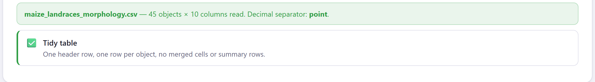
Figura 3.2. Tras leer el ejemplo de razas de maíz: el mensaje de lectura (objetos, columnas y separador decimal detectado) y la comprobación Tidy table.
Tabla 3.3. Comprobaciones del archivo y qué hace la app con cada una.
Aviso
Nivel
Qué significa y qué hace la app
Tidy table
✅
Una fila de encabezados, una fila por objeto, sin celdas combinadas ni filas de totales.
N title rows above the header
⚠️
Había filas de título antes de los nombres de columna; se saltan solas. Revisa la vista previa.
Merged cell ranges detected
⛔
Celdas combinadas en la hoja de cálculo: solo la primera celda conserva el valor. Descombina y rellena cada fila.
Columns without a name
⚠️
Se nombran V1, V2… (la primera sin nombre se llama Object, porque suele ser la de etiquetas).
Duplicated column names
⚠️
Se renombran con un sufijo (_2, _3…).
Rows with more cells than the header
⚠️
Las celdas sobrantes a la derecha se descartan.
Summary rows (Total / Mean) inside the data
⛔
Filas cuya primera celda dice Total, Mean, Average, Promedio, Suma, Sum o Media: se eliminan, porque se agruparían como si fueran objetos.
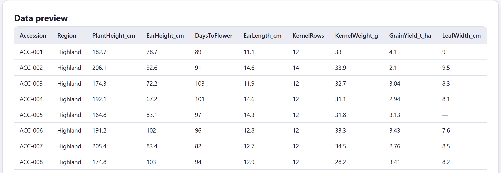
Figura 3.3. La tarjeta Data preview, al final del bloque, muestra la tabla tal como se leyó (hasta 200 filas). El guion largo de la fila ACC-005 es la celda faltante del ejemplo.
!Importante · una matriz de distancias salta dos tarjetas
Si la tabla se reconoce como matriz de distancias, las tarjetas de tipos de variable y de preprocesamiento no aparecen: no hay variables que tipificar ni nada que escalar. La app pasa directamente al análisis exploratorio, donde el mapa y la tendencia al agrupamiento se calculan sobre las coordenadas principales de la matriz. El Bloque 3 usará la matriz tal cual.
3.2Tipos de variable y papel de cada columna
La segunda tarjeta es la más importante del bloque. Para cada columna la app propone un tipo (qué clase de variable es) y un papel (para qué se usa). Del tipo dependen los coeficientes que ofrecerá el Bloque 3; del papel depende qué columnas entran en las distancias. Revisa la propuesta antes de seguir: es un minuto que evita análisis enteros mal planteados.
Tabla 3.4. Los cinco tipos de variable.
Tipo
Qué es
Ejemplos
Quantitative
Mediciones continuas o enteras.
Altura, rendimiento, pH, expresión.
Count / abundance
Enteros no negativos con muchos ceros.
Abundancias de especies, capturas, lecturas.
Binary (0/1)
Dos estados.
Presente/ausente, sí/no, alelo A/B.
Nominal
Categorías sin orden.
Cultivar, tipo de suelo, color.
Ordinal
Categorías ordenadas.
Bajo < medio < alto, escalas de daño.
Tabla 3.5. Los cinco papeles de una columna.
Papel
Para qué sirve
Cuántas columnas
Active (used to cluster)
Define la similitud entre objetos: entra en la matriz de trabajo y en las distancias.
Al menos dos.
Supplementary
No agrupa, pero se guarda para describir los grupos en el Bloque 7.
Las que quieras.
Object label / ID
Nombre de cada objeto en dendrogramas y mapas.
Una; al elegir otra, la anterior pasa a excluida.
Known grouping
Clasificación previa para colorear figuras y validar externamente. Nunca agrupa.
Una; al elegir otra, la anterior pasa a activa.
Exclude
Ignorar la columna.
Las que quieras.
Cómo adivina la app el tipo y el papel
La propuesta sale de reglas sencillas sobre el contenido y el nombre de cada columna (tabla 3.6). Con datos bien nombrados acierta casi siempre; cuando duda, lo dice en la columna Checks.
Tabla 3.6. Reglas de detección, en el orden en que se aplican a cada columna.
Si la columna…
…se propone como
Está vacía
Empty, excluida.
Es numérica (al menos 90 % de las celdas) y solo tiene dos valores de un par binario conocido
Binaria (0/1), activa.
Es numérica, todos sus valores son distintos y se llama ID, Code, Accession, Sample, Site, Plot, Profile, Name, Genotype…
Etiqueta de objeto.
Es numérica y constante
Constante, excluida.
Son enteros no negativos, con más de dos valores, y al menos 15 % de ceros o un nombre que sugiere conteos (_sp, abund, count, captur, reads, OTU…)
Conteo / abundancia, activa.
Son pocos enteros (hasta 7 valores distintos) y se llama Group, Class, Type, Region, Habitat, Treatment, Species, Population…
Códigos enteros de grupo: nominal, agrupación conocida.
Son pocos enteros (hasta 9) y el nombre sugiere una escala (score, scale, grade, severity, damage…)
Ordinal con niveles numéricos, activa.
Es numérica y no cae en lo anterior
Cuantitativa, activa. Si tiene pocos enteros distintos se añade el aviso "few integer values → nominal or ordinal?".
Es texto y todos los valores son distintos (más de 3 filas)
Etiqueta de objeto (o excluida si ya hay una).
Es texto con dos niveles de un par binario conocido
Binaria, activa.
Es texto con niveles de una escala ordinal conocida
Ordinal, activa, con el orden de la escala.
Es texto con más de 40 categorías
Nominal, excluida.
Es texto y se llama como un grupo (Region, Habitat, Landscape…)
Nominal, agrupación conocida.
Es texto con hasta 40 categorías
Nominal, activa.
60 %
Dato · la regla de las tablas de comunidades
Después de tipificar columna por columna, la app mira el conjunto: si hay al menos cuatro columnas numéricas de enteros no negativos, son al menos el 60 % de las numéricas activas y el 30 % de ellas contiene ceros, todas pasan a Count / abundance. Así una tabla de especies por sitio se reconoce como tal aunque algunas especies aparezcan en todos los sitios.
La tabla de variables
Cada columna del archivo ocupa una fila de la tabla (figura 3.4). En pantalla la tabla es más ancha que la ventana y se desplaza en horizontal; aquí se muestra en dos mitades.
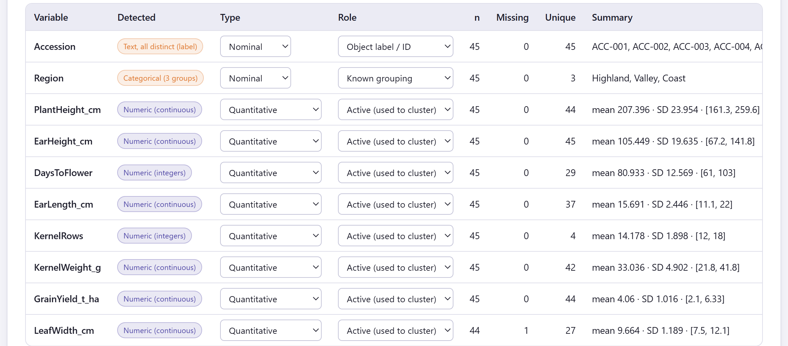
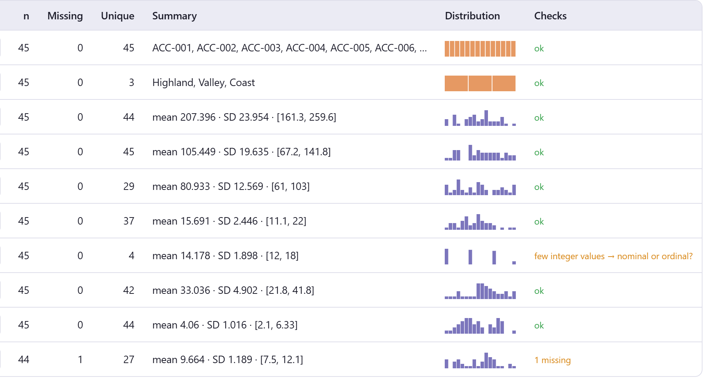
Figura 3.4. La tabla de variables del ejemplo de razas de maíz: a la izquierda, del nombre al papel; a la derecha, de los recuentos a las comprobaciones. La app reconoció la etiqueta (Accession), la agrupación conocida (Region, tres grupos) y ocho variables cuantitativas activas; marcó KernelRows por tener solo cuatro valores enteros y LeafWidth_cm por su celda faltante.
Tabla 3.7. Columnas de la tabla de variables.
Columna
Qué muestra
Variable
El nombre tal como viene en el archivo (o el asignado si faltaba).
Detected
Lo que la app dedujo del contenido, con un color por tipo: por ejemplo Numeric (continuous), Counts (17 % zeros), Binary (no / yes), Ordinal (4 levels), Categorical (3 groups), Text, all distinct (label).
Type
Menú para corregir el tipo. Solo ofrece los tipos compatibles con el contenido (una columna de texto no puede ser cuantitativa). Si eliges Ordinal aparece debajo un campo para escribir el orden de los niveles separados por <.
Role
Menú para cambiar el papel (tabla 3.5).
n · Missing · Unique
Celdas con dato, celdas faltantes y valores distintos.
Summary
Media, desviación estándar y rango para las numéricas; el orden de los niveles para las ordinales; qué valor vale 0 y cuál 1, con el porcentaje de unos, para las binarias; los primeros niveles para las nominales.
Distribution
Un histograma en miniatura (numéricas) o barras por nivel (categóricas), con el color del tipo.
Checks
Avisos de la tabla 3.8, u ok.
Tabla 3.8. Avisos de la columna Checks.
Aviso
Cuándo aparece y qué hacer
zero variance
Todos los valores son iguales: la variable no aporta nada y se descarta al aplicar.
N missing / X % missing
Celdas faltantes; en rojo cuando pasan del 20 %. Decide en la tarjeta 3 si eliminas o imputas.
numbers mixed with text
Más del 50 % pero menos del 90 % de las celdas son numéricas, o un número está escrito con letras. Revisa la columna en el archivo.
strongly skewed → log/sqrt? / skewed
Asimetría mayor que 2 (o que 1). Considera una transformación logarítmica o de raíz cuadrada.
N outliers |z| > 3
Valores a más de tres desviaciones estándar de la media. Compruébalos en los datos originales.
few integer values → nominal or ordinal?
Enteros con hasta siete valores distintos: pueden ser códigos. Si lo son, cambia el tipo.
many categories
Nominal activa con más de 15 niveles: cada nivel se vuelve una columna indicadora y pesa poco.
levels differ only by case
Dos niveles que solo cambian en mayúsculas o minúsculas: unifícalos en el archivo.
La estructura detectada y la ruta recomendada
Debajo de la tabla, Detected structure resume la decisión en seis casillas, añade las comprobaciones que afectan al conjunto y propone una ruta para los bloques siguientes (figura 3.5). La ruta se deduce del perfil de los datos: la combinación de tipos de las columnas activas (tabla 3.10).
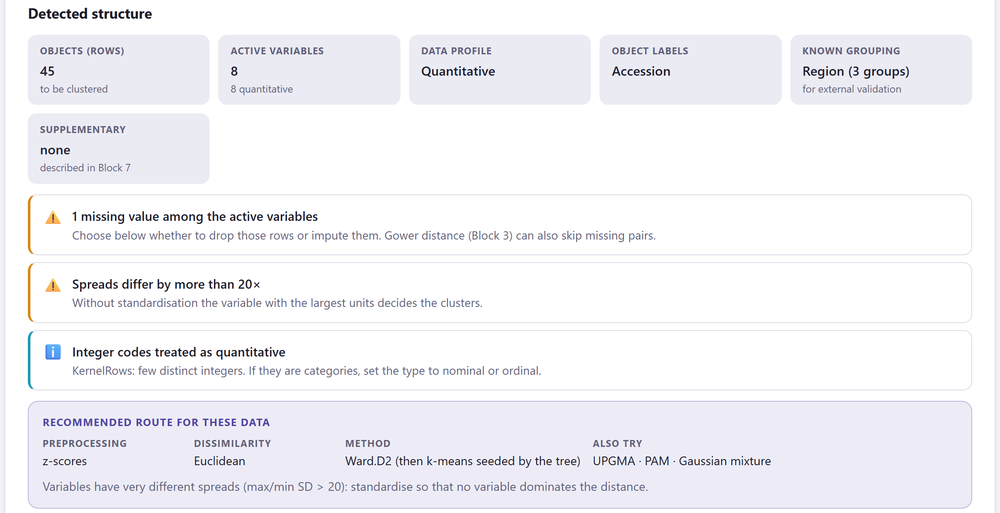
Figura 3.5.Detected structure con las razas de maíz: 45 objetos, 8 variables cuantitativas activas, etiqueta y agrupación conocida; tres avisos (una celda faltante, dispersiones que difieren más de 20 veces, enteros con pocos valores en KernelRows) y la ruta recomendada: puntuaciones z, distancia euclidiana, Ward.D2 seguido de k-means.
Tabla 3.9. Comprobaciones de Detected structure.
Aviso
Nivel
Qué hacer
No active variables
⛔
Marca al menos dos columnas como activas; el botón de aplicar queda desactivado mientras tanto.
Only one active variable
⚠️
Agrupar por una sola variable es solo cortar sus valores en intervalos.
Very few objects
⛔
Menos de 8 filas no sostienen más de uno o dos grupos.
Fewer than 3 objects per variable
⚠️
Con muchas variables las distancias se parecen todas; el Bloque 3 ofrece agrupar sobre componentes principales.
N missing values among the active variables
⚠️
Elige en la tarjeta 3 entre eliminar filas o imputar.
Mixed variable types
ℹ️
La ruta natural es Gower + PAM; la estandarización la hace Gower por dentro.
Looks like a community (species × site) table
ℹ️
Usa coeficientes asimétricos o la transformación de Hellinger, no la euclidiana cruda.
Spreads differ by more than 20×
⚠️
Sin estandarizar, la variable de unidades grandes decide los grupos.
No label column
ℹ️
Se usarán números de fila como nombres.
Integer codes treated as quantitative
ℹ️
Si esos enteros son categorías, cambia el tipo a nominal u ordinal.
Constant variables
⚠️
Se descartan al aplicar.
Tabla 3.10. La ruta recomendada según el perfil de los datos. El preprocesamiento propuesto se copia a la tarjeta 3; lo demás se repite en What to do next al final del bloque.
Perfil
Preprocesamiento
Disimilitud
Método
Prueba también
Quantitative cuantitativas, con o sin ordinales
z (log antes si hay variables muy asimétricas)
Euclidiana
Ward.D2 y k-means sembrado con el árbol
UPGMA · PAM · mezclas gaussianas
Ecological counts ≥ 60 % conteos
Hellinger, sin escalar
Bray–Curtis sobre conteos, o euclidiana sobre Hellinger
UPGMA (Bray–Curtis) o Ward.D2 (Hellinger)
PAM · k-means sobre Hellinger
Binary
Sin escalar
Jaccard (asimétrica) o apareamiento simple (estados simétricos)
UPGMA
PAM · Ward sobre √(1 − s)
Nominal
Rango 0–1
Apareamiento simple / Gower
PAM
UPGMA sobre Gower
Ordinal
Rango 0–1
Manhattan sobre rangos / Gower
PAM o UPGMA
Ward.D2 sobre rangos
Mixed types
Rango 0–1
Gower
PAM
UPGMA sobre Gower
Distance matrix
Ninguno
Tu matriz, tal cual
UPGMA o PAM
Enlace completo · Ward sobre √d si es euclidiana
✓Regla de decisión · qué escalado propone la app para datos cuantitativos
Si las desviaciones estándar de las variables activas…
entonces
difieren más de 20 veces (máxima / mínima > 20)
Puntuaciones z, con aviso: sin estandarizar una sola variable domina.
difieren entre 3 y 20 veces
Puntuaciones z; conserva las unidades crudas solo si todas comparten unidad y quieres que las mayores pesen más.
son parecidas (menos de 3 veces)
Puntuaciones z de todos modos: cambia poco y mantiene el análisis comparable.
y además alguna variable tiene asimetría mayor que 1.5
Se propone log(x + 1) antes de escalar.
3.3Faltantes, transformación y escalado
La tercera tarjeta construye la matriz de trabajo: la tabla numérica que verán todos los bloques siguientes. Cuatro menús y un botón (figura 3.6). Los valores iniciales son los de la ruta recomendada; puedes cambiarlos y volver a pulsar Apply and explore → cuantas veces quieras: todo lo que sigue se recalcula.
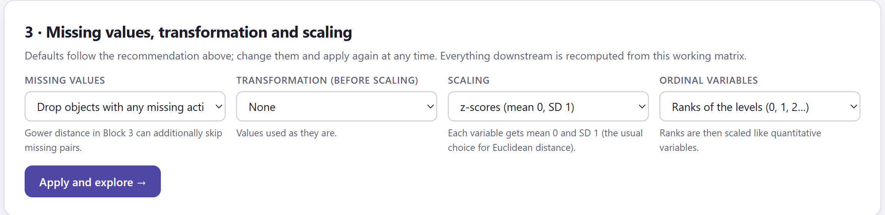
Figura 3.6. La tarjeta 3 · Missing values, transformation and scaling con los valores propuestos para las razas de maíz. Debajo de cada menú, una línea explica la opción elegida.
Tabla 3.11. Opciones de Missing values y Ordinal variables.
Opción
Qué hace
Drop objects with any missing active value
Elimina las filas con algún faltante en las columnas activas. Es lo seguro cuando son pocas; la app avisa del porcentaje eliminado y se queja si pasa del 20 %.
Impute (mean / median / mode)
Rellena cada faltante con la media (cuantitativas), la mediana (conteos y niveles ordinales) o la moda (binarias y nominales) de su columna. Conserva todas las filas; el mensaje dice cuántas celdas se imputaron.
Ranks of the levels (0, 1, 2…)
Cada variable ordinal se codifica con el rango de su nivel, del más bajo al más alto, y luego se escala como una cuantitativa.
Numeric scores if the levels are numbers
Si los niveles son números (una escala 1–5, por ejemplo), se usan tal cual en vez de los rangos.
Tabla 3.12. Opciones de Transformation (before scaling). Las transformaciones por fila se aplican a las columnas de conteo; si no hay, a todas las cuantitativas. Los valores negativos las bloquean (log y raíz usan el valor absoluto con su signo; las de fila se omiten con aviso).
Opción
Fórmula
Para qué sirve
None
—
Los valores se usan como están.
log(x + 1)
log(x + 1) por celda
Comprime los valores grandes y conserva los ceros; para datos positivos asimétricos.
Square root
√x por celda
Más suave que el logaritmo; la transformación clásica para estabilizar la varianza de conteos.
Hellinger (row-wise)
√(x / total de la fila)
Convierte una tabla de abundancias en algo que la distancia euclidiana, Ward y k-means manejan bien.
Chord (row-wise)
x / √Σx²
Cada objeto se vuelve un vector unitario; las distancias reflejan la forma del perfil, no su tamaño.
Relative abundance (row-wise)
x / total de la fila
Proporciones por objeto.
Presence / absence
1 si x > 0
Reduce las abundancias a presencia.
Tabla 3.13. Opciones de Scaling. Las variables binarias nunca se escalan; las columnas indicadoras de las nominales se multiplican por 0.7071 para que una variable nominal pese como una cuantitativa.
Opción
Fórmula
Cuándo usarla
z-scores (mean 0, SD 1)
(x − media) / DE
La opción habitual con distancia euclidiana.
Range 0–1
(x − mín) / (máx − mín)
Conserva la forma de la distribución; es lo que Gower hace internamente. Sensible a atípicos.
Robust (median / IQR)
(x − mediana) / RIC
Como z, pero resistente a valores extremos.
Divide by max |x|
x / máx |x|
Mantiene los ceros en cero; útil con datos dispersos.
None (raw units)
—
Solo si todas las variables comparten unidad y quieres que las de mayor dispersión pesen más.
θTeoría en breve · qué contiene la matriz de trabajo
Después de aplicar, cada objeto es una fila de números: las cuantitativas y los conteos transformados y escalados, las ordinales como rangos escalados, las binarias como 0/1 sin escalar y cada nominal convertida en tantas columnas indicadoras como niveles (hasta 40), escaladas por 0.7071. Sobre esa matriz se calculan la distancia euclidiana del análisis exploratorio, el mapa de componentes principales, la imagen VAT y el estadístico de Hopkins. El Bloque 3 vuelve a leer los tipos originales para ofrecer coeficientes que respeten cada clase de variable; la matriz de trabajo es solo el punto de partida común. Puedes descargarla con ⬇ Download the preprocessed matrix (CSV) al final del bloque.
3.4¿Son agrupables mis datos? Hopkins y VAT
Todo algoritmo devuelve grupos, existan o no (lo viste con el ruido uniforme del demo, práctica 5 del capítulo 2). Por eso la cuarta tarjeta, antes de mostrar un solo dendrograma, mide la tendencia al agrupamiento con dos herramientas complementarias: un número con su valor P, el estadístico de Hopkins, y una imagen, la VAT. Las acompañan el mapa de componentes principales, el mapa de calor de correlaciones y el diagrama de atípicos multivariados.
θTeoría en breve · el estadístico de Hopkins
Se toman m puntos al azar dentro de la caja que envuelve a los datos y se mide la distancia de cada uno a su objeto real más cercano (suma u). Se toman también m objetos reales al azar y se mide la distancia de cada uno a su vecino real más cercano (suma w). El estadístico es H = u / (u + w). Si los objetos están repartidos al azar, un punto artificial y un objeto real tienen vecinos igual de cerca y H ronda 0.5. Si los objetos forman grupos, cada objeto real tiene vecinos muy cerca (w pequeña) mientras que muchos puntos artificiales caen en los huecos entre grupos (u grande), y H se acerca a 1.
ClusteringPro usa m igual a la mitad de los objetos (entre 10 y 200), repite el sorteo 20 veces y promedia. Y en lugar de la aproximación teórica, que solo vale para m pequeña, calibra el resultado por Monte Carlo: simula 80 tablas uniformes con el mismo número de objetos, de variables y el mismo rango, calcula H en cada una y reporta la banda del 95 % de esos valores y un valor P, la fracción de simulaciones que dan un H tan grande como el observado. Con más de 12 variables, o con una matriz de distancias, H se calcula sobre los componentes principales que reúnen el 90 % de la varianza (de 2 a 10), porque con muchas dimensiones todas las distancias se parecen.
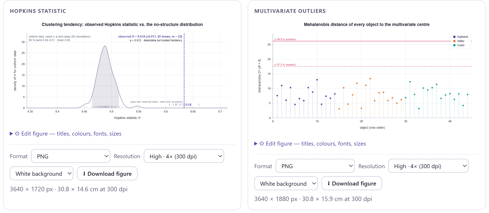
12345
Figura 3.7. Las dos figuras de la tendencia al agrupamiento y los atípicos, con las razas de maíz.
1Curva de densidad de H en las 80 tablas uniformes simuladas; la franja gris es la banda del 95 % (aquí 0.46–0.51).
2El H observado (línea punteada): 0.634 ± 0.013 con m = 22, P = 0.012, "detectable but modest tendency".
3Marcas al pie: arriba los 20 sorteos del H observado, abajo las simulaciones.
4Distancia de Mahalanobis D² de cada objeto al centro multivariado, con las líneas de referencia ji cuadrada del 97.5 % (sospechoso) y 99.9 % (extremo); los objetos por encima se rotulan.
5Puntos coloreados por la agrupación conocida, si la hay.
✓Regla de decisión · cómo lee la app el estadístico de Hopkins
Si…
Nivel
Lectura
P ≤ 0.05 y H ≥ 0.70
✅ clara
Clear clustering tendency: los datos están lejos de la aleatoriedad espacial; vale la pena buscar grupos.
P ≤ 0.05 pero H < 0.70
⚠️ modesta
Detectable but modest: más de lo que da el azar, pero no por mucho. Espera pocos grupos bien poblados o gradientes. Con pocos objetos por grupo H se queda modesto aunque el mapa muestre nubes claras: deja que el mapa y la VAT opinen.
P > 0.05 pero H ≥ 0.62
⚠️ moderada
Moderate: algo de estructura, quizá gradientes más que grupos discretos.
P > 0.05 y H < 0.62
⛔ débil o nula
Weak or no clustering tendency: la estructura de vecinos es la de puntos al azar. Cualquier algoritmo devolverá grupos, pero pueden ser arbitrarios.
θTeoría en breve · la imagen VAT
VAT son las siglas en inglés de evaluación visual de la tendencia. La matriz de distancias se reordena de modo que cada objeto quede junto a su vecino más cercano entre los ya colocados (se empieza por el objeto más alejado de todos y se sigue como al construir un árbol de expansión mínima), y se pinta como imagen: en la paleta clásica de grises, oscuro es cerca. Si hay grupos, aparecen bloques oscuros a lo largo de la diagonal, y su número es una primera estimación de k. Si no los hay, la imagen es un degradado sin bloques. Cuando diste una agrupación conocida, una franja de color al lado izquierdo muestra si los bloques coinciden con ella.
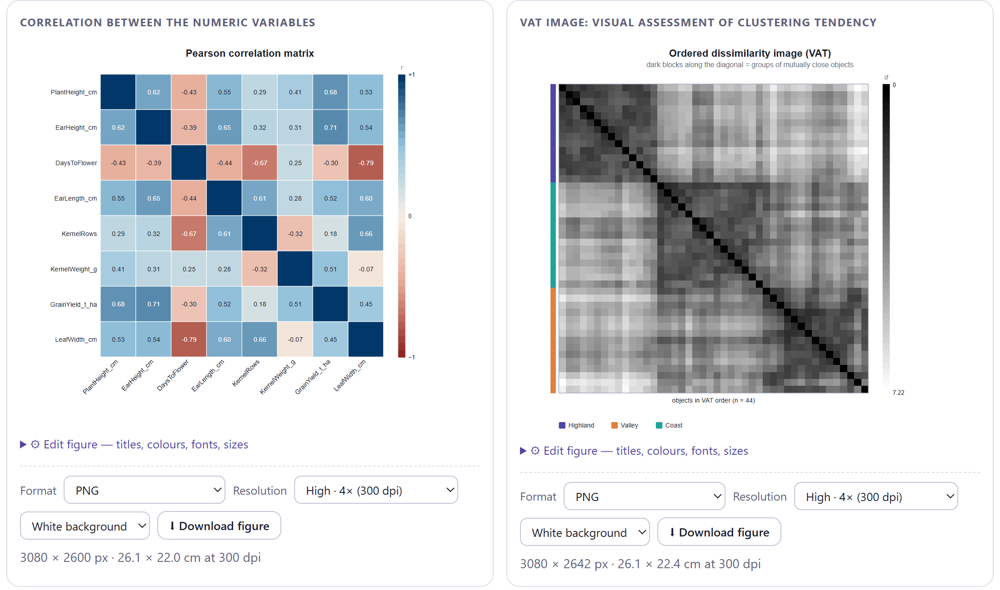
Figura 3.8. A la izquierda, la matriz de correlaciones de Pearson entre las variables numéricas de la matriz de trabajo (azul positivo, rojo negativo; los valores se imprimen hasta con 18 variables). A la derecha, la imagen VAT de las razas de maíz: tres bloques oscuros que coinciden bastante bien con la franja de regiones, aunque los dos primeros se tocan.
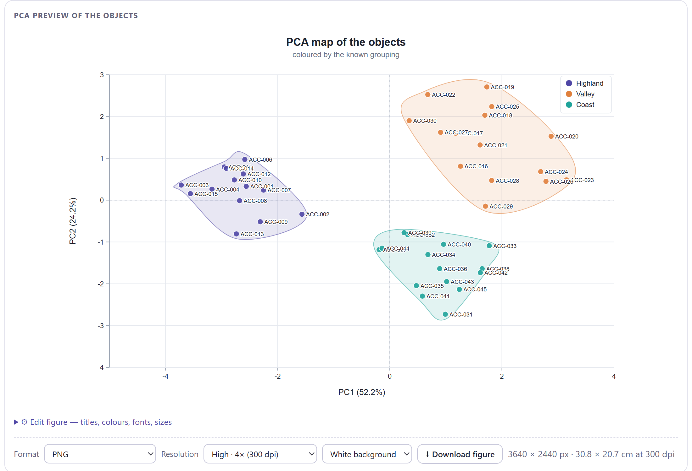
Figura 3.9. El mapa de componentes principales de los objetos (76 % de la varianza en los dos primeros ejes), coloreado por la agrupación conocida y con envolventes por grupo. Con una matriz de distancias el mapa es de coordenadas principales (MDS). Las etiquetas se muestran automáticamente hasta con 60 objetos.
iNota · el mapa engaña menos con el porcentaje a la vista
El mapa muestra dos ejes; el porcentaje entre paréntesis dice cuánta varianza reúnen. Con 76 % lo que ves es casi todo lo que hay. Con 49 %, como en el ejemplo binario o en el ruido uniforme, la mitad de la variación está fuera del plano y dos objetos que parecen vecinos pueden no serlo. En esos casos la VAT y el estadístico de Hopkins, que usan todas las dimensiones, pesan más que el mapa.
3.5La calificación y la recomendación
Encabezando la cuarta tarjeta, un veredicto de una letra resume todo lo anterior (figura 3.10): la calificación de preparación (readiness) de A a D, una frase que la explica, las casillas con las cifras que la sustentan, la lista de comprobaciones y la tarjeta What to do next con lo que conviene hacer en los bloques 3 a 6.
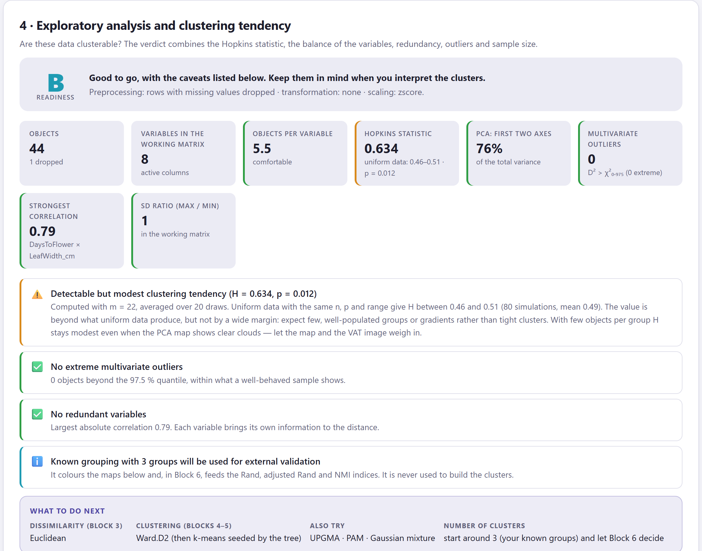
1234
Figura 3.10. El inicio de la tarjeta 4 · Exploratory analysis and clustering tendency con las razas de maíz.
1La calificación (aquí B) y la línea de preprocesamiento con que se calculó.
2Ocho casillas de cifras (tabla 3.14); el borde de color repite el semáforo de cada una.
3Comprobaciones interpretadas (tabla 3.15).
4What to do next: disimilitud, método, alternativas y por dónde empezar con el número de grupos.
Tabla 3.14. Las casillas de cifras y su semáforo.
Casilla
Qué es
Semáforo
Objects
Objetos en la matriz de trabajo y cuántos se eliminaron por faltantes.
—
Variables in the working matrix
Columnas de la matriz; con nominales indica cuántas son numéricas y cuántas indicadoras.
—
Objects per variable
Cociente n / p, contando cada nominal como una variable.
verde ≥ 5 · ámbar 3–5 · rojo < 3
Hopkins statistic
H, la banda uniforme y el valor P.
La regla de la sección 3.4.
PCA (o MDS): first two axes
Varianza reunida por los dos primeros ejes del mapa.
verde ≥ 50 % · ámbar 30–50 %
Multivariate outliers
Objetos con D² por encima del cuantil 97.5 %, y cuántos son extremos (99.9 %).
ámbar si pasan del 10 % de los objetos
Strongest correlation
La mayor |r| entre variables numéricas y qué par la produce.
ámbar si |r| > 0.95
SD ratio (max / min)
Cociente entre la mayor y la menor desviación estándar en la matriz de trabajo.
ámbar si > 10
Tabla 3.15. Comprobaciones de la tarjeta 4 y lo que sugieren.
Comprobación
Nivel
Qué sugiere
Tendencia clara / modesta / moderada / débil (Hopkins)
✅ ⚠️ ⛔
Según la regla de la sección 3.4.
N extreme objects (Mahalanobis D² beyond the 99.9 % quantile)
⚠️
Nombra hasta ocho objetos. Los jerárquicos los aislarán en su rama y k-means arrastrará los centros: considera PAM, un escalado robusto o quitarlos tras revisar los valores.
N objects beyond the 97.5 % Mahalanobis quantile
⚠️
Más del 10 % de objetos lejos del centro: colas pesadas o estructura alargada. PAM y enlace simple sufren menos que k-means y Ward.
No extreme multivariate outliers
✅
Lo que muestra una muestra bien portada.
X and Y are nearly redundant (|r| = …)
⚠️
Dos variables casi iguales cuentan doble en la distancia euclidiana: quita una o agrupa sobre componentes (Bloque 3).
No redundant variables
✅
Cada variable aporta información propia.
Variables with very different spreads and no scaling
⛔
Elegiste no escalar y la mayor DE es más de 10 veces la menor: la distancia es esa variable. Escala y vuelve a aplicar.
Spreads still differ after transformation
⚠️
Aun escaladas, una variable se dispersa mucho más (colas pesadas o muchos valores idénticos); con transformaciones por fila es lo esperado, pero vigila que una sola especie abundante no mande.
Many rows dropped for missing values
⚠️
Se eliminó más del 20 % de los objetos: la imputación los conserva, y Gower puede saltar los pares faltantes.
Known grouping with N groups will be used for external validation
ℹ️
Colorea las figuras y alimenta los índices Rand, ARI y NMI del Bloque 6.
✓Regla de decisión · cómo se calcula la calificación
Letra
Condición
Frase de la app
A
Ningún aviso rojo ni ámbar
Los datos están listos: tendencia clara, variables equilibradas, sin señales de alarma.
B
Uno o dos avisos ámbar, ninguno rojo
Adelante, con las salvedades de la lista; tenlas presentes al interpretar.
C
Un aviso rojo, o más de dos ámbar
Agrupar es posible pero frágil; atiende los puntos marcados o trata los resultados como exploratorios.
D
Dos o más avisos rojos
Estos datos no sostienen un análisis de agrupamientos tal como están.
Cuentan como rojos: tendencia débil o nula, dispersiones muy distintas sin escalar y menos de 8 objetos. Cuentan como ámbar: tendencia modesta o moderada, atípicos extremos o más del 10 % de sospechosos, variables redundantes, dispersiones distintas tras transformar, más del 20 % de filas eliminadas y menos de 3 objetos por variable.
!Importante · la calificación no es una sentencia
Una B con "tendencia modesta" es lo más frecuente en datos reales de pocas decenas de objetos: el estadístico de Hopkins es conservador con muestras pequeñas. Lee la calificación junto con el mapa y la VAT. Una C por dispersiones sin escalar se arregla en un clic; una C por tendencia débil merece una pausa: pregúntate si las variables son las adecuadas antes de seguir. Y una D honesta vale más que un dendrograma bonito.
3.6Ajustes, tablas y figuras del bloque
El bloque produce seis figuras editables, cada una en su tarjeta con el panel Edit figure y los controles de descarga descritos en la sección 1.6. La tabla 3.16 resume los controles propios de cada una; los de estilo y tipografía son comunes a todas.
Tabla 3.16. Las seis figuras del bloque y sus controles propios.
Figura
Qué muestra
Controles propios
Spread of every variable after preprocessing
Cajas de cada variable de la matriz de trabajo (figura 3.11).
Values (después de transformar y escalar, o crudos), Order (como en la tabla, o por dispersión), Row height, Hide dummy columns, Show mean (◇), paleta y posición de la leyenda.
Correlation between the numeric variables
Matriz de correlaciones de Pearson (figura 3.8, izquierda). No aparece con datos binarios puros ni con matrices de distancia.
Colour map, Show values.
PCA (o MDS) preview of the objects
Mapa de los objetos en los dos primeros ejes (figura 3.9).
Títulos de los ejes, Object labels (automático, todas, ninguna), tamaño de etiquetas y puntos, forma del punto, Convex hulls per group, color de los puntos cuando no hay grupos, paleta y leyenda.
VAT image
Matriz de distancias reordenada (figura 3.8, derecha).
Colour map (grises clásicos u otra rampa), Known-group strip, paleta y leyenda.
Hopkins statistic
H observado frente a la distribución sin estructura (figura 3.7, izquierda). No aparece con menos de 6 objetos.
Color del valor observado y de la curva nula.
Multivariate outliers
D² de Mahalanobis por objeto (figura 3.7, derecha). No aparece con matrices de distancia ni con menos de 5 objetos.
Sort objects by D², tamaño de punto, color de los atípicos, paleta y leyenda.
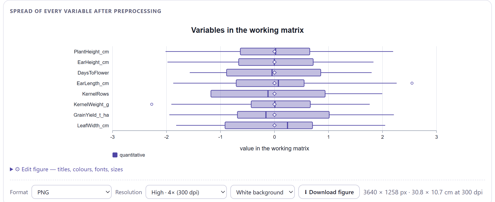
Figura 3.11.Spread of every variable after preprocessing: un diagrama de cajas por variable de la matriz de trabajo, con el rombo en la media, coloreado por tipo. Con puntuaciones z todas las cajas quedan centradas en cero y con dispersión comparable; los círculos son valores fuera de los bigotes.
iNota · qué se lleva el informe
El Bloque 8 incluye en el informe la tabla de variables, las casillas y comprobaciones de las tarjetas 2 y 4, y las seis figuras tal como las hayas editado. Si cambias un título o una paleta aquí, así saldrán en el informe. El botón ⬇ Download the preprocessed matrix (CSV) guarda la matriz de trabajo con las etiquetas y la agrupación conocida, por si quieres reproducir el análisis en otro programa.
3.7Paso a paso con los siete ejemplos
Cada ejemplo enseña una situación distinta. Los pasos son siempre los mismos: cargar, revisar tipos y papeles, aplicar y leer el veredicto. Las cifras de esta sección son las que da la app con los valores propuestos; los dos ejemplos simulados usan una semilla fija, así que también son reproducibles.
Tabla 3.17. Los siete ejemplos de un vistazo, con los valores propuestos por la app.
Ejemplo
n
p
Perfil
Preprocesamiento
H (P)
Nota
Razas de maíz
44
8
Cuantitativo
z
0.634 (0.012)
B
Presencia de especies
30
22
Binario
ninguno
0.559 (0.012)
B
Abundancia de insectos
24
14
Conteos ecológicos
Hellinger, sin escalar
0.533 (0.049)
B
Perfiles de suelo
36
14 (8 + 6)
Mixto
rango 0–1
0.815 (0.012)
A
Matriz de distancias
12
7 ejes
Matriz
ninguno
0.581 (0.025)
B
Cuatro grupos simulados
80
5
Cuantitativo
z
0.784 (0.012)
A
Ruido uniforme
60
5
Cuantitativo
z
0.474 (0.840)
C
Ejemplo 1 · Razas de maíz: el caso cuantitativo con una celda faltante
▸Paso a paso
En la portada pulsa Start with my data → y, en los ejemplos, Quantitative · maize landraces. La app lee 45 objetos × 10 columnas con separador decimal de punto y reporta Tidy table.
Revisa la tabla de variables (figura 3.4): Accession es la etiqueta, Region la agrupación conocida (Highland, Valley, Coast) y las ocho medidas son cuantitativas activas. Fíjate en los dos avisos: KernelRows tiene solo cuatro valores enteros (12, 14, 16, 18: hileras de granos, una cuenta que aquí conviene tratar como cuantitativa) y LeafWidth_cm tiene una celda faltante.
Lee Detected structure (figura 3.5): las dispersiones difieren más de 20 veces (la altura de planta se mide en cientos de centímetros; el rendimiento, en unidades de toneladas), así que la ruta propone puntuaciones z.
Deja la tarjeta 3 como está (eliminar filas con faltantes, sin transformación, z) y pulsa Apply and explore →. El mensaje dice que se eliminó 1 fila (2 %) y quedan 44 objetos.
Lee el veredicto (figura 3.10): B, con tendencia modesta (H = 0.634, P = 0.012), sin atípicos ni redundancias (correlación máxima 0.79 entre días a floración y ancho de hoja). Mira el mapa (figura 3.9): tres nubes claras por región. La VAT (figura 3.8) muestra tres bloques.
What to do next: euclidiana, Ward.D2 seguido de k-means, y empezar con k = 3 por las tres regiones conocidas.
Pruébalo tú: cambia Missing values a Impute y aplica de nuevo: los 45 objetos se conservan y el mensaje informa de 1 celda imputada con la media. Después prueba Scaling = None (raw units): la casilla SD ratio se dispara, aparece el aviso rojo de dispersiones sin escalar y la calificación baja a C. Es la demostración más rápida de por qué se estandariza.
En la tabla de variables, las 22 especies aparecen como Binary 0/1 activas, Site como etiqueta y Habitat (Forest, Grassland, Wetland) como agrupación conocida. La estructura detectada avisa: menos de 3 objetos por variable.
La ruta recomendada no escala nada y propone Jaccard (o apareamiento simple si ambos estados informan) con UPGMA. Aplica.
Veredicto B: tendencia modesta (H = 0.559, P = 0.012, calculado sobre 10 componentes que reúnen el 89 % de la varianza), sin correlaciones (las binarias no entran en el mapa de calor) y con 49 % de la varianza en los dos primeros ejes.
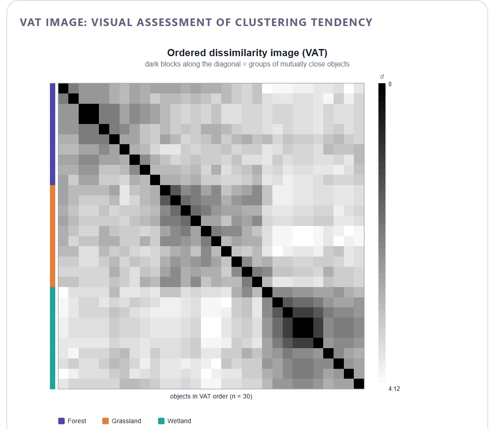
Figura 3.12. La VAT de los 30 sitios. Con distancia euclidiana sobre ceros y unos los bloques ya se insinúan y siguen la franja de hábitats; el Bloque 3 los hará más nítidos con el coeficiente de Jaccard, que ignora las ausencias compartidas.
θLo que aprendiste
Con datos binarios el Bloque 2 no escala y su análisis exploratorio se hace sobre la distancia euclidiana de los 0/1, que equivale a la raíz del número de desacuerdos. Es una vista provisional: la disimilitud definitiva (Jaccard, Dice, apareamiento simple…) la eliges en el Bloque 3 según lo que signifique el cero. Por eso el mapa reúne solo la mitad de la varianza y el H es modesto: no es que los sitios no tengan estructura, es que todavía no se está midiendo con el coeficiente adecuado.
Ejemplo 3 · Abundancia de insectos: conteos y Hellinger
Las 14 familias de artrópodos aparecen como Counts con su porcentaje de ceros (de 0 a 17 %); aunque varias no tienen ceros, la regla de las tablas de comunidades las tipifica todas como conteos. Landscape (Organic_field, Conventional, Hedgerow) es la agrupación conocida.
La estructura detectada dice Looks like a community (species × site) table y la ruta propone Hellinger sin escalar, con Bray–Curtis o Ward.D2 sobre Hellinger. Aplica.
Veredicto B: H = 0.533 con P = 0.049, justo en el límite; sin atípicos; correlación máxima 0.82 entre áfidos y abejas. El mapa (figura 3.13) reúne el 75 % de la varianza y separa los tres paisajes.
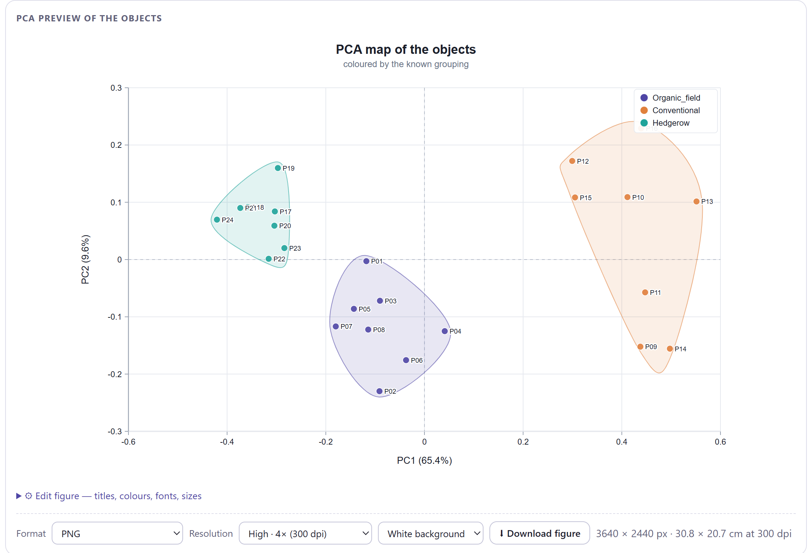
Figura 3.13. Mapa de componentes principales de los 24 sitios tras la transformación de Hellinger. Los tres paisajes forman nubes separadas; el primer eje (65 %) ordena de setos a campos convencionales.
Pruébalo tú: cambia Transformation a None y Scaling a z-scores, y aplica. Verás que el mapa cambia y que la calificación se resiente: estandarizar por columna da el mismo peso a una familia rara que a una dominante, justo lo contrario de lo que quieren los ecólogos, y las distancias euclidianas crudas hacen parecer similares a dos sitios por las familias que a ambos les faltan. Hellinger evita ambas cosas.
Mira la tabla de variables: seis cuantitativas (pH, materia orgánica, arcilla, arena, CIC, pendiente), Texture nominal con 6 niveles, Drainage ordinal con 4 niveles reconocidos (poor < moderate < good < excessive) y Calcareous binaria (no = 0, yes = 1). Todas activas.
La estructura detectada avisa Mixed variable types y la ruta propone rango 0–1, Gower y PAM. Aplica.
Veredicto A: tendencia clara (H = 0.815, P = 0.012, sobre 5 componentes con el 93 % de la varianza), sin atípicos, correlación máxima 0.94 entre arcilla y CIC (alta pero por debajo del umbral de redundancia).
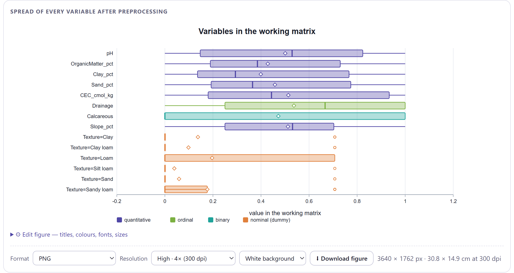
Figura 3.14. La matriz de trabajo de los perfiles de suelo: 8 columnas numéricas (las cuantitativas y el drenaje como rangos, en escala 0–1; la binaria sin escalar) más 6 columnas indicadoras de la textura, en naranja, que valen 0 o 0.7071.
iNota · las indicadoras son solo para explorar
Las seis columnas Texture=… existen para que el mapa, la VAT y el estadístico de Hopkins puedan calcularse sobre una matriz numérica. La distancia de Gower del Bloque 3 no las usa: compara la textura de dos perfiles preguntando si coincide o no, que es lo que corresponde a una variable nominal.
Ejemplo 5 · Matriz de distancias genéticas
▸Paso a paso
Carga Distance matrix · 12 cultivars. El mensaje dice que se reconoció como matriz de distancias de 12 objetos y que no aplica escalado.
Las tarjetas 2 y 3 no aparecen. La app aplica sola y muestra la tarjeta 4 con un mapa de coordenadas principales (MDS) en lugar del de componentes.
Veredicto B: H = 0.581 (P = 0.025) sobre 4 ejes con el 92 % de la varianza; los dos primeros ejes del mapa reúnen el 81 %. No hay casillas de atípicos ni de correlaciones porque no hay variables.
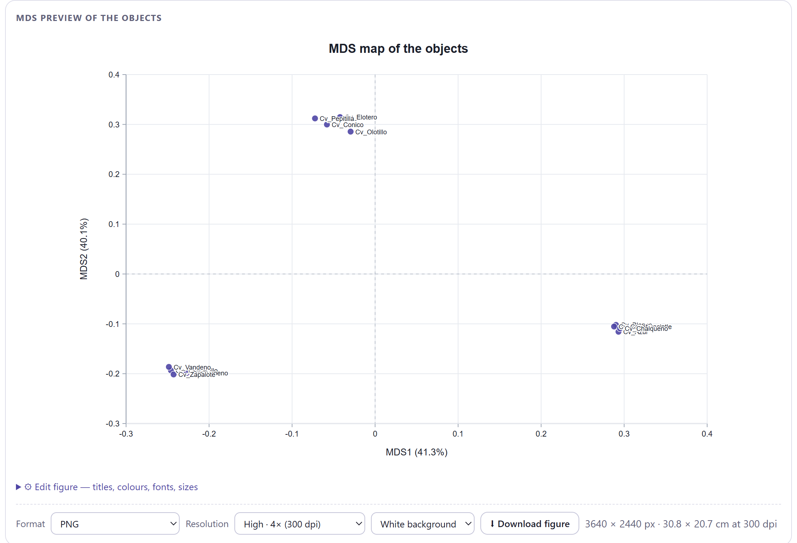
Figura 3.15. Coordenadas principales de los 12 cultivares a partir de la matriz genética: tres grupos apretados de cuatro cultivares cada uno (Azul, Blanco, Cacahuacintle, Chalqueño; Cónico, Elotero, Olotillo, Pepitilla; Tabloncillo, Tuxpeño, Vandeño, Zapalote). Con tan pocos objetos las etiquetas se encima; el editor de la figura permite agrandar el mapa o quitarlas.
Ejemplos 6 y 7 · Cuatro grupos simulados y ruido uniforme
▸Paso a paso
Carga Simulated · four clear clusters: 80 objetos × 5 variables generados al momento alrededor de cuatro centros, con la columna Group como agrupación conocida. Aplica con los valores propuestos (z).
Veredicto A: H = 0.784 (P = 0.012), 91 % de la varianza en dos ejes, un objeto sospechoso pero ninguno extremo. Guarda mentalmente la figura de Hopkins.
Carga ahora Simulated · uniform noise: 60 objetos × 5 variables al azar. La columna Group vale "none" en todas las filas y por eso aparece como Empty y excluida (nota de la sección 3.1).
Aplica y compara: veredicto C con el aviso rojo Weak or no clustering tendency (H = 0.474, P = 0.840), 49 % de varianza en dos ejes y correlación máxima 0.19 (figura 3.17).
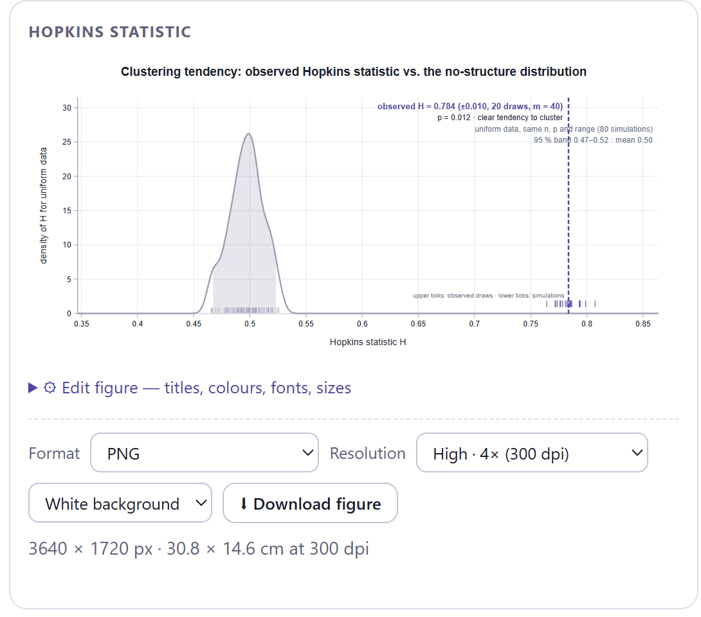
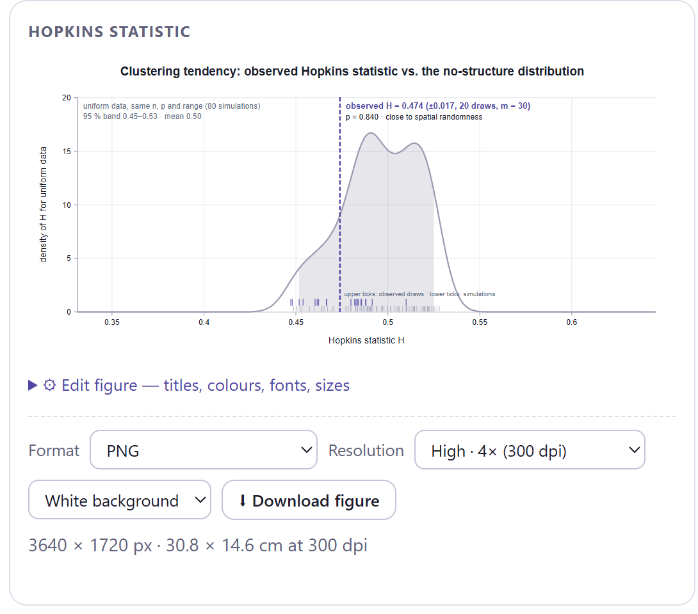
Figura 3.16. El estadístico de Hopkins con estructura (izquierda: H = 0.784, muy a la derecha de la banda 0.47–0.52 de los datos uniformes) y sin ella (derecha: H = 0.474, dentro de la banda 0.45–0.53). En el segundo caso la línea observada cae en medio de la curva nula y el valor P de 0.84 dice que 84 de cada 100 tablas al azar dan un H igual o mayor.
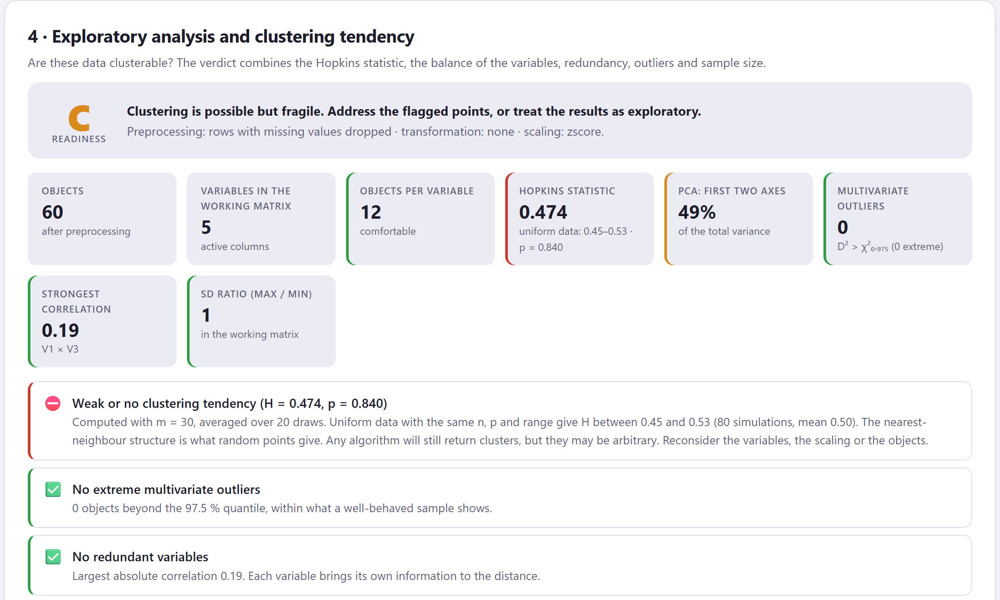
Figura 3.17. El veredicto del ruido uniforme: C por un solo aviso rojo. Las demás casillas están en verde; nada en los datos, salvo el estadístico de Hopkins, delata que no hay grupos.
θLo que aprendiste
Los dos ejemplos simulados son la vara de medir del bloque. El de cuatro grupos muestra cómo se ve una A: H lejos de la banda uniforme, mapa con mucha varianza en dos ejes, VAT con bloques nítidos. El de ruido muestra que una tabla sin ningún grupo puede tener objetos por variable de sobra, ningún atípico y ninguna redundancia, y aun así no merecer un dendrograma. Cuando tus datos reales den un H cercano a 0.5 con P alto, ya sabes qué significa: no hay nada que encontrar con esas variables, y decirlo es un resultado.
!Importante · vuelve aquí cuando cambies de idea
El Bloque 2 no es de un solo paso. Si en el Bloque 3 descubres que una variable domina, o en el Bloque 7 que un grupo se define por una sola columna, regresa, cambia el tipo, el papel o el escalado, aplica de nuevo y todo lo que sigue se recalcula desde la matriz de trabajo. Los bloques posteriores se desactivan hasta que vuelvas a calcularlos, para que nunca mezcles resultados de dos preprocesamientos distintos.
Con la matriz de trabajo construida y la tendencia comprobada, el siguiente paso es medir cuánto se parecen los objetos entre sí. El capítulo del Bloque 3 presenta los 39 coeficientes de similitud y distancia, explica cuándo usar cada uno según el tipo de dato, cómo diagnosticar una matriz de distancias y cómo comparar coeficientes antes de elegir.
B3
Capítulo cuatro · Bloque 3 · Distances
Similitud y distancia
Los algoritmos nunca ven tus variables: ven una matriz de disimilitudes entre pares de objetos. Elegir cómo se calcula esa matriz es la decisión con más consecuencias de todo el análisis, más que la del algoritmo. Este bloque ofrece 39 coeficientes en seis familias, diagnostica la matriz que producen, la dibuja de cuatro maneras y te deja comparar candidatos antes de comprometerte.
4.1Similitud, disimilitud y distancia
4.2Los 39 coeficientes, por tipo de dato
4.3Métrico y euclidiano: por qué importa
4.4Diagnóstico de la matriz
4.5Comparar coeficientes
4.6Ajustes, tablas y figuras del bloque
4.7Paso a paso
El Bloque 3 tiene tres tarjetas: 1 · Choose the coefficient, donde eliges la familia y el coeficiente y lo calculas; 2 · The dissimilarity matrix, con el diagnóstico, la tabla de vecinos y cinco figuras; y 3 · Compare candidate coefficients, para medir cuánto cambia la matriz al cambiar de coeficiente. Arriba, la tarjeta de teoría resume en tres lecciones lo que este capítulo explica con calma. El bloque se activa cuando el Bloque 2 ha construido la matriz de trabajo, y todo lo que sigue (árboles, particiones, validación) se calcula a partir de la matriz que aquí produces.
4.1Similitud, disimilitud y distancia
Tres palabras que se confunden a menudo y que conviene fijar desde ahora, porque la app las usa con precisión.
Una similituds mide parecido: vale 1 cuando dos objetos son idénticos y baja hacia 0 cuanto más difieren. Los coeficientes para datos binarios (Jaccard, Dice, apareamiento simple…) son similitudes.
Una disimilitudd mide diferencia: vale 0 para objetos idénticos y crece con la diferencia. Toda similitud se convierte en disimilitud con d = 1 − s, y eso es lo que hace la app: cada coeficiente, sea cual sea su definición, entrega una matriz de disimilitudes con ceros en la diagonal.
Una distancia es una disimilitud que además cumple la desigualdad del triángulo (sección 4.3). Euclidiana, Manhattan y Hellinger lo son; Bray–Curtis y muchas conversiones 1 − s no siempre. En el lenguaje corriente se dice "distancia" para todo, y este manual también lo hace cuando no hay riesgo de confusión.
θTeoría en breve · por qué el coeficiente pesa más que el algoritmo
Dos sitios con veinte especies cada uno pueden ser "parecidos" porque comparten muchas especies, porque tienen abundancias proporcionales o porque a ambos les faltan las mismas cincuenta especies de la región. Cada coeficiente decide cuál de esas cosas cuenta y cuánto. El algoritmo de agrupamiento solo reordena los números que recibe: si la matriz dice que dos sitios están cerca, cualquier método los pondrá juntos. Cambiar de UPGMA a Ward mueve algunos objetos; cambiar de euclidiana a Bray–Curtis puede cambiar de raíz qué significa "grupo". Por eso este bloque va antes que los de agrupamiento y por eso incluye una herramienta para comparar coeficientes.
La tarjeta de elección
La primera tarjeta muestra la recomendación que el Bloque 2 dedujo del perfil de los datos, las familias de coeficientes disponibles para tu tabla, el coeficiente elegido con su fórmula y sus parámetros, y el botón de cálculo (figura 4.1).
1234576
Figura 4.1. La tarjeta 1 · Choose the coefficient con las razas de maíz.
1Recommendation from Block 2: la disimilitud propuesta y la razón.
2Pestañas de familia. Solo aparecen las que tus datos permiten: con variables cuantitativas se ofrece también Binary (0/1) y Counts & abundances derivadas de ellas (tabla 4.2).
3Coefficient: los coeficientes de la familia activa. El propuesto ya está seleccionado.
4Data source (solo en la familia cuantitativa): la matriz de trabajo del Bloque 2 o las variables numéricas crudas.
5La fórmula, una nota y el rango del coeficiente. Con Minkowski aparece el orden p; con componentes principales, cuántos conservar; con Gower, el panel de la figura 4.3.
7Take the square root of the dissimilarity (√d): convierte en euclidianas a Bray–Curtis, Jaccard, Sørensen y apareamiento simple sin cambiar el orden de los pares (sección 4.3).
6Compute the dissimilarity matrix →. Puedes cambiar de coeficiente y volver a calcular cuantas veces quieras; los bloques siguientes se desactivan hasta que vuelvas a correrlos.
4.2Los 39 coeficientes, por tipo de dato
El catálogo se organiza en seis familias que corresponden a los tipos de dato del Bloque 2. La tabla 4.1 dice qué familia usar y cuál evitar; la tabla 4.2, de dónde toma cada familia sus datos; la tabla 4.3 enumera los coeficientes con su fórmula y su uso. Todas las fórmulas se muestran también en la app al elegir el coeficiente.
Tabla 4.1. Qué familia usar según los datos (la primera lección de la tarjeta de teoría).
Datos
Usa
Evita
Cuantitativos con unidades comparables (escalados)
Euclidiana, Manhattan; Mahalanobis si las variables están correlacionadas; euclidiana sobre componentes para quitar ruido
Distancias de correlación con menos de unas 5 variables
Perfiles: expresión, espectros, series
1 − Pearson, 1 − Spearman, coseno
Euclidiana cuando solo importa la forma
Presencia/ausencia donde 0 = ausente
Jaccard, Dice, Ochiai, Kulczynski
Apareamiento simple (premia las ausencias compartidas)
Binarios con dos estados informativos
Apareamiento simple, Rogers y Tanimoto
Jaccard (ignora uno de los estados)
Abundancias, conteos
Bray–Curtis, Ružička, Morisita–Horn; Hellinger o cuerda si necesitas geometría euclidiana
Euclidiana cruda (la dominan las especies abundantes y los dobles ceros)
Nominales / ordinales
Apareamiento simple de categorías, rangos para ordinales, Gower
Tratar los códigos de categoría como números
Tipos mezclados
Gower (pesos opcionales)
Indicadoras + euclidiana, salvo con pocas categorías
Tabla 4.2. Las seis familias y de dónde toman los datos. Una familia aparece como pestaña solo si la tabla tiene lo que necesita.
Familia (pestaña)
Datos que usa
Aparece cuando…
Quantitative
Las columnas numéricas de la matriz de trabajo (cuantitativas, conteos y ordinales como rangos; no las binarias ni las indicadoras), o las mismas variables crudas si eliges Raw numeric variables.
hay al menos una variable numérica activa.
Binary (0/1)
Las variables binarias activas. Si no hay, las numéricas no negativas codificadas como presencia (x > 0 → 1); la app lo avisa en la nota del resultado.
hay binarias o numéricas no negativas.
Nominal / ordinal
Las nominales (por coincidencia de categoría), las binarias declaradas y las ordinales (por rangos). Las cuantitativas se ignoran.
hay al menos una nominal, ordinal o binaria.
Counts & abundances
Las variables numéricas no negativas crudas (sin la transformación ni el escalado del Bloque 2): cada coeficiente ecológico aplica su propia estandarización.
hay al menos dos numéricas sin valores negativos.
Mixed (Gower)
Todas las variables activas, cada una con la disimilitud de su tipo; o la matriz de trabajo completa para la variante euclidiana.
siempre.
Supplied matrix
La matriz de distancias que cargaste, tal cual, con raíz cuadrada o al cuadrado.
la entrada fue una matriz (y entonces es la única pestaña).
θTeoría en breve · la tabla 2 × 2 de los coeficientes binarios
Para dos objetos con p variables binarias se cuentan cuatro cosas: a, variables en que ambos tienen 1; b, en que solo el primero tiene 1; c, en que solo el segundo; y d, en que ambos tienen 0. Todos los coeficientes binarios son combinaciones de a, b, c y d (figura 4.2). La decisión clave es qué hacer con d, las ausencias compartidas: Jaccard, Dice, Ochiai y Kulczynski las ignoran (coeficientes asimétricos), porque que dos sitios carezcan de una especie no dice que se parezcan; apareamiento simple y Rogers y Tanimoto las cuentan como coincidencia (simétricos), lo correcto cuando 0 y 1 son dos estados igual de informativos, como macho/hembra o alelo A/B.
Figura 4.2. La tabla 2 × 2 que resume dos objetos binarios y los coeficientes más usados. La celda d es la que separa a las dos escuelas.
Tabla 4.3. Los coeficientes del catálogo, por familia, con la fórmula que muestra la app. Las similitudes s se convierten con d = 1 − s.
Coeficiente
Fórmula
Rango
Cuándo usarlo
Quantitative · cuantitativos
Euclidean
d = √Σ(xᵢ − yᵢ)²
0–∞
La línea recta. Predeterminada para k-means y Ward; sensible a la escala y a los atípicos.
Squared Euclidean
d = Σ(xᵢ − yᵢ)²
0–∞
Lo que Ward y k-means minimizan por dentro; exagera las diferencias grandes.
Manhattan (city block)
d = Σ|xᵢ − yᵢ|
0–∞
Suma de diferencias absolutas; una sola variable extrema influye menos.
Minkowski (order p)
d = (Σ|xᵢ − yᵢ|ᵖ)^(1/p)
0–∞
p = 1 Manhattan, p = 2 euclidiana, p grande → Chebyshev.
Chebyshev (maximum)
d = máx|xᵢ − yᵢ|
0–∞
Solo cuenta la mayor diferencia.
Canberra
d = Σ|xᵢ − yᵢ| / (|xᵢ| + |yᵢ|)
0–p
Diferencias relativas a la magnitud; para datos positivos asimétricos. Los términos con xᵢ = yᵢ = 0 se omiten.
Mahalanobis
d = √(x − y)ᵀ S⁻¹(x − y)
0–∞
Euclidiana tras quitar las correlaciones entre variables (calculada por componentes principales).
Euclidean on principal components
d = √Σₖ(PCₖ(x) − PCₖ(y))²
0–∞
Conserva los k primeros componentes: quita ruido y redundancia antes de agrupar.
Pearson correlation distance
d = 1 − r(x, y)
0–2
Dos objetos se parecen cuando sus perfiles suben y bajan juntos, sea cual sea su nivel. Estándar para expresión génica.
Absolute Pearson distance
d = 1 − |r(x, y)|
0–1
Los perfiles opuestos también cuentan como parecidos.
Spearman correlation distance
d = 1 − ρ(x, y)
0–2
Parecido de perfiles por rangos; robusta a atípicos y a transformaciones monótonas.
Kendall correlation distance
d = 1 − τ(x, y)
0–2
Basada en pares de variables concordantes y discordantes.
Cosine distance
d = 1 − x·y / (‖x‖ ‖y‖)
0–2
El ángulo entre los perfiles; ignora su longitud.
Binary (0/1) · binarios (a, b, c, d de la figura 4.2)
Jaccard
s = a / (a + b + c)
0–1
Asimétrico: las ausencias compartidas no cuentan. El predeterminado para especies y marcadores.
Dice / Sørensen
s = 2a / (2a + b + c)
0–1
Asimétrico; da doble peso a las presencias compartidas.
Simple matching
s = (a + d) / (a + b + c + d)
0–1
Simétrico: 0 y 1 igual de informativos (macho/hembra, alelo A/B).
Rogers & Tanimoto
s = (a + d) / (a + d + 2(b + c))
0–1
Simétrico, los desacuerdos pesan doble.
Sokal & Sneath (asymmetric)
s = a / (a + 2(b + c))
0–1
Asimétrico, los desacuerdos pesan doble.
Russell & Rao
s = a / (a + b + c + d)
0–1
Presencias compartidas sobre todas las variables; las ausencias restan similitud.
Ochiai
s = a / √((a + b)(a + c))
0–1
La similitud coseno para datos binarios.
Kulczynski
s = ½ [a/(a + b) + a/(a + c)]
0–1
Media de las dos proporciones condicionales de presencias compartidas.
Hamming (mismatches)
d = b + c
0–p
Número de variables en que los dos objetos difieren.
Yule
d = (1 − Q)/2, Q = (ad − bc)/(ad + bc)
0–1
Basado en asociación; 0.5 significa independencia.
Nominal / ordinal · categóricos
Simple matching (categories)
d = variables con categorías distintas / p
0–1
Proporción de categorías que no coinciden, sobre las nominales (y binarias).
Manhattan on normalised ranks
d = Σ|rango(xᵢ) − rango(yᵢ)| / (kᵢ − 1) / p
0–1
Ordinales comparadas por rango, cada variable llevada a 0–1.
Gower (categorical + ordinal)
d = media de la disimilitud 0–1 de cada tipo
0–1
Apareamiento simple para nominales, diferencia de rangos para ordinales, estilo Jaccard para binarias.
Counts & abundances · ecológicos (X, Y = totales de cada objeto)
Bray–Curtis
d = Σ|xᵢ − yᵢ| / Σ(xᵢ + yᵢ)
0–1
El caballo de batalla de las tablas de comunidades; ignora dobles ceros; 1 = ninguna especie en común. No euclidiana (usa √d para Ward).
Ružička (quantitative Jaccard)
d = 1 − Σmín(xᵢ, yᵢ) / Σmáx(xᵢ, yᵢ)
0–1
Jaccard generalizado a abundancias.
Kulczynski (quantitative)
d = 1 − ½ [Σmín/X + Σmín/Y]
0–1
Menos sensible a diferencias de abundancia total que Bray–Curtis.
Morisita–Horn
d = 1 − 2Σxᵢyᵢ / [(Σxᵢ²/X² + Σyᵢ²/Y²) X Y]
0–1
Casi independiente del tamaño de muestra; enfatiza las especies dominantes.
Hellinger distance
d = √Σ(√(xᵢ/X) − √(yᵢ/Y))²
0–√2
Euclidiana entre raíces de abundancias relativas; apta para Ward, k-means y ACP.
Chord distance
d = √Σ(xᵢ/‖x‖ − yᵢ/‖y‖)²
0–√2
Euclidiana entre perfiles llevados a longitud unitaria.
Chi-square distance
d = √(Σ₊₊) · √Σⱼ(1/cⱼ)(xⱼ/X − yⱼ/Y)²
0–∞
La distancia del análisis de correspondencias; las especies raras pesan más.
Canberra (abundances)
d = Σ|xᵢ − yᵢ| / (xᵢ + yᵢ), sobre especies presentes en al menos uno
0–p
Cada especie pesa lo mismo, sea cual sea su abundancia.
Jaccard on presence/absence
s = a / (a + b + c) tras codificar x > 0 como 1
0–1
Descarta las abundancias y conserva solo la composición.
Mixed (Gower) · tipos mezclados
Gower
d = Σₖwₖdₖ / Σₖwₖ; dₖ = |x − y|/rango (cuantitativas, rangos ordinales), desacuerdo (nominales), estilo Jaccard (binarias)
0–1
Cada variable aporta 0–1; las cuantitativas se escalan por rango internamente, así que el escalado del Bloque 2 no influye aquí.
Euclidean on the working matrix
d = √Σ(xᵢ − yᵢ)² sobre columnas escaladas e indicadoras
0–∞
La alternativa rápida: las categorías se vuelven columnas 0/1 con peso 1/√2. Menos fundamentada que Gower.
Supplied matrix · matriz cargada
As supplied
d = D
—
Tu matriz, sin cambios.
Square root
d = √D
0–√máx
Vuelve euclidianas muchas disimilitudes que no lo son (Bray–Curtis, Jaccard), lo que Ward y el PCoA agradecen.
Squared
d = D²
0–máx²
Cuando tu matriz trae distancias con raíz y necesitas la escala original.
Figura 4.3. El panel de Gower con los perfiles de suelo: la pestaña Mixed (Gower), la fórmula, el menú Binary variables (asimétricas, que ignoran las ausencias compartidas, o simétricas) y, desplegado, Variable weights con un peso por variable (1 por defecto, de 0 a 10).
iNota · los pesos de Gower
Un peso 2 en una variable la hace contar como dos; un peso 0 la saca del cálculo sin cambiar su papel en el Bloque 2. Es la forma limpia de dar más importancia a una medida decisiva (por ejemplo, la textura en perfiles de suelo) o de probar cuánto cambia la matriz sin una variable dudosa. Si usas pesos, repórtalos en los métodos: el párrafo automático del Bloque 8 los incluye.
4.3Métrico y euclidiano: por qué importa
No todas las disimilitudes se comportan como las distancias del mapa. Dos propiedades deciden qué métodos puedes aplicar sin distorsión, y la app las comprueba en cada matriz.
θTeoría en breve · dos propiedades
Una disimilitud es métrica cuando cumple la desigualdad del triángulo: para tres objetos cualesquiera, d(x, z) ≤ d(x, y) + d(y, z). Es lo que esperas de una distancia real: ir de x a z pasando por y no puede ser más corto que ir directo. Es euclidiana (más exactamente, euclidianamente embebible) cuando los objetos pueden colocarse como puntos en algún espacio euclidiano de modo que las distancias entre puntos reproduzcan exactamente todas las d. Toda disimilitud euclidiana es métrica; lo contrario no siempre.
Importa porque Ward, k-means sobre coordenadas y el análisis de coordenadas principales (PCoA, el mapa de este bloque) suponen geometría euclidiana. Sobre una matriz no euclidiana siguen funcionando, pero distorsionan: los porcentajes del PCoA dejan de sumar bien, aparecen autovalores negativos y Ward puede unir grupos en un orden extraño. El remedio habitual es tomar la raíz cuadrada de la disimilitud: √d es euclidiana para Bray–Curtis, Jaccard, Sørensen y apareamiento simple. En cambio, los enlaces simple, completo y promedio y PAM solo necesitan la matriz: cualquier disimilitud, métrica o no, les sirve.
La app comprueba las dos propiedades al calcular la matriz:
Desigualdad del triángulo: se prueban todas las ternas de objetos (hasta 120 objetos; con más, una muestra de 200 000 ternas) y se reporta el porcentaje de violaciones. Cero violaciones = métrica.
Embebibilidad euclidiana: se descompone la matriz doblemente centrada del PCoA y se mide qué fracción de la masa de autovalores es negativa. Con 0 % la matriz es exactamente euclidiana; por debajo del 1 % se considera euclidiana; entre 1 y 10 %, casi; por encima del 10 %, no.
✓Regla de decisión · qué hacer según el diagnóstico
Si la matriz…
entonces
es euclidiana (masa negativa < 1 %)
Todo vale: Ward, k-means sobre los ejes del PCoA, porcentajes del PCoA.
es casi euclidiana (1–10 %)
Ward y el PCoA son aceptables; los porcentajes son aproximados.
no es euclidiana (≥ 10 %)
Prefiere UPGMA, enlace completo o PAM. Si quieres Ward o k-means, marca Take the square root of the dissimilarity (√d) en la tarjeta 1 y vuelve a calcular (con una matriz cargada, elige Square root en la pestaña Supplied matrix).
no es métrica (viola el triángulo)
Los jerárquicos funcionan (los enlaces de centroide y mediana pueden mostrar inversiones); k-means necesita coordenadas: usa PAM o un PCoA.
4.4Diagnóstico de la matriz
Al pulsar Compute the dissimilarity matrix → aparece la segunda tarjeta (figura 4.4): siete casillas de cifras, una lista de comprobaciones interpretadas, la tabla de los tres vecinos más cercanos de cada objeto y las figuras de la sección 4.6.
123
Figura 4.4. La tarjeta 2 · The dissimilarity matrix con la distancia euclidiana de las razas de maíz.
1Las siete casillas (tabla 4.4), con su semáforo en el borde.
2Comprobaciones (tabla 4.5). La primera siempre dice de qué datos se calculó la matriz y qué variables entraron.
3Nearest neighbours of every object: la tabla de vecinos (figura 4.5), plegada.
Tabla 4.4. Las casillas del diagnóstico.
Casilla
Qué es
Semáforo
Coefficient
El coeficiente y su parámetro (orden p, componentes conservados, tipo de binarias en Gower).
—
Objects
Objetos y número de pares, n(n − 1)/2.
—
Range of d
Mínimo, máximo, media y mediana de las disimilitudes.
—
Identical pairs (d = 0)
Pares de objetos a distancia cero: duplicados o empates.
ámbar si pasan del 5 % de los objetos
Triangle inequality
holds (métrica) o el porcentaje de ternas que la violan.
verde si se cumple, ámbar si no
Euclidean embeddable
yes, nearly o no, con el porcentaje de masa negativa.
verde < 1 % · ámbar 1–10 % · rojo ≥ 10 %
2-D map quality
El estrés del mapa PCoA y la varianza que reúnen sus dos ejes.
verde < 0.1 · ámbar 0.1–0.2 · rojo ≥ 0.2
Tabla 4.5. Comprobaciones de la matriz y qué sugieren.
Comprobación
Nivel
Qué sugiere
Computed on… / Variables used
ℹ️
De qué datos salió la matriz (matriz de trabajo, variables crudas, binarias, conteos, la matriz cargada) y qué variables entraron. Revísalo: es fácil calcular un coeficiente ecológico sobre variables que no son conteos.
N pairs of objects at distance 0
ℹ️ ⚠️
Nombra los pares idénticos. Se unirán siempre primero; con muchos empates el orden del dendrograma se vuelve arbitrario.
The coefficient is not a metric
⚠️
Porcentaje de ternas que violan el triángulo y qué métodos evitar (regla de la sección 4.3).
Euclidean-embeddable / Nearly Euclidean / Not Euclidean-embeddable
✅ ℹ️ ⚠️
Según la masa negativa; el aviso rojo sugiere la raíz cuadrada.
The 2-D map is a poor summary
⚠️
Estrés ≥ 0.2: los pares lejanos están mal colocados en el plano. Juzga la similitud por el mapa de calor y el árbol, no por el mapa.
Wide spread of dissimilarities
ℹ️
Coeficiente de variación de las disimilitudes > 0.45: unos pares están mucho más cerca que otros, buena señal. Busca dos jorobas en la figura de distribución.
All pairs are about equally dissimilar
⚠️
Coeficiente de variación < 0.15: los objetos están repartidos de forma pareja, lo que ocurre con muchas dimensiones o sin estructura. Los grupos serán frágiles.
Known groups: between-group distances are N× the within-group ones
✅ ℹ️ ⚠️
Cociente entre la disimilitud media entre grupos conocidos y dentro de ellos: > 1.5 el coeficiente separa bien la agrupación; 1.1–1.5, modestamente; menos, apenas la distingue: prueba otro en la comparación.
Figura 4.5.Nearest neighbours of every object: para cada objeto, sus tres vecinos más cercanos con la disimilitud entre paréntesis. ACC-001 y ACC-012 son mutuamente el vecino más cercano (0.712): serán la primera fusión de cualquier árbol.
√d
Dato · la raíz cuadrada arregla más de lo que parece
Bray–Curtis, Jaccard, Sørensen y apareamiento simple no son euclidianos, pero su raíz cuadrada sí. Por eso la tarjeta 1 tiene la casilla Take the square root of the dissimilarity (√d), y la pestaña Supplied matrix la opción Square root: con un solo clic, una matriz que daba autovalores negativos se vuelve apta para Ward, k-means sobre PCoA y porcentajes fiables. Los árboles con UPGMA o enlace completo son los mismos con d o con √d, porque la raíz conserva el orden de las distancias.
4.5Comparar coeficientes
¿Cuánto importa la elección para tus datos? La tercera tarjeta responde con números: marca varios coeficientes, la app recalcula cada matriz y correlaciona sus disimilitudes por pares. Si todas las matrices dicen lo mismo, la elección es inofensiva; si no, tus grupos dependen de ella y debes decirlo en el artículo.
Figura 4.6. La tarjeta 3 · Compare candidate coefficients con las razas de maíz. Cada casilla lleva la ficha de su familia; la app marca de antemano el coeficiente en uso y los candidatos típicos de su familia. Al pulsar Compare aparecen debajo el párrafo que interpreta el resultado, la figura 4.7 y la tabla de correlaciones.
Figura 4.7.Agreement between coefficients: la correlación de Pearson entre las disimilitudes de cada par de coeficientes (el editor permite cambiar a Spearman). Euclidiana y Manhattan casi coinciden (0.98); Canberra y la distancia de correlación de Pearson son las que más difieren (0.76).
Tabla 4.6. Cómo lee la app la comparación. La correlación decisiva es la más baja entre todos los pares.
Correlación mínima
Frase de la app y consecuencia
> 0.90
All the coefficients agree closely: la elección importa poco; los grupos deberían ser estables entre coeficientes.
0.70–0.90
The coefficients agree moderately: espera que algunos objetos cambien de grupo según el coeficiente; elige por razones teóricas (tipo de dato, dobles ceros, escala) y comprueba la estabilidad en el Bloque 6.
< 0.70
The coefficients disagree substantially: tus grupos dependen de esta decisión. Prefiere el coeficiente que corresponde al tipo de dato y a la pregunta, y reporta la comparación.
Además del párrafo y la figura, la tabla Pearson correlation between the pairwise dissimilarities of each coefficient repite las correlaciones y, si hay agrupación conocida, añade la columna Between / within (known groups): el cociente entre distancias entre grupos y dentro de grupos con cada coeficiente. El párrafo nombra el que da el cociente mayor. Es una pista, no un veredicto: un cociente alto dice que ese coeficiente separa tus grupos conocidos, que no siempre son los grupos que quieres descubrir.
!Importante · comparar no sustituye a elegir
La comparación mide acuerdo, no acierto. Cuatro coeficientes pueden coincidir en un resultado inadecuado si todos ignoran lo que importa (por ejemplo, cuatro coeficientes euclidianos sobre abundancias sin transformar). Elige primero por la naturaleza de los datos (tabla 4.1) y usa la comparación para saber cuánta cautela poner al interpretar y qué reportar. Y recuerda que la comparación se hace con los parámetros actuales (fuente de datos, p, pesos de Gower).
4.6Ajustes, tablas y figuras del bloque
El bloque produce cinco figuras de la matriz y una sexta de la comparación, todas editables y exportables como las del Bloque 2 (tabla 4.7). Las cuatro primeras se leen juntas: el mapa de calor muestra la matriz entera, el PCoA la resume en un plano, el diagrama de Shepard dice cuánto se puede confiar en ese plano y la distribución dice si hay pares cercanos y lejanos claramente separados.
Figura 4.8.Dissimilarity matrix as a heat map: la matriz euclidiana de las 44 razas de maíz con los objetos en orden VAT (vecinos cercanos juntos), amarillo = cerca. Las franjas de color repiten la agrupación conocida; los tres bloques claros de la diagonal coinciden con las tres regiones. Con 18 objetos o menos se imprimen los valores en las celdas.
Figura 4.9.Principal coordinates (classical MDS) of the dissimilarity: el mejor plano de la matriz, con el estrés y la varianza en el subtítulo, envolventes por grupo conocido y etiquetas automáticas hasta 60 objetos. Con la euclidiana de la matriz de trabajo coincide con el mapa de componentes del Bloque 2; con cualquier otro coeficiente es la única forma de "ver" la matriz en un plano.
✓Regla de decisión · cómo leer el estrés del mapa
Estrés
Lectura
< 0.10
El mapa reproduce bien las distancias: puedes razonar sobre él.
0.10–0.20
Representación aceptable; lee los pares lejanos con cautela y confirma en el mapa de calor.
≥ 0.20
Mala representación en dos dimensiones: confía en la matriz (mapa de calor, tabla de vecinos, árbol), no en el mapa.
El estrés se calcula después de reescalar linealmente las distancias del mapa, porque el PCoA clásico siempre las encoge un poco; así mide solo la deformación, no ese encogimiento inofensivo.
Figura 4.10. A la izquierda, el Shepard diagram: cada punto es un par de objetos, con su disimilitud original en el eje horizontal y su distancia en el mapa en el vertical; cuanto más se pegan a la diagonal, más fiel es el mapa (aquí r² = 0.942, estrés 0.171: aceptable, pero los pares lejanos se leen con cautela). A la derecha, la Distribution of the pairwise dissimilarities con su curva de densidad, media y mediana: dos jorobas, una de pares cercanos alrededor de 2 y otra de pares lejanos alrededor de 4.5, que es justo lo que se espera cuando hay grupos.
Figura 4.11.Nearest-neighbour network: sobre el mapa PCoA, cada objeto se une a sus k vecinos más cercanos (3 por defecto); las aristas gruesas son vecindades mutuas y las grises cruzan entre grupos conocidos. En el maíz no hay ninguna gris: las tres regiones forman tres redes cerradas, lo que anticipa que los grupos que encuentre el Bloque 4 coincidirán con ellas.
Tabla 4.7. Las seis figuras del bloque y sus controles propios.
Figura
Qué muestra
Controles propios
Dissimilarity matrix as a heat map
La matriz completa como imagen (figura 4.8).
Object order (VAT, orden del árbol UPGMA, por agrupación conocida, orden de la tabla), Colour map, Dark = similar, Show values (n ≤ 18), etiquetas, Known-group strips, paleta y leyenda.
Principal coordinates (classical MDS)
El mapa PCoA (figura 4.9).
Títulos y ejes, etiquetas y su tamaño, tamaño y forma de los puntos, Convex hulls per group, color sin grupos, paleta y leyenda.
Shepard diagram
Fidelidad del mapa (figura 4.10, izquierda).
Título, color de los puntos, paleta.
Distribution of the pairwise dissimilarities
Histograma y densidad de las disimilitudes (figura 4.10, derecha).
Título, Bins (0 = automático), color de barras y de la curva, paleta.
Nearest-neighbour network
Red de k vecinos sobre el PCoA (figura 4.11).
Título, Neighbours (k) de 1 a 10, etiquetas, tamaño de punto, color de las aristas entre grupos, paleta y leyenda.
Agreement between coefficients
Correlaciones entre coeficientes (figura 4.7).
Título, Use Spearman (rank) correlation, Colour map.
iNota · descargar la matriz
⬇ Download the matrix (CSV) guarda la matriz completa con las etiquetas de los objetos en la primera fila y la primera columna, con seis decimales. Ese archivo puede volver a cargarse en el Bloque 2 como matriz de distancias, o llevarse a otro programa. El informe del Bloque 8 incluye las casillas, las comprobaciones, la tabla de vecinos y las figuras tal como las editaste.
4.7Paso a paso
Con cada ejemplo del Bloque 2 ya aplicado con sus valores propuestos, el Bloque 3 propone un coeficiente y marca de antemano unos candidatos para comparar. La tabla 4.8 resume lo que obtendrás; las prácticas siguientes se detienen en lo que enseña cada caso.
Tabla 4.8. Los siete ejemplos con el coeficiente propuesto: diagnóstico y comparación.
Ejemplo
Coeficiente
Pares
Euclidiana (masa negativa)
Estrés
Entre / dentro
Comparación: r mínima
Razas de maíz
Euclidiana
946
sí (0 %)
0.171
1.94
0.76 (Canberra vs Pearson): acuerdo moderado
Presencia de especies
Jaccard
435
casi (4.7 %)
0.279
1.60
0.94 (Dice vs apareamiento simple): acuerdo estrecho
Abundancia de insectos
Bray–Curtis
276
casi (4.1 %)
0.230
1.89
0.96 (Ružička vs Morisita–Horn): acuerdo estrecho
Perfiles de suelo
Gower
630
casi (5.1 %)
0.129
—
0.98 (Gower vs euclidiana con indicadoras)
Matriz de distancias
Tal cual
66
casi (7.2 %)
0.185
—
1.00 (tal cual vs raíz cuadrada)
Cuatro grupos simulados
Euclidiana
3160
sí (0 %)
0.070
4.18
0.90 (euclidiana vs Canberra): acuerdo moderado
Ruido uniforme
Euclidiana
1770
sí (0 %)
0.319
—
0.56 (euclidiana vs Canberra): desacuerdo sustancial
Práctica 1 · Razas de maíz: la euclidiana y sus alternativas
▸Paso a paso
Con el maíz aplicado en el Bloque 2, pulsa Continue to similarity and distance → o el botón 3 Distances de la barra. La recomendación dice euclidiana; la pestaña activa es Quantitative y el coeficiente, Euclidean sobre la matriz de trabajo (figura 4.1).
Pulsa Compute the dissimilarity matrix →. Lee las casillas (figura 4.4): 946 pares, disimilitudes de 0.712 a 7.223, sin pares idénticos, métrica y exactamente euclidiana (era de esperarse: la euclidiana lo es siempre), estrés 0.171 con 76 % de la varianza en dos ejes.
Las comprobaciones añaden que las distancias entre regiones son 1.94 veces las distancias dentro de cada región: el coeficiente separa bien la agrupación conocida.
Abre la tabla de vecinos (figura 4.5) y baja por las figuras 4.8 a 4.11: tres bloques en el mapa de calor, tres nubes en el PCoA, dos jorobas en la distribución y ninguna arista gris en la red.
En la tercera tarjeta deja marcados los cuatro candidatos (euclidiana, Manhattan, Canberra, Pearson) y pulsa Compare (figuras 4.6 y 4.7).
θLo que aprendiste
Euclidiana y Manhattan casi no se distinguen (r = 0.98): con variables estandarizadas y sin atípicos, elegir entre ellas es cuestión de gusto. La distancia de correlación de Pearson es otra cosa: compara la forma del perfil de cada accesión (alta pero de mazorca corta, por ejemplo) e ignora su nivel general, y aun así separa mejor las regiones (cociente 2.62 frente a 1.94). Con solo ocho variables la correlación entre perfiles es ruidosa, así que la euclidiana sigue siendo la elección sensata; pero la comparación te dice que si un revisor pidiera "distancia de correlación", los grupos cambiarían solo en parte (r = 0.81 con la euclidiana).
Práctica 2 · Presencia de especies: Jaccard y los dobles ceros
▸Paso a paso
Con el ejemplo binario aplicado, entra al Bloque 3. Solo hay tres pestañas: Binary (0/1), Nominal / ordinal y Mixed (Gower), porque no hay variables cuantitativas. El coeficiente propuesto es Jaccard.
Calcula. Casillas: 435 pares, disimilitudes de 0 a 1 con media 0.752, 2 pares idénticos (S02 = S09 y S21 = S24: sitios con exactamente las mismas especies), métrica, casi euclidiana (4.7 % de masa negativa en 11 autovalores) y estrés 0.279: el mapa plano es una mala síntesis.
Mira el mapa de calor (figura 4.12): tres bloques que coinciden con los hábitats, con el de humedal (Wetland) muy nítido. Las distancias entre hábitats son 1.60 veces las de dentro.
Compara Jaccard, Dice, apareamiento simple y Ochiai: todos correlacionan por encima de 0.94; Dice y Ochiai son casi idénticos (r = 1.00).
Figura 4.12. La matriz de Jaccard de los 30 sitios en orden VAT. Compárala con la VAT euclidiana del Bloque 2 (figura 3.12): con un coeficiente que ignora las ausencias compartidas los bloques son más nítidos, y las dos parejas de sitios idénticos aparecen como celdas amarillas fuera de la diagonal.
θLo que aprendiste
Que Jaccard y el apareamiento simple correlacionen 0.94 aquí no contradice la teoría del doble cero: esta tabla tiene 22 especies y pocas ausencias compartidas entre sitios de hábitats distintos. Con una tabla regional de 200 especies, donde cada sitio tiene 15, el apareamiento simple declararía parecidos a todos los sitios (comparten 170 ausencias) y la correlación caería. La regla sigue siendo: con presencia/ausencia de especies, asimétricos. Y el estrés alto (0.279) es normal con datos binarios: las disimilitudes toman pocos valores distintos y un plano no puede reproducirlas; lee el mapa de calor y, en el Bloque 4, el árbol.
Práctica 3 · Abundancia de insectos: Bray–Curtis y compañía
▸Paso a paso
Con los insectos aplicados (Hellinger en el Bloque 2), entra al Bloque 3. La pestaña activa es Counts & abundances y el coeficiente, Bray–Curtis. Fíjate en la nota del resultado: se calcula sobre los conteos crudos, no sobre la matriz de trabajo transformada.
Calcula: 276 pares, disimilitudes de 0.153 a 0.794, métrica, casi euclidiana (4.1 %), estrés 0.230 (el mapa es una mala síntesis, aunque reúna el 71 % de la varianza), y las distancias entre paisajes son 1.89 veces las de dentro.
Compara Bray–Curtis, Ružička, Morisita–Horn y Hellinger (figura 4.13): acuerdo estrecho, correlación mínima 0.96. Morisita–Horn da el mayor cociente entre/dentro (3.26).
Vuelve a Bray–Curtis, marca Take the square root of the dissimilarity (√d) y calcula (figura 4.14): la matriz pasa a ser exactamente euclidiana (0 % de masa negativa) con el mismo orden de pares; a cambio, el mapa plano empeora (estrés 0.343) y el cociente entre/dentro baja a 1.37, porque la raíz comprime las diferencias grandes.
Prueba Hellinger distance como coeficiente principal y calcula de nuevo: la matriz pasa a ser exactamente euclidiana, lo que abre la puerta a Ward y k-means en los bloques siguientes.
Figura 4.13. La comparación de cuatro coeficientes ecológicos con los 24 sitios de insectos: todas las correlaciones están entre 0.96 y 0.99. Para estos datos la elección es inofensiva y puedes tomarla por la geometría: Hellinger si quieres Ward o k-means, Bray–Curtis si vas a usar UPGMA o PAM.
Figura 4.14. Bray–Curtis con la raíz cuadrada: la casilla Euclidean embeddable pasa a yes con 0 % de masa negativa y la nota del resultado añade Square root taken. El estrés del mapa sube a 0.343: la raíz iguala las disimilitudes y un plano las reproduce peor, pero los árboles de UPGMA y enlace completo serán idénticos a los de la matriz sin raíz.
Práctica 4 · Perfiles de suelo: Gower
▸Paso a paso
Con los suelos aplicados, entra al Bloque 3. Hay cinco pestañas (las cuantitativas también admiten binarias y conteos derivados) y la activa es Mixed (Gower), con binarias asimétricas y todos los pesos en 1 (figura 4.3).
Calcula: 630 pares, disimilitudes de 0.038 a 0.869, métrica, casi euclidiana (5.1 %), estrés 0.129 con 86 % de la varianza en dos ejes; la comprobación de dispersión dice Wide spread of dissimilarities (coeficiente de variación 0.52): buena señal.
Mira el PCoA (figura 4.15): sin agrupación conocida no hay colores, pero se ven tres nubes claras y un perfil apartado (PR-01).
Compara Gower con Euclidean on the working matrix: r = 0.98. Con seis categorías de textura y una sola nominal, la codificación con indicadoras del Bloque 2 casi reproduce a Gower.
Figura 4.15. PCoA de la distancia de Gower entre los 36 perfiles: tres nubes (izquierda, centro y derecha) y el perfil PR-01 apartado abajo. El primer eje reúne por sí solo el 76 % de la varianza positiva.
Pruébalo tú: abre Variable weights, pon Texture en 3 y calcula de nuevo. El estrés y las nubes cambian poco, pero la tabla de vecinos se reorganiza por texturas. Después prueba Binary variables = Symmetric: con una sola binaria (calcáreo sí/no) el efecto es pequeño, pero con una batería de marcadores ausentes en la mayoría de los perfiles sería grande.
Práctica 5 · Matriz de distancias: tal cual o con raíz
▸Paso a paso
Carga la matriz genética en el Bloque 2 y entra al Bloque 3. Hay una sola pestaña, Supplied matrix, con tres opciones: tal cual, raíz cuadrada y al cuadrado.
Calcula con As supplied (figura 4.16): 66 pares, disimilitudes de 0.15 a 0.61 con mediana 0.54 (la mayoría de los pares son lejanos), métrica, casi euclidiana (7.2 % de masa negativa en 4 autovalores), estrés 0.185.
El mapa de calor imprime los valores en las celdas porque hay 12 objetos o menos: tres bloques de cuatro cultivares con distancias de 0.15 a 0.22 dentro y de 0.5 a 0.6 entre bloques.
Compara As supplied con Square root: r = 1.00. Calcula ahora con la raíz: la masa negativa baja y el diagnóstico euclidiano mejora, sin que cambie el orden de ningún par.
Figura 4.16. El diagnóstico de la matriz genética de 12 cultivares usada tal cual: métrica, casi euclidiana (7.2 %) y con un mapa de calidad media (estrés 0.185).
Práctica 6 · Cuatro grupos y ruido: cuando los coeficientes discrepan
▸Paso a paso
Carga y aplica Simulated · four clear clusters; en el Bloque 3 calcula la euclidiana: 3160 pares, estrés 0.070 (el mapa es fiel), coeficiente de variación 0.46 y distancias entre grupos 4.18 veces las de dentro. Compara los cuatro candidatos: correlación mínima 0.90 (euclidiana vs Canberra).
Carga y aplica ahora Simulated · uniform noise y calcula la euclidiana: estrés 0.319 y el aviso de mapa pobre (49 % de la varianza), y una distribución con una sola joroba (figura 4.17).
Compara los mismos cuatro coeficientes: la correlación mínima cae a 0.56 y la app avisa The coefficients disagree substantially.
Figura 4.17. El ruido uniforme visto desde el Bloque 3: el diagrama de Shepard se abre como un abanico (r² = 0.496, estrés 0.319) y la distribución de disimilitudes es una campana única centrada en 3.0, sin la joroba de pares cercanos que producen los grupos.
θLo que aprendiste
Con estructura real, los coeficientes razonables coinciden porque todos "ven" los mismos huecos entre grupos; el desacuerdo aparece en los detalles. Sin estructura, cada coeficiente ordena los pares a su manera y las matrices correlacionan poco: no hay nada que ver, y cada uno inventa algo distinto. Por eso una comparación con correlaciones bajas es, además de un aviso sobre la elección, una segunda señal (después del estadístico de Hopkins) de que quizá no hay grupos. La distribución de disimilitudes lo confirma: una sola joroba, todos los pares a distancias parecidas.
!Importante · lo que hay que reportar de este bloque
En la sección de métodos: el coeficiente (con su parámetro si lo tiene), sobre qué datos se calculó (matriz de trabajo estandarizada, conteos crudos, binarias declaradas), si es métrico y euclidiano, y, si comparaste, la correlación mínima entre candidatos. Una frase basta: "Se usó la distancia de Bray–Curtis sobre las abundancias crudas (métrica, casi euclidiana: 4.1 % de masa negativa); Ružička, Morisita–Horn y Hellinger produjeron matrices correlacionadas con ella por encima de 0.96". El párrafo automático del Bloque 8 la redacta con tus valores.
Con la matriz de disimilitudes calculada y diagnosticada, el siguiente capítulo construye con ella los árboles: las ocho reglas de enlace y el método divisivo, la correlación cofenética, cómo cortar el árbol, el estudio de dendrogramas con todas sus opciones de dibujo, el mapa de calor con árboles y la comparación de enlaces mediante tanglegramas.
B4
Capítulo cinco · Bloque 4 · Hierarchical
Agrupamiento jerárquico
Con la matriz del Bloque 3 se construye un árbol: cada objeto empieza solo y los grupos se van uniendo hasta formar uno. Este capítulo explica las diez reglas que decide cómo se unen, los tres números que dicen si el árbol merece confianza, cómo cortarlo, el estudio de dendrogramas con sus seis disposiciones y más de cuarenta ajustes, el mapa de calor con árboles y la comparación de reglas mediante tanglegramas.
5.1Aglomerativo y divisivo
5.2Las reglas de enlace
5.3Correlación cofenética y coeficientes del árbol
5.4Cortar el árbol
5.5El estudio de dendrogramas
5.6Mapa de calor con árboles
5.7Comparar enlaces y tanglegramas
5.8Paso a paso
El Bloque 4 tiene tres tarjetas. En 1 · Build the tree eliges la regla de enlace y construyes el árbol. En 2 · The tree and its cut lo evalúas, lo cortas en grupos y lo dibujas. En 3 · Compare linkage rules and draw tanglegrams lo comparas con los árboles de otras reglas. Arriba, la tarjeta de teoría resume en tres lecciones qué mirar antes de confiar en un árbol. El bloque se activa en cuanto el Bloque 3 calcula una matriz de disimilitudes.
5.1Aglomerativo y divisivo
Un agrupamiento jerárquico no produce una partición, sino una familia completa de particiones anidadas: desde n grupos de un objeto hasta un solo grupo con todos. Se representa con un dendrograma, en el que la altura de cada unión es la disimilitud a la que se juntaron las dos ramas. Hay dos maneras de construirlo (figura 5.1).
Figura 5.1. Las dos formas de construir una jerarquía. Ambas dan un árbol del mismo tipo, con una altura en cada unión, y todo lo que ofrece el bloque (corte, estudio, comparación) se aplica igual a los dos.
El método aglomerativo empieza con cada objeto en su propio grupo y, en cada paso, une los dos grupos más cercanos y recalcula la distancia del grupo nuevo a todos los demás. Tras n − 1 uniones queda un solo grupo. Qué significa "más cercanos" lo decide la regla de enlace (sección 5.2). ClusteringPro implementa nueve reglas aglomerativas.
El método divisivo DIANA hace el camino contrario. Empieza con todos juntos, toma el grupo de mayor diámetro (la mayor disimilitud entre dos de sus miembros), inicia un grupo escindido con el objeto más alejado en promedio de los demás y le va pasando los objetos que quedan más cerca de él que del resto. Repite hasta que cada objeto queda solo. Suele recuperar mejor unos pocos grupos grandes, porque sus primeras decisiones, las de arriba del árbol, se toman mirando a todos los objetos.
Figura 5.2. La tarjeta 1 · Build the tree con las razas de maíz. La recomendación sale del diagnóstico del Bloque 3: con una matriz euclidiana propone Ward.D2 y explica por qué. Al elegir Flexible beta (Lance–Williams) aparece además el campo β for flexible linkage.
✓Regla de decisión · qué regla propone la app
Si la matriz del Bloque 3…
entonces
es euclidiana o casi (masa negativa < 5 %)
Ward.D2: grupos compactos y de varianza parecida. La alternativa es UPGMA si lo que importa es la fidelidad del árbol a las distancias. Con tablas de comunidades añade que UPGMA sobre Bray–Curtis sigue siendo la elección clásica.
no es euclidiana (masa negativa ≥ 5 %)
UPGMA (promedio), que solo necesita la matriz. Si quieres Ward, vuelve al Bloque 3 y marca la raíz cuadrada (√d).
iNota · tamaño y tiempo
La aglomeración trabaja con la matriz completa y su costo crece con el cubo del número de objetos. Con unos cientos de objetos el árbol tarda menos de un segundo; la app admite hasta 1500. La comparación de reglas de la tarjeta 3 se limita a 600 objetos. Con tablas más grandes, usa los métodos de particionamiento del Bloque 5.
5.2Las reglas de enlace
Cuando dos grupos se unen, hay que decidir a qué distancia queda el grupo nuevo de cada uno de los demás. Esa decisión es la regla de enlace, y cambia la forma de los grupos que produce el árbol (figura 5.3). Todas las reglas aglomerativas de la app se calculan con la fórmula de actualización de Lance y Williams (tabla 5.1), la misma que usan los programas estadísticos de referencia.
Figura 5.3. Qué mide cada regla entre dos grupos. La línea roja es la distancia que la regla usa para decidir si esos dos grupos son los próximos en unirse. Ward no mide una distancia sino cuánto crecería la suma de cuadrados dentro de los grupos al unirlos, que depende de la distancia entre centroides y del tamaño de los grupos.
θTeoría en breve · la fórmula de Lance y Williams
Si los grupos i y j, con ni y nj objetos, se unen, la distancia del grupo nuevo a cualquier otro grupo k se calcula a partir de las distancias que ya se conocían:
Cada regla es una elección de los cuatro coeficientes (tabla 5.1). No hace falta volver a los datos originales en ningún paso, y por eso cualquier regla puede aplicarse a una matriz de disimilitudes, aunque las de centroide, mediana y Ward solo tienen sentido geométrico si esa matriz es euclidiana. Para esas tres la app eleva las distancias al cuadrado antes de aglomerar y saca la raíz de las alturas, de modo que el eje del dendrograma queda en las unidades de la matriz.
Tabla 5.1. Las diez reglas del menú Linkage rule, con sus coeficientes de Lance y Williams (para centroide, mediana y Ward se aplican a distancias al cuadrado; nijk = ni + nj + nk).
En la app
αi · β · γ
Carácter
Ward.D2 (minimum variance)
(ni + nk)/nijk · −nk/nijk · 0
Une los grupos que menos aumentan la varianza interna. Grupos compactos y de tamaños parecidos. Requiere distancias euclidianas.
Average · UPGMA
ni/(ni + nj) · 0 · 0
Media de todas las disimilitudes entre miembros. Equilibrado, suele dar la mayor correlación cofenética. Clásico en taxonomía y ecología.
Complete (farthest neighbour)
½ · 0 · +½
Distancia del par más lejano. Grupos compactos de diámetro parecido; un atípico retrasa la unión de su grupo.
Single (nearest neighbour)
½ · 0 · −½
Distancia del par más cercano. Recupera formas alargadas o curvas, pero tiende a encadenar objetos uno por uno.
Weighted · WPGMA (McQuitty)
½ · 0 · 0
Como UPGMA, pero cada subgrupo pesa lo mismo sin importar su tamaño.
Centroid · UPGMC
ni/(ni + nj) · −ninj/(ni + nj)² · 0
Distancia entre centroides. Puede producir inversiones (sección 5.3).
Median · WPGMC
½ · −¼ · 0
Centroide sin ponderar por tamaño. Mismo riesgo de inversiones.
Ward.D (on unsquared d)
como Ward.D2, sobre d sin elevar
La fórmula de Ward aplicada a distancias sin elevar. Solo para reproducir análisis antiguos.
Flexible beta (Lance–Williams)
(1 − β)/2 · β · 0
Un parámetro ajustable. Con β = −0.25 se comporta como un promedio que conserva el espacio; más negativo, más compacto (parecido a Ward).
DIANA (divisive)
— (no aglomera)
Divisiones sucesivas por diámetro. Bueno para pocos grupos grandes.
D2
Dato · Ward.D frente a Ward.D2
El criterio de Ward se define sobre distancias euclidianas al cuadrado. Ward.D2 las eleva por ti y devuelve alturas en las unidades de la matriz: es la versión correcta. Ward.D aplica la misma fórmula a distancias sin elevar; da árboles parecidos pero con otra escala de alturas y, a veces, otro orden de uniones. Existe porque durante años fue lo que hacían algunos programas. Úsala solo si necesitas reproducir un resultado publicado con ella.
5.3Correlación cofenética y coeficientes del árbol
Al pulsar Build the tree → aparece la segunda tarjeta. Antes de mirar el dendrograma, cinco casillas y una lista de comprobaciones dicen si el árbol es un buen resumen de la matriz (figura 5.4).
123456
Figura 5.4. Las casillas y comprobaciones del árbol de Ward.D2 con las razas de maíz.
1Method: la regla, el número de objetos y el coeficiente de disimilitud.
2Cophenetic correlation, con semáforo.
3Agglomerative coefficient (o Divisive coefficient con DIANA).
4Suggested k (height jumps): los tres k con los mayores saltos de altura.
5Reversals: uniones que ocurren más abajo que una anterior.
6Comprobaciones interpretadas (tabla 5.3).
θTeoría en breve · los tres números de un árbol
La distancia cofenética entre dos objetos es la altura a la que se unen en el árbol. La correlación cofenética es la correlación de Pearson entre esas alturas y las disimilitudes originales de la matriz: mide cuánto de la matriz sobrevive al resumirla en un árbol. UPGMA suele dar la más alta, porque su regla promedia distancias; Ward y el enlace completo sacrifican fidelidad a cambio de grupos compactos.
El coeficiente aglomerativo es el promedio, sobre todos los objetos, de 1 − (altura de la primera unión del objeto / altura de la última unión del árbol). Cerca de 1 los objetos se unen muy pronto respecto de la unión final: estructura clara. Crece con el número de objetos y depende mucho de la regla (Ward lo infla), así que solo sirve para comparar árboles de los mismos datos con la misma regla. Con DIANA se calcula igual y se llama coeficiente divisivo.
Una inversión ocurre cuando un grupo se une a una altura menor que la de una unión anterior que lo formó: la rama "baja" en vez de subir. Solo las reglas de centroide y mediana pueden producirlas. Hacen ambiguo el corte por altura.
Tabla 5.2. Semáforo de las casillas.
Casilla
Verde
Ámbar
Rojo
Cophenetic correlation
≥ 0.75
0.60–0.75
< 0.60
Agglomerative coefficient
≥ 0.70
0.50–0.70
—
Reversals
0
1 o más
—
Tabla 5.3. Comprobaciones del árbol y qué sugieren.
Comprobación
Nivel
Qué sugiere
The tree is a faithful summary of the dissimilarities
✅
Las distancias leídas en el dendrograma son fiables.
Moderate cophenetic correlation
⚠️
El árbol deforma algunas distancias. Compara reglas en la tarjeta 3: UPGMA suele maximizar la correlación.
Low cophenetic correlation
⛔
El dendrograma representa mal la matriz. Prueba otra regla, otro coeficiente (Bloque 3) o un método de particionamiento (Bloque 5).
N reversals in the tree
⚠️
Corta por número de grupos y no por altura, o usa promedio o Ward.
Chaining
⚠️
Más del 70 % de las uniones de la mitad superior del árbol añaden un solo objeto a un grupo que crece: cadenas en vez de grupos compactos. Típico del enlace simple sobre gradientes.
This linkage assumes Euclidean distances
⚠️
Ward, centroide o mediana sobre una matriz no euclidiana (masa negativa ≥ 10 %): toma √d en el Bloque 3 o usa promedio o completo.
Divisive analysis
ℹ️
Recuerda cómo trabaja DIANA y que su coeficiente divisivo sustituye al aglomerativo.
Weak hierarchical structure
ℹ️
Coeficiente < 0.5: los objetos se unen tarde respecto de la unión final; los datos se parecen más a un gradiente que a grupos anidados.
Cut suggestions
ℹ️
Los tres saltos de altura mayores, con su tamaño relativo a la altura del árbol (sección 5.4).
Figura 5.5. El mismo maíz con DIANA: correlación cofenética 0.844 (casi igual a la de Ward.D2) y coeficiente divisivo 0.772. La comprobación Divisive analysis recuerda qué hace el método; los saltos de altura sugieren otra vez k = 3, 2 y 4.
5.4Cortar el árbol
Cortar el dendrograma a una altura produce una partición: cada rama que atraviesa la línea de corte es un grupo. El bloque ofrece una figura para decidir dónde cortar, un control para hacerlo y dos tablas para ver el resultado.
Al construir el árbol la app ya lo corta: en tantos grupos como tenga la agrupación conocida, si la hay, o en el primer k sugerido. Los grupos se numeran de izquierda a derecha en el orden de las hojas, así que el grupo 1 es siempre el de la izquierda del dendrograma. Si cortas por altura, la app calcula cuántas ramas cruza y actualiza k; si cortas por k, la línea se coloca a medio camino entre las dos uniones que separan k − 1 de k grupos.
θTeoría en breve · leer los saltos
Un tramo vertical largo sin uniones en el dendrograma significa que los grupos de abajo están bien separados. En la figura de alturas, ese tramo aparece como un salto grande entre la barra de k − 1 y la de k. La app ordena los saltos de mayor a menor entre k = 2 y k = 12 y resalta los tres primeros; la casilla Suggested k y la comprobación Cut suggestions dan los mismos tres, con el tamaño del salto como porcentaje de la altura total. Es una primera idea: el Bloque 6 la contrasta con la silueta, el estadístico gap, la estabilidad y otros diez criterios.
Figura 5.6.Merge heights: where to cut con el árbol de Ward.D2 del maíz. Cada barra es la altura de la unión que deja k grupos; en naranja, los tres mayores saltos entre barras consecutivas. De k = 2 a k = 3 la altura baja de unos 12 a unos 6, y de ahí en adelante las barras apenas bajan: por debajo de tres grupos las uniones son largas, por encima son todas cortas.
12345
Figura 5.7.Cut the tree con el maíz cortado en tres grupos.
1Cut by: Number of clusters o Height.
2El valor de k (o la altura, según el modo).
3Apply the cut: recalcula las tablas, mueve el corte en el estudio y en el mapa de calor, y avisa a los bloques siguientes.
4La partición: miembros de cada grupo y altura del corte.
5Si hay agrupación conocida, la tabla cruzada con el índice de Rand ajustado (ARI) y la pureza, y una frase que los interpreta.
✓Regla de decisión · cómo lee la app la tabla cruzada
ARI
Frase de la app
> 0.80
The tree recovers your known grouping almost exactly.
0.50–0.80
Substantial agreement with the known grouping, with some objects placed differently.
0.20–0.50
Partial agreement: the clusters and the known grouping capture different structure.
< 0.20
The clusters are unrelated to the known grouping (un ARI cerca de 0 es lo que dan etiquetas al azar).
La pureza es la proporción de objetos que caen en el grupo conocido mayoritario de su grupo. Un ARI bajo no significa que el árbol esté mal: puede estar encontrando otra estructura, igual de real, que la clasificación previa no recoge.
5.5El estudio de dendrogramas
El estudio es la figura central del bloque. Por defecto dibuja un dendrograma rectangular con las ramas coloreadas por grupo, cajas sombreadas, la línea de corte, los números de grupo, las hojas con su nombre y, si hay agrupación conocida, un punto de color debajo de cada hoja (figura 5.8). Todo se cambia desde Edit figure y cada ajuste se guarda para el informe.
!Importante · el orden izquierda–derecha no significa cercanía
Cualquier nodo del árbol puede girarse sin cambiar nada: un dendrograma de n hojas tiene 2n−1 dibujos equivalentes, y Leaf order elige uno. Dos hojas vecinas en la fila pueden unirse muy arriba; dos hojas separadas pueden estar en la misma rama baja. Lo único que se lee en un dendrograma es la altura a la que se unen dos objetos. Usa el orden de hojas para que la figura sea legible (por ejemplo, alineada con el primer eje del PCoA), nunca como resultado.
Figura 5.8. El estudio con los valores iniciales. El árbol de Ward.D2 del maíz cortado en k = 3: tres cajas (C1, C2, C3), la línea de corte con su rótulo, las etiquetas coloreadas por grupo, los puntos de las hojas coloreados por región y la leyenda con los tamaños de los grupos y las regiones. Los puntos confirman lo que dice el ARI: cada caja contiene una sola región.
Tabla 5.4. Los controles propios del estudio, agrupados por función.
Grupo
Controles
Qué hacen
Disposición
Layout
Seis disposiciones: rectangular con las hojas abajo, triangular, horizontal con las hojas a la derecha, horizontal triangular, radial (circular) y radial triangular (abanico).
Corte
Clusters k (cut), Cut by, Cut height
Cortan solo la figura, sin tocar la partición del bloque; útil para ver cómo quedaría otro k antes de aplicarlo.
Color de ramas
Colour branches by, Cluster palette, Known-group palette, Gradient colour map, Colour above the cut, Single colour
Por grupo del corte, por agrupación conocida (la rama se colorea si todas sus hojas son del mismo grupo), por gradiente de altura o de un solo color; las ramas por encima del corte usan el color neutro.
Mostrar (automático hasta 120 hojas), tamaño, color por grupo, por agrupación conocida o liso, giro adicional y cursiva para nombres científicos.
Símbolos de hoja
Leaf symbols, Symbol size, Different shapes per group
Un punto bajo cada hoja coloreado por agrupación conocida o por grupo, y formas distintas por grupo conocido para impresión en gris.
Corte y cajas
Show cut line, Cut line colour, Cluster boxes, Box fill opacity, Dashed boxes, Cluster numbers
La línea discontinua del corte (un círculo en las disposiciones radiales), las cajas sombreadas por grupo (sectores en radial) y los rótulos C1, C2…
Simplificar
Collapse clusters into triangles, Hang leaves
Sustituye cada grupo por un triángulo con su tamaño; cuelga las hojas a una fracción de la altura en vez de alinearlas en cero.
Orden de hojas
Leaf order, Reverse order
Gira las ramas sin cambiar el árbol: orden por defecto, a lo largo del primer eje del PCoA, por agrupación conocida, grupos compactos primero o alfabético donde se pueda.
Eje
Height axis, Axis title, Guide circles (radial)
El eje de alturas (círculos guía en radial) y su título.
Radial
Inner radius %, Start angle, Sweep angle
Hueco central, ángulo de inicio y apertura del círculo (de 90 a 360°; con menos de 360 queda un abanico).
Leyenda
Legend content, Legend position
Grupos, grupos conocidos, ambos o ninguno; automática, arriba a la derecha o a la izquierda, debajo de la figura u oculta.
Figura 5.9. La pestaña Content & colours del panel Edit figure del estudio. La pestaña Style & typography tiene los ajustes comunes a todas las figuras (tema, tipografías, tamaños, márgenes) descritos en la sección 1.6.
Figura 5.10. El mismo árbol con dos disposiciones más. A la izquierda, Radial / circular con círculos guía: el corte es la circunferencia discontinua y las cajas son sectores. A la derecha, Horizontal con Collapse clusters into triangles: cada grupo se reduce a un triángulo con su tamaño, lo que deja ver la parte alta del árbol cuando hay muchas hojas.
iNota · cuando la leyenda tapa ramas
La posición automática coloca la leyenda arriba a la derecha dentro del área del gráfico. Si el árbol es alto en ese lado, la leyenda puede tapar ramas o el rótulo del corte. Cámbiala a Below the plot en Legend position, o reduce su contenido con Legend content. En la práctica 1 de la sección 5.8 se usa esa opción.
5.6Mapa de calor con árboles
Debajo del estudio, Heat map of the variables with the object tree cruza los objetos, ordenados por el árbol, con las variables numéricas de la matriz de trabajo (figura 5.11). Es la forma más directa de ver qué variables distinguen a los grupos. No aparece cuando la entrada es una matriz de distancias ni con menos de dos variables numéricas.
Figura 5.11. El mapa de calor del maíz: 44 objetos × 8 variables en puntuaciones z (rojo alto, azul bajo). A la izquierda, el árbol de objetos coloreado por grupo; arriba, un árbol UPGMA de las variables; a la derecha, las franjas de región y de grupo. Se lee por bloques: el grupo de arriba (tierras altas) tiene floración tardía y plantas bajas; el de abajo (valles), plantas altas, mazorcas largas, granos pesados y alto rendimiento.
Tabla 5.5. Controles propios del mapa de calor.
Control
Qué hace
Clusters k
Corte del árbol de objetos para colorearlo (independiente del corte del bloque).
Cell colour map
La rampa de colores de las celdas.
z-score the variables
Estandariza cada columna para que todas usen la escala completa; desmárcalo para ver los valores de la matriz de trabajo.
Cluster the variables too
Ordena las columnas con un árbol UPGMA de distancias euclidianas entre variables estandarizadas y lo dibuja arriba.
Object labels, Label size, Label colour
Etiquetas de fila (automáticas hasta 80 objetos), tamaño y color por grupo o liso.
Tree size (px), Leaf order
Ancho del árbol de objetos y orden de las hojas, como en el estudio.
iNota · descargas del bloque
Debajo del mapa de calor, ⬇ Cluster membership (CSV) guarda el grupo de cada objeto (con la agrupación conocida, si existe) y ⬇ Merge table (CSV) guarda las n − 1 uniones del árbol con su paso, las dos ramas unidas, la altura y el tamaño del grupo resultante. Esa tabla permite rehacer el dendrograma en otro programa. El botón Continue to partitioning methods → lleva al Bloque 5.
5.7Comparar enlaces y tanglegramas
Distintas reglas dan árboles distintos de los mismos datos. En lugar de confiar en uno, la tercera tarjeta los calcula todos sobre la misma matriz y mide cuánto coinciden. Una estructura que sobrevive a todas las reglas es real; una que aparece con una sola merece sospecha.
Tabla 5.6. Columnas de la tabla de comparación y medidas de acuerdo entre árboles.
Medida
Qué compara
Lectura
Cophenetic r
Cada árbol con la matriz original (sección 5.3).
Mayor = árbol más fiel.
Aggl./div. coefficient
Fuerza de la estructura jerárquica de cada árbol.
Solo entre árboles de la misma regla.
Reversals
Inversiones de cada árbol.
Lo deseable es 0.
Cluster sizes at k
Tamaños de los grupos al cortar cada árbol en el k actual.
Muy desiguales (58 / 1 / 1) delatan encadenamiento.
ARI vs (regla actual)
La partición en k de cada árbol frente a la del árbol de la tarjeta 1.
1 = misma partición.
Fowlkes–Mallows Bk
Proporción de pares de objetos que están juntos en ambos árboles cortados en k.
1 = misma partición; 0 = nada en común.
ARI vs known groups
Cada partición frente a la agrupación conocida.
Qué regla la recupera mejor.
γ de Baker (figura 5.13)
Correlación de rangos del paso en que cada par de objetos queda por primera vez en el mismo grupo, en uno y otro árbol.
Mide toda la jerarquía, no solo el corte.
Cofenética entre árboles (figura 5.13)
Correlación de Pearson entre las alturas de unión de cada par en ambos árboles.
Alternativa a Baker en el editor de la figura.
Figura 5.12. La tarjeta 3 · Compare linkage rules and draw tanglegrams con el maíz. Vienen marcadas seis reglas (Ward.D2, promedio, completo, simple, ponderado y DIANA); el párrafo interpreta el resultado y la tabla da, para cada regla, su fidelidad y su acuerdo con el árbol construido en la tarjeta 1.
!Importante · poca concordancia de Baker no siempre significa grupos distintos
En el maíz, WPGMA tiene un γ de Baker de 0.63 con las demás reglas y, sin embargo, al cortar en tres grupos todas dan exactamente la misma partición (ARI y Fowlkes–Mallows = 1.000). La diferencia está en el orden de las uniones: WPGMA, que no pondera por el tamaño de los grupos, ordena de otra manera las uniones que ocurren dentro de cada región y por encima de ellas. La γ de Baker es sensible a esos cambios de orden porque trabaja con pasos, no con alturas. Cuando las particiones coinciden, la app lo dice expresamente en el párrafo de la tarjeta; léelo junto con las columnas de ARI antes de concluir que "los grupos cambian con la regla".
Figura 5.13.Agreement between linkage methods: la γ de Baker entre cada par de árboles del maíz. Cinco reglas coinciden por encima de 0.98; WPGMA se aparta (0.63–0.64). El editor permite cambiar a la correlación entre matrices cofenéticas.
El tanglegrama
El tanglegrama pone dos árboles frente a frente, con las mismas hojas conectadas por líneas (figura 5.14). Elige los árboles en Left tree y Right tree (por defecto, el de la tarjeta 1 y el de promedio, o Ward.D2 si el de la tarjeta 1 ya es promedio) y pulsa Draw the tanglegram. La app gira las ramas de ambos árboles, sin cambiarlos, para que las líneas se crucen lo menos posible, y resume el resultado al pie de la figura.
θTeoría en breve · entrelazamiento y desenredado
El entrelazamiento mide cuánto se desplaza cada hoja entre su posición en el árbol izquierdo y en el derecho, con las diferencias elevadas a 1.5 y divididas por el peor caso posible (el orden invertido): 0 es el mismo orden, 1 es el orden al revés. Como el orden de las hojas es arbitrario (sección 5.5), el entrelazamiento solo tiene sentido después de desenredar: la app gira las ramas de un árbol para seguir el orden del otro, luego las del otro, y repite, quedándose con la mejor combinación. El número de cruces cuenta los pares de líneas que se cortan.
Figura 5.14. Tanglegrama de Ward.D2 frente a promedio con el maíz. Las líneas y las ramas se colorean por los grupos del árbol izquierdo en k = 3. Casi todas las líneas son horizontales: solo hay 9 cruces, todos dentro de un mismo grupo. Al pie: entrelazamiento 0.005, γ de Baker 0.995, correlación cofenética entre árboles 0.992 y Fowlkes–Mallows 1.000.
Tabla 5.7. Controles propios del tanglegrama.
Control
Qué hace
Colour by clusters of the left tree (k)
Colorea ramas y líneas por los grupos del árbol izquierdo; con k = 1 todo va del color de Connector colour.
Untangle (rotate branches)
Activa el desenredado; desmárcalo para ver los dos árboles con su orden por defecto.
Labels, Label size
Nombres de las hojas junto a cada árbol (visibles por defecto hasta 80 hojas).
Space between trees, Branch width, Connector width
Proporción del ancho dedicada a las líneas y grosores.
5.8Paso a paso
Con cada ejemplo preparado en los Bloques 2 y 3 con los valores propuestos, la tabla 5.8 resume lo que da el Bloque 4. Las prácticas se detienen en lo que enseña cada caso; en varias se cambia la regla propuesta a propósito.
Tabla 5.8. Los siete ejemplos en el Bloque 4. Regla usada, fidelidad, corte automático y comparación.
Ejemplo
Regla
Cofenética
Coef.
Saltos
k · ARI
Comparación
Razas de maíz
Ward.D2
0.843
0.911
3 · 2 · 4
3 · 1.000
UPGMA la más fiel (0.848); misma partición con las seis reglas
Presencia de especies
UPGMA*
0.890
0.588
2 · 3 · 4
3 · 0.898
Ward.D2 recupera los hábitats (ARI 1.000); simple encadena
Abundancia de insectos
UPGMA*
0.901
0.671
2 · 4 · 6
3 · 0.419
Ward.D2 recupera los paisajes (ARI 1.000)
Perfiles de suelo
UPGMA
0.898
0.856
2 · 3 · 4
2 · —
Todas coinciden (γ de Baker ≥ 0.92)
Matriz de distancias
UPGMA
0.990
0.701
3 · 6 · 11
3 · —
Todas dan la misma partición
Cuatro grupos simulados
Ward.D2
0.902
0.974
4 · 2 · 3
4 · 1.000
Misma partición con las seis reglas
Ruido uniforme
Ward.D2
0.488
0.856
3 · 6 · 4
3 · —
γ de Baker hasta −0.02; simple da 58 / 1 / 1
* La app propone Ward.D2 para estas dos matrices casi euclidianas; en las prácticas se construye primero UPGMA, la elección clásica para Jaccard y Bray–Curtis, y se compara con Ward.D2.
Práctica 1 · Presencia de especies: UPGMA, Ward y el sitio que no encaja
▸Paso a paso
Con el ejemplo binario y Jaccard calculado, entra al Bloque 4. La recomendación dice Ward.D2 porque Jaccard es casi euclidiana (4.7 % de masa negativa). Cambia Linkage rule a Average · UPGMA y pulsa Build the tree →.
Casillas: cofenética 0.890 (muy fiel), coeficiente aglomerativo 0.588, saltos en k = 2, 3 y 4, sin inversiones. La app corta en tres grupos porque hay tres hábitats.
La tabla cruzada da ARI 0.898 y pureza 97 %: el grupo de humedal y el de bosque son puros, pero el tercero tiene 10 sitios de pastizal y un sitio de bosque, S05.
En el estudio, cambia Legend position a Below the plot para que la leyenda no tape la parte alta del árbol (figura 5.15). S05 es la última hoja de la derecha, con su punto rojo entre puntos azules, y se une al grupo de pastizal muy arriba.
Pulsa Compare the ticked rules. Ward.D2, completo y WPGMA separan los tres hábitats exactamente (ARI 1.000, tamaños 10 / 10 / 10); el enlace simple encadena (20 / 7 / 3, cofenética 0.541) y la γ de Baker entre simple y DIANA baja a 0.34.
Figura 5.15. UPGMA sobre Jaccard con los 30 sitios, cortado en tres grupos y con la leyenda debajo. Las hojas S21 y S24, y S02 y S09, se unen a altura cero: son los pares de sitios idénticos que detectó el Bloque 3. S05, un sitio de bosque (punto rojo), queda al final del grupo de pastizal.
θLo que aprendiste
UPGMA reproduce mejor las distancias (0.890 frente a 0.833 de Ward.D2), pero Ward.D2 recupera mejor los hábitats. No hay contradicción: UPGMA dibuja fielmente que S05 está a medio camino entre bosque y pastizal, y la regla de Ward, que prefiere grupos de tamaño parecido, lo asigna al bosque. Qué árbol reportar depende de la pregunta. Si quieres describir la similitud florística entre sitios, UPGMA; si quieres una partición en tipos de vegetación, Ward y, en el Bloque 6, la estabilidad de ese sitio dudoso.
Práctica 2 · Abundancia de insectos: el mismo árbol, dos cortes distintos
▸Paso a paso
Con los insectos y Bray–Curtis, construye el árbol con Average · UPGMA: cofenética 0.901, saltos en k = 2 (42 % de la altura), 4 y 6.
La app corta en tres grupos (hay tres paisajes) y la tabla cruzada dice ARI 0.419: un grupo de 16 sitios que mezcla 8 orgánicos y 8 de setos, y los 8 convencionales partidos en 3 y 5.
Compara reglas: todas coinciden en la jerarquía (γ de Baker ≥ 0.88), pero Ward.D2 y WPGMA, cortados en tres, dan 8 / 8 / 8 y recuperan los paisajes (ARI 1.000).
Dibuja el tanglegrama de promedio frente a Ward.D2 (figura 5.16): cero cruces y entrelazamiento 0.000, pero Fowlkes–Mallows en k = 3 de solo 0.653.
Figura 5.16. Promedio (izquierda) frente a Ward.D2 (derecha) con los 24 sitios. El orden de las hojas es idéntico y ninguna línea se cruza, pero los colores, que marcan los tres grupos del árbol izquierdo, muestran dónde cae el corte: UPGMA separa primero los dos subgrupos de campos convencionales (naranja y verde); Ward separa primero campos orgánicos de setos, dentro del grupo morado.
θLo que aprendiste
Dos árboles pueden tener la misma forma y producir particiones distintas al cortarlos en el mismo k, porque lo que cambia es la altura relativa de las uniones. En UPGMA, la diferencia entre los dos subgrupos de campos convencionales es mayor que la diferencia entre campos orgánicos y setos; en Ward, que penaliza los grupos grandes y heterogéneos, ocurre al revés. El salto de altura más grande de UPGMA está en k = 2 (campos convencionales frente a campos orgánicos y setos), no en k = 3: el árbol sugiere que la estructura principal de estas comunidades tiene dos niveles, no tres.
Práctica 3 · Perfiles de suelo: colorear por altura
▸Paso a paso
Con los suelos y Gower, la recomendación es UPGMA (Gower tiene 5.1 % de masa negativa). Construye: cofenética 0.898, coeficiente 0.856, saltos en k = 2 (35 %), 3 (21 %) y 4. Sin agrupación conocida, la app corta en el primer salto: dos grupos de 12 y 24 perfiles.
En el estudio, cambia Colour branches by a height gradient y Leaf symbols a coloured by cluster (figura 5.17).
Compara reglas: γ de Baker ≥ 0.92 en todos los pares; solo DIANA mueve un perfil al cortar en dos (23 / 13).
Prueba Clusters k (cut) = 3 en el editor: el grupo de 24 se divide en dos de 12 perfiles, justo en el segundo salto.
Figura 5.17. UPGMA sobre Gower con las ramas coloreadas por un gradiente de altura (viridis: morado bajo, amarillo alto) y los puntos de las hojas por grupo. El gradiente hace visibles los tres niveles del árbol: uniones bajas dentro de cada tipo de suelo, una unión intermedia hacia 0.43 y la unión final hacia 0.66.
Práctica 4 · Matriz genética: un abanico con nombres en cursiva
▸Paso a paso
Con la matriz de 12 cultivares usada tal cual, construye UPGMA (propuesto): cofenética 0.990, saltos en k = 3 (64 % de la altura), 6 y 11. Corte en tres grupos de cuatro cultivares.
En el estudio, elige Layout = Radial triangular (fan) y marca Italic labels (taxa) (figura 5.18).
Compara reglas: las seis dan la misma partición y la misma cofenética (0.990). La γ de Baker baja a 0.55 entre simple y DIANA; el párrafo de la app aclara que la diferencia está en el orden de las uniones, no en los grupos.
Figura 5.18. Los 12 cultivares en abanico radial con etiquetas en cursiva. Sin eje de alturas el radial es sobre todo una figura de presentación: para leer alturas, activa Guide circles (radial).
Práctica 5 · Cuatro grupos simulados: colapsar para ver la cima
▸Paso a paso
Con los cuatro grupos simulados y la euclidiana, construye Ward.D2: cofenética 0.902, coeficiente 0.974, saltos en k = 4 (58 % de la altura), 2 y 3. Corte en cuatro grupos de 20 con ARI 1.000.
En el estudio, marca Collapse clusters into triangles (figura 5.19): los 80 nombres desaparecen y se ve la parte alta del árbol.
Compara reglas: las seis dan exactamente los cuatro grupos simulados. El tanglegrama de Ward.D2 frente a promedio tiene 81 cruces, pero entrelazamiento 0.015 y γ de Baker 0.991: todos los cruces ocurren dentro de los grupos.
Figura 5.19. Ward.D2 con los cuatro grupos colapsados. Cada triángulo lleva su número y su tamaño; la altura de su vértice es la de la última unión interna del grupo (hacia 2) y el corte cae muy por encima (7.4). Así se ve un salto de 58 %.
Práctica 6 · Ruido uniforme: un árbol que no resume nada
▸Paso a paso
Con el ruido uniforme y la euclidiana, construye Ward.D2. Aparece un aviso rojo: cofenética 0.488. Sin embargo, el coeficiente aglomerativo es 0.856, casi como el del maíz.
Mira la figura de alturas (figura 5.20): las barras bajan poco a poco, sin un escalón claro; el "mejor" salto, en k = 3, es solo el 22 % de la altura.
Compara reglas: la γ de Baker llega a −0.02 entre simple y WPGMA, y cada regla cortada en tres grupos da tamaños distintos (24 / 18 / 18 con Ward, 58 / 1 / 1 con simple).
Construye ahora con Single (nearest neighbour) (figura 5.21): cofenética 0.427 en rojo y el aviso Weak hierarchical structure con coeficiente 0.374.
Figura 5.20. Las alturas de Ward.D2 con ruido uniforme: una escalera suave, sin el precipicio que se ve en el maíz (figura 5.6) o en los grupos simulados. Los tres saltos resaltados son apenas mayores que los demás.
Figura 5.21. El enlace simple sobre el mismo ruido: cofenética 0.427, coeficiente 0.374 con el aviso de estructura débil, y una figura de alturas casi plana a partir de k = 3.
θLo que aprendiste
Un coeficiente aglomerativo alto no demuestra que haya grupos: Ward lo infla siempre, porque su criterio hace que la última unión sea mucho más alta que las primeras aunque los datos sean ruido. La correlación cofenética, la forma de la figura de alturas y el desacuerdo entre reglas son los que delatan la falta de estructura. Esta es la tercera señal, después del estadístico de Hopkins del Bloque 2 y del desacuerdo entre coeficientes del Bloque 3.
!Importante · lo que hay que reportar de este bloque
En la sección de métodos: la regla de enlace (con β si usaste la flexible), el coeficiente de disimilitud sobre el que se construyó, la correlación cofenética, el criterio y la altura del corte y el número de grupos. Si comparaste reglas, la regla más fiel y si las particiones coinciden. Una frase basta: "El árbol se construyó con UPGMA sobre distancias de Bray–Curtis (correlación cofenética 0.901) y se cortó en dos grupos en el mayor salto de altura; las reglas de Ward, completa, simple, ponderada y DIANA produjeron jerarquías concordantes (γ de Baker ≥ 0.88)". El párrafo automático del Bloque 8 la redacta con tus valores.
Con el árbol construido, cortado y comparado, el siguiente capítulo presenta la otra gran familia: los métodos que buscan directamente k grupos sin construir una jerarquía. k-means y sus variantes, PAM y CLARA, el agrupamiento difuso, las mezclas gaussianas, DBSCAN y el agrupamiento espectral, con la comparación de todos ellos a igual k.
B5
Capítulo seis · Bloque 5 · Partitioning
Particionamiento y métodos avanzados
Un árbol ofrece todas las particiones a la vez; los métodos de este bloque buscan directamente una. Aquí están k-means y su versión sembrada con el árbol, PAM y CLARA, el agrupamiento difuso, las mezclas gaussianas, DBSCAN y el agrupamiento espectral: ocho algoritmos con supuestos distintos, juzgados todos con la misma silueta y comparables entre sí con el mismo número de grupos.
6.1k-means y sus variantes
6.2PAM y CLARA
6.3Fuzzy c-means
6.4Mezclas gaussianas
6.5DBSCAN y agrupamiento espectral
6.6Coordenadas frente a matriz
6.7Ajustes, tablas y figuras del bloque
6.8Comparar métodos con el mismo k
6.9Paso a paso
El Bloque 5 tiene tres tarjetas. En 1 · Choose the method eliges el algoritmo, el número de grupos y sus parámetros. 2 · The partition muestra el resultado con sus casillas, comprobaciones, tablas y figuras. 3 · Compare methods at the same k corre varios algoritmos con el mismo k y mide cuánto coinciden. La tarjeta de teoría resume en tres lecciones qué supone cada método. El bloque se activa en cuanto el Bloque 3 calcula una matriz; si además construiste un árbol en el Bloque 4, el valor inicial de k es el de su corte.
Tabla 6.1. Los ocho métodos de un vistazo (la primera lección de la tarjeta de teoría).
Método
Trabaja con
Supone
¿Pide k?
Fortaleza
k-means
coordenadas
grupos redondos, de tamaño parecido, euclidianos
sí
Rápido y bien conocido; muchos arranques evitan óptimos malos.
Hierarchical k-means
coordenadas
como k-means
sí
Arranca de los centroides del árbol del Bloque 4: reproducible.
PAM (k-medoids)
cualquier disimilitud
grupos alrededor de un objeto central
sí
Resiste atípicos; los medoides son objetos reales; Gower, Bray–Curtis y Jaccard sirven.
CLARA
cualquier disimilitud
como PAM
sí
Miles de objetos.
Fuzzy c-means
coordenadas
como k-means, con fronteras suaves
sí
Los grados de pertenencia revelan objetos intermedios y gradientes.
Gaussian mixture (EM + BIC)
coordenadas
componentes gaussianas elipsoidales
el BIC elige
Probabilidad e incertidumbre por objeto; el BIC elige k y la forma.
DBSCAN
cualquier disimilitud
regiones densas separadas por zonas vacías
no (ε, minPts)
Formas arbitrarias; marca los atípicos como ruido.
Spectral
cualquier disimilitud
grafo de vecindad conectado
sí
Formas curvas, anidadas o alargadas (lunas, anillos).
✓Regla de decisión · qué método propone la app
Si…
propone
la entrada es una matriz de distancias
PAM: trabaja sobre la matriz y sus medoides son objetos reales.
los datos son mixtos, nominales, binarios u ordinales
PAM, por la misma razón: el coeficiente del Bloque 3 no es una distancia euclidiana entre coordenadas.
es una tabla de comunidades
PAM sobre Bray–Curtis (o k-means sobre datos con Hellinger).
el Bloque 2 marcó atípicos extremos
PAM: los medoides resisten los atípicos mejor que los centroides.
son cuantitativos y hay árbol en el Bloque 4
k-means jerárquico: sembrado con los centroides del corte, reproducible.
son cuantitativos sin árbol
k-means (Hartigan–Wong, muchos arranques).
La fuente de coordenadas se fija sola: la matriz de trabajo si el coeficiente del Bloque 3 es euclidiano (o una matriz cargada), los ejes del PCoA en cualquier otro caso. El valor inicial de k es el corte del Bloque 4, o el número de grupos conocidos, o 3.
1234567
Figura 6.1. La tarjeta 1 · Choose the method con las razas de maíz y k-means elegido.
1Recommendation: método propuesto, k para empezar y la razón (tabla 6.2).
2Method, con una línea que resume qué hace el elegido.
3Number of clusters k (se oculta con DBSCAN y con mezclas cuando el BIC elige).
4Coordinates: solo para los métodos de coordenadas (sección 6.6).
5Random seed: la misma semilla da siempre el mismo resultado.
6Los parámetros propios del método; aquí, los de k-means.
7Run →.
6.1k-means y sus variantes
k-means es el método de particionamiento más usado. Viste cómo trabaja paso a paso en el demo de la portada (capítulo 2); aquí interesan sus variantes, sus parámetros y lo que devuelve la app.
θTeoría en breve · lo que minimiza k-means
k-means busca k centros que hagan mínima la suma de cuadrados dentro de los grupos (W): la suma, sobre todos los objetos, del cuadrado de su distancia al centro de su grupo. Como la suma de cuadrados total (T) no depende de la partición, minimizar W equivale a maximizar la suma entre grupos, B = T − W. La casilla Between-SS / total-SS da B/T, el porcentaje de la variación que explica la partición.
Encontrar el mínimo exacto es imposible salvo con muy pocos objetos; los algoritmos llegan a un mínimo local que depende de dónde empiezan. Por eso se repite desde muchos arranques y se conserva el de menor W.
Tabla 6.2. Parámetros de k-means.
Control
Opciones y efecto
Algorithm
Hartigan–Wong (predeterminado): iteraciones de Lloyd seguidas de pasadas de transferencia óptima, que mueven un objeto de grupo si eso baja W aunque el objeto esté más cerca de su centro actual; suele dar el W más bajo. Lloyd / Forgy: asigna todos los objetos y luego mueve todos los centros, hasta que nada cambia. MacQueen: actualiza el centro después de cada reasignación individual.
Random starts (nstart)
Cuántas veces se repite desde centros iniciales distintos (25 por defecto, hasta 500). Se conserva la solución con menor W.
Initial centres
k-means++: el primer centro al azar y cada siguiente con probabilidad proporcional al cuadrado de su distancia a los ya elegidos, lo que reparte los centros. Random objects: k objetos al azar.
Random seed
Fija el sorteo de arranques: con la misma semilla el resultado es idéntico.
k-means jerárquico (Hierarchical k-means) no sortea nada: corta el árbol del Bloque 4 en k grupos, calcula sus centroides y corre un solo k-means de Hartigan–Wong desde ellos. Combina lo mejor de ambos mundos: la partición es reproducible, como la del árbol, y luego se refina para reducir W, cosa que el corte de un árbol no hace. Necesita que exista un árbol; si no, la app lo avisa.
123
Figura 6.2. La tarjeta 2 · The partition con k-means sobre las razas de maíz: silueta 0.419, 66.4 % de la variación explicada, dos iteraciones y acuerdo total con el árbol y con las regiones.
1Casillas (tabla 6.3). Cambian según el método: aquí aparecen las de k-means.
2Comprobaciones interpretadas (tabla 6.4).
3Tabla de grupos con tamaño, silueta media, representante (centroide o medoide) y miembros. Debajo, las tablas cruzadas con la agrupación conocida y con el corte del árbol.
Tabla 6.3. Casillas de la partición. Las cuatro primeras aparecen siempre que corresponden; el resto, según el método.
Casilla
Qué es
Semáforo
Method · Clusters
Método y espacio de trabajo; número de grupos con sus tamaños (con DBSCAN, objetos de ruido).
—
Average silhouette
Silueta media sobre la disimilitud del Bloque 3 y cuántos objetos tienen silueta negativa. Con ruido, se calcula sin él; con un solo grupo, no está definida.
verde ≥ 0.5 · ámbar 0.25–0.5 · rojo < 0.25
Between-SS / total-SS
Variación explicada (métodos de coordenadas).
verde > 60 % · ámbar > 40 %
Iterations
k-means: iteraciones, algoritmo, arranques y tipo de inicio.
—
Total cost · Best sample
PAM: suma de disimilitudes a los medoides e intercambios. CLARA: mejor muestra, tamaño y costo.
—
Partition coefficient
Fuzzy c-means: coeficiente de partición, su versión normalizada y la entropía (sección 6.3).
normalizado: verde > 0.7 · ámbar > 0.4 · rojo
Model · Mean uncertainty
Mezclas: modelo y k elegidos, BIC y log-verosimilitud; incertidumbre media y objetos por encima de 0.25.
—
ε · minPts · Noise
DBSCAN: parámetros y si ε salió de la rodilla; ruido y puntos núcleo.
ruido: ámbar > 30 %
Affinity graph
Espectral: tipo de grafo, vecinos y σ.
—
ARI vs Block 4 tree · ARI vs known groups
Índice de Rand ajustado con el corte del árbol y con la agrupación conocida.
verde > 0.7 · ámbar > 0.4
Tabla 6.4. Comprobaciones de la partición.
Comprobación
Nivel
Qué sugiere
Strong / Reasonable / Weak / No substantial structure
✅ ✅ ⚠️ ⛔
Silueta media ≥ 0.7, ≥ 0.5, ≥ 0.25 o menor. Con estructura débil, trata la partición como exploratoria y comprueba su estabilidad en el Bloque 6.
Cluster N is poorly defined
⚠️
El peor grupo tiene silueta media < 0.2: puede ser un grupo sobrante o un gradiente partido en dos.
N tiny clusters
⚠️
Grupos de menos de 3 objetos: probablemente atípicos. PAM o DBSCAN los manejan mejor.
Agreement with the hierarchical cut
✅ ℹ️
Con el mismo k que el árbol: ARI > 0.7, dos algoritmos distintos encuentran los mismos grupos; si no, los objetos que cambian son los ambiguos.
Known grouping recovered with ARI
✅ ℹ️ ⚠️
Acuerdo con la agrupación conocida (> 0.7, 0.4–0.7, menor).
Coordinate method on the working matrix
ℹ️
Un método de coordenadas sobre la matriz de trabajo cuando el Bloque 3 usó otro coeficiente: elige los ejes del PCoA o compara con PAM (sección 6.6).
The silhouette ignores the noise objects
ℹ️
DBSCAN con más del 20 % de ruido: la silueta describe solo los núcleos densos.
More than 30 % of the objects are noise · A single dense cluster
⚠️ ℹ️
DBSCAN: sube ε o baja minPts; o baja ε para dividir el único grupo.
Very fuzzy partition
⚠️
Coeficiente de partición normalizado < 0.4: los grupos se traslapan mucho o m es demasiado grande (prueba 1.5).
BIC chose … with k = …
ℹ️
Cuántos ajustes se compararon y qué modelo ganó; prefiere el más simple cuyo BIC quede a pocas unidades del mejor.
Figura 6.3.Cluster map de k-means con el maíz: los objetos sobre los dos primeros componentes, coloreados por grupo, con la elipse de concentración del 95 % de cada uno, su centroide (rombo) y la forma de cada punto según la región conocida. Los tres grupos coinciden con las tres formas.
6.2PAM y CLARA
PAM (partitioning around medoids) es k-means con dos cambios decisivos: el centro de cada grupo es un objeto real, el medoide, y lo que se minimiza es la suma de disimilitudes, no de cuadrados. Por eso acepta cualquier matriz del Bloque 3 y un atípico pesa mucho menos.
θTeoría en breve · BUILD y SWAP
PAM trabaja en dos fases. BUILD elige un primer medoide, el objeto con menor suma de disimilitudes a todos, y va añadiendo, uno a uno, el objeto que más reduce el costo total. SWAP prueba intercambiar cada medoide por cada objeto que no lo es, aplica el intercambio que más baje el costo y repite hasta que ningún intercambio mejora. Al final cada objeto va al medoide más cercano. La casilla Total cost da ese costo y cuántos intercambios hicieron falta; con grupos claros, BUILD suele acertar y SWAP no cambia nada.
CLARA aplica PAM a varias muestras aleatorias del conjunto (5 por defecto, de 40 + 2k objetos) y asigna todos los objetos a los medoides de cada muestra; se queda con los medoides de menor costo total. Hace posible trabajar con miles de objetos; con pocos, la muestra abarca a todos y CLARA coincide con PAM.
Figura 6.4. PAM con el maíz. A la izquierda, el mapa con los medoides como anillos (ACC-034, ACC-012 y ACC-021). A la derecha, la silueta: ACC-029, una accesión de valle, queda con el grupo de costa y es la única barra negativa (−0.052). El resto de la partición coincide con k-means; por eso el ARI con las regiones es 0.929 y no 1.
Tabla 6.5. Parámetros de PAM y CLARA.
Control
Efecto
PAM
Solo k. Es determinista (no usa semilla). Límite en la app: 800 objetos; por encima, usa CLARA.
Samples (CLARA)
Número de muestras (1 a 50). Más muestras, más probable encontrar buenos medoides.
Sample size (CLARA)
Objetos por muestra; 0 = 40 + 2k. Si es mayor que n, se usan todos.
6.3Fuzzy c-means
En las particiones anteriores cada objeto pertenece a un solo grupo. Fuzzy c-means le da, en cambio, un grado de pertenencia a cada grupo, entre 0 y 1, que suma 1 por objeto. Un objeto con 0.95 en un grupo es típico; uno con 0.47, 0.30 y 0.23 está entre grupos.
θTeoría en breve · el fuzzificador m y el coeficiente de partición
El algoritmo alterna dos pasos, como k-means: calcula las pertenencias de cada objeto según su distancia relativa a los centros, y mueve cada centro al promedio de todos los objetos ponderados por su pertenencia elevada a m. El fuzzificadorm controla cuán suaves son las fronteras: con m cercano a 1 las pertenencias se acercan a 0 o 1 (casi k-means); con m = 2, el valor habitual, son claramente graduales; con m mayor todo tiende a 1/k. La partición "dura" que muestran el mapa y la silueta asigna cada objeto a su pertenencia máxima.
El coeficiente de partición de Dunn es el promedio de la suma de cuadrados de las pertenencias: vale 1 si todas son 0 o 1 y 1/k si todas son iguales. La versión normalizada, (k·PC − 1)/(k − 1), va de 0 a 1 sea cual sea k. La entropía de partición mide lo mismo al revés: 0 es nítido.
Figura 6.5.Membership degrees con el maíz (m = 2): una fila por objeto, ordenadas por grupo y por pertenencia, y una columna por grupo. La partición coincide con k-means, pero el coeficiente normalizado es solo 0.429: las pertenencias máximas van de 0.93 a 0.47. Las filas del fondo de cada bloque son los objetos intermedios: ACC-002, ACC-023, ACC-032 y ACC-029 (0.47, el mismo que PAM dejó con silueta negativa).
Tabla 6.6. Parámetros y salidas propias de fuzzy c-means.
Elemento
Qué es
Fuzzifier m
De 1.1 a 5; 2 por defecto. Más cerca de 1, más nítido.
Mapa con Fade uncertain objects
La opacidad de cada punto sigue su pertenencia máxima: los objetos intermedios, en los bordes de las elipses, se ven pálidos.
⬇ Cluster membership (CSV)
Añade una columna u_C1, u_C2… por grupo, además del grupo asignado y la silueta.
6.4Mezclas gaussianas
El agrupamiento basado en modelos supone que los datos provienen de una mezcla de distribuciones normales multivariadas, una por grupo, cada una con su media, su matriz de covarianzas y su proporción. Ajustar la mezcla da a cada objeto una probabilidad de pertenecer a cada componente y permite elegir k y la forma de los grupos con un criterio estadístico, el BIC.
θTeoría en breve · EM y BIC
El algoritmo EM parte de un k-means y alterna dos pasos: el paso E calcula, con los parámetros actuales, la probabilidad posterior de cada objeto en cada componente; el paso M reestima medias, covarianzas y proporciones ponderando por esas probabilidades. Cada vuelta aumenta la verosimilitud, hasta que deja de cambiar. La incertidumbre de un objeto es 1 menos su probabilidad máxima.
El BIC que usa la app es 2·log-verosimilitud − (número de parámetros)·log n: más alto es mejor. Premia el ajuste y castiga la complejidad, de modo que un modelo con covarianzas libres solo gana si mejora mucho la verosimilitud. Un componente con menos objetos que los que necesita para estimar su covarianza (menos de p + 2 en VVV, 3 en VVI, 2 en los demás) se considera degenerado y el ajuste se rechaza.
Figura 6.6. Los parámetros de la mezcla: Number of components (que el BIC elija entre 2 y k max for BIC, u otro k fijo) y los cinco modelos de covarianza, de los que vienen marcados VII, VVI y VVV.
Tabla 6.7. Los cinco modelos de covarianza. La primera letra se refiere al volumen, la segunda a la forma y la tercera a la orientación: E = igual en todos los grupos, V = variable, I = identidad (esférica o alineada con los ejes).
Modelo
En la app
Forma de los grupos
Parámetros de covarianza
EII
spherical, equal volume
Esferas del mismo tamaño (lo que supone k-means).
1
VII
spherical, varying volume
Esferas de tamaños distintos.
k
VVI
diagonal, varying
Elipsoides alineados con los ejes, de forma y tamaño libres.
k·p
EEE
ellipsoidal, equal shape & orientation
Elipsoides girados, todos iguales.
p(p + 1)/2
VVV
ellipsoidal, all varying
Elipsoides libres en todo.
k·p(p + 1)/2
Figura 6.7.BIC by number of components and model con el maíz (8 variables, 44 objetos). El mejor es VII con k = 4 (BIC −798.7), apenas por encima de VII con k = 3 (−809.7). VVV, con 36 parámetros de covarianza por componente, solo pudo ajustarse con 2 y 3 componentes y queda muy por debajo; con más componentes los grupos son demasiado pequeños y la app rechaza el ajuste.
!Importante · el BIC no conoce tus grupos
Con el maíz, el BIC prefiere cuatro componentes: separa las accesiones de valle en un grupo de 10 y otro de 5 (ARI con las regiones 0.873). No es un error: con componentes esféricos, un grupo algo alargado se describe mejor con dos esferas. Once unidades de BIC entre k = 3 y k = 4 son poca diferencia. La regla práctica de la comprobación se aplica aquí: prefiere el modelo más simple cuyo BIC esté a pocas unidades del mejor, y deja que el Bloque 6 decida k con más criterios. Para ver la solución de tres componentes, elige Fixed k con k = 3.
6.5DBSCAN y agrupamiento espectral
Los dos métodos restantes no suponen grupos redondos. DBSCAN los define por densidad y deja fuera, como ruido, lo que no es denso. El agrupamiento espectral los define por conectividad en un grafo de vecinos. Ambos trabajan sobre la matriz.
Figura 6.8. Los tres tipos de objeto en DBSCAN. Dos parámetros bastan: el radio ε y el número mínimo de objetos, minPts, que debe haber dentro de ese radio para que un objeto sea núcleo.
Elegir ε con el gráfico de vecinos
Con ε en 0, la app lo elige sola. Para cada objeto calcula la distancia a su vecino número minPts − 1, ordena esas distancias de mayor a menor y busca la rodilla: el punto de la curva más alejado de la recta que une sus extremos. Los objetos cuya distancia queda por encima de ε no son núcleo; pueden terminar como frontera o como ruido. La regla práctica para minPts es el número de dimensiones más uno, y al menos 4.
Figura 6.9.k-NN distance plot (choosing ε) con el maíz y minPts = 4: distancia de cada accesión a su tercer vecino, ordenada. La rodilla da ε = 2.045. Solo tres accesiones quedan por encima de la línea; como están cerca de núcleos, se integran como frontera, y DBSCAN recupera las tres regiones sin ruido (ARI 1.000, 41 puntos núcleo).
iNota · ε vuelve a 0 al cambiar de datos
Después de correr DBSCAN, el campo ε muestra el valor que eligió la rodilla. Si luego calculas otra matriz en el Bloque 3 o cargas otros datos, el campo vuelve a 0 para que la rodilla se recalcule: un ε pensado para otra escala de distancias no tendría sentido. Si quieres un ε fijo, escríbelo después de calcular la matriz.
θTeoría en breve · agrupamiento espectral
El agrupamiento espectral convierte la matriz en un grafo: cada objeto se une a sus vecinos más cercanos (7 por defecto) con un peso gaussiano que decrece con la distancia, exp(−d²/2σ²), donde σ es por defecto la mediana de las distancias a esos vecinos. Luego normaliza el grafo, toma los k primeros vectores propios, que resumen cómo está conectado, y corre k-means sobre ellos. Dos objetos lejanos en línea recta pero unidos por una cadena de vecinos quedan juntos, por eso recupera lunas y anillos que k-means rompe. Los controles son Affinity graph (grafo de k vecinos o totalmente conectado), Neighbours y Kernel width σ. En la app admite hasta 500 objetos.
6.6Coordenadas frente a matriz
k-means, k-means jerárquico, fuzzy c-means y las mezclas gaussianas necesitan coordenadas: calculan medias de objetos. PAM, CLARA, DBSCAN y el espectral usan la matriz directamente. El menú Coordinates decide de dónde salen las coordenadas cuando hacen falta.
Tabla 6.8. Las dos fuentes de coordenadas.
Fuente
Qué es
Úsala cuando
Working matrix (Block 2)
La matriz de trabajo: variables transformadas y escaladas, con indicadoras para las nominales.
El coeficiente del Bloque 3 es la euclidiana sobre esas variables.
PCoA axes of the Block 3 dissimilarity
Todos los ejes positivos del análisis de coordenadas principales de la matriz: coordenadas euclidianas que reproducen la disimilitud lo mejor posible.
El coeficiente es otro (Bray–Curtis, Jaccard, Gower…): así el método de coordenadas respeta la disimilitud elegida.
Figura 6.10. k-means sobre los ejes del PCoA de Bray–Curtis con los 24 sitios de insectos: recupera exactamente los tres paisajes (8 / 8 / 8, ARI 1.000) con 15 ejes positivos. El mapa muestra los dos primeros; la elipse del grupo de campos convencionales, muy alargada, se recorta en el borde del gráfico.
!Importante · la silueta se calcula siempre sobre la matriz del Bloque 3
Sea cual sea el método y la fuente de coordenadas, la silueta se mide con la disimilitud del Bloque 3. Así todos los métodos se juzgan con la misma vara y la comparación de la tarjeta 3 es justa. La casilla Between-SS / total-SS, en cambio, se calcula en el espacio de coordenadas que usó el método, así que no es comparable entre fuentes distintas.
6.7Ajustes, tablas y figuras del bloque
El bloque produce hasta cinco figuras, todas editables y exportables. El mapa, la silueta y los tamaños aparecen con cualquier método; el mapa de pertenencias, con fuzzy c-means y mezclas; el gráfico de vecinos, con DBSCAN; el perfil del BIC, con mezclas cuando se comparan varios ajustes.
Tabla 6.9. Las figuras del bloque y sus controles propios.
Figura
Qué muestra
Controles propios
Cluster map
Los objetos sobre dos ejes, por grupo (figuras 6.3, 6.4 y 6.10).
Cluster region (elipse del 95 %, envolvente convexa o nada) y su opacidad; Centres (centroide ◆, medoide como anillo o nada); números de grupo; etiquetas (automáticas hasta 60); tamaño y forma de punto; Shape by known group; Fade uncertain objects; color del ruido; paleta y leyenda.
Silhouette plot
Una barra por objeto, ordenadas dentro de cada grupo, con la media en rojo y el resumen por grupo a la derecha (figura 6.4).
Object labels (n ≤ 80), color de la línea media, paleta.
Cluster sizes
Objetos por grupo con su silueta media; el ruido en gris.
Pertenencias o probabilidades por objeto y grupo (figura 6.5).
Colour map, etiquetas (hasta 80), paleta.
k-NN distance plot
Distancias al vecino minPts − 1, ordenadas, con ε y la rodilla (figura 6.9).
Título, paleta.
BIC by number of components and model
BIC de cada ajuste, con el mejor marcado (figura 6.7).
Paleta y leyenda.
θTeoría en breve · leer el gráfico de silueta
Para cada objeto, a es su disimilitud media a los demás de su grupo y b la disimilitud media al grupo vecino más cercano; su silueta es (b − a)/máx(a, b). Una barra larga hacia la derecha es un objeto bien colocado; una barra cerca de cero, un objeto en la frontera; una barra hacia la izquierda, un objeto que estaría mejor en el grupo vecino. Un grupo de barras cortas y parejas es un grupo difuso; un grupo con unas pocas barras negativas al final tiene miembros mal asignados. Los umbrales de la media son los de la sección 1.9: 0.7 fuerte, 0.5 razonable, 0.25 débil.
iNota · qué se lleva el informe y la descarga
⬇ Cluster membership (CSV) guarda, por objeto, su etiqueta, la agrupación conocida si existe, el grupo asignado (0 = ruido), las pertenencias o probabilidades si el método las da y la silueta. La partición de este bloque es la que usan el Bloque 6, para validarla, y el Bloque 7, para describir los grupos; el informe del Bloque 8 incluye sus casillas, tablas y figuras tal como las editaste.
6.8Comparar métodos con el mismo k
La tercera tarjeta corre los métodos marcados con el k de la tarjeta 1 y mide su acuerdo con el índice de Rand ajustado. DBSCAN no participa porque elige su propio número de grupos; en cambio puede entrar el corte del árbol del Bloque 4. Vienen marcados el corte, k-means, PAM, fuzzy c-means y la mezcla gaussiana.
Figura 6.11. La comparación con el maíz en k = 3: cuatro de los cinco métodos dan la misma partición (silueta 0.419, 66.4 %); PAM difiere en una accesión (ACC-029). El párrafo concluye que los grupos son robustos al algoritmo.
Tabla 6.10. Columnas de la comparación y cómo la resume la app.
Elemento
Qué es
Mean silhouette · s < 0
Silueta media sobre la matriz del Bloque 3 y objetos con silueta negativa.
BSS / TSS
Variación explicada, en el espacio de coordenadas elegido en la tarjeta 1.
Cluster sizes
Tamaños de los grupos.
Mean ARI with the others
Promedio del ARI con los demás métodos: el más alto es el más "central".
ARI vs known groups
Acuerdo con la agrupación conocida, si existe.
Párrafo
Nombra el método de mayor silueta y lee el ARI mínimo entre pares: > 0.8, All methods essentially agree (grupos robustos al algoritmo); 0.5–0.8, Moderate agreement (un núcleo estable y el resto depende del método); menor, Methods disagree (la partición no es robusta: revisa k en el Bloque 6 o los supuestos de los métodos).
iNota · en la comparación los parámetros son fijos
Para que la comparación sea rápida y reproducible, cada método se corre con valores estándar, no con los de la tarjeta 1: k-means con 10 arranques y k-means++, k-means jerárquico desde el corte, PAM y CLARA con sus valores por defecto, fuzzy c-means con m = 2, la mezcla con k fijo y los modelos VVI y VVV, y el espectral con 7 vecinos. Todos usan la semilla y la fuente de coordenadas de la tarjeta 1. Por eso la mezcla da tres grupos aquí aunque el BIC haya preferido cuatro.
Figura 6.12.Agreement between methods: el ARI entre cada par de particiones. Con el maíz todo es amarillo salvo la fila y la columna de PAM (0.93).
6.9Paso a paso
Con cada ejemplo preparado en los Bloques 2 a 4 con los valores propuestos (UPGMA en los ejemplos binario y de insectos, como en el capítulo 5), la tabla 6.11 resume el método que propone el Bloque 5 y otras corridas que enseñan algo. Las prácticas se detienen en cada caso.
Tabla 6.11. Los siete ejemplos en el Bloque 5.
Ejemplo
Método
k
Silueta
ARI grupos
Observación
Razas de maíz
k-means jerárquico*
3
0.419
1.000
Igual que k-means, fuzzy, DBSCAN y espectral.
PAM
3
0.415
0.929
ACC-029 con silueta negativa.
Mezcla (BIC)
4
0.387
0.873
VII divide los valles en 10 y 5.
Presencia de especies
PAM*
3
0.334
1.000
Separa el sitio S05 mejor que el árbol.
DBSCAN
2
0.551
0.462
57 % de ruido; la silueta solo ve los núcleos.
Abundancia de insectos
PAM*
3
0.294
0.610
4 / 8 / 12: parte los campos orgánicos.
k-means sobre PCoA
3
0.288
1.000
8 / 8 / 8: los tres paisajes.
Perfiles de suelo
PAM*
2
0.575
—
Igual que el árbol; fuzzy y mezcla mueven un perfil.
Matriz de distancias
PAM*
3
0.665
—
DBSCAN (minPts 3) deja a Olotillo como ruido.
Cuatro grupos simulados
k-means jerárquico*
4
0.714
1.000
Estructura fuerte; DBSCAN sin ruido.
Ruido uniforme
k-means jerárquico*
3
0.174
—
Aviso rojo; los métodos no coinciden (ARI mínimo 0.19).
* Método propuesto por la app. Con árbol en el Bloque 4 y datos cuantitativos propone k-means jerárquico, que en estos tres ejemplos da la misma partición que k-means.
Práctica 1 · Razas de maíz: ocho métodos, una misma respuesta
▸Paso a paso
Con el maíz y el árbol de Ward.D2 cortado en tres grupos, entra al Bloque 5. La recomendación es k-means jerárquico con k = 3 sobre la matriz de trabajo. Pulsa Run →: silueta 0.419, 66.4 % explicado, una iteración, ARI 1.000 con el árbol y con las regiones.
Cambia a k-means y corre (figuras 6.2 y 6.3): la misma partición, en dos iteraciones con 25 arranques.
Corre PAM (k-medoids) y CLARA (figura 6.4): 16 / 14 / 14, silueta 0.415, con ACC-029 en el grupo de costa. CLARA da exactamente lo mismo: con 44 objetos su muestra de 46 los abarca a todos.
Corre Fuzzy c-means (figura 6.5), DBSCAN (figura 6.9) y Spectral: los tres reproducen las regiones.
Corre Gaussian mixture (EM + BIC) (figura 6.7): el BIC elige VII con cuatro componentes.
Vuelve a k-means y pulsa Compare (figuras 6.11 y 6.12).
θLo que aprendiste
Cuando la estructura es clara, algoritmos con supuestos muy distintos (centroides, medoides, pertenencias, densidad, grafos) llegan al mismo sitio, y ese acuerdo es la mejor evidencia de que los grupos son reales. Lo que cambia son los detalles, y son informativos: PAM, fuzzy c-means y la silueta señalan la misma accesión dudosa, ACC-029, y la mezcla gaussiana sugiere que el grupo de valles tiene subestructura. Nada de eso cambia la conclusión principal, pero son los objetos que conviene revisar en los datos originales. Y la silueta de 0.42, "débil", convive con un acuerdo perfecto: tres grupos que se tocan pueden ser muy estables.
Práctica 2 · Presencia de especies: PAM, k-means sobre PCoA y DBSCAN
▸Paso a paso
Con Jaccard y el árbol UPGMA, la app propone PAM. Corre: 10 / 10 / 10, silueta 0.334, ARI 1.000 con los hábitats y 0.898 con el árbol. PAM coloca en el bosque al sitio S05 que el árbol UPGMA dejaba con los pastizales (capítulo 5).
Cambia a k-means con la fuente Working matrix: la misma partición, pero aparece la comprobación Coordinate method on the working matrix. Cambia a PCoA axes: igual partición y el aviso desaparece.
Corre DBSCAN con los valores automáticos (figuras 6.13 y 6.14): ε = 0.4, dos grupos (4 pastizales y 9 humedales) y 17 objetos de ruido (57 %). La silueta sube a 0.551.
Corre la mezcla gaussiana sobre los ejes del PCoA: el BIC elige VVI con dos componentes, humedales frente a todo lo demás (ARI 0.554).
Figura 6.13. DBSCAN sobre Jaccard: una silueta "razonable" de 0.551 calculada sobre solo 13 sitios, con los avisos de que ignora el ruido y de que más del 30 % de los objetos quedaron fuera. Los bosques, más heterogéneos en su composición, no alcanzan la densidad de un núcleo y quedan todos como ruido.
Figura 6.14. El mapa de DBSCAN: el ruido se dibuja con cruces grises. Solo los humedales (a la izquierda) y un núcleo de cuatro pastizales forman grupos densos.
!Importante · no compares siluetas con y sin ruido
DBSCAN puede "mejorar" la silueta simplemente dejando fuera los objetos difíciles. Una silueta de 0.551 sobre 13 objetos no es mejor que una de 0.334 sobre los 30. Para comparar métodos usa la tarjeta 3, que corre todos sobre todos los objetos (DBSCAN no entra precisamente por eso), o compara el ARI con una referencia. DBSCAN es valioso aquí por otra razón: dice que los bosques no forman un núcleo compacto de composición florística.
Práctica 3 · Abundancia de insectos: la matriz y sus coordenadas
▸Paso a paso
Con Bray–Curtis y el árbol UPGMA, la app propone PAM. Corre: 4 / 8 / 12, silueta 0.294, ARI 0.610 con los paisajes. Un grupo de cuatro campos orgánicos (P02, P04, P06, P08) se separa; los otros cuatro caen con los setos.
Cambia a k-means con PCoA axes (figura 6.10): 8 / 8 / 8, ARI 1.000, silueta 0.288 y el aviso Cluster 2 is poorly defined (0.19) sobre los campos orgánicos.
Corre fuzzy c-means con la misma fuente: la misma partición, pero coeficiente normalizado 0.292 y el aviso Very fuzzy partition.
θLo que aprendiste
Las dos particiones tienen casi la misma silueta y describen cosas distintas. PAM, que minimiza disimilitudes a objetos reales, reconoce que los campos orgánicos son heterogéneos: la mitad se parece a los setos. k-means sobre el PCoA, que minimiza cuadrados, prefiere tres grupos del mismo tamaño y recupera los paisajes, pero la silueta y las pertenencias difusas avisan de que el grupo de campos orgánicos es el menos definido. Con tablas de comunidades, las dos rutas son legítimas; la diferencia entre ellas es un resultado ecológico que merece contarse.
Práctica 4 · Perfiles de suelo: medoides que son perfiles reales
▸Paso a paso
Con Gower y el árbol UPGMA cortado en dos grupos, corre PAM (propuesto): 24 / 12, silueta 0.575 ("razonable"), igual que el árbol (ARI 1.000). Los medoides son PR-17 y PR-11 (figura 6.15).
Corre fuzzy c-means sobre PCoA axes (20 ejes positivos): PR-20 pasa al grupo pequeño (13 / 23), coeficiente normalizado 0.592.
Corre la mezcla gaussiana con la misma fuente: el BIC elige VVI con dos componentes y es PR-01 el que cambia (11 / 25), con dos siluetas negativas.
Figura 6.15. PAM sobre Gower con los 36 perfiles. Los anillos marcan los medoides: PR-17 representa al grupo grande y PR-11 al pequeño. Como son perfiles reales, puedes describir cada tipo de suelo con los valores de su medoide. PR-01, abajo a la derecha, es el perfil que la mezcla gaussiana cambia de grupo.
Práctica 5 · Matriz genética: el cultivar que DBSCAN deja fuera
▸Paso a paso
Con la matriz de 12 cultivares y el árbol UPGMA en tres grupos, la recomendación es PAM porque la matriz se usa tal cual. Corre: 4 / 4 / 4, silueta 0.665, igual que el árbol. Medoides: Elotero, Tabloncillo y Azul.
Cambia a DBSCAN y baja minPts a 3 (con 12 objetos, 4 es exigente): ε = 0.18, tres grupos y un objeto de ruido, Olotillo (figura 6.16). ARI con el árbol 0.879.
Figura 6.16. DBSCAN sobre la matriz genética. Los cuatro cultivares de cada grupo están tan juntos en el PCoA que sus etiquetas se enciman; Olotillo (cruz) no tiene ningún cultivar a 0.18 o menos: sus distancias a los otros tres de su grupo son 0.19, 0.20 y 0.21. Por centésimas queda fuera, ni núcleo ni frontera.
Práctica 6 · Cuatro grupos y ruido: cuando la silueta no deja dudas
▸Paso a paso
Con los cuatro grupos simulados, corre k-means con k = 4: silueta 0.714 ("fuerte"), 92.5 % explicado, cuatro grupos de 20 (figura 6.17). DBSCAN con minPts = 6 los encuentra también, sin ruido.
Con el ruido uniforme, corre k-means con k = 3: aviso rojo No substantial structure (silueta 0.174), cuatro objetos con silueta negativa y un grupo "mal definido" (figura 6.18).
Corre DBSCAN con minPts = 6 (figura 6.19): un solo grupo de 59 objetos y un objeto de ruido. La silueta aparece como "—": con un solo grupo no está definida.
Vuelve a k-means y pulsa Compare (figura 6.20): Methods disagree, con un ARI mínimo de 0.19 entre k-means y la mezcla.
Figuras 6.17 y 6.18. Dos siluetas extremas. A la izquierda, los cuatro grupos simulados: barras largas y parejas, media 0.714. A la derecha, el ruido uniforme en tres grupos: barras cortas, media 0.174 y un bloque naranja que termina en barras negativas.
θLo que aprendiste
Es la cuarta señal de ausencia de estructura, después de Hopkins (Bloque 2), del desacuerdo entre coeficientes (Bloque 3) y del desacuerdo entre enlaces (Bloque 4): una silueta baja con avisos de grupos mal definidos, métodos que no coinciden entre sí y un DBSCAN que solo encuentra un grupo. De todos los métodos, DBSCAN es el único que puede responder "no hay grupos", porque no necesita k.
Figura 6.19. DBSCAN sobre el ruido uniforme: un solo grupo denso de 59 objetos y un objeto de ruido. La silueta no está definida y la comprobación A single dense cluster lo explica. Es la respuesta correcta: no hay grupos.
Figura 6.20. La comparación con el ruido uniforme: siluetas entre 0.12 y 0.17, tamaños distintos con cada método y un ARI medio con los demás de 0.31 a 0.39.
!Importante · lo que hay que reportar de este bloque
En la sección de métodos: el algoritmo con sus parámetros (algoritmo y número de arranques de k-means, m de fuzzy, modelo y criterio de la mezcla, ε y minPts de DBSCAN, grafo y σ del espectral), la fuente de coordenadas si aplica, k, la silueta media sobre qué disimilitud, y la semilla. Si comparaste métodos, el ARI mínimo entre ellos. Por ejemplo: "k-means (Hartigan–Wong, 25 arranques k-means++, semilla 1) sobre los ejes del PCoA de Bray–Curtis produjo tres grupos (silueta media 0.29) que coincidieron con los paisajes (ARI = 1.00)". El párrafo automático del Bloque 8 lo redacta con tus valores.
Con una partición en la mano, falta decidir si ese k es el correcto y si los grupos son estables. El siguiente capítulo presenta los trece criterios para elegir el número de grupos y su votación, el estadístico gap, la estabilidad por remuestreo, el soporte de las ramas del árbol, la validación externa y la comparación de algoritmos a lo largo de k.
B6
Capítulo siete · Bloque 6 · Validation
Número de grupos y validación
Cualquier método de agrupamiento devuelve grupos, incluso con datos sin estructura. Este bloque responde las preguntas que separan un resultado de un artefacto: cuántos grupos sostienen los datos, si esos grupos resisten el remuestreo, qué ramas del árbol están respaldadas por las variables, cuánto coinciden con lo que ya sabías y qué algoritmo describe mejor los datos a lo largo de k.
7.1¿Cuántos grupos? Trece criterios y un voto
7.2El estadístico gap
7.3Estabilidad por bootstrap
7.4Soporte de los grupos del árbol (AU y BP)
7.5Validación externa
7.6Comparar algoritmos a lo largo de k
7.7Ajustes, tablas y figuras del bloque
7.8Paso a paso
El Bloque 6 tiene una tarjeta de teoría y cinco tarjetas de trabajo. 1 · Optimal number of clusters evalúa cada k de un rango con trece criterios y cuenta sus votos. 2 · Stability of the clusters (bootstrap) remuestrea los objetos y mide si cada grupo reaparece. 3 · Support of the tree clusters remuestrea las variables y da a cada rama del árbol un valor de soporte. 4 · External validation compara dos agrupaciones. 5 · Comparison of algorithms over k enfrenta el árbol, k-means y PAM en el mismo rango. Las tarjetas son independientes: puedes correr solo las que necesites, en cualquier orden.
El bloque se activa en cuanto el Bloque 3 calcula una matriz. Las tarjetas 2 y 4 necesitan además una partición: el corte del árbol del Bloque 4 o la del Bloque 5. Al terminar la tarjeta 1 se habilita el Bloque 7.
Tabla 7.1. Las cuatro preguntas del bloque y la herramienta que responde cada una.
Pregunta
Tarjeta
Qué remuestrea o compara
Resultado principal
¿Cuántos grupos?
1 · Optimal number of clusters
una partición por cada k
k de consenso, votos de cada criterio y estadístico gap.
¿Son estables los grupos?
2 · Stability of the clusters
los objetos
Jaccard medio por grupo y su veredicto.
¿Qué ramas del árbol están respaldadas?
3 · Support of the tree clusters
las variables, a varias escalas
AU y BP de cada rama.
¿Coinciden con lo que ya sé?
4 · External validation
dos agrupaciones
ARI, NMI, pureza y prueba de χ².
¿Qué algoritmo conviene?
5 · Comparison of algorithms over k
tres métodos en el rango de k
Conectividad, Dunn y silueta.
7.1¿Cuántos grupos? Trece criterios y un voto
No existe un criterio único para el número de grupos. Cada índice mide algo distinto (compacidad, separación, ganancia al añadir un grupo) y cada uno falla en situaciones distintas. La app los calcula todos para cada k del rango y deja que voten: el k con más votos es el consenso.
123456
Figura 7.1. La tarjeta 1 · Optimal number of clusters antes de correr, con las razas de maíz y el árbol de Ward.D2 del Bloque 4.
1Partitions produced by: cómo se obtiene la partición de cada k: cortando el árbol del Bloque 4, con k-means o con PAM.
2k from: el primer k del rango (2 como mínimo).
3k to: el último; empieza en 10, o en n − 1 si hay menos de 11 objetos. El rango debe tener al menos tres valores.
4Gap statistic: reference sets B: cuántos conjuntos de referencia usa el estadístico gap (sección 7.2); 0 lo omite.
5Evaluate every k →.
6Adopt k: lleva el k de consenso a los Bloques 4 y 5.
✓Regla de decisión · qué generador de particiones propone la app
Si…
propone
construiste un árbol en el Bloque 4
Cutting the Block 4 tree: los grupos de cada k son cortes del mismo árbol, anidados y reproducibles.
no hay árbol y el coeficiente es euclidiano (o una matriz cargada)
k-means, con 5 arranques y semilla 1.
no hay árbol y el coeficiente no es euclidiano
PAM, que trabaja directamente sobre la matriz del Bloque 3.
La propuesta se actualiza al construir el árbol mientras no hayas evaluado ningún rango. Puedes cambiarla: si piensas usar PAM en el Bloque 5, elige PAM aquí para evaluar el número de grupos con el mismo método.
Dos espacios para calcular los índices
Unos criterios trabajan con disimilitudes y otros con coordenadas. La silueta, Dunn, el C-index y McClain–Rao usan la matriz del Bloque 3 tal cual. Calinski–Harabasz, Davies–Bouldin, PBM, Ratkowsky–Lance, Hartigan, Krzanowski–Lai, Ball–Hall, el codo y el gap usan coordenadas: la matriz de trabajo del Bloque 2 si el coeficiente es euclidiano, las coordenadas del MDS si cargaste una matriz, y los ejes del PCoA del coeficiente en cualquier otro caso. La casilla Partitions from dice cuál se usó.
Tabla 7.2. Los trece criterios, la regla con la que vota cada uno y su voto con las razas de maíz (árbol de Ward.D2, k de 2 a 10).
Criterio
Qué mide
Vota por
Maíz
Silhouette
Cohesión frente a separación de cada objeto, promediada (sección 6.7).
el máximo
3 (0.419)
Calinski–Harabasz
Suma de cuadrados entre grupos frente a la de dentro, cada una entre sus grados de libertad.
el máximo
3 (40.6)
Davies–Bouldin
Dispersión de cada grupo y de su vecino más parecido, relativa a la distancia entre sus centroides.
el mínimo
2 (0.915)
Dunn
Distancia mínima entre grupos dividida entre el diámetro máximo de un grupo.
el máximo
5 (0.515)
C-index
Suma de distancias dentro de los grupos, comparada con las más pequeñas y las más grandes posibles.
el mínimo
4 (0.026)
McClain–Rao
Distancia media dentro de los grupos entre la distancia media entre grupos.
el mínimo
10 (0.454)
PBM
Producto de la reducción de la dispersión y la separación máxima entre centroides, penalizado por k.
el máximo
2 (7.73)
Ratkowsky–Lance
Proporción de la variación de cada variable explicada por los grupos, dividida entre √k.
el máximo
3 (0.469)
Ball–Hall
La suma de cuadrados dentro de los grupos por grupo, W/k.
la mayor caída
2
Krzanowski–Lai
Cuánto mejora W al llegar a k, comparado con lo que mejora al pasar a k + 1.
el máximo
3 (4.32)
Hartigan
Si vale la pena añadir un grupo: H = (Wk/Wk+1 − 1)(n − k − 1).
el primer k con H ≤ 10
3 (8.21)
Gap statistic
Cuánto más compactos son los grupos que los de datos uniformes (sección 7.2).
la regla del primer error estándar
4 (1.104)
Elbow (WSS)
La suma de cuadrados dentro de los grupos, W, que siempre baja con k.
la rodilla de la curva
4 (95.8)
θTeoría en breve · por qué no basta un criterio
La suma de cuadrados dentro de los grupos siempre baja al añadir grupos, así que ningún criterio puede buscar simplemente el mínimo de W: cada uno la penaliza o la compara de otra forma. Calinski–Harabasz y PBM tienden a favorecer pocos grupos grandes. Dunn y McClain–Rao, que dependen de distancias extremas o de medias que bajan con k, suelen irse al extremo superior del rango. La silueta prefiere a menudo k = 2 cuando un grupo se separa mucho del resto. Por eso el voto importa más que cualquier índice aislado, y un voto repartido también es información: los datos admiten varias resoluciones o no tienen una estructura clara.
Casillas y comprobaciones
Figura 7.2. El resultado con el maíz: consenso k = 3 con 5 de 13 votos y segundo lugar k = 2 con 3. La silueta vota por 3; el gap y el codo, por 4. Como el ganador no llega a la mitad de los votos, la comprobación lo califica de consenso débil.
Tabla 7.3. Las casillas de la tarjeta 1.
Casilla
Qué muestra
Consensus k
El k con más votos y cuántos de los 13 criterios lo eligieron. Los empates se resuelven hacia el k menor.
Runner-up
El segundo k más votado.
Silhouette
El k de silueta máxima y su valor.
Gap statistic
El k de la regla del primer error estándar, el número de conjuntos de referencia y el k del máximo global.
Elbow (WSS)
La rodilla de la curva de W: el punto más alejado de la recta que une sus extremos.
Partitions from
El generador de particiones y el espacio de coordenadas.
Tabla 7.4. Las comprobaciones de la tarjeta 1 y cuándo aparecen.
Comprobación
Aparece cuando…
✅ Clear consensus for k = …
el ganador reúne al menos la mitad de los votos; dice si la silueta coincide.
⚠️ Tie between k = … and k = …
los dos más votados empatan. Recomienda el menor, salvo que el grupo extra sea interpretable, y revisar ambos con la estabilidad.
ℹ️ Weak consensus for k = …
el ganador no llega a la mitad; la estructura puede ser jerárquica (varias resoluciones válidas) o débil.
⚠️ The consensus k = … is the upper end of the range
el ganador es el último k: varios criterios siguen mejorando hasta donde termina el rango, lo que suele indicar que no hay un número natural de grupos.
⚠️ Low silhouette at the consensus k
la silueta del consenso es menor que 0.25.
⚠️ The gap statistic finds no cluster structure (k = 1)
el gap elige k = 1 (sección 7.2).
ℹ️ Gap statistic: first-SE rule chooses…
la regla del gap y su máximo global no coinciden.
ℹ️ The silhouette peaks at k = 2
la silueta prefiere dos grupos; sugiere mirar 3 y 4 y el árbol.
ℹ️ How the vote works
siempre: el recuento es una guía, no una prueba, y el k final debe interpretarse en el Bloque 7.
Debajo de las comprobaciones, la tabla Internal indices by k da el valor de cada criterio para cada k. El encabezado de cada columna indica el k que eligió ese criterio, y su valor aparece resaltado. Las columnas de Hartigan y Krzanowski–Lai quedan vacías en el último k, porque necesitan W en k + 1.
iNota · el botón Adopt k
Adopt k = … in Blocks 4 and 5 escribe el k de consenso en el corte del árbol del Bloque 4 y lo aplica, y lo escribe también en el campo Number of clusters k del Bloque 5. La partición del Bloque 5 no se recalcula sola: tienes que volver a pulsar Run → allí. Si prefieres otro k (el segundo lugar, o el de la silueta), cámbialo a mano en esos bloques.
Figura 7.3.Every criterion at a glance con el maíz: un panel por criterio, con el k que elige marcado en naranja. Las curvas cuentan más que el voto: la silueta y Calinski–Harabasz tienen un pico claro en 3, el gap sube hasta 4 y luego se aplana, y McClain–Rao baja sin cesar hasta el final del rango.
Figura 7.4.Consensus of the criteria: cuántos criterios votan por cada k, con sus nombres dentro de las barras. El consenso, en naranja, es k = 3: silueta, Calinski–Harabasz, Ratkowsky–Lance, Krzanowski–Lai y Hartigan.
Figura 7.5. Las dos curvas más consultadas. A la izquierda, el codo: W cae de 187.6 a 115.5 al pasar de dos a tres grupos y solo a 95.8 con cuatro, donde la app sitúa la rodilla. A la derecha, la silueta media por k, con su máximo en 3 (0.419), muy cerca de 2 (0.406).
7.2El estadístico gap
Los demás criterios comparan particiones entre sí; el gap compara cada partición con lo que se obtendría con datos sin grupos. Es el único de los trece que puede concluir que no hay estructura.
θTeoría en breve · la brecha frente a datos uniformes
Para cada k, la app calcula log Wk con tus datos. Después genera B conjuntos de referencia con el mismo número de objetos, repartidos uniformemente en la caja que ocupan tus coordenadas, los agrupa con el mismo método y promedia su log Wk. El gap es la diferencia: Gap(k) = media de los log Wk de referencia − log Wk. Un gap grande indica grupos mucho más compactos que los del azar.
Como los conjuntos de referencia varían, cada gap tiene un error estándar, sk = desviación estándar × √(1 + 1/B). La regla del primer error estándar elige el menor k tal que Gap(k) ≥ Gap(k + 1) − sk+1: el primer k a partir del cual añadir un grupo ya no mejora de forma apreciable. Cuando el rango empieza en 2, la app evalúa también k = 1; si la regla se detiene ahí, los datos no están más agrupados que los uniformes.
Figura 7.6.Gap statistic con el maíz, con barras de ± 1 error estándar. El gap sube de 0.24 en k = 1 a 1.04 en k = 3 y a 1.10 en k = 4; de ahí en adelante se aplana. En k = 3 la regla todavía no se cumple (1.036 < 1.104 − 0.054); en k = 4 sí (1.104 ≥ 1.101 − 0.055).
Tabla 7.5. Cómo leer la curva del gap.
Forma de la curva
Lectura
Sube y se aplana (maíz, figura 7.6)
La rodilla es el número de grupos; la regla la encuentra.
Pico nítido y descenso (cuatro grupos simulados)
Estructura fuerte: la regla, el máximo y el voto coinciden.
Plana o descendente desde k = 1 (ruido uniforme)
No hay grupos: la regla elige k = 1.
Sigue subiendo hasta el final del rango
Estructura anidada o muchos ejes de PCoA; la regla da la resolución más gruesa y el máximo la más fina.
!Importante · cuándo desconfiar del gap
La caja uniforme de referencia se construye sobre las coordenadas. Con pocos objetos y muchas dimensiones (una matriz de 12 cultivares tiene hasta 11 ejes de MDS) los conjuntos de referencia varían mucho, los errores estándar crecen y la regla se vuelve conservadora: puede quedarse en k = 1 aunque la silueta y la estabilidad muestren grupos claros. La comprobación del gap lo advierte cuando hay menos de 30 objetos. Con 50 conjuntos de referencia el cálculo es rápido; súbelo a 100 o más para reportar el resultado.
7.3Estabilidad por bootstrap
Un grupo real debe reaparecer si repites el análisis con una muestra ligeramente distinta de objetos. La tarjeta 2 hace exactamente eso: remuestrea, vuelve a agrupar y busca cada grupo original entre los nuevos.
θTeoría en breve · el Jaccard de cada grupo
En cada una de las B réplicas se sortean n objetos con reemplazo y se conservan los distintos, alrededor del 63 %. Con ellos se recalcula la partición con el mismo tipo de método y el mismo k. Cada grupo original, restringido a los objetos sorteados, se compara con todos los grupos nuevos mediante el índice de Jaccard (objetos en común entre objetos en cualquiera de los dos) y se queda con el mejor valor. Al final, cada grupo tiene B valores de Jaccard. Su media resume la estabilidad; una réplica con Jaccard menor que 0.5 cuenta como disuelta y una con más de 0.75 como recuperada.
Tabla 7.6. Controles de la tarjeta 2 y cómo se vuelve a agrupar cada partición.
Elemento
Qué hace
Partition
Block 5 partition (si existe) o Tree cut (Block 4).
Bootstrap samples B
De 10 a 500; 50 por omisión. La semilla es fija, así que el resultado se repite.
Método de las réplicas
PAM y CLARA se reagrupan con PAM; k-means y k-means jerárquico, con k-means; el corte del árbol y los demás métodos del Bloque 5 (fuzzy, mezclas, DBSCAN, espectral), con el enlace del Bloque 4.
Ruido de DBSCAN
Se trata como un grupo más durante el remuestreo, y un aviso lo indica.
Figura 7.7. La estabilidad de PAM con k = 3 sobre Bray–Curtis con los 24 sitios de insectos. El grupo de cuatro campos orgánicos (grupo 1) se disuelve en 26 de las 50 réplicas: Jaccard medio 0.538, "dudoso". Los otros dos son estables.
✓Regla de decisión · el veredicto de cada grupo
Jaccard medio
Veredicto
Qué hacer
≥ 0.85
highly stable
Interprétalo con confianza.
0.75 a 0.85
stable
Interprétalo.
0.60 a 0.75
some pattern
Hay algo, pero sus límites dependen de la muestra.
0.50 a 0.60
doubtful
No lo describas como un grupo sin más evidencia.
< 0.50
dissolved
No es un grupo: depende de unos pocos objetos.
La comprobación de arriba cuenta los grupos estables (≥ 0.75), los que solo muestran algún patrón y los dudosos o disueltos (< 0.6). Se vuelve una advertencia si hay alguno de estos últimos.
Figura 7.8.Bootstrap stability of the clusters con los insectos: la barra es el Jaccard medio y el bigote baja hasta el mínimo. Las líneas marcan 0.75 (estable) y 0.5 (disuelto). El grupo de cuatro campos orgánicos queda en naranja, a un paso de disolverse, y su mínimo llega a 0.
iNota · estabilidad no es verdad
Un grupo muy estable puede ser un artefacto sistemático: si el método siempre corta los datos por el mismo sitio, el corte se repite en todas las réplicas. Por eso la estabilidad complementa, pero no sustituye, al número de grupos y a la interpretación. Al revés sí es concluyente: un grupo que se disuelve casi nunca es un grupo real.
7.4Soporte de los grupos del árbol (AU y BP)
La tarjeta 3 responde una pregunta distinta: si midieras otras variables del mismo tipo, ¿aparecería la misma rama? Remuestrea las variables, no los objetos, a varias escalas, y da a cada rama del árbol dos valores: BP y AU.
θTeoría en breve · bootstrap multiescala
En el bootstrap ordinario se sortean tantas variables como hay, con reemplazo, se rehace el árbol y se cuenta en cuántas réplicas aparece cada rama: es su probabilidad bootstrap, BP. BP está sesgada y subestima el soporte de las ramas reales. El bootstrap multiescala repite el sorteo con 10 tamaños de muestra, de 0.5 a 1.4 veces el número de variables, y observa cómo cambia la frecuencia de cada rama con la proporción r de variables sorteadas. Con las escalas en que la rama no aparece siempre ni nunca, ajusta por mínimos cuadrados ponderados el modelo z(r) = v√r + c/√r, donde z es el cuantil normal de 1 − BP(r), y extrapola: AU = 1 − Φ(v − c) es la probabilidad aproximadamente insesgada, y BP = 1 − Φ(v + c). Una rama con AU ≥ 95 % está fuertemente respaldada por los datos.
Figura 7.9. La tarjeta 3 con el maíz y 30 réplicas por escala. Como solo hay 8 variables, aparece la advertencia de que el método es liberal. La tabla, de la que se ven las tres primeras filas, lista las 12 ramas con AU ≥ 95 % de la más respaldada a la menos. Entre ellas están los tres grupos regionales: altiplano (14 accesiones, AU 100, BP 61), costa (15, AU 99, BP 34) y valles (15, AU 95, BP 38).
Tabla 7.7. Controles, condiciones y mensajes de la tarjeta 3.
Elemento
Detalle
Resamples per scale
De 10 a 500; 30 por omisión. Se construyen 10 × B árboles; 30 es rápido, usa 200 o más para reportar los valores.
AU threshold
El AU mínimo para que una rama entre en la tabla y reciba un recuadro en la figura; 0.95 por omisión.
Variables y distancia
Las variables numéricas de la matriz de trabajo (sin las columnas indicadoras de los nominales), con distancia euclidiana y el enlace del Bloque 4.
Cuándo no está disponible
Se oculta con una matriz cargada (no hay variables); se niega con más de 200 objetos o menos de 3 variables.
ℹ️ Distancia distinta
Si tu coeficiente no es euclidiano, avisa de que este árbol difiere del tuyo.
⚠️ Only … variables
Con menos de 15 variables el método es liberal: incluso con datos al azar muchas ramas alcanzan AU ≥ 95 %. Usa el AU como guía y juzga los grupos con la tarjeta 2.
!Importante · el número de variables decide
El bootstrap multiescala supone que las variables son muchas e intercambiables. Al comprobarlo con datos uniformes de 40 objetos, la proporción de ramas con AU ≥ 95 % fue de más de la mitad con 6 variables, de un tercio con 8, de una de cada cinco con 10 y de una de cada diez con 15; con 30 variables o más se acerca a lo esperado. Por eso, con el maíz o los suelos (8 variables numéricas), las 12 y 19 ramas "respaldadas" incluyen muchas parejas sin interés. Con decenas o cientos de variables (expresión, marcadores, especies) el AU es la herramienta adecuada.
Figura 7.10.Tree with bootstrap support: el árbol de Ward.D2 del maíz con el AU (%) de cada rama en rojo y un recuadro alrededor de las que alcanzan el umbral. Una rama con AU 0 no apareció en ninguna réplica de ninguna escala.
7.5Validación externa
Si tienes una agrupación conocida (especies, regiones, tratamientos) o dos particiones que quieres contrastar, la tarjeta 4 mide cuánto coinciden. No hace falta que los grupos tengan los mismos nombres ni el mismo número: los índices comparan cómo se reparten los pares de objetos.
Figura 7.11. PAM con k = 3 frente a los paisajes de los insectos: ARI 0.610, NMI 0.740, pureza 83.3 % y χ² = 32 con 4 grados de libertad (p < 0.001). El párrafo lo califica de acuerdo sustancial.
Tabla 7.8. Los índices de la tarjeta 4.
Casilla
Qué mide
Escala
Adjusted Rand
Proporción de pares de objetos tratados igual por las dos agrupaciones (juntos en ambas o separados en ambas), corregida por el acuerdo esperado al azar.
1 idénticas, 0 azar; verde > 0.7, ámbar > 0.4.
Rand
La misma proporción sin corregir; con muchos grupos se infla.
0 a 1.
NMI
Información mutua normalizada: cuánto dice una agrupación de la otra.
0 a 1; verde > 0.7.
Variation of information
Información que se pierde y se gana al pasar de una agrupación a la otra.
0 idénticas; menor es mejor.
Jaccard · FM
Pares juntos en ambas entre pares juntos en alguna (Jaccard), y la media geométrica de las dos proporciones (Fowlkes–Mallows).
0 a 1.
Purity
Proporción de objetos que pertenecen a la clase mayoritaria de su grupo.
Sube con el número de grupos.
χ² test
Independencia de la tabla cruzada, con la V de Cramér.
Verde si p < 0.05.
Tabla 7.9. El párrafo de la tarjeta 4 según el ARI.
ARI
Frase
> 0.8
The two labellings are essentially the same partition.
0.5 a 0.8
Substantial agreement: la mayoría de los objetos se agrupan igual, con una minoría en otro sitio.
0.2 a 0.5
Partial agreement: estructuras relacionadas pero distintas.
≤ 0.2
The labellings are unrelated: lo que darían etiquetas al azar.
Figura 7.12.Cross-table: cada celda da el número de objetos y el porcentaje de la fila, coloreada por ese porcentaje. Los grupos 1 y 2 son puros (campos orgánicos y convencionales); el grupo 3 reúne los 8 setos y los otros 4 campos orgánicos.
iNota · qué comparar con qué
Los selectores Compare y with ofrecen el corte del árbol, la partición del Bloque 5 y la agrupación conocida (la columna de grupos del Bloque 1). Por omisión comparan la partición del Bloque 5 con la agrupación conocida o, si no la hay, con el árbol. No elijas la misma dos veces. Con DBSCAN, el ruido cuenta como un grupo más, el 0. La pureza favorece a la partición con más grupos; el ARI es el índice que conviene reportar.
7.6Comparar algoritmos a lo largo de k
La tarjeta 5 compara algoritmos: en lugar de fijar un k y un método, recorre el rango de la tarjeta 1 con el árbol (con el enlace del Bloque 4), k-means (5 arranques, semilla 1) y PAM, y puntúa cada combinación con tres medidas.
Tabla 7.10. Las tres medidas de la comparación.
Medida
Qué mide
Mejor
Connectivity
Para cada objeto, cuántos de sus 10 vecinos más cercanos quedaron en otro grupo; el vecino j-ésimo pesa 1/j. Mide si los grupos respetan la vecindad.
el mínimo (0 a ∞)
Dunn
Distancia mínima entre grupos entre el diámetro máximo.
el máximo
Silhouette
La silueta media sobre la matriz del Bloque 3.
el máximo
θTeoría en breve · por qué las tres medidas no coinciden
La conectividad casi siempre es mínima con dos grupos: cuantos menos grupos, menos vecinos quedan del otro lado. Dunn depende de dos distancias extremas y oscila mucho; suele premiar un k alto en el que un grupo pequeño y aislado sube la separación mínima. La silueta es la más equilibrada de las tres. Por eso la tabla de óptimos rara vez da un ganador único: léela como un mapa de compromisos, y usa la curva de la silueta para decidir el método, no el k, que ya decidiste en la tarjeta 1.
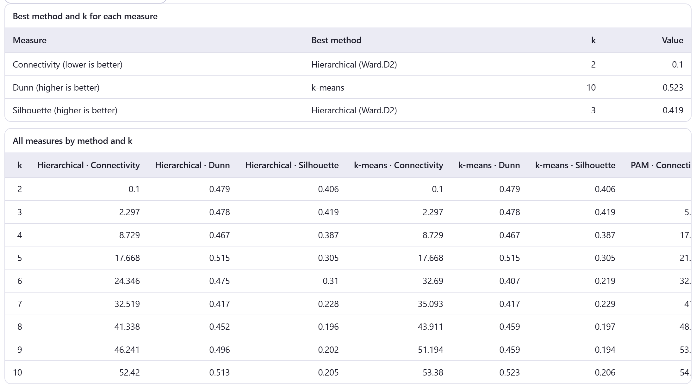
Figura 7.13. La comparación con el maíz. Arriba, el mejor método y k para cada medida: la conectividad es mínima con dos grupos, Dunn es máximo con k-means en diez y la silueta con el árbol en tres. Abajo, todas las medidas por método y k, en una tabla que se desplaza en horizontal hasta las columnas de PAM; el árbol y k-means dan las mismas particiones hasta k = 5.
Figura 7.14.Comparison of algorithms over k con la silueta: una línea por método y un círculo en el mejor. PAM cae antes que los otros dos a partir de k = 4.
7.7Ajustes, tablas y figuras del bloque
El bloque produce hasta nueve figuras, todas editables y exportables con el editor de figuras (sección 9.1). Las cinco de la tarjeta 1 aparecen juntas; la del gap, solo si B es mayor que cero.
Tabla 7.11. Las figuras del bloque y sus controles propios.
Figura
Qué muestra
Controles propios
Every criterion at a glance
Un panel por criterio frente a k (figura 7.3).
Título y paleta.
Consensus of the criteria
Votos por k (figura 7.4). Si el gap vota por k = 1, lo indica en una línea.
Show index names inside the bars, título y paleta.
Elbow · Average silhouette by k
Las curvas de W y de la silueta (figura 7.5).
Título y paleta.
Gap statistic
El gap con ± 1 error estándar, desde k = 1 (figura 7.6).
Título y paleta.
Bootstrap stability of the clusters
Jaccard medio y mínimo por grupo (figura 7.8).
Dissolved colour, título y paleta.
Tree with bootstrap support
El árbol con AU y BP (figura 7.10).
Umbral de los recuadros; mostrar AU y BP; tamaño de los valores; etiquetas de las hojas y su tamaño; grosor de las ramas; colores de AU, BP y recuadros.
Cross-table
La tabla cruzada coloreada (figura 7.12).
Colour map y Show row percentages.
Comparison of algorithms over k
Una medida por método y k (figura 7.14).
Measure (silueta, Dunn o conectividad), paleta y posición de la leyenda.
Tabla 7.12. Valores fijos del bloque, para reproducir o reportar un análisis.
Cálculo
Valor
Particiones con k-means (tarjetas 1 y 5)
5 arranques, semilla 1.
Conjuntos de referencia del gap
Semilla 2026. Con más de 150 objetos, o con k-means como generador, se agrupan con k-means de 2 arranques.
Estabilidad
Semilla 77.
Bootstrap multiescala
Escalas 0.5, 0.6, …, 1.4 del número de variables; semilla 13.
Conectividad
10 vecinos más cercanos.
iNota · qué pasa con los resultados al cambiar los datos
Cada vez que el Bloque 3 recalcula la matriz, los resultados de este bloque se borran y el Bloque 7 se deshabilita. El informe del Bloque 8 incluye lo que hayas corrido aquí: el k de consenso con sus votos, la estabilidad de cada grupo, el bootstrap multiescala y el acuerdo externo.
7.8Paso a paso
Con cada ejemplo preparado como en los capítulos anteriores (UPGMA en el Bloque 4 para la presencia de especies y los insectos, y el método propuesto en el Bloque 5), la tabla 7.13 resume lo que dice el Bloque 6 con sus valores iniciales. Las prácticas se detienen en cada caso.
Tabla 7.13. Los siete ejemplos en el Bloque 6 (k de 2 a 10, particiones del árbol).
Ejemplo
Consenso
Silueta
Gap
Jaccard medio
Observación
Razas de maíz
3 (5/13)
3 · 0.419
4
1.00 · 0.99 · 0.99
Consenso débil; tres grupos muy estables.
Presencia de especies
2 = 3 (4/13)
3 · 0.333
3
0.98 · 1.00 · 0.98
Empate; los tres hábitats son interpretables.
Abundancia de insectos
2 (10/13)
2 · 0.494
2
0.54 · 0.92 · 0.80
Convencionales frente al resto.
Perfiles de suelo
3 (7/13)
3 · 0.607
3
0.93 · 0.89 (k = 2)
El voto corrige el corte en dos.
Matriz de distancias
3 (8/13)
3 · 0.665
1
0.98 · 0.98 · 0.99
El gap es conservador con 12 objetos.
Cuatro grupos simulados
4 (10/13)
4 · 0.714
4
1.00 en los cuatro
Todo coincide.
Ruido uniforme
10 (5/13)
10 · 0.197
1
0.56 · 0.60 · 0.64
Consenso en el extremo; no hay grupos.
El Jaccard medio es el de la partición del Bloque 5 con 50 réplicas y el k de los capítulos anteriores (3, salvo los suelos y los cuatro grupos simulados).
Práctica 1 · Razas de maíz: un consenso débil y grupos muy estables
▸Paso a paso
Con el maíz, el árbol de Ward.D2 cortado en tres grupos y k-means jerárquico en el Bloque 5, entra al Bloque 6. El generador propuesto es el árbol. Pulsa Evaluate every k → (figuras 7.2 a 7.6): consenso 3 con 5 votos, silueta 3, gap y codo 4.
En la tarjeta 2 pulsa Run the bootstrap: Jaccard medio 1.000, 0.988 y 0.988, con las 50 réplicas recuperadas en los tres grupos. Cambia a Tree cut (Block 4): 1.000, 0.998 y 0.997.
En la tarjeta 3 pulsa Compute AU / BP (figuras 7.9 y 7.10) y lee la advertencia de las 8 variables.
En la tarjeta 4 compara la partición del Bloque 5 con la agrupación conocida: ARI, NMI y pureza valen 1; χ² = 88 con 4 grados de libertad.
En la tarjeta 5 pulsa Compare over the k range above (figuras 7.13 y 7.14).
θLo que aprendiste
Un voto repartido no significa grupos débiles. Con el maíz, cinco criterios eligen 3, tres eligen 2 y tres eligen 4: el árbol tiene una primera división en dos (altiplano frente al resto), y el gap y el codo sugieren un cuarto grupo, como la mezcla gaussiana del capítulo 6. Pero los tres grupos regionales reaparecen en todas las réplicas y coinciden exactamente con las regiones. El número de grupos se decide con el conjunto de la evidencia: el voto, la forma de las curvas, la estabilidad y el significado.
Práctica 2 · Presencia de especies: un empate que resuelve la interpretación
▸Paso a paso
Con Jaccard, el árbol UPGMA y PAM en el Bloque 5, evalúa el rango: 4 votos para k = 2 y 4 para k = 3 (figura 7.15). La casilla de consenso muestra 2, por la regla del k menor, y aparece la advertencia Tie between k = 2 and k = 3.
Observa quién vota: por 2, Calinski–Harabasz, PBM, Ball–Hall y Hartigan; por 3, la silueta (0.333), Krzanowski–Lai, el gap y el codo. Las coordenadas son los ejes del PCoA de Jaccard.
Corre la estabilidad de PAM con k = 3: 0.977, 0.997 y 0.976.
Corre la tarjeta 3: con 22 variables no aparece la advertencia. Los bosques (AU 98) y los pastizales (AU 97) están respaldados; los humedales completos quedan en 84, y sin S22 suben a 97.
Figura 7.15. El empate con la presencia de especies. Los criterios que premian pocos grupos grandes votan por 2; la silueta, el gap y el codo, por 3. Dunn, el C-index, Davies–Bouldin, McClain–Rao y Ratkowsky–Lance se reparten entre 7, 9 y 10.
θLo que aprendiste
La regla del k menor es una convención, no una recomendación ciega; la comprobación lo dice: prefiere el menor salvo que el grupo extra sea interpretable. Aquí lo es: tres hábitats y tres grupos estables que coinciden con ellos (ARI 1.000, capítulo 6). Cuando el voto empata, deciden la estabilidad y el conocimiento del sistema. Y el AU recuerda que en la tarjeta 3 las ramas se evalúan con distancia euclidiana sobre ceros y unos, no con tu Jaccard: el aviso azul lo señala.
Práctica 3 · Abundancia de insectos: el voto más claro no es el más útil
▸Paso a paso
Con Bray–Curtis, el árbol UPGMA y PAM con k = 3, evalúa el rango: consenso k = 2 con 10 de 13 votos, silueta 0.494, y la comprobación The silhouette peaks at k = 2 (figura 7.16).
Corre la estabilidad de PAM con k = 3 (figuras 7.7 y 7.8): el grupo de cuatro campos orgánicos es dudoso (0.538). Cambia a Tree cut (Block 4): grupos de 16, 3 y 5 objetos con Jaccard 0.868, 0.643 y 0.815.
Compara en la tarjeta 4 (figuras 7.11 y 7.12): PAM frente a los paisajes da ARI 0.610; el árbol frente a los paisajes, 0.419.
Pulsa Adopt k = 2 in Blocks 4 and 5, vuelve al Bloque 5, corre PAM y regresa. El Jaccard medio sube a 0.998 y 0.997, y el ARI con los paisajes es 0.549: los dos grupos son los campos convencionales (8) frente a los orgánicos y los setos juntos (16).
Figura 7.16. Los índices con los insectos: casi todos marcan k = 2 en el borde izquierdo. El gap tiene su máximo en 7 (0.316), pero la regla se detiene en 2.
θLo que aprendiste
La estructura dominante de esta comunidad es el manejo: los campos convencionales son muy distintos de todo lo demás, y esa división es la que ven casi todos los criterios y la que resiste todas las réplicas. Los tres paisajes existen, pero los campos orgánicos se parecen a los setos y su grupo es frágil. Ninguna de las dos respuestas es incorrecta: k = 2 describe la estructura más fuerte y k = 3 la del diseño del muestreo. Repórtalo así, con la estabilidad de cada grupo, en lugar de forzar una sola cifra.
Práctica 4 · Perfiles de suelo: el voto corrige el corte
▸Paso a paso
Con Gower, el árbol UPGMA cortado en dos y PAM con k = 2, evalúa el rango: consenso k = 3 con 7 votos y Clear consensus. La silueta sube de 0.575 con dos grupos a 0.607 con tres (figura 7.17).
Corre la estabilidad con la partición actual (k = 2): 0.925 y 0.887, aunque el grupo de 12 perfiles se disuelve en 5 de las 50 réplicas.
Pulsa Adopt k = 3 in Blocks 4 and 5: un mensaje verde confirma que el corte del árbol ya se aplicó. En la tarjeta 2 elige Tree cut (Block 4) y corre: los tres grupos, de 12 perfiles cada uno, tienen Jaccard 1.000.
Vuelve al Bloque 5, corre PAM con k = 3 y regresa: 12 / 12 / 12, también con Jaccard 1.000. El corte en dos unía los perfiles PR-13 a PR-24 con los PR-25 a PR-36.
Figura 7.17. Los suelos: la rodilla del codo y el máximo de la silueta están en k = 3. La curva de W cae a menos de la mitad al pasar de dos a tres grupos.
θLo que aprendiste
La sugerencia de corte del Bloque 4 se basa en los saltos de altura del árbol, y el mayor salto no siempre marca el número de grupos más útil. Aquí dos grupos eran "razonables" y estables, pero el voto, el codo, la silueta y el gap señalaban tres, y con tres la estabilidad se vuelve perfecta. Evaluar el rango completo antes de interpretar evita quedarse con la primera partición plausible.
Práctica 5 · Matriz de distancias: cuando el gap no alcanza
▸Paso a paso
Con la matriz genética de 12 cultivares, el árbol UPGMA y PAM con k = 3, evalúa el rango. Las coordenadas son las del MDS de tu matriz.
Consenso 3 con 8 votos y silueta 0.665; pero el gap elige k = 1 y aparece la advertencia The gap statistic finds no cluster structure, con la aclaración de que con solo 12 objetos la regla es conservadora (figura 7.18).
Corre la estabilidad: 0.980, 0.975 y 0.990. La tarjeta 3 no aparece: una matriz no tiene variables que remuestrear.
Figura 7.18. El gap con la matriz: el máximo está en k = 3 (0.09), pero el gap de k = 1 (−0.67) queda dentro de un error estándar del de k = 2 (−0.62 ± 0.19), y la regla se detiene en 1.
θLo que aprendiste
El gap aplica su regla con honestidad, pero con 12 objetos repartidos en 11 dimensiones los conjuntos de referencia son muy variables y los errores estándar enormes. Un solo criterio discordante no invalida el resto: la silueta alta, el voto amplio y la estabilidad casi perfecta sostienen los tres grupos. Lo correcto es reportar que el gap no fue concluyente con tan pocos objetos, no esconderlo.
Práctica 6 · Cuatro grupos simulados: el caso de libro
▸Paso a paso
Con los 80 objetos simulados, Ward.D2 y k-means jerárquico con k = 4, evalúa el rango: consenso 4 con 10 votos, silueta 0.714, gap y codo 4. En el gap, el salto de 0.88 a 2.06 entre k = 3 y 4 es inconfundible.
Estabilidad: los cuatro grupos con Jaccard 1.000. Validación externa con los grupos simulados: ARI 1.000 y χ² = 240 con 9 grados de libertad.
Comparación de algoritmos: la silueta máxima (0.714) y el Dunn máximo (0.896) coinciden en el árbol con k = 4.
Corre la tarjeta 3: 36 ramas con AU ≥ 95 % y la advertencia de las 5 variables. Los cuatro grupos de 20 tienen AU de 97 a 100, pero también reciben ese soporte muchas parejas sin significado.
θLo que aprendiste
Cuando la estructura es fuerte, todas las herramientas del bloque dicen lo mismo, y ese acuerdo es lo que debes buscar en tus datos. Incluso aquí, con solo 5 variables, el bootstrap multiescala infla el soporte de las ramas pequeñas: su advertencia no depende de que los grupos sean buenos, sino de cuántas variables hay.
Práctica 7 · Ruido uniforme: reconocer que no hay grupos
▸Paso a paso
Con los 60 objetos uniformes, Ward.D2 y k-means jerárquico con k = 3, evalúa el rango (figura 7.19). El "consenso" es k = 10 con 5 votos, y aparecen cuatro comprobaciones: consenso débil, consenso en el extremo del rango, silueta baja (0.20) y gap sin estructura.
Mira el gap (figura 7.20): negativo en todo el rango y máximo en k = 1.
Corre la estabilidad: Jaccard medio 0.558, 0.604 y 0.640, con entre 12 y 22 réplicas disueltas por grupo. Ningún grupo es estable; dos muestran algún patrón y uno es dudoso. Con el corte del árbol, 0.558, 0.529 y 0.486: uno se disuelve.
Corre la comparación de algoritmos: la mejor silueta, 0.209, es de k-means con k = 7.
Figura 7.19. El ruido uniforme en la tarjeta 1. Las casillas parecen dar una respuesta (k = 10), pero las comprobaciones la desmontan: el voto está repartido, se detiene en el borde del rango, la silueta es baja y el gap elige un solo grupo.
Figura 7.20. El gap con el ruido: −0.03 en k = 1 y por debajo en todos los demás, dentro de un error estándar. Los datos no están más agrupados que los de referencia.
θLo que aprendiste
El Bloque 6 existe para este caso. Todos los métodos de los Bloques 4 y 5 dieron grupos, y los criterios de la tarjeta 1, obligados a elegir un k ≥ 2, eligieron uno. Solo la combinación de evidencias revela lo que pasa: silueta baja, voto en el borde, gap en 1 y grupos que se deshacen al remuestrear. Cuando ves ese patrón en tus datos, la conclusión correcta es un gradiente continuo, no una tipología.
!Importante · lo que hay que reportar de este bloque
En la sección de métodos: el rango de k, el generador de particiones y los criterios usados; el número de conjuntos de referencia del gap; el número de réplicas de la estabilidad y el método de reagrupamiento; si usaste el bootstrap multiescala, las réplicas por escala y el número de variables; y los índices de acuerdo externo. En resultados: el k elegido con sus votos y los del segundo lugar, el Jaccard medio de cada grupo y el ARI con la agrupación conocida. Por ejemplo: "Se evaluó k = 2–10 con 13 criterios; k = 3 recibió 5 votos (k = 2 y k = 4, 3 cada uno). Los tres grupos fueron muy estables en 50 réplicas bootstrap (Jaccard medio 0.99–1.00) y coincidieron con las regiones de origen (ARI = 1.00)". El párrafo del Bloque 8 lo redacta con tus valores.
Con un número de grupos justificado y grupos que resisten el remuestreo, queda la parte que da sentido al análisis: describir cada grupo. El siguiente capítulo presenta los perfiles de los grupos, las variables, categorías y especies que caracterizan a cada uno, las reglas de clasificación del análisis discriminante y la asignación de objetos nuevos.
B7
Capítulo ocho · Bloque 7 · Profiles
Perfiles, interpretación y predicción
Un grupo solo tiene valor cuando se le puede poner nombre. Este bloque convierte las etiquetas "grupo 1, grupo 2" en descripciones: qué variables están por encima o por debajo de la media en cada grupo, qué categorías y qué especies lo caracterizan, qué reglas sencillas lo reconocen y cómo asignar a los grupos objetos que no participaron en el análisis.
8.1Describir los grupos: valores de prueba
8.2Variables categóricas
8.3Especies indicadoras
8.4Análisis discriminante
8.5Reglas del árbol de clasificación
8.6Asignar nuevas observaciones
8.7Ajustes, tablas y figuras del bloque
8.8Paso a paso
El Bloque 7 tiene una tarjeta de teoría y cuatro tarjetas de trabajo. En 1 · Profile the clusters eliges la partición y las variables. 2 · What characterises each cluster describe cada grupo con casillas, fichas escritas, tablas y figuras. 3 · Discriminant analysis and classification rules ajusta un análisis discriminante lineal y un árbol de clasificación que reproducen los grupos. 4 · Assign new observations usa esas reglas para clasificar objetos nuevos. Las tarjetas 2 a 4 aparecen al pulsar Profile →; ese mismo botón habilita el Bloque 8.
Tabla 8.1. Las herramientas del bloque y la pregunta que responde cada una.
Herramienta
Pregunta
Resultado
Valor de prueba v, ANOVA y Kruskal–Wallis
¿Qué variables distinguen cada grupo?
Medias por grupo con su v; F, η² y valores P por variable.
Proporciones y χ²
¿Qué categorías abundan en cada grupo?
Categorías sobre y subrepresentadas; V de Cramér.
Valor indicador (IndVal)
¿Qué especies indican cada grupo?
Especificidad, fidelidad y prueba de permutación.
Análisis discriminante lineal
¿Qué combinación de variables separa los grupos?
Ejes discriminantes, pesos, exactitud y mapa.
Árbol de clasificación
¿Qué reglas simples reconocen cada grupo?
Reglas del tipo "Grupo 3 si DaysToFlower ≤ 73".
Asignación de objetos nuevos
¿A qué grupo pertenece un objeto nuevo?
Tres asignaciones y su acuerdo.
8.1Describir los grupos: valores de prueba
Describir un grupo es decir en qué se aparta del conjunto. La app compara la media de cada grupo con la general mediante un valor de prueba.
✓Regla de decisión · qué variables ofrece la tarjeta 1
Columna del Bloque 1
Aparece como
Activa cuantitativa, de conteo, binaria u ordinal
Variable cuantitativa, con sus valores originales (no los transformados del Bloque 2).
Activa nominal
Variable categórica.
Suplementaria
Cuantitativa o categórica según su tipo, marcada supplementary; los faltantes se sustituyen por la media o forman la categoría (missing).
Etiqueta, grupos conocidos o excluida
No aparece.
La casilla de especies indicadoras aparece cuando hay al menos dos variables de conteo o binarias, y viene marcada si el Bloque 2 reconoció una tabla ecológica o binaria. Con DBSCAN, el ruido se describe como un grupo más, el último.
1234
Figura 8.1. La tarjeta 1 · Profile the clusters con la abundancia de insectos: 14 familias de conteos, todas marcadas, y la casilla de especies indicadoras activada.
1Partition: la del Bloque 5 (si existe) o el corte del árbol del Bloque 4.
2Indicator species: trata los conteos y las variables binarias como especies y calcula su IndVal con el número de Permutations indicado (sección 8.3).
3Quantitative variables y, si las hay, Categorical variables: todas vienen marcadas; la etiqueta de color dice el tipo de cada una.
4Profile →.
θTeoría en breve · el valor de prueba
Si un grupo de nk objetos se sacara al azar de los N, su media variaría alrededor de la media general con una varianza s²/nk · (N − nk)/(N − 1), donde s² es la varianza de la variable con denominador N. El valor de prueba es la diferencia entre la media del grupo y la general dividida entre esa desviación típica: v = (x̄k − x̄)/√[s²/nk · (N − nk)/(N − 1)]. Se lee como un valor z: |v| ≥ 1.96 señala una variable que caracteriza al grupo, por arriba si v > 0 y por abajo si v < 0. Para cada variable, además, un ANOVA de una vía dice si separa los grupos en conjunto, con η² (proporción de la variación explicada) como tamaño del efecto, y la prueba de Kruskal–Wallis da la misma respuesta con rangos.
Figura 8.2. Las casillas y las fichas de los grupos con el maíz (k-means jerárquico, tres grupos). Cada ficha enumera hasta cuatro variables por arriba y cuatro por abajo con |v| ≥ 1.96, ordenadas por |v|, con la media del grupo frente a la general.
Tabla 8.2. Las casillas de la tarjeta 2.
Casilla
Qué muestra
Partition
La partición descrita y el número de objetos.
Clusters
El número de grupos y sus tamaños.
Discriminating variables
Cuántas variables cuantitativas tienen ANOVA con p < 0.05; en ámbar si ninguna.
Strongest separator
La variable de mayor F, con su η².
Associated categorical variables
Cuántas categóricas tienen χ² con p < 0.05 (sección 8.2).
Indicator species
Cuántas especies son indicadoras con p < 0.05 (sección 8.3).
Las fichas traducen la tabla a frases. Con el maíz, el grupo 1 (14 accesiones del altiplano) florece tarde, 95.5 días frente a 80.6 (v = 5.4), y tiene hojas más angostas, mazorcas más bajas, plantas más bajas y mazorcas más cortas. El grupo 2 (15 de los valles) rinde más, 5.24 t/ha frente a 4.08 (v = 5.4), con granos más pesados y plantas y mazorcas más altas. El grupo 3 (15 de la costa) tiene más hileras y hojas más anchas, y florece antes: 66.9 días (v = −5.2). Una ficha sin ninguna variable significativa dice que se trata de un grupo "promedio" o pequeño.
Figura 8.3.Quantitative variables by cluster con el maíz, ordenada de mayor a menor F. En cada grupo, la media y su v entre paréntesis; las medias con |v| ≥ 1.96 van en negritas y el v en verde si es positivo o en rojo si es negativo. Los días a floración separan los grupos mejor que ninguna otra variable (F = 156.3, η² = 0.88); las hileras, peor (F = 18.3, η² = 0.47).
!Importante · los valores P de las variables activas son descriptivos
Los grupos se construyeron precisamente para que difieran en las variables activas, así que esas variables siempre saldrán "significativas". Con el ruido uniforme de la práctica 7, que no tiene grupos, cuatro de las cinco variables tienen ANOVA con p < 0.05. Usa v, F y η² para ordenar y describir, no como prueba de que los grupos existen: eso lo dice el Bloque 6. Solo las variables suplementarias, que no intervinieron en el agrupamiento, permiten afirmaciones inferenciales, como "los grupos difieren en altitud" cuando la altitud no se usó para formarlos.
Figura 8.4.Cluster profiles as a heat map: la media de cada grupo en unidades de desviación estándar (z), en azul por encima de la media general y en rojo por debajo, con las variables ordenadas por F. Se lee de un vistazo: el altiplano en rojo salvo en floración, los valles en azul salvo en floración e hileras, y la costa con floración y peso de grano en rojo.
8.2Variables categóricas
Las variables nominales se describen con proporciones. Para cada categoría y cada grupo, la app compara la proporción de la categoría dentro del grupo con su proporción en todos los datos, con un valor de prueba construido igual que el de las medias.
θTeoría en breve · categorías sobre y subrepresentadas
Si una categoría ocupa la proporción p de los N objetos y el grupo tiene nk, la proporción dentro del grupo tendría, al azar, una varianza p(1 − p)/nk · (N − nk)/(N − 1). El valor de prueba es la diferencia de proporciones entre su desviación típica, una aproximación normal a la prueba hipergeométrica: v ≥ 1.96 marca una categoría sobrerrepresentada (▲) y v ≤ −1.96 una subrepresentada (▼). Para la variable completa, la prueba de χ² de la tabla grupos × categorías dice si hay asociación, y la V de Cramér (de 0 a 1) cuánta.
Cada variable categórica tiene su propia tabla: una fila por categoría y una columna por grupo con el conteo y el porcentaje del grupo, las marcas ▲ y ▼, y el χ² con la V de Cramér en el título. Las fichas de los grupos añaden las categorías sobrerrepresentadas que aparecen al menos dos veces, con el porcentaje en el grupo frente al general. Con los perfiles de suelo en tres grupos (práctica 4), la textura tiene χ² = 72 con 10 grados de libertad y V = 1.00: cada textura cae en un solo grupo.
Figura 8.5.Composition of the categorical variables by cluster con los suelos en tres grupos: una barra apilada por grupo con la proporción de cada textura. El grupo 1 es de francos (83 %) y francos limosos, el 2 de arcillas y francos arcillosos, y el 3 de francos arenosos (75 %) y arenas.
8.3Especies indicadoras
En ecología de comunidades, la pregunta natural no es qué media es alta sino qué especie indica cada grupo: una especie que vive casi solo en ese grupo y está en casi todos sus sitios. El valor indicador de Dufrêne y Legendre, IndVal, mide exactamente eso.
θTeoría en breve · especificidad por fidelidad
Para una especie y un grupo, la especificidad A es la parte de la abundancia media de la especie que corresponde a ese grupo: la media en el grupo dividida entre la suma de sus medias en todos los grupos. La fidelidad B es la proporción de sitios del grupo donde la especie aparece. IndVal = A × B, de 0 a 100 %. Cada especie se asigna al grupo donde su IndVal es máximo. La significancia se obtiene permutando las etiquetas de los grupos: el valor P es la proporción de permutaciones (más la observada) en que el IndVal máximo iguala o supera al observado. Con 499 permutaciones el valor P más pequeño posible es 0.002.
Tabla 8.3. Cómo leer el IndVal.
Patrón
Lectura
A alto, B alto
Indicadora ideal: exclusiva y constante (Sagittaria, 100 × 90).
A alto, B bajo
Exclusiva pero rara: su presencia delata el grupo, su ausencia no dice nada (Nymphaea, 100 × 70).
A bajo, B alto
Constante pero compartida: frecuente en el grupo y también fuera (Salix, 71 × 100).
IndVal > 50 % y p < 0.05
Buena indicadora para describir o reconocer el grupo en campo.
Figura 8.6. La tabla Indicator value (Dufrêne–Legendre) con la presencia de especies (PAM, tres grupos), ordenada por IndVal; se ven las siete primeras de 22. Sagittaria es la indicadora más fuerte del grupo 2, los humedales: está en 9 de sus 10 sitios (B = 90 %) y en ningún otro (A = 100 %), IndVal = 90 %.
Figura 8.7.Indicator species: una barra por especie, coloreada por el grupo que indica, con A y B a la derecha y un asterisco si p < 0.05. Las barras desvaídas del final (Opuntia, Agave, Lupinus) no son indicadoras. Diecisiete de las 22 especies lo son.
iNota · con abundancias, la fidelidad pesa poco
La fidelidad cuenta presencias. En una tabla de abundancias donde casi todas las especies aparecen en todos los sitios, como la de insectos, B vale 100 % para todas y el IndVal se reduce a la especificidad: una familia es indicadora porque se concentra en un grupo, no porque falte en los demás. Con presencia y ausencia las dos partes cuentan.
8.4Análisis discriminante
Los valores de prueba miran una variable a la vez. El análisis discriminante lineal (LDA) busca la combinación de variables que mejor separa los grupos, y con ella una regla para clasificar cualquier objeto. La tarjeta 3 aparece cuando hay al menos una variable cuantitativa marcada.
θTeoría en breve · ejes que separan grupos
El LDA calcula la matriz de covarianza dentro de los grupos, W, y la matriz entre grupos, B, y busca los ejes que maximizan la varianza entre grupos relativa a la de dentro: los vectores propios de W⁻¹B. Hay a lo sumo k − 1 ejes (LD1, LD2…), y el porcentaje de cada uno dice qué parte de la separación explica. La lambda de Wilks, Λ = ∏ 1/(1 + λi), va de 0 (separación total) a 1 (ninguna) y se prueba con la χ² de Bartlett. Para clasificar, cada objeto recibe la probabilidad posterior de pertenecer a cada grupo, suponiendo grupos normales con covarianza común; las probabilidades previas son proporcionales a los tamaños o iguales. Si W es casi singular, la app le suma una pequeña cresta (10⁻⁴ de su traza media).
Figura 8.8. El análisis discriminante con el maíz. Λ = 2.2 × 10⁻⁵ (χ² = 402.8 con 16 grados de libertad), 100 % de acierto por resustitución y también dejando uno fuera. LD1 explica 67 % de la separación y LD2 33 %. La matriz de confusión da la resustitución y, entre paréntesis, la validación dejando uno fuera.
Tabla 8.4. Casillas y tablas de la tarjeta 3.
Elemento
Qué es
Wilks Λ
La lambda con su χ², grados de libertad y valor P; en verde si p < 0.05. Los valores muy pequeños se escriben en notación científica.
Resubstitution accuracy
Proporción de objetos que la regla devuelve a su propio grupo usando todos los datos. Siempre optimista.
Leave-one-out accuracy
Cada objeto se clasifica con una regla ajustada sin él: la estimación honesta para objetos nuevos. Verde > 90 %, ámbar > 70 %. Se calcula hasta 600 objetos.
Discriminant axes
Número de ejes y porcentaje de cada uno.
Tree rules
Reglas del árbol, profundidad y acierto (sección 8.5).
Coeficientes estandarizados
El peso de cada variable en cada eje, en unidades de desviación estándar dentro de grupos. Dicen qué variables usa la regla, pero se reparten entre variables correlacionadas.
Correlaciones de estructura
La correlación de cada variable con cada eje. Dicen qué significa el eje y son más estables que los coeficientes.
Con el maíz, LD1 correlaciona sobre todo con el rendimiento (r = 0.86), la altura de mazorca (0.84) y la de planta (0.82): es un eje de vigor que separa los valles del altiplano. LD2 correlaciona con los días a floración (0.77) y el peso de grano (0.73), y en sentido contrario con las hileras (−0.56): separa la costa, precoz y de muchas hileras, de los otros dos.
Figura 8.9.Discriminant map: los objetos sobre LD1 y LD2 con su elipse del 95 % y el centroide de cada grupo (rombo). Una cruz marcaría un objeto mal clasificado; con el maíz no hay ninguno. Con solo dos grupos hay un único eje, y el mapa se convierte en una curva de densidad por grupo sobre LD1.
!Importante · muchas variables y pocos objetos
La regla discriminante tiene tantos parámetros como variables por grupo, y con muchas variables se aprende de memoria los objetos de entrenamiento. Dos avisos lo vigilan: Few objects for … variables, cuando hay menos objetos que variables más grupos, y Resubstitution accuracy … is much higher than leave-one-out, cuando la diferencia supera 15 puntos. Con la presencia de especies (22 variables, 30 sitios) la resustitución es perfecta, pero dejando uno fuera acierta solo el 53 % (práctica 2). Antes de clasificar objetos nuevos, desmarca en la tarjeta 1 las variables que no discriminan y vuelve a pulsar Profile →.
8.5Reglas del árbol de clasificación
Un árbol de clasificación resume los grupos en preguntas de sí o no sobre una variable a la vez. Pierde algo de exactitud frente al LDA, pero se explica en una frase y se aplica en campo sin calculadora.
θTeoría en breve · particiones sucesivas con el índice de Gini
El árbol empieza con todos los objetos y prueba cada variable y cada punto de corte (el punto medio entre dos valores observados consecutivos). Elige el corte que más reduce la impureza de Gini, 1 − Σ pc², donde pc es la proporción de cada grupo en el nodo. Repite el proceso en cada rama hasta que el nodo es puro, alcanza la profundidad máxima, tiene menos del doble del mínimo de objetos por hoja o ningún corte mejora la impureza. Cada hoja predice su grupo mayoritario, y cada camino de la raíz a una hoja es una regla.
Figura 8.10. Las reglas y el árbol con el maíz. Bastan dos variables: las accesiones que florecen en 73 días o menos son de la costa (grupo 3); entre las tardías, las de 211 cm de altura o menos son del altiplano (grupo 1) y las más altas de los valles (grupo 2). Las tres hojas son puras. Cada nodo muestra la variable o el grupo, el número de objetos, el porcentaje del grupo mayoritario y una barra con la composición.
Tabla 8.5. Controles de la tarjeta 3.
Control
Qué hace
Prior probabilities
Proportional to cluster sizes (por omisión) o Equal. Con grupos de tamaños muy distintos, las previas iguales evitan que la regla favorezca al grupo grande.
Tree depth
De 1 a 6 niveles; 3 por omisión. Más profundidad, más reglas y más riesgo de ajustar el ruido.
Minimum objects per leaf
De 1 a 50; 3 por omisión. Evita reglas que describen uno o dos objetos.
Recompute
Vuelve a ajustar el LDA y el árbol con los controles nuevos, sin repetir los perfiles.
8.6Asignar nuevas observaciones
Una tipología sirve de verdad cuando permite clasificar lo que venga después: una accesión nueva, un sitio muestreado el año siguiente, un suelo de otra parcela. La tarjeta 4 asigna objetos nuevos con tres reglas a la vez, y su acuerdo dice cuánto confiar en la asignación.
Figura 8.11. La tarjeta 4 · Assign new observations tras pulsar Fill with an example y Assign to clusters. El ejemplo fabrica tres objetos cerca de las medias de los grupos 1, 2 y 3; las tres reglas los asignan a esos grupos con probabilidad posterior 1.000.
Tabla 8.6. Las tres reglas de asignación y cómo preparar la tabla.
Elemento
Detalle
LDA cluster · Posterior
El grupo de mayor probabilidad posterior en el análisis discriminante, y esa probabilidad.
Nearest centroid
El grupo cuyo centroide está más cerca, tras estandarizar con la media y la desviación de los datos originales.
Tree rule
El grupo de la hoja a la que llega el objeto en el árbol.
Agreement
all three agree o methods differ. Un desacuerdo señala un objeto entre grupos; la probabilidad posterior dice cuán dudoso es.
La tabla
Pégala o cárgala con Elegir archivo (CSV, TSV o texto). La primera fila debe tener los nombres de las variables, sin importar mayúsculas; una columna con otro nombre se toma como etiqueta. Las variables que falten se rellenan con la media general, con un aviso.
⬇ Assignments (CSV)
Guarda por objeto las tres asignaciones, la probabilidad y los valores usados.
iNota · los objetos nuevos no cambian los grupos
Asignar no es volver a agrupar: los centroides, la regla discriminante y el árbol quedan fijos. Un objeto muy distinto de todos se asignará igualmente al grupo menos lejano, con posterior alta si está lejos en la dirección de ese grupo. Si esperas objetos de un tipo que no estaba en los datos, compara sus valores con los perfiles de la tarjeta 2 y, si hace falta, repite el análisis con ellos incluidos.
8.7Ajustes, tablas y figuras del bloque
El bloque produce hasta ocho figuras, todas editables y exportables con el editor de figuras (sección 9.1). Las cuatro primeras aparecen con variables cuantitativas; la de categorías, con categóricas; la de especies, con IndVal; las dos últimas, con la tarjeta 3.
Tabla 8.7. Las figuras del bloque y sus controles propios.
Figura
Qué muestra
Controles propios
Cluster profiles as a heat map
Medias por grupo y variable (figura 8.4).
Cell value (z, valor de prueba v o media escalada por variable), Colour map, mostrar valores, todas las variables o las 30 más discriminantes.
Radar of cluster means
Un polígono por grupo con las medias escaladas de 0 a 1 (figura 8.12).
Número de variables (las más discriminantes), escala por el rango de las medias o de los datos, opacidad del relleno, grosor de línea, tamaño de etiquetas, leyenda.
Parallel coordinates
Las medias en z unidas por líneas, con los objetos en trazo tenue (figura 8.13).
Número de variables, dibujar los objetos (por omisión hasta 200), grosor de línea.
Distribution of each variable by cluster
Diagramas de caja por grupo, las variables más discriminantes primero (figura 8.14).
Número de variables (hasta 24).
Composition of the categorical variables
Barras apiladas por grupo (figura 8.5).
Número de variables, paleta de categorías.
Indicator species
IndVal por especie (figura 8.7).
Número de especies, nombres en cursiva.
Discriminant map
Objetos en LD1 y LD2 (figura 8.9).
Elipses del 95 %, etiquetas (automáticas hasta 60), tamaño de etiquetas y de puntos, leyenda.
Classification tree
El árbol con la composición de cada nodo (figura 8.10).
Título, paleta y leyenda.
iNota · qué se descarga y qué pasa al Bloque 8
⬇ Profile table (CSV) guarda, por variable cuantitativa, la media y la desviación generales; por grupo, el tamaño, la media, la desviación y el valor de prueba; y el F, su valor P, η², la H de Kruskal–Wallis y su valor P. El informe del Bloque 8 incluye las fichas de los grupos, las tablas y las figuras tal como las editaste. Si el Bloque 3 recalcula la matriz, los resultados del Bloque 7 se borran y hay que volver a pulsar Profile →.
Figura 8.12.Radar of cluster means con el maíz. Cada eje va del grupo con la media menor (centro) al de la mayor (borde): los valles forman el polígono grande, el altiplano solo sale hacia la floración y la costa hacia las hileras y el ancho de hoja. El radar exagera diferencias pequeñas; úsalo para comunicar, no para medir.
Figura 8.13.Parallel coordinates of the cluster means: la línea gruesa de cada grupo sobre las 44 accesiones en trazo tenue. Muestra a la vez el perfil medio y cuánto se dispersan los objetos a su alrededor.
Figura 8.14.Distribution of each variable by cluster: un panel por variable con su valor P del ANOVA. Las cajas muestran lo que las medias esconden: los tres grupos apenas se solapan en floración, y en hileras el grupo de los valles ocupa casi todo el rango de los otros dos.
8.8Paso a paso
Con cada ejemplo preparado como en los capítulos anteriores (UPGMA en el Bloque 4 para la presencia de especies y los insectos, el método propuesto en el Bloque 5 y el Bloque 6 evaluado), la tabla 8.8 resume lo que dice el Bloque 7 con todas las variables marcadas. Las prácticas se detienen en cada caso.
Tabla 8.8. Los siete ejemplos en el Bloque 7.
Ejemplo
k
Mejor separador
Discriminantes
LDA dejando uno fuera
Árbol
Razas de maíz
3
DaysToFlower (η² 0.88)
8 de 8
100 %
3 reglas, 100 %
Presencia de especies
3
Sagittaria (η² 0.86)
17 de 22
53.3 %
5 reglas, 93 %
Abundancia de insectos
3
Carabidae (η² 0.77)
14 de 14
100 %
3 reglas, 100 %
Perfiles de suelo
3
CEC_cmol_kg (η² 0.96)
8 de 8
100 %
3 reglas, 100 %
Matriz de distancias
3
Sin variables: no hay perfiles; el Bloque 8 queda habilitado.
Cuatro grupos simulados
4
V5 (η² 0.94)
5 de 5
100 %
4 reglas, 100 %
Ruido uniforme
3
V5 (η² 0.63)
4 de 5
91.7 %
6 reglas, 95 %
Los suelos, con los tres grupos adoptados en el Bloque 6 (práctica 4 del capítulo 7). "Discriminantes" cuenta las variables con ANOVA p < 0.05.
Práctica 1 · Razas de maíz: tres tipos con nombre
▸Paso a paso
Con el maíz y k-means jerárquico con tres grupos, entra al Bloque 7. La partición propuesta es la del Bloque 5 y las ocho variables vienen marcadas. Pulsa Profile → (figuras 8.2 a 8.4).
Lee las fichas y ponles nombre: el grupo 1 es tardío y de porte bajo, el 2 vigoroso y rendidor, el 3 precoz. Comprueba en el Bloque 6 que coinciden con el altiplano, los valles y la costa.
Baja a la tarjeta 3 (figuras 8.8 a 8.10): Λ = 2.2 × 10⁻⁵, 100 % dejando uno fuera y un árbol de tres reglas con floración y altura de planta.
En la tarjeta 4 pulsa Fill with an example y Assign to clusters (figura 8.11). Cambia a mano la floración del primer objeto a 70 y vuelve a asignar: el árbol y el discriminante lo mandan a la costa (posterior 0.989), el centroide lo deja en el altiplano y la columna de acuerdo dice methods differ.
θLo que aprendiste
Los perfiles convierten números en tipos reconocibles: maíces de altura, tardíos y bajos; de valle, altos y rendidores; de costa, precoces. El árbol muestra que dos mediciones de campo bastan para reconocerlos, y el desacuerdo al alterar un objeto enseña por qué conviene usar las tres reglas: el árbol decide con un solo umbral, el discriminante da mucho peso a la floración y el centroide pesa por igual las ocho variables. Un objeto precoz pero con el resto de rasgos del altiplano queda, con razón, marcado como dudoso.
Práctica 2 · Presencia de especies: indicadoras y una regla sobreajustada
▸Paso a paso
Con Jaccard, UPGMA y PAM, entra al Bloque 7: la casilla de especies indicadoras ya viene marcada. Pulsa Profile → (figuras 8.6 y 8.7): 17 de 22 especies son indicadoras.
Lee las fichas: el grupo 1 son pastizales (Bouteloua, Muhlenbergia, Bromus, Festuca), el 2 humedales (Sagittaria, Typha, Polygonum, Salix, Nymphaea) y el 3 bosques (Pinus, Arbutus, Quercus, Alnus).
Baja a la tarjeta 3 (figura 8.15): 100 % por resustitución, 53.3 % dejando uno fuera, y el aviso de que la regla memoriza los sitios.
Desmarca en la tarjeta 1 las especies que no son indicadoras o tienen IndVal menor que 60 %; quedan 13. Vuelve a perfilar: la exactitud dejando uno fuera sube de 53.3 % a 90 % y el aviso desaparece.
Figura 8.15. El discriminante con 22 especies y 30 sitios: Wilks muy significativo y resustitución perfecta, pero dejando uno fuera la matriz de confusión reparte los sitios entre grupos equivocados (entre paréntesis). El aviso ámbar lo explica.
θLo que aprendiste
Con comunidades, las especies indicadoras son la mejor descripción: dicen qué buscar en campo para reconocer cada hábitat. La regla discriminante con todas las especies, en cambio, es un espejismo: con más parámetros que información se ajusta a los 30 sitios y falla con cualquiera nuevo. La exactitud dejando uno fuera es la única que importa para predecir, y la de resustitución solo sirve para compararla.
Práctica 3 · Abundancia de insectos: un grupo que no tiene rasgos propios
▸Paso a paso
Con Bray–Curtis, UPGMA y PAM con tres grupos (4 / 8 / 12), pulsa Profile → con las 14 familias y las especies indicadoras marcadas (figuras 8.1 y 8.16).
Lee las fichas: el grupo 2 (los 8 campos convencionales) tiene más chicharritas, larvas de lepidóptero, pulgones y crisomélidos, y menos ácaros, carábidos, colémbolos y arañas. El grupo 3 (setos y cuatro campos orgánicos) tiene más carábidos, abejas, ácaros y arañas.
El grupo 1, los otros cuatro campos orgánicos, solo tiene menos curculiónidos (v = −2.0) y ninguna especie indicadora.
En la tarjeta 3, el árbol lo resume en dos variables: Apidae > 6.5 da el grupo 3; con menos abejas, Staphylinidae > 4.5 da el grupo 1 y el resto el 2.
Figura 8.16. Las fichas con los insectos. Los grupos 2 y 3 tienen perfiles opuestos y muchas indicadoras; el grupo 1 apenas se aparta de la media.
θLo que aprendiste
Un grupo sin rasgos propios es un grupo intermedio: sus objetos están entre los extremos y no tienen nada que los caracterice por sí mismos. Es la misma señal que dieron el Bloque 5 (campos orgánicos repartidos) y el Bloque 6 (su grupo, dudoso por bootstrap). Coherentes entre sí, las tres evidencias apoyan describir un gradiente de manejo más que tres tipos nítidos.
Práctica 4 · Perfiles de suelo: un grupo que se define por su textura
▸Paso a paso
Con Gower y PAM, adopta en el Bloque 6 los tres grupos que propuso el voto y vuelve a correr PAM en el Bloque 5. En el Bloque 7 aparecen ocho variables cuantitativas (el drenaje ordinal y la variable calcárea binaria incluidas) y la textura como categórica.
Pulsa Profile → (figuras 8.5 y 8.17). El grupo 2 es arcilloso y ácido: 43 % de arcilla, pH 5.4, 6.3 % de materia orgánica, mal drenaje y poca pendiente. El grupo 3 es arenoso y alcalino: 73 % de arena, pH 7.9, más pendiente y casi siempre calcáreo.
La ficha del grupo 1 no tiene ninguna variable cuantitativa: solo dice que es franco (83 %) o franco limoso. En la tabla, todas sus medias quedan entre las de los otros dos, con |v| ≤ 1.2.
En la tarjeta 3, el árbol separa los tres con pH ≤ 6.3 y arena ≤ 61 %, sin errores.
Figura 8.17. Los suelos en tres grupos. La capacidad de intercambio catiónico es el mejor separador (F = 354.2, η² = 0.96). El grupo 1 se describe solo por su textura.
θLo que aprendiste
Un grupo intermedio en todas las variables numéricas puede ser un tipo perfectamente real: aquí son los suelos francos, estables en el Bloque 6 con Jaccard 1.000. Lo que lo define es una variable categórica. Por eso conviene perfilar con todas las variables disponibles, también las suplementarias, y no solo con las que tienen medias extremas.
Práctica 5 · Matriz de distancias: nada que perfilar
▸Paso a paso
Carga la matriz genética y entra al Bloque 7 después de los Bloques 4 a 6 (figura 8.18). No hay variables que marcar, y un aviso lo explica.
El botón Continue to the report → ya está habilitado: el informe del Bloque 8 incluye la partición y su validación.
Figura 8.18. El Bloque 7 con la matriz de distancias: sin variables, con el aviso y con el paso al informe habilitado.
θLo que aprendiste
Una matriz de distancias permite agrupar y validar, pero no describir: para decir en qué difieren los grupos hacen falta las variables. Si tienes datos de los objetos (origen, año, rasgos morfológicos), cárgalos como tabla con la matriz aparte, o bien úsalos fuera de la app para interpretar los grupos obtenidos.
Práctica 6 · Cuatro grupos simulados: cada grupo, una combinación
▸Paso a paso
Con los 80 objetos y k-means jerárquico con cuatro grupos, perfila: las cinco variables separan los grupos con η² de 0.92 a 0.94.
Lee las fichas: ningún grupo se define por una sola variable. El grupo 1 tiene V1 baja y V2 alta; el 2, V2 y V4 bajas y V1 y V3 altas; el 3, V5 muy baja y V3 y V4 altas; el 4, V1, V2 y V5 altas.
En la tarjeta 3: tres ejes discriminantes (69 %, 25 % y 6 %), 100 % dejando uno fuera, y un árbol de cuatro reglas con V1 y V2.
θLo que aprendiste
Los grupos reales suelen distinguirse por combinaciones, no por una variable. Por eso la ficha enumera varias, el LDA necesita tres ejes y el árbol usa la misma variable en dos niveles. Si el Bloque 6 dijo que la estructura es fuerte, el Bloque 7 debe poder describirla con claridad; si no puede, revisa las variables elegidas.
Práctica 7 · Ruido uniforme: perfiles que no significan nada
▸Paso a paso
Con los 60 objetos uniformes y k-means jerárquico con tres grupos, perfila (figura 8.19): cuatro de las cinco variables tienen ANOVA con p < 0.05, y V5 separa con F = 48.6.
Las fichas describen tres grupos con variables "características", como si fueran tipos.
En la tarjeta 3: Λ = 2.4 × 10⁻⁴, 91.7 % de acierto dejando uno fuera y seis reglas con 95 % de acierto.
Figura 8.19. La tabla de variables con el ruido uniforme. El agrupamiento cortó el espacio por V5 y V1, así que esas variables "separan" los grupos con valores P diminutos. Nada de esto prueba que existan.
θLo que aprendiste
Es la advertencia de la sección 8.1 hecha realidad. Cualquier partición, incluso de datos sin estructura, produce perfiles convincentes, variables significativas y reglas que se reconocen a sí mismas con alta exactitud. Solo el Bloque 6 (silueta baja, gap en k = 1, grupos inestables) revela que no hay grupos. Nunca interpretes el Bloque 7 sin haber mirado antes el Bloque 6.
!Importante · lo que hay que reportar de este bloque
En la sección de métodos: que los grupos se describieron con valores de prueba, ANOVA y Kruskal–Wallis; que los valores P de las variables activas son descriptivos; el número de permutaciones del IndVal, si lo usaste; y, para el discriminante, las probabilidades previas y la validación dejando uno fuera. En resultados: una descripción de cada grupo con sus variables y categorías principales, las especies indicadoras con su IndVal y valor P, y la exactitud dejando uno fuera. Por ejemplo: "El grupo 1 (n = 14) se caracterizó por una floración más tardía (95.5 frente a 80.6 días; v = 5.4) y plantas más bajas; un análisis discriminante clasificó correctamente el 100 % de las accesiones en validación dejando una fuera". El párrafo del Bloque 8 lo redacta con tus valores.
Con los grupos descritos, solo falta reunirlo todo. El siguiente capítulo presenta el informe del Bloque 8: qué secciones incluye, cómo elegirlas, los párrafos de métodos y resultados que redacta con tus valores y cómo exportar el informe y las figuras.
B8
Capítulo nueve · Bloque 8 · Report
Informe y exportación
Un análisis termina cuando se puede comunicar. Este capítulo reúne las herramientas para hacerlo: el editor que ajusta cada figura al estilo de una revista, la exportación en los formatos y resoluciones que piden las editoriales, y el Bloque 8, que junta en un informe autocontenido todas las tablas, comprobaciones y figuras, redacta un borrador de resultados y un párrafo de métodos con tus valores y empaqueta datos, tablas y figuras en un solo archivo.
9.1El editor de figuras
9.2Exportar para publicar
9.3El informe automático
9.4El párrafo de métodos y el paquete ZIP
9.5Paso a paso
Las secciones 9.1 y 9.2 describen herramientas que están en todos los bloques: cada figura de la app tiene su panel Edit figure y su barra de descarga. Las secciones 9.3 y 9.4 describen el Bloque 8, que tiene dos tarjetas: 1 · What goes into the report, donde eliges qué incluir y cómo exportarlo, y 2 · Preview, donde ves el informe tal como se guardará. El Bloque 8 se habilita en cuanto el Bloque 7 describe los grupos, o antes si los datos son una matriz de distancias.
Tabla 9.1. Qué produce la app para comunicar un análisis.
Producto
Dónde
Para qué sirve
Figura editada (PNG, TIFF, SVG, JPG, WEBP)
Cualquier bloque
Una figura suelta para un artículo, una tesis o una presentación.
Tabla en CSV
Bloques 2 a 7
Pertenencias, perfiles o resultados para otra hoja de cálculo o programa.
Informe HTML
Bloque 8
Un documento que se abre en cualquier navegador y guarda todo el análisis.
Informe en PDF
Bloque 8
El mismo informe impreso desde el navegador, para archivar o compartir.
Párrafo de métodos
Bloque 8
Un texto en inglés con los métodos y valores usados, listo para editar.
Paquete ZIP
Bloque 8
Informe, datos, tablas y todas las figuras en vector y en alta resolución.
9.1El editor de figuras
Todas las figuras de ClusteringPro se dibujan como gráficos vectoriales y se redibujan al instante con cada cambio. El panel Edit figure — titles, colours, fonts, sizes, debajo de cada figura, tiene dos pestañas: una con lo que se dibuja y otra con cómo se ve.
Figura 9.1. La pestaña Content & colours del mapa de grupos del Bloque 5 con el maíz. Sus controles son propios de esta figura: título, subtítulo y títulos de los ejes; región y opacidad de los grupos; centros, números y etiquetas; tamaño y forma de los puntos; forma según la agrupación conocida; color del ruido, paleta y posición de la leyenda.
La primera pestaña cambia en cada figura, y los capítulos 3 a 8 describen sus controles en las tablas de figuras de cada bloque. Casi todas tienen al menos un Title y una Palette. Los cuadros de texto aceptan cualquier título: borrar el de un eje lo sustituye por el título automático.
Figura 9.2. La pestaña Style & typography, igual en todas las figuras.
Tabla 9.2. Los controles de estilo y tipografía.
Control
Qué hace
Theme
Light (por omisión), Paper (fondo crema), Dark (fondo oscuro, para presentaciones), Minimal (sin cuadrícula) y Journal (black & white axes), con ejes negros y sin cuadrícula.
Font family
Sans-serif (sin remates, por omisión), System interface font (la del sistema operativo), Serif (con remates) o Monospace. Son familias genéricas: cada equipo usa la suya.
Font size: all
Escala todos los textos a la vez, de 0.6 a 2.6 veces.
Escalan cada grupo de textos por separado, de 0.6 a 3 veces, sobre la escala general.
Bold axis titles
Títulos de los ejes en negritas.
Gridlines · Dashed gridlines
Muestra la cuadrícula y la dibuja punteada.
Width (px) · Height (px)
Tamaño de la figura, de 400 a 2 400 por 300 a 2 000 píxeles. Cambia la proporción y el espacio para las etiquetas, no la nitidez.
iNota · el estilo se recuerda
El tema, la tipografía, los tamaños de letra, las negritas y la cuadrícula son preferencias compartidas: al cambiarlos en una figura se aplican a todas las que se dibujen después, y el navegador los recuerda para la próxima sesión. Así, basta ajustar el estilo de una revista una vez. El ancho, el alto y los controles de la primera pestaña, en cambio, son propios de cada figura y vuelven a sus valores iniciales cuando la figura se recalcula.
Tabla 9.3. Paletas de grupos y mapas de color disponibles.
Tipo
Opciones
Paletas de grupos (Palette)
ClusteringPro, Vivid, Harvest, Soil & crop, Soft, Deep, Pastel, Greyscale y dos seguras para daltonismo: Okabe–Ito y Paul Tol.
Mapas de color (Colour map)
Viridis, Magma, Inferno, Plasma y Cividis (segura para daltonismo); divergentes Red–Yellow–Blue, Red–Blue, Spectral y Blue–White–Red; secuenciales Greens, Yellow–Green, Browns y Heat.
Figura 9.3. El mismo mapa con el estilo por omisión (izquierda) y con el tema Journal, la familia Serif y sin cuadrícula (derecha): ejes negros, marco de leyenda negro y líneas de referencia punteadas, como piden muchas revistas.
9.2Exportar para publicar
Debajo del editor, cada figura tiene su barra de descarga: formato, resolución, fondo y el botón ⬇ Download figure. A la derecha, la app calcula el tamaño del archivo resultante en píxeles y en centímetros a la resolución elegida.
Figura 9.4. La barra de descarga del mapa de grupos preparada para una revista: TIFF a 600 dpi, fondo blanco. La figura tendrá 7 280 × 4 880 píxeles, 30.8 × 20.7 cm a 600 dpi.
Tabla 9.4. Los formatos de descarga.
Formato
Características
PNG
Sin pérdida y con la resolución grabada en el archivo, de modo que los programas lo colocan al tamaño correcto. Admite fondo transparente. El formato de uso general.
TIFF (journal submission)
RGB sin comprimir con la resolución grabada, el formato que exigen muchas editoriales. Los archivos son grandes.
SVG (vector, editable)
Vectorial: se amplía sin perder nitidez y se edita en programas de dibujo vectorial y de presentaciones. La resolución no aplica.
JPG · WEBP
Con compresión, para páginas web o presentaciones ligeras. No los uses para artículos.
Tabla 9.5. Las resoluciones: la figura se multiplica por un factor y se graba con los dpi correspondientes. Tamaños para el mapa de grupos, de 910 × 610 píxeles base.
Opción
Factor
dpi
Píxeles
Uso
Screen · 2× (150 dpi)
2
150
1 820 × 1 220
Pantalla y presentaciones.
High · 4× (300 dpi)
4
300
3 640 × 2 440
Por omisión; tesis e informes.
Very high · 6× (450 dpi)
6
450
5 460 × 3 660
Pósteres.
Publication · 8× (600 dpi)
8
600
7 280 × 4 880
Figuras de línea para revistas.
Maximum · 12× (900 dpi)
12
900
10 920 × 7 320
Cuando la revista pide más de 600 dpi.
✓Regla de decisión · qué formato y resolución elegir
Si la figura va a…
descarga
una revista que pide TIFF
TIFF a 600 dpi, fondo blanco, tema Journal si la revista prefiere ejes en negro.
una revista que acepta vectores (PDF, EPS, SVG)
SVG: se convierte a PDF o EPS en un programa de dibujo vectorial sin perder calidad.
una tesis o un informe en un procesador de textos
PNG a 300 dpi.
una presentación sobre fondo de color
PNG con Transparent (PNG) y, con fondo oscuro, tema Dark.
una figura que editarás después (flechas, rótulos)
SVG.
La resolución elegida se recuerda para las siguientes figuras. El fondo transparente solo tiene efecto en PNG; JPG y TIFF siempre llevan fondo blanco.
!Importante · los dpi y el tamaño en la página
Lo que decide la nitidez es el número de píxeles. La app graba los dpi y calcula los centímetros suponiendo que la figura se imprime a su tamaño base, 910 píxeles como 30.8 cm. Al colocarla en una columna de 8.5 cm, la misma imagen de 3 640 píxeles queda a más de 1 000 dpi efectivos. Si la revista pide un ancho de columna, ajusta la proporción con Width y Height antes de exportar y aumenta los tamaños de letra: al reducir la figura, las letras se reducen con ella. Un TIFF sin comprimir ocupa unos 3 bytes por píxel: el de la figura 9.4 pesa unos 100 MB, y a 300 dpi unos 27 MB.
9.3El informe automático
El Bloque 8 no recalcula nada: toma lo que ya está en pantalla. Cada tabla y cada comprobación se copian tal como se ven en su bloque, y cada figura tal como la editaste, como gráfico vectorial. Si cambias algo en otro bloque, basta volver al Bloque 8 y construir el informe de nuevo.
Tabla 9.6. Las secciones del informe.
Casilla
Contenido
Data, preprocessing and clustering tendency
Resumen de variables, comprobaciones, tabla de variables, veredicto de preparación, Hopkins y figuras del Bloque 2.
Similarity and distance
Casillas, comprobaciones, figuras y comparación de coeficientes del Bloque 3.
Hierarchical clustering
Casillas, comprobaciones, grupos del corte, tabla cruzada, figuras y comparación de enlaces del Bloque 4.
Partitioning and advanced methods
Casillas, comprobaciones, tabla de grupos, tablas cruzadas, figuras y comparación de métodos del Bloque 5.
Number of clusters and validation
Voto, estabilidad, AU/BP, validación externa, comparación de algoritmos y figuras del Bloque 6.
Profiles, discriminant analysis and rules
Fichas de los grupos, perfiles, especies indicadoras, discriminante, reglas, asignaciones y figuras del Bloque 7.
Executive summary
Casillas con las cifras clave y un borrador de la sección de resultados.
Auto-drafted methods paragraph
El párrafo de métodos (sección 9.4).
How to cite the software
La cita con su DOI y la entrada BibTeX.
Appendix: cluster membership
Una fila por objeto con su grupo conocido, su grupo en el árbol y en la partición y su silueta.
Appendix: data as loaded
La tabla original completa; desmarcada por omisión.
123456
Figura 9.5. La tarjeta 1 · What goes into the report con el maíz analizado en los seis bloques: 30 figuras y todas las secciones listas.
1Resumen: bloques completados, figuras que entrarán y conjunto de datos.
2Title y Author(s). El título se propone a partir del nombre del archivo y sigue al conjunto de datos hasta que escribes el tuyo.
3Objective / notes: un párrafo opcional que se imprime bajo el título.
4Sections: las secciones de los bloques y los complementos (tabla 9.6).
5Formato y resolución de las figuras rasterizadas del paquete ZIP (sección 9.4).
6Los botones de exportación (tabla 9.7).
Las seis secciones de bloque llevan una etiqueta: ready si el bloque ya se corrió y not run yet si no, en cuyo caso la casilla se desactiva. Una sección solo se incluye si tiene algo que mostrar; las tarjetas que no corriste dentro de un bloque, como el bootstrap multiescala, simplemente no aparecen.
Tabla 9.7. Los botones de la tarjeta 1.
Botón
Qué hace
Build and preview the report
Construye el informe y lo muestra en la tarjeta 2; a la derecha indica su tamaño y cuántas figuras y tablas tiene.
⬇ Report (HTML)
Descarga el informe como un solo archivo HTML, con los estilos y las figuras dentro. Se abre en cualquier navegador sin conexión.
🖨 Print / save as PDF
Abre el informe en una ventana nueva y lanza la impresión; elige Guardar como PDF en el diálogo del navegador. Si el navegador bloquea ventanas emergentes, un aviso pide permitirlas.
⬇ Full package (ZIP)
Construye y descarga el paquete (sección 9.4); mientras trabaja, el botón dice Packing….
Copy the methods paragraph
Copia el párrafo de métodos al portapapeles y lo muestra en un cuadro de texto debajo.
Figura 9.6. La tarjeta 2 · Preview con el informe del maíz: título, fecha, datos y métodos principales, índice con enlaces y el resumen ejecutivo con sus casillas coloreadas. Debajo empieza el borrador de resultados.
Tabla 9.8. Las casillas del resumen ejecutivo y sus colores.
Casilla
Verde
Ámbar
Qué dice debajo
Clustering tendency
Hopkins > 0.75
> 0.5
Estructura no aleatoria si p < 0.05.
Hierarchical tree
cofenética > 0.75
> 0.6
Correlación y tamaños.
Partition
silueta > 0.5
> 0.25
Silueta con su calificativo y tamaños.
Consensus k
la mitad de los votos o más
menos
Votos del ganador.
Stability
Jaccard medio > 0.75
> 0.6
highly stable, stable, only partly stable o unstable.
Agreement with known groups
ARI > 0.8
> 0.5
Solo si hay agrupación conocida.
Discriminability
dejando uno fuera > 90 %
> 70 %
Exactitud del discriminante.
Most discriminant variables
sin color
Las tres de mayor η².
Por debajo del umbral ámbar, la casilla va en rojo. Las casillas de objetos y disimilitud no llevan color.
Figura 9.7. El inicio de la sección 3. Hierarchical clustering del informe del maíz: las casillas y comprobaciones del Bloque 4 tal como se ven en la app, y sus tablas numeradas en orden en todo el informe. Las tablas sin título en la app reciben uno descriptivo. Las figuras siguen con su número y un pie que añade el contexto del análisis, por ejemplo "Ward.D2 linkage on Euclidean dissimilarity, cut at k = 3".
θTeoría en breve · cómo redacta el borrador de resultados
El borrador tiene un párrafo por bloque corrido, y cada frase elige sus palabras con los mismos umbrales que las comprobaciones de la app: el Hopkins se describe como estructura genuina por encima de 0.75, estructura presente pero poco marcada por encima de 0.5 y reparto casi uniforme por debajo; el árbol es fiel con cofenética mayor que 0.8, aceptable por encima de 0.7 y distorsionado por debajo; la silueta indica estructura fuerte, razonable, débil o sin estructura sustancial con los cortes 0.7, 0.5 y 0.25. El párrafo de validación añade que el k de consenso está en el extremo del rango o que el gap no encontró estructura cuando ocurre, y señala los grupos con Jaccard menor que 0.6. El de perfiles recuerda que los valores P de las variables activas son descriptivos, y avisa si el discriminante se sobreajusta. Está en inglés y cada cifra sale del análisis: edítalo, pero no cambies los números.
iNota · los números de los grupos en el apéndice
El apéndice de pertenencias pone lado a lado el grupo del árbol y el de la partición. Sus números son etiquetas independientes: con el maíz, los valles son el grupo 3 del árbol y el grupo 2 de k-means jerárquico, aunque los dos agrupan exactamente las mismas accesiones (ARI = 1.000). Compara los grupos por sus miembros, no por su número.
9.4El párrafo de métodos y el paquete ZIP
La sección de métodos de un artículo de agrupamiento es larga y fácil de dejar incompleta. El Bloque 8 la redacta a partir de lo que realmente corriste, con los valores de cada ajuste, y termina con la cita del programa.
Tabla 9.9. Qué menciona el párrafo de métodos según lo que se corrió.
Bloque
Contenido
Datos (2)
Número de objetos y de variables activas por tipo, variables suplementarias, faltantes (eliminados o imputados), transformación y escalado, estadístico de Hopkins. Con una matriz cargada, solo que se usó tal como se suministró y el Hopkins sobre sus coordenadas.
Disimilitud (3)
Coeficiente, sobre qué matriz se calculó y si es euclidiana.
Árbol (4)
Enlace (con β si es flexible), correlación cofenética, coeficiente aglomerativo o divisivo, k del corte, ARI con los grupos conocidos y, si se compararon, número de enlaces.
Partición (5)
Método, k, espacio, algoritmo y arranques, modelo de la mezcla o ε y minPts de DBSCAN, silueta y ARI con el árbol.
Validación (6)
Rango de k, los criterios y los votos del ganador; réplicas y Jaccard de la estabilidad; réplicas y escalas del AU; índices de la validación externa.
Perfiles (7)
Pruebas usadas, χ² de las categóricas, IndVal, y la lambda de Wilks y la exactitud dejando uno fuera del discriminante, con el árbol.
Figura 9.8. Las secciones Methods y How to cite del informe del maíz. El párrafo recorre los bloques en orden, desde los datos y su preprocesamiento hasta el discriminante; la cita incluye el DOI de concepto, que siempre apunta a la última versión, y una entrada BibTeX.
Figura 9.9. Tras pulsar Copy the methods paragraph, el texto aparece en un cuadro debajo de los botones. Si el navegador no permite escribir en el portapapeles, como aquí, el aviso pide seleccionarlo y copiarlo a mano.
Tabla 9.10. El contenido del paquete ZIP.
Archivo o carpeta
Contenido
report.html
El informe, idéntico al de ⬇ Report (HTML).
data/data_as_loaded.csv
La tabla tal como se cargó.
data/preprocessed_matrix.csv
La matriz de trabajo del Bloque 2 (con una matriz cargada, sus coordenadas MDS), con el grupo conocido.
data/dissimilarity_…csv
La matriz de disimilitud completa, con el identificador del coeficiente en el nombre.
tables/cluster_membership.csv
Grupo conocido, grupo del árbol, grupo de la partición y silueta de cada objeto.
tables/tree_merges.csv
Las fusiones del árbol: paso, las dos ramas y la altura.
Los perfiles del Bloque 7 y, si se calcularon, los valores indicadores.
figures/svg/ · figures/png/ (o tiff, jpg, webp)
Cada figura mostrada, en vector y en el formato y la resolución de la tarjeta 1.
methods.txt · README.txt
El párrafo de métodos en texto plano y una guía del contenido.
70
Archivos en el paquete del maíz
Con los seis bloques corridos, el paquete reúne el informe, 3 archivos de datos, 4 tablas, 30 figuras en SVG, 30 en PNG, los métodos y la guía. A 150 dpi ocupa unos 7 MB; a 600 dpi, varias veces más. Rasterizar tantas figuras lleva de segundos a más de un minuto, según el equipo y la resolución.
9.5Paso a paso
Las prácticas usan los ejemplos preparados como en los capítulos anteriores, con los Bloques 2 a 7 corridos. La tabla 9.11 resume el informe de cada uno con las opciones por omisión.
Tabla 9.11. El informe de cinco ejemplos con las secciones por omisión.
Ejemplo
Secciones
Figuras
Casillas en rojo o ámbar
Lo que el borrador advierte
Razas de maíz
6
30
Hopkins, silueta, consenso
Estructura presente pero poco marcada; silueta débil.
Presencia de especies
6
30
Hopkins, silueta, consenso, discriminabilidad
El discriminante se sobreajusta (53 % frente a 100 %).
Matriz de distancias
5
21
Hopkins
Matriz no euclidiana; el gap no encontró estructura.
Cuatro grupos simulados
6
30
ninguna
Estructura fuerte en todos los párrafos.
Ruido uniforme
6
30
Hopkins, árbol, partición, consenso, estabilidad
Reparto casi uniforme, árbol distorsionado, consenso en el borde, gap en k = 1, estabilidad parcial.
Práctica 1 · Razas de maíz: del análisis al informe completo
▸Paso a paso
Con el maíz analizado en los Bloques 2 a 7, entra al Bloque 8 (figura 9.5). Las seis secciones están listas y el título propuesto es Cluster analysis of maize landraces morphology. Escribe tu nombre en Author(s) y el objetivo en Objective / notes.
Pulsa Build and preview the report (figura 9.6): unos 950 KB, 30 figuras y 12 tablas. Recorre el índice y lee el borrador de resultados.
Pulsa 🖨 Print / save as PDF y guarda el PDF desde el diálogo del navegador.
Pulsa ⬇ Full package (ZIP) y abre el paquete: comprueba que tables/cluster_membership.csv tiene las 44 accesiones.
θLo que aprendiste
El informe es el cuaderno de laboratorio del análisis: guarda cada decisión, cada comprobación y cada figura como las dejaste, con la fecha y los datos. Aunque no lo publiques, archívalo con los datos originales: dentro de un año te dirá exactamente qué coeficiente, qué enlace y qué k usaste.
Práctica 2 · Una figura para una revista
▸Paso a paso
En el Bloque 5, abre Edit figure del mapa de grupos (figura 9.1). En Content & colours escribe los títulos de los ejes en el idioma de la revista y elige la paleta Okabe–Ito.
En Style & typography (figura 9.2) elige el tema Journal, la familia Serif y quita la cuadrícula (figura 9.3). Sube Font size: all a 1.3.
En la barra de descarga elige TIFF y Publication · 8× (600 dpi) (figura 9.4) y pulsa ⬇ Download figure.
Ve al Bloque 6 y pulsa otra vez Evaluate every k →: las figuras que se dibujan de nuevo salen ya con el tema Journal y la familia Serif. Las que no recalcules conservan su estilo anterior, y así entran en el informe.
θLo que aprendiste
El estilo compartido ahorra repetir ajustes: una vez fijado el aspecto de la revista, todas las figuras que se dibujen después lo heredan, así que conviene fijarlo antes de correr los bloques o recalcularlos al final. Lo propio de cada figura, como los títulos o la paleta, se ajusta en cada una. Elige una paleta segura para daltonismo cuando los grupos se distinguen solo por color, y sube el tamaño de letra si la figura se reducirá a una columna.
Práctica 3 · Matriz de distancias: un informe sin variables
▸Paso a paso
Con la matriz genética analizada hasta el Bloque 6, pasa del Bloque 7 al 8. La sección de perfiles aparece como not run yet, desactivada; las otras cinco están listas.
Construye el informe (figura 9.10). La casilla de objetos dice dissimilarity matrix supplied, no hay casilla de grupos conocidos ni de discriminante, y el borrador describe la matriz suministrada como no euclidiana.
Lee el párrafo de métodos: empieza diciendo que la matriz de 12 objetos se suministró directamente, sin mencionar variables, faltantes ni escalado.
Figura 9.10. El resumen del informe con la matriz de distancias. El párrafo de validación recoge a la vez el voto amplio por k = 3, la advertencia del gap y la estabilidad casi perfecta: los tres datos que el capítulo 7 pedía reportar juntos.
θLo que aprendiste
El informe se adapta a lo que hay: con una matriz de distancias describe lo que se hizo con ella y omite lo que no aplica. Revisa siempre que el título corresponda al conjunto de datos y que ninguna casilla hable de un análisis que no corriste.
Práctica 4 · Ruido uniforme: el informe no disimula
▸Paso a paso
Con los 60 objetos uniformes analizados en todos los bloques, construye el informe y lee el resumen (figura 9.11).
Cuenta las casillas en rojo y ámbar: tendencia, árbol, partición, consenso y estabilidad.
Lee el borrador: el Hopkins cercano a 0.5, el árbol distorsionado, la silueta sin estructura sustancial, el consenso en el extremo del rango, el gap en k = 1 y la estabilidad solo parcial.
Observa la casilla Discriminability en verde (91.7 %) y el párrafo de perfiles con cuatro variables "significativas".
Figura 9.11. El resumen del informe con el ruido uniforme: cinco casillas en rojo o ámbar y un borrador que advierte, párrafo por párrafo, que no hay grupos que interpretar.
θLo que aprendiste
Un buen informe no solo presenta resultados: dice cuánto creerles. Las casillas verdes del discriminante y los valores P de los perfiles no contradicen las rojas: miden qué tan bien se reproducen los grupos que el algoritmo trazó, no si existen. Cuando el resumen se llena de ámbar y rojo, la conclusión honesta es que los datos forman un continuo.
Práctica 5 · Presencia de especies: cuidado con copiar sin leer
▸Paso a paso
Con la presencia de especies analizada en todos los bloques, construye el informe y lee el borrador de perfiles: 17 taxones indicadores significativos y un discriminante que clasifica bien el 53.3 % dejando uno fuera, contra el 100 % en los sitios de entrenamiento, con la advertencia de que la regla se sobreajusta.
Vuelve al Bloque 7, deja marcadas solo las 13 especies con IndVal de al menos 60 % y perfila de nuevo.
Regresa al Bloque 8 y construye el informe otra vez: la casilla Discriminability pasa del rojo al ámbar con 90 % y la advertencia desaparece del borrador.
θLo que aprendiste
El borrador refleja fielmente el estado de la app en el momento de construirlo. Si mejoras un análisis, reconstruye el informe; si copias el borrador a un artículo, revisa que sus advertencias sigan siendo ciertas y no borres las que lo sean.
!Importante · antes de publicar
Lee el borrador de resultados y el párrafo de métodos de principio a fin: son una base, no un texto final. Comprueba que el título, los autores y el conjunto de datos son los correctos; que las secciones incluidas corresponden a lo que vas a reportar; que las advertencias del borrador aparecen en tu discusión; y que las figuras usan el estilo, el formato y la resolución que pide la revista. Cita el programa con su DOI y guarda el paquete ZIP junto con tus datos: permite a cualquiera reproducir el análisis.
Con este capítulo termina el recorrido por los ocho bloques. Los apéndices reúnen el material de consulta: los formatos de archivo que acepta la app, un resumen de todas las reglas de decisión, un glosario, la solución de los problemas más frecuentes, las referencias de los métodos y los componentes de terceros.
A–F
Apéndices · material de consulta
Apéndices
Los apéndices no se leen de corrido: se consultan. Aquí están las reglas exactas con que la app lee y escribe cada archivo, las reglas de decisión del manual reunidas, un glosario de términos, siglas y símbolos, las soluciones a los problemas más comunes, las referencias completas de los métodos y los componentes de terceros con sus licencias.
AFormatos de archivo
BResumen de reglas de decisión
CGlosario
DSolución de problemas
EReferencias
FComponentes de terceros
AFormatos de archivo
El capítulo 3 explica cómo acomodar los datos (tablas 3.1 y 3.2) y cómo la app interpreta cada columna (tabla 3.6). Este apéndice reúne las reglas exactas: cómo reconoce cada archivo, qué nombres de columna entiende, qué cuenta como faltante, cuándo una tabla es una matriz de distancias y qué contiene cada archivo que descarga.
A.1 Cómo reconoce la app un archivo
Tabla A.1. Archivos que se cargan en el Bloque 2 y cómo los lee la app. La extensión decide el lector.
Archivo
Cómo se lee
Qué conviene saber
Hoja de cálculo .xlsx .xls .xlsm .xlsb .ods
Con la biblioteca de hojas de cálculo incluida (apéndice F). Se lee la primera hoja; si hay varias aparece Sheet para elegir otra.
Los números se guardan como números, así que el separador decimal no importa. Las fechas no se convierten en números. Las celdas combinadas se detectan (tabla A.3).
Texto delimitado .csv .txt .dat .prn
Con el separador de Text delimiter o, en automático, el que resulte de la regla de la tabla A.2.
Codificación UTF-8, con o sin marca inicial. Admite campos entre comillas dobles; dos comillas seguidas dentro de un campo son una comilla.
Texto con tabuladores .tsv
Siempre con tabulador.
Lo demás, como en el texto delimitado.
JSON .json
Una de cuatro disposiciones (tabla A.7).
Cualquier otra disposición produce el mensaje Unrecognised JSON layout.
Texto pegado
El área Paste from the clipboard instead se lee como texto delimitado.
En los informes, el archivo se llama pasted-data.txt.
A.2 Texto delimitado: separadores y números
Tabla A.2. Reglas de lectura del texto y de los números.
Aspecto
Regla
Separador automático
Se prueban coma, punto y coma, tabulador y barra vertical en las primeras 10 líneas con contenido. Cada candidato recibe el número medio de apariciones por línea, reducido a la mitad si no aparece el mismo número de veces en todas; gana el de mayor puntuación. Los espacios nunca separan columnas.
Separador decimal automático
Se cuentan, en las primeras 500 filas, las celdas de texto con forma 12,5 y las de forma 12.5. Si hay más con coma, toda la tabla se lee con coma decimal; si no, con punto.
Con coma decimal
Los puntos se toman como separadores de miles y se quitan; la coma pasa a ser el punto decimal: 1.234,5 vale 1234.5.
Con punto decimal
Las comas se toman como separadores de miles y se quitan: 1,234.5 vale 1234.5.
Otros detalles de los números
Se ignoran los espacios internos y un signo % al final. Se aceptan el signo, los decimales sin cero inicial (.5) y la notación científica (1.2e-3). Un valor que no cumple estas formas no es un número.
Faltantes
Celda vacía o, sin distinguir mayúsculas: NA, N/A, NaN, null, none, ., -, --, ?, ND, S/D, SD, missing, faltante, #N/A, #DIV/0!, #VALUE!, #VALOR!, #REF!, #NAME?, inf y -inf.
!Importante · códigos de faltante que también son categorías
Las palabras none y SD se leen como faltantes aunque estén en una columna de texto. Si una categoría se llama así (un tratamiento "none", una clase "SD"), cámbiale el nombre antes de cargar la tabla. Lo mismo ocurre con un guion solo, que en algunas tablas significa cero.
A.3 La forma de la tabla
Tabla A.3. Cómo encuentra la app el encabezado y qué corrige sola. Los avisos se muestran bajo el mensaje de lectura (tabla 3.3).
Situación
Qué hace la app
Filas vacías
Se ignoran en toda la tabla.
Filas de título arriba
La fila de encabezado es la primera con al menos la mitad de las celdas de la fila más ancha (y al menos dos). Las anteriores se saltan con un aviso.
Columna sin nombre
Si es la primera columna se llama Object; las demás, V más su número de columna (V3 para la tercera).
Nombres repetidos
El segundo recibe _2, el tercero _3, y así.
Filas más largas que el encabezado
Las celdas sobrantes se descartan.
Filas de resumen
Las filas cuya primera celda dice Total, Mean, Average, Promedio, Suma, Sum o Media se eliminan.
Celdas combinadas
Solo en hojas de cálculo: se avisa en rojo, porque solo la primera celda del bloque conserva el valor.
A.4 Nombres de columna que la app reconoce
La tabla 3.6 da el orden de las reglas con que se decide el tipo y el papel de cada columna. Varias de ellas dependen del nombre de la columna, que se compara sin distinguir mayúsculas.
Tabla A.4. Nombres y fragmentos de nombre que cambian la interpretación de una columna.
Para proponer…
El nombre completo debe ser uno de estos
Etiqueta de objeto (si los valores son todos distintos)
id, code, codigo, código, accession, acc, genotype, genotipo, sample, muestra, site, sitio, plot, parcela, profile, perfil, name, nombre, label, obs, individual, cultivar, line, linea, línea, entry, rowname, row_name, object. Una columna de texto con todos sus valores distintos también se propone como etiqueta, aunque tenga otro nombre.
Agrupación conocida
group, grupo, class, clase, type, tipo, habitat, region, región, origin, origen, landscape, treatment, tratamiento, category, categoria, categoría, species, especie, cluster, population, poblacion, población, site_type, status, zone, zona, country, pais, país, family, familia. Solo la primera columna que cumpla toma ese papel.
Tabla A.5. Fragmentos de nombre y niveles reconocidos.
Para proponer…
Condición
Conteos
Enteros no negativos con más de dos valores y al menos 15 % de ceros, o con un nombre que termine en _sp o _spp, o que contenga abund, count, conteo, captur, reads, otu, asv, individuals o n_. Además, si al menos 4 columnas numéricas activas (y el 60 % de ellas) son enteros no negativos y un 30 % de esas tiene algún cero, todas pasan a conteos: es una tabla de comunidades.
Ordinal por puntuación
Enteros con 9 valores distintos o menos (y menos de un tercio de las filas) en una columna cuyo nombre contenga score, scale, grade, rating, sever, level, stage, damage o likert.
Ordinal por niveles
Todos los niveles pertenecen a una de estas escalas, que dan también el orden: very low · low · medium · high · very high; low · medium · high; low · moderate · high; none · low · medium · high; poor · moderate · good · excellent; poor · moderate · good · excessive; poor · fair · good · excellent; poor · moderate · good; small · medium · large; never · rarely · sometimes · often · always; light · moderate · severe; mild · moderate · severe; resistant · moderately resistant · moderately susceptible · susceptible; early · intermediate · late; bajo · medio · alto.
Binaria
Exactamente dos niveles de un mismo par; el segundo se codifica como 1: 0/1, no/yes, n/y, false/true, absent/present, a/p, −/+, no/si, no/sí, absence/presence, f/t.
Numérica
Al menos 90 % de los valores no faltantes se leen como números, y al menos dos. Por debajo, la columna es de texto.
Excluida
Columnas vacías, numéricas constantes, de texto con más de 40 categorías y una segunda columna de texto con todos sus valores distintos.
A.5 Matriz de distancias
Una tabla se toma como matriz de distancias, en lugar de como tabla de objetos, cuando cumple todas estas condiciones: tiene al menos 3 filas; el encabezado tiene una celda más que filas; la primera columna repite, en el mismo orden, los nombres del encabezado a partir de la segunda celda (sin distinguir mayúsculas ni espacios en los extremos); todas las demás celdas son números no negativos; y la diagonal vale cero. Si dij y dji difieren en más de una millonésima relativa, se reemplazan por su promedio y el mensaje de lectura lo dice. Si falla cualquier condición, la tabla se lee como una tabla de objetos ordinaria.
genetic_distance_matrix.csv · las tres primeras filas y las cinco primeras columnas
En un arreglo de objetos, las columnas son la unión de las claves de todos los objetos, en el orden en que aparecen; una clave ausente en un objeto queda como celda vacía.
Tabla A.7. La tabla de objetos nuevos de la tarjeta 4 del Bloque 7 (sección 8.6).
Aspecto
Regla
Origen
Texto pegado o archivo .csv, .tsv o .txt, con el separador detectado como en la tabla A.2.
Encabezado
La primera fila. Cada variable cuantitativa del perfil se busca por su nombre, sin distinguir mayúsculas.
Etiqueta
La primera columna cuyo nombre no es una variable del perfil. Sin ella, los objetos se llaman new 1, new 2…
Valores
Se leen con separador decimal automático por celda. Una variable ausente, una celda vacía o un valor que no es número se reemplazan por la media general de esa variable; las variables ausentes se nombran en un aviso.
Objetos nuevos para el maíz · con etiqueta; también pueden ir separados por tabuladores
Tabla A.8. Formato de cada archivo que se descarga. El paquete ZIP se describe en la tabla 9.10 y las figuras en la sección 9.2.
Archivo
Contenido y formato
Todas las tablas (.csv)
Separadas por comas, con punto decimal, en UTF-8 con marca inicial y fin de línea de Windows, para que las hojas de cálculo reconozcan los acentos. Un campo con coma, punto y coma, comillas o salto de línea va entre comillas. El nombre empieza con el del archivo de datos sin extensión, sin acentos y con _ en lugar de espacios y signos (60 caracteres como máximo).
Bloque 2 · _preprocessed.csv
Object, Group (si hay agrupación conocida) y las columnas de la matriz de trabajo, con 6 decimales.
Bloque 3 · _<coeficiente>_distance.csv
Matriz cuadrada con los nombres de los objetos en la primera fila y la primera columna y 6 decimales. Se vuelve a cargar como matriz de distancias (sección A.5).
Bloque 4 · _<enlace>_k<k>_clusters.csv
Object, Group y Cluster.
Bloque 4 · _<enlace>_merges.csv
Una fila por fusión: Step, Left y Right (un objeto o node y el paso que lo formó), Height (6 cifras significativas) y Size.
Bloque 5 · _<método>_k<k>.csv
Object, Group, Cluster (0 = ruido de DBSCAN), u_C1… (pertenencias de fuzzy c-means) o P_C1… (probabilidades de la mezcla) y Silhouette, con 4 decimales.
Bloque 7 · _cluster_profiles.csv
Por variable: Overall_mean, Overall_SD; por grupo, C1_n, C1_mean, C1_SD, C1_vtest…; y F, p_ANOVA, eta2, H_Kruskal, p_Kruskal.
Bloque 7 · _new_assignments.csv
Object, LDA_cluster, Posterior, Centroid_cluster, Tree_cluster y los valores usados de cada variable.
Bloque 8 · informe (.html) y paquete (_package.zip)
El nombre sale del título del informe. El HTML lleva estilos y figuras dentro y no necesita otros archivos.
Figuras
El nombre interno de la figura (por ejemplo cluster_map) con su extensión. PNG con la resolución grabada en el archivo y fondo opcionalmente transparente; TIFF RGB sin compresión con etiquetas de resolución; SVG vectorial; JPG y WEBP con compresión ligera.
BResumen de reglas de decisión
Las reglas de decisión del manual, en el orden de la app. Cada recuadro indica la sección donde se explica la teoría que lo sustenta. Léelas como guías para interpretar, no como leyes: el conocimiento de tus objetos siempre tiene la última palabra.
1Introducción a ClusteringPro
1.8¿Cuántos objetos y cuántas variables?
1.9Lectura de la silueta media
B1Inicio y teoría
2.2Una cifra alta no significa grupos correctos
2.4Umbrales que conviene memorizar
B2Datos y análisis exploratorio
3.2Qué escalado propone la app para datos cuantitativos
3.4Cómo lee la app el estadístico de Hopkins
3.5Cómo se calcula la calificación
B3Similitud y distancia
4.3Qué hacer según el diagnóstico
4.6Cómo leer el estrés del mapa
B4Agrupamiento jerárquico
5.1Qué regla propone la app
5.4Cómo lee la app la tabla cruzada
B5Particionamiento y métodos avanzados
6Qué método propone la app
B6Número de grupos y validación
7.1Qué generador de particiones propone la app
7.3El veredicto de cada grupo
B7Perfiles, interpretación y predicción
8.1Qué variables ofrece la tarjeta 1
B8Informe y exportación
9.2Qué formato y resolución elegir
1Introducción a ClusteringPro
✓Regla de decisión · ¿cuántos objetos y cuántas variables?Sección 1.8
Situación
Lectura
Qué hacer
Al menos 5 a 10 objetos por grupo esperado
Adecuado
Los criterios de k, la silueta y el remuestreo son informativos. Con 30 objetos y 3 grupos esperados ya se trabaja bien.
Menos de 5 objetos por grupo
Limitado
Los grupos pequeños se disuelven al remuestrear y cualquier atípico forma su propio grupo. Interpreta el árbol, no la partición.
Más variables que objetos
Cautela
Las distancias se parecen todas entre sí. Elimina variables redundantes o agrupa sobre los primeros componentes principales (Bloque 3).
Variables irrelevantes para la pregunta
Riesgo
Cada variable de "ruido" diluye la estructura que traen las útiles. Déjalas como suplementarias: no se usan para agrupar, pero sí para describir los grupos.
La app marca en el Bloque 2 la razón objetos/variables y en el Bloque 5 los grupos con menos de tres objetos.
✓Regla de decisión · lectura de la silueta mediaSección 1.9
Silueta media
Estructura
Cómo redactarlo
0.71 a 1.00
Fuerte
"Se encontró una estructura de grupos fuerte y bien separada".
0.51 a 0.70
Razonable
"La partición es clara, con algunos objetos cerca de los límites".
0.26 a 0.50
Débil
"Los grupos se traslapan; la partición es exploratoria". Compruébala con la estabilidad del Bloque 6.
≤ 0.25
Sin estructura sustancial
No afirmes que hay grupos. Prueba otro coeficiente, otro método u otro número de grupos, o acepta que los datos forman un gradiente.
Los umbrales son los de Kaufman y Rousseeuw (1990). En datos biológicos reales, con muchas variables, una silueta de 0.4 ya suele acompañar a grupos interpretables.
B1Inicio y teoría
✓Regla · una cifra alta no significa grupos correctosSección 2.2
El enlace simple es el único que recupera las lunas y, sin embargo, tiene la cofenética más baja (0.651 frente a 0.751 de UPGMA). La cofenética mide qué tan bien el árbol reproduce las distancias entre pares, no si los grupos son los verdaderos. Del mismo modo, la silueta de k-means (0.453) no es despreciable aunque la partición sea absurda: la silueta premia grupos compactos y redondos. Con formas curvas o alargadas, mira siempre la figura antes que el índice.
✓Reglas · umbrales que conviene memorizarSección 2.4
Medida
Umbrales y lectura
Lección
Hopkins
Cerca de 0.5 los datos parecen uniformes; por debajo de 0.75 sé cauto; por encima de 0.9 hay estructura clara.
2
Objetos por grupo
Al menos 5 a 10 objetos por cada grupo que esperes. Muchas variables están bien, siempre que todas sean pertinentes.
2
Correlación cofenética
Por encima de 0.75 el árbol es un resumen fiel de las distancias. El coeficiente aglomerativo crece con el tamaño de la muestra: compáralo solo entre árboles de los mismos datos.
5
Gap
Elige el menor k cuyo gap esté a un error estándar del máximo.
10
Silueta media
0.7 o más, estructura fuerte; 0.5, razonable; menos de 0.25, no hay estructura sustancial. Una silueta negativa señala un objeto probablemente mal asignado.
11
Estabilidad de Jaccard
Por encima de 0.75 un grupo es estable; por debajo de 0.5 es dudoso.
11
B2Datos y análisis exploratorio
✓Regla de decisión · qué escalado propone la app para datos cuantitativosSección 3.2
Si las desviaciones estándar de las variables activas…
entonces
difieren más de 20 veces (máxima / mínima > 20)
Puntuaciones z, con aviso: sin estandarizar una sola variable domina.
difieren entre 3 y 20 veces
Puntuaciones z; conserva las unidades crudas solo si todas comparten unidad y quieres que las mayores pesen más.
son parecidas (menos de 3 veces)
Puntuaciones z de todos modos: cambia poco y mantiene el análisis comparable.
y además alguna variable tiene asimetría mayor que 1.5
Se propone log(x + 1) antes de escalar.
✓Regla de decisión · cómo lee la app el estadístico de HopkinsSección 3.4
Si…
Nivel
Lectura
P ≤ 0.05 y H ≥ 0.70
✅ clara
Clear clustering tendency: los datos están lejos de la aleatoriedad espacial; vale la pena buscar grupos.
P ≤ 0.05 pero H < 0.70
⚠️ modesta
Detectable but modest: más de lo que da el azar, pero no por mucho. Espera pocos grupos bien poblados o gradientes. Con pocos objetos por grupo H se queda modesto aunque el mapa muestre nubes claras: deja que el mapa y la VAT opinen.
P > 0.05 pero H ≥ 0.62
⚠️ moderada
Moderate: algo de estructura, quizá gradientes más que grupos discretos.
P > 0.05 y H < 0.62
⛔ débil o nula
Weak or no clustering tendency: la estructura de vecinos es la de puntos al azar. Cualquier algoritmo devolverá grupos, pero pueden ser arbitrarios.
✓Regla de decisión · cómo se calcula la calificaciónSección 3.5
Letra
Condición
Frase de la app
A
Ningún aviso rojo ni ámbar
Los datos están listos: tendencia clara, variables equilibradas, sin señales de alarma.
B
Uno o dos avisos ámbar, ninguno rojo
Adelante, con las salvedades de la lista; tenlas presentes al interpretar.
C
Un aviso rojo, o más de dos ámbar
Agrupar es posible pero frágil; atiende los puntos marcados o trata los resultados como exploratorios.
D
Dos o más avisos rojos
Estos datos no sostienen un análisis de agrupamientos tal como están.
Cuentan como rojos: tendencia débil o nula, dispersiones muy distintas sin escalar y menos de 8 objetos. Cuentan como ámbar: tendencia modesta o moderada, atípicos extremos o más del 10 % de sospechosos, variables redundantes, dispersiones distintas tras transformar, más del 20 % de filas eliminadas y menos de 3 objetos por variable.
B3Similitud y distancia
✓Regla de decisión · qué hacer según el diagnósticoSección 4.3
Si la matriz…
entonces
es euclidiana (masa negativa < 1 %)
Todo vale: Ward, k-means sobre los ejes del PCoA, porcentajes del PCoA.
es casi euclidiana (1–10 %)
Ward y el PCoA son aceptables; los porcentajes son aproximados.
no es euclidiana (≥ 10 %)
Prefiere UPGMA, enlace completo o PAM. Si quieres Ward o k-means, marca Take the square root of the dissimilarity (√d) en la tarjeta 1 y vuelve a calcular (con una matriz cargada, elige Square root en la pestaña Supplied matrix).
no es métrica (viola el triángulo)
Los jerárquicos funcionan (los enlaces de centroide y mediana pueden mostrar inversiones); k-means necesita coordenadas: usa PAM o un PCoA.
✓Regla de decisión · cómo leer el estrés del mapaSección 4.6
Estrés
Lectura
< 0.10
El mapa reproduce bien las distancias: puedes razonar sobre él.
0.10–0.20
Representación aceptable; lee los pares lejanos con cautela y confirma en el mapa de calor.
≥ 0.20
Mala representación en dos dimensiones: confía en la matriz (mapa de calor, tabla de vecinos, árbol), no en el mapa.
El estrés se calcula después de reescalar linealmente las distancias del mapa, porque el PCoA clásico siempre las encoge un poco; así mide solo la deformación, no ese encogimiento inofensivo.
B4Agrupamiento jerárquico
✓Regla de decisión · qué regla propone la appSección 5.1
Si la matriz del Bloque 3…
entonces
es euclidiana o casi (masa negativa < 5 %)
Ward.D2: grupos compactos y de varianza parecida. La alternativa es UPGMA si lo que importa es la fidelidad del árbol a las distancias. Con tablas de comunidades añade que UPGMA sobre Bray–Curtis sigue siendo la elección clásica.
no es euclidiana (masa negativa ≥ 5 %)
UPGMA (promedio), que solo necesita la matriz. Si quieres Ward, vuelve al Bloque 3 y marca la raíz cuadrada (√d).
✓Regla de decisión · cómo lee la app la tabla cruzadaSección 5.4
ARI
Frase de la app
> 0.80
The tree recovers your known grouping almost exactly.
0.50–0.80
Substantial agreement with the known grouping, with some objects placed differently.
0.20–0.50
Partial agreement: the clusters and the known grouping capture different structure.
< 0.20
The clusters are unrelated to the known grouping (un ARI cerca de 0 es lo que dan etiquetas al azar).
La pureza es la proporción de objetos que caen en el grupo conocido mayoritario de su grupo. Un ARI bajo no significa que el árbol esté mal: puede estar encontrando otra estructura, igual de real, que la clasificación previa no recoge.
B5Particionamiento y métodos avanzados
✓Regla de decisión · qué método propone la appCapítulo 6
Si…
propone
la entrada es una matriz de distancias
PAM: trabaja sobre la matriz y sus medoides son objetos reales.
los datos son mixtos, nominales, binarios u ordinales
PAM, por la misma razón: el coeficiente del Bloque 3 no es una distancia euclidiana entre coordenadas.
es una tabla de comunidades
PAM sobre Bray–Curtis (o k-means sobre datos con Hellinger).
el Bloque 2 marcó atípicos extremos
PAM: los medoides resisten los atípicos mejor que los centroides.
son cuantitativos y hay árbol en el Bloque 4
k-means jerárquico: sembrado con los centroides del corte, reproducible.
son cuantitativos sin árbol
k-means (Hartigan–Wong, muchos arranques).
La fuente de coordenadas se fija sola: la matriz de trabajo si el coeficiente del Bloque 3 es euclidiano (o una matriz cargada), los ejes del PCoA en cualquier otro caso. El valor inicial de k es el corte del Bloque 4, o el número de grupos conocidos, o 3.
B6Número de grupos y validación
✓Regla de decisión · qué generador de particiones propone la appSección 7.1
Si…
propone
construiste un árbol en el Bloque 4
Cutting the Block 4 tree: los grupos de cada k son cortes del mismo árbol, anidados y reproducibles.
no hay árbol y el coeficiente es euclidiano (o una matriz cargada)
k-means, con 5 arranques y semilla 1.
no hay árbol y el coeficiente no es euclidiano
PAM, que trabaja directamente sobre la matriz del Bloque 3.
La propuesta se actualiza al construir el árbol mientras no hayas evaluado ningún rango. Puedes cambiarla: si piensas usar PAM en el Bloque 5, elige PAM aquí para evaluar el número de grupos con el mismo método.
✓Regla de decisión · el veredicto de cada grupoSección 7.3
Jaccard medio
Veredicto
Qué hacer
≥ 0.85
highly stable
Interprétalo con confianza.
0.75 a 0.85
stable
Interprétalo.
0.60 a 0.75
some pattern
Hay algo, pero sus límites dependen de la muestra.
0.50 a 0.60
doubtful
No lo describas como un grupo sin más evidencia.
< 0.50
dissolved
No es un grupo: depende de unos pocos objetos.
La comprobación de arriba cuenta los grupos estables (≥ 0.75), los que solo muestran algún patrón y los dudosos o disueltos (< 0.6). Se vuelve una advertencia si hay alguno de estos últimos.
B7Perfiles, interpretación y predicción
✓Regla de decisión · qué variables ofrece la tarjeta 1Sección 8.1
Columna del Bloque 1
Aparece como
Activa cuantitativa, de conteo, binaria u ordinal
Variable cuantitativa, con sus valores originales (no los transformados del Bloque 2).
Activa nominal
Variable categórica.
Suplementaria
Cuantitativa o categórica según su tipo, marcada supplementary; los faltantes se sustituyen por la media o forman la categoría (missing).
Etiqueta, grupos conocidos o excluida
No aparece.
La casilla de especies indicadoras aparece cuando hay al menos dos variables de conteo o binarias, y viene marcada si el Bloque 2 reconoció una tabla ecológica o binaria. Con DBSCAN, el ruido se describe como un grupo más, el último.
B8Informe y exportación
✓Regla de decisión · qué formato y resolución elegirSección 9.2
Si la figura va a…
descarga
una revista que pide TIFF
TIFF a 600 dpi, fondo blanco, tema Journal si la revista prefiere ejes en negro.
una revista que acepta vectores (PDF, EPS, SVG)
SVG: se convierte a PDF o EPS en un programa de dibujo vectorial sin perder calidad.
una tesis o un informe en un procesador de textos
PNG a 300 dpi.
una presentación sobre fondo de color
PNG con Transparent (PNG) y, con fondo oscuro, tema Dark.
una figura que editarás después (flechas, rótulos)
SVG.
La resolución elegida se recuerda para las siguientes figuras. El fondo transparente solo tiene efecto en PNG; JPG y TIFF siempre llevan fondo blanco.
CGlosario
Los términos, siglas y símbolos del manual con una definición breve y la sección donde se explican con calma. Debajo de cada término va su nombre en inglés, tal como aparece en la app o en la literatura.
C.1 Siglas
Tabla C.1. Siglas del manual y de la app. Los formatos de archivo se describen en el apéndice A.
Sigla
Significado
Sigla
Significado
ARI
Índice de Rand ajustado
LD1, LD2
Primer y segundo eje discriminante
AU
Probabilidad aproximadamente insesgada del bootstrap multiescala
LDA
Análisis discriminante lineal
BIC
Criterio de información bayesiano
MDS
Escalamiento multidimensional
BP
Probabilidad bootstrap de una rama
NMI
Información mutua normalizada
CLARA
Agrupamiento de aplicaciones grandes: PAM sobre muestras
PAM
Partición alrededor de medoides
CSV
Valores separados por comas
PBM
Índice de Pakhira, Bandyopadhyay y Maulik
DBSCAN
Agrupamiento espacial por densidad con ruido
PCA
Análisis de componentes principales
DE
Desviación estándar (SD en la app)
PCoA
Análisis de coordenadas principales
DIANA
Análisis divisivo
PNG · TIFF · SVG
Formatos de imagen (sección 9.2)
dpi
Puntos por pulgada
UPGMA · WPGMA
Enlace promedio no ponderado · ponderado
EM
Algoritmo de esperanza-maximización
UPGMC · WPGMC
Enlace de centroides · de medianas
η²
Proporción de la variación explicada por los grupos
VAT
Evaluación visual de la tendencia al agrupamiento
IndVal
Valor indicador de una especie
VI
Variación de la información
IQR
Rango intercuartílico
VII, VVI, VVV…
Modelos de covarianza de las mezclas gaussianas (sección 6.4)
JSON
Formato de texto para datos estructurados (tabla A.6)
WSS
Suma de cuadrados dentro de los grupos
C.2 Términos
Tabla C.2. Glosario en orden alfabético.
Término
Definición
Sección
A
Agrupación conocida known grouping
Una clasificación previa de los objetos (región, especie, hábitat). Nunca se usa para formar los grupos: colorea las figuras y sirve para la validación externa.
3.2
Agrupamiento aglomerativo y divisivo agglomerative, divisive
El aglomerativo parte de cada objeto solo y fusiona los dos grupos más parecidos hasta tener uno; el divisivo (DIANA) parte de todos juntos y divide.
5.1
Análisis discriminante lineal linear discriminant analysis
Busca las combinaciones de variables que mejor separan grupos ya formados y da una regla para clasificar objetos, con probabilidades posteriores.
8.4
Árbol de clasificación classification tree
Divide los objetos con preguntas de sí o no sobre una variable a la vez, eligiendo cada corte por la impureza de Gini. Cada camino hasta una hoja es una regla.
8.5
Atípico multivariado multivariate outlier
Objeto muy alejado del centro de los datos considerando todas las variables a la vez; se mide con la distancia de Mahalanobis al cuadrado.
3.5
AU y BP approximately unbiased, bootstrap probability
Soporte de una rama del árbol al remuestrear las variables: BP es la frecuencia con que reaparece; AU corrige su sesgo con el bootstrap multiescala.
7.4
B
BIC Bayesian information criterion
Compromiso entre el ajuste de un modelo y su número de parámetros. En las mezclas gaussianas elige el número de componentes y el modelo de covarianza.
6.4
Bootstrap bootstrap
Remuestreo con reemplazo de los datos para ver cuánto cambia un resultado. La app remuestrea objetos (estabilidad) o variables (AU y BP).
7.3
Bray–Curtis Bray–Curtis dissimilarity
Disimilitud para abundancias: suma de diferencias absolutas entre suma de abundancias. No cuenta las ausencias compartidas.
4.2
C
Calinski–Harabasz Calinski–Harabasz index
Cociente de la dispersión entre grupos y dentro de ellos, cada una entre sus grados de libertad. Vota por su máximo.
7.1
Centroide centroid
El promedio de las coordenadas de los objetos de un grupo; no tiene por qué coincidir con ningún objeto.
Resume, de 0 a 1, qué tan marcada es la estructura jerárquica: cerca de 1, los objetos se unen pronto a su grupo y los grupos tarde entre sí.
5.3
Codo elbow
El punto de la curva de la suma de cuadrados dentro de los grupos a partir del cual añadir grupos casi no la reduce.
7.1
Conectividad connectivity
Cuántos de los vecinos más cercanos de cada objeto quedaron en otro grupo, con más peso para los más cercanos. Menor es mejor.
7.6
Consenso consensus k
El número de grupos con más votos entre los trece criterios del Bloque 6.
7.1
Coordenadas principales principal coordinates, classical MDS
Ejes que reproducen en un mapa las disimilitudes de una matriz. Con una matriz no euclidiana, algunos valores propios son negativos.
4.3
Correlación cofenética cophenetic correlation
Correlación entre las disimilitudes originales y la altura a la que cada par de objetos se une en el árbol: qué tan fiel es el árbol a la matriz.
5.3
Corte del árbol tree cut
Una línea horizontal a cierta altura, o en cierto número de grupos, que convierte el árbol en una partición.
5.4
C-index C-index
Compara la suma de distancias dentro de los grupos con las sumas mínima y máxima posibles para ese número de pares. Vota por su mínimo.
7.1
D
Davies–Bouldin Davies–Bouldin index
Promedio, sobre los grupos, de la peor razón entre dispersión conjunta y distancia entre centroides. Vota por su mínimo.
7.1
DBSCAN density-based clustering
Forma grupos con las regiones densas: un objeto es núcleo si tiene al menos minPts objetos a distancia ε; los que no alcanzan ningún núcleo son ruido.
6.5
Dendrograma dendrogram
El dibujo del árbol jerárquico: la altura de cada unión es la disimilitud a la que se fusionaron los grupos.
5.5
Disimilitud y distancia dissimilarity, distance
Número que crece cuanto más diferentes son dos objetos. Una distancia es una disimilitud que además cumple la desigualdad triangular.
4.1
Dunn Dunn index
La menor distancia entre grupos dividida entre el mayor diámetro de un grupo. Vota por su máximo.
7.1
E
Enlace, regla de linkage
Cómo se mide la disimilitud entre dos grupos al construir el árbol: vecino más cercano, más lejano, promedio, Ward, centroide y otras.
5.2
Escalado scaling
Llevar las variables a unidades comparables (puntuaciones z, rango 0–1, mediana y rango intercuartílico) para que ninguna domine por sus unidades.
3.3
Especificidad y fidelidad specificity, fidelity
Las dos partes del valor indicador: qué parte de la abundancia de una especie está en un grupo y en qué proporción de sus sitios aparece.
8.3
Estabilidad cluster stability
El Jaccard medio con que cada grupo reaparece en las réplicas bootstrap: por encima de 0.75 es estable; por debajo de 0.5 se disuelve.
7.3
Estadístico gap gap statistic
Diferencia entre el logaritmo de la suma de cuadrados dentro de los grupos esperada con datos uniformes y la observada. Puede concluir que no hay grupos.
7.2
Estrés stress
Qué tan mal reproduce un mapa de dos ejes las disimilitudes originales; se lee con el diagrama de Shepard.
4.6
Euclidiana, matriz Euclidean-embeddable matrix
Una matriz de disimilitud que puede representarse exactamente con puntos en un espacio euclidiano. Ward y k-means la suponen.
4.3
F
Fuzzy c-means fuzzy c-means
Variante de k-means en la que cada objeto tiene un grado de pertenencia a cada grupo; el exponente m controla qué tan difusa es la partición.
6.3
G
Gower Gower dissimilarity
Disimilitud para datos mixtos: promedia una diferencia de 0 a 1 propia de cada tipo de variable.
4.2
Grupo cluster
Conjunto de objetos más parecidos entre sí que al resto.
1.3
H
Hellinger, transformación de Hellinger transformation
Raíz cuadrada de las abundancias relativas de cada sitio. Hace que la distancia euclidiana sea adecuada para tablas de especies.
3.3
Hopkins, estadístico de Hopkins statistic
Compara las distancias de puntos al azar y de objetos reales a su vecino más cercano. Cerca de 0.5, los datos no están más agrupados que al azar.
3.4
I
Índice de Rand y Rand ajustado Rand index, adjusted Rand index
Proporción de pares de objetos que dos agrupaciones tratan igual; el ajustado resta lo esperado al azar y vale 0 con etiquetas aleatorias y 1 con agrupaciones idénticas.
7.5
IndVal indicator value
Especificidad por fidelidad de una especie en un grupo, con su prueba de permutación.
8.3
J
Jaccard Jaccard coefficient
Similitud entre dos conjuntos: elementos compartidos entre elementos presentes en alguno. Se usa con presencia y ausencia y para comparar grupos.
4.2
K
k-means k-means
Método de particionamiento que alterna asignar cada objeto al centroide más cercano y recalcular los centroides, minimizando la suma de cuadrados dentro de los grupos.
6.1
k-means jerárquico hierarchical k-means
k-means que parte de los centroides del corte del árbol del Bloque 4, en lugar de arranques al azar.
6.1
Kruskal–Wallis Kruskal–Wallis test
Prueba con rangos de si una variable difiere entre grupos; la alternativa sin supuesto de normalidad al ANOVA.
8.1
L
Lambda de Wilks Wilks' lambda
Proporción de la variación que los ejes discriminantes no explican: cerca de 0, los grupos están muy separados.
8.4
Lance y Williams, fórmula de Lance–Williams recurrence
Fórmula general que actualiza las disimilitudes tras cada fusión y reproduce casi todas las reglas de enlace; con β libre da el enlace flexible.
5.2
M
Matriz de trabajo working matrix
Los datos después de tratar faltantes, transformar y escalar en el Bloque 2; es la base de los coeficientes cuantitativos y de los métodos de coordenadas.
3.3
Medoide medoid
El objeto real de un grupo con la menor disimilitud total a los demás; el centro que usan PAM y CLARA.
6.2
Mezcla gaussiana Gaussian mixture model
Modelo en el que los datos provienen de varias distribuciones normales; da a cada objeto su probabilidad de pertenecer a cada componente.
6.4
N
NMI normalised mutual information
Cuánto dice una agrupación de la otra, de 0 (nada) a 1 (lo mismo).
7.5
O
Objeto object
Cada fila de la tabla: la unidad que se agrupa (accesión, sitio, muestra, perfil).
1.3
P
PAM y CLARA partitioning around medoids
Particionamiento alrededor de medoides con cualquier disimilitud; CLARA aplica PAM a muestras para tablas grandes.
6.2
Particionamiento partitioning
Métodos que dividen los objetos directamente en k grupos, sin construir un árbol.
6.1
Probabilidad posterior posterior probability
Probabilidad de que un objeto pertenezca a cada grupo según un modelo (mezcla gaussiana o análisis discriminante).
6.4, 8.4
Pureza purity
Proporción de objetos que pertenecen a la clase más frecuente de su grupo; favorece a las particiones con muchos grupos.
7.5
R
Resustitución y dejando uno fuera resubstitution, leave-one-out
Exactitud de una regla de clasificación con los mismos objetos que la ajustaron (optimista) o clasificando cada objeto con una regla ajustada sin él (honesta).
8.4
Ruido noise
En DBSCAN, los objetos que no están cerca de ningún núcleo y no pertenecen a ningún grupo; en los archivos se codifican como grupo 0.
6.5
S
Semilla aleatoria random seed
Número que fija el azar de un cálculo: con la misma semilla, los mismos datos y los mismos ajustes, el resultado se repite.
1.6
Shepard, diagrama de Shepard diagram
Gráfico de las disimilitudes originales frente a las distancias en el mapa: cuanto más pegados a la diagonal, más fiel es el mapa.
4.6
Silueta silhouette
Para cada objeto, (b − a)/máx(a, b): cercanía a su grupo frente al vecino. La media resume la partición: 0.7 fuerte, 0.5 razonable, 0.25 débil.
1.9, 6.7
Suplementaria, variable supplementary variable
Variable que no interviene en formar los grupos y se usa solo para describirlos; sus pruebas en el Bloque 7 sí tienen valor inferencial.
3.2, 8.1
T
Tanglegrama tanglegram
Dos dendrogramas enfrentados con líneas que unen cada objeto consigo mismo; los cruces muestran dónde difieren.
5.7
Tendencia al agrupamiento clustering tendency
Si los datos contienen grupos o están repartidos de forma casi uniforme; se evalúa antes de agrupar con Hopkins y VAT.
3.4
U
UPGMA average linkage
Enlace promedio: la disimilitud entre dos grupos es la media de las disimilitudes entre sus objetos.
5.2
V
Validación externa external validation
Comparar una partición con una agrupación conocida, o dos particiones entre sí, con índices como ARI y NMI.
7.5
Valor de prueba test value v
La diferencia entre la media de un grupo y la general, en unidades de su error estándar; |v| ≥ 1.96 señala una variable que caracteriza al grupo.
8.1
Variación de la información variation of information
Distancia entre dos agrupaciones basada en la información que se pierde y se gana al pasar de una a otra; 0 si son idénticas.
7.5
VAT visual assessment of tendency
La matriz de disimilitud reordenada como imagen: bloques oscuros en la diagonal indican grupos.
3.4
V de Cramér Cramér's V
Fuerza de la asociación entre dos variables categóricas, de 0 a 1, a partir del χ² de su tabla cruzada.
8.2
W
Ward Ward's minimum variance
Enlace que fusiona los grupos cuya unión menos aumenta la suma de cuadrados dentro de los grupos. Ward.D2 aplica el criterio sobre distancias al cuadrado.
5.2
C.3 Símbolos con más de un significado
Tabla C.3. La literatura usa las mismas letras para cantidades distintas; la sección aclara cuál es.
Símbolo
Significados (sección)
k
Número de grupos (1.3) · número de vecinos del gráfico de distancias de DBSCAN (6.5) · número de niveles de una variable ordinal (4.2).
B
Suma de cuadrados entre grupos (6.1) · número de réplicas bootstrap o de conjuntos de referencia (7.2, 7.3) · fidelidad del valor indicador (8.3) · matriz de covarianza entre grupos del discriminante (8.4).
W
Suma de cuadrados dentro de los grupos (6.1, 7.1) · matriz de covarianza dentro de los grupos del discriminante (8.4).
H
Estadístico de Hopkins (3.4) · índice de Hartigan (7.1) · estadístico de Kruskal–Wallis (8.1).
s
Silueta de un objeto (6.7) · error estándar del gap, sk (7.2).
a, b
Distancia media de un objeto a su grupo y al grupo vecino, en la silueta (6.7) · presencias compartidas y exclusivas de la tabla de dos por dos de los coeficientes binarios, con c y d (4.2).
v
Valor de prueba (8.1) · pendiente del ajuste del bootstrap multiescala, con la curvatura c (7.4).
r
Coeficiente de correlación (1.9, 5.3) · proporción de variables sorteadas en el bootstrap multiescala (7.4).
A
Especificidad del valor indicador (8.3) · probabilidad AU, escrita con dos letras (7.4).
λ, Λ
Valores propios de los ejes discriminantes y lambda de Wilks (8.4) · valores propios del mapa de coordenadas principales (4.3).
m
Exponente de difusión de fuzzy c-means (6.3).
ε
Radio de vecindad de DBSCAN (6.5).
β
Parámetro del enlace flexible de Lance y Williams (5.2).
D
Matriz de disimilitud (4.1) · distancia de Mahalanobis, D² (3.5).
DSolución de problemas
Los problemas más comunes, agrupados por el momento en que aparecen. Los mensajes de la app van en inglés, tal como se ven en pantalla; … marca una parte que cambia.
D.1 Abrir la app y conservar el trabajo
Tabla D.1. Problemas al abrir la app y al volver a ella.
Síntoma o mensaje
Causa
Qué hacer
Ver
La página se ve sin colores ni botones, o los botones no responden.
Faltan carpetas (css/, js/, vendor/) o el navegador es muy antiguo.
Copia la carpeta completa y usa un navegador actualizado.
1.5
Could not load the example. Open the app through Open ClusteringPro.bat or check that the js/ folder is complete.
Falta js/examples.js, donde van incrustados los ejemplos.
Vuelve a copiar la carpeta js/, o abre la app con Open ClusteringPro.bat, que los lee de data/.
1.5
Open ClusteringPro.bat se cierra o no abre la dirección.
El puerto 8900 está ocupado, casi siempre por otra copia abierta.
Cierra la otra ventana, o inicia el servidor con otro puerto (-Port 9001) y abre esa dirección.
1.5
Los resultados desaparecen al recargar o cerrar la pestaña.
La app no guarda los análisis.
Descarga las tablas que necesites, o el informe y el paquete del Bloque 8, antes de cerrar.
9.3
El estilo de las figuras vuelve al original.
Se guarda en el navegador, por separado para cada navegador y para cada forma de abrir la app (doble clic o servidor). Borrar los datos de navegación lo elimina.
Vuelve a elegirlo una vez; se recuerda para las siguientes figuras.
9.1
Un bloque aparece desactivado en la barra de pasos.
Depende de un paso anterior que aún no se corrió.
Sigue el orden: el Bloque 3 necesita datos preprocesados; los Bloques 4 a 6, una matriz; el 7, una partición; el 8, el Bloque 7 (o una matriz de distancias).
1.8
Un resultado cambia al repetir el análisis.
Cambió la semilla, un ajuste o los datos.
Anota la semilla y los ajustes; con los mismos valores el resultado se repite.
1.6
D.2 Cargar los datos
Tabla D.2. Problemas al leer un archivo en el Bloque 2.
Síntoma o mensaje
Causa
Qué hacer
Ver
The file has no data.
El archivo o la hoja no tienen filas con contenido.
Revisa que elegiste la hoja correcta en Sheet.
A.1
Could not read the text file: … · the spreadsheet: … · the JSON file: …
El archivo está dañado, protegido con contraseña o no corresponde a su extensión.
Ábrelo en su programa y guárdalo de nuevo como CSV en UTF-8.
A.1
Unrecognised JSON layout. Use an array of objects (one object per row).
El JSON no tiene ninguna de las cuatro disposiciones aceptadas.
Conviértelo a un arreglo de objetos.
A.7
Toda la tabla queda en una sola columna.
El separador detectado no es el del archivo (por ejemplo, textos con muchas comas en un archivo con punto y coma).
Elige el separador en Text delimiter y vuelve a cargar.
A.2
Una columna de números aparece como categórica.
Mezcla coma y punto decimal, o menos del 90 % de sus valores se leen como números (unidades o anotaciones en las celdas).
Usa un solo separador decimal, elígelo en Decimal separator y deja solo números en la columna.
A.2
Una categoría se convierte en celda vacía.
Su nombre es un código de faltante (none, SD, -).
Renómbrala en el archivo.
A.2
Una matriz de distancias se lee como tabla de objetos.
No cumple alguna condición: nombres distintos entre filas y columnas, diagonal distinta de cero, valores negativos o celdas vacías.
Corrige la matriz (tabla A.5) y vuelve a cargarla.
A.5
… merged cell ranges detected
Celdas combinadas en la hoja de cálculo.
Descombínalas y rellena cada fila.
3.1
… summary rows (Total / Mean) inside the data
Filas de totales o promedios.
Ya se eliminaron; quítalas también del archivo original.
A.3
La columna de etiquetas o la de grupos no se reconoce.
Su nombre no está en la lista de la tabla A.4, o las etiquetas se repiten.
Asígnale el papel a mano en la tabla de variables.
3.2
D.3 Tipos, papeles y preprocesamiento
Tabla D.3. Problemas en las tarjetas 2 y 3 del Bloque 2.
Síntoma o mensaje
Causa
Qué hacer
Ver
Códigos enteros de categoría (1, 2, 3) se tratan como cantidades.
Son números y el nombre de la columna no indica que sean clases.
Cambia su tipo a Nominal en la tabla de variables; la app sugiere hacerlo cuando hay pocos valores distintos.
3.2
Nothing left to analyse: no objects or no active variables.
Con Drop objects with any missing active value, una variable con muchos faltantes eliminó casi todas las filas, o no quedó ninguna variable activa.
Excluye esa variable o elige Impute; revisa los papeles.
3.3
Some values are negative: the transformation was applied only where possible …
Las transformaciones por fila y los logaritmos suponen valores no negativos.
Usa esas transformaciones solo con abundancias o conteos.
3.3
La calificación del Bloque 2 baja por escalas muy distintas.
Variables con unidades muy distintas sin estandarizar.
Elige z-scores o Robust en Scaling.
3.5
D.4 Análisis
Tabla D.4. Mensajes de los Bloques 3 a 7.
Mensaje o síntoma
Causa y qué hacer
Ver
No variables of the required type (nominal, ordinal or binary) are active.
El coeficiente elegido es para categóricas y no hay ninguna activa. Elige un coeficiente de la familia de tus datos.
4.2
Correlation-type distances need several variables per object …
Con menos de tres variables una correlación entre objetos no tiene sentido. Usa una distancia euclidiana o de Manhattan.
4.2
Tick at least two coefficients. · Tick at least two methods. · Tick at least one method.
Las comparaciones necesitan opciones marcadas.
4.5
More than 1500 objects: the agglomeration is O(n³) in this version …
El árbol sería demasiado lento. Reduce los objetos o usa k-means o CLARA en el Bloque 5.
5.1
Comparison of all methods is limited to 600 objects. · Choose two different linkages.
Límite de la comparación de enlaces; el tanglegrama necesita dos reglas distintas.
5.7
Build a tree in Block 4 first: hierarchical k-means starts from its cut.
k-means jerárquico usa el corte del árbol. Construye el árbol o usa k-means.
6.1
PAM is limited to 800 objects here; use CLARA. · Spectral clustering is limited to 500 objects here.
Límites de tamaño de estos métodos.
6.2, 6.5
No mixture could be fitted (singular covariances). Try spherical or diagonal models. · Tick at least one covariance model.
Con pocos objetos por componente, las covarianzas completas no se pueden estimar. Marca VII o VVI, o baja el número de componentes.
6.4
DBSCAN found no cluster with ε = … and minPts = …: every object is noise.
El radio es demasiado pequeño para esa densidad. Sube ε (usa la rodilla del gráfico de vecinos) o baja minPts.
6.5
Use a range of at least three values of k.
El voto necesita un rango. Amplía k from y k to.
7.1
No partition yet: cut the tree in Block 4 or run a method in Block 5.
La estabilidad y los perfiles necesitan una partición.
7.3, 8.1
Variables are needed to resample: not available for a supplied distance matrix. · Multiscale bootstrap is limited to 200 objects here. · At least three variables are needed.
Condiciones del bootstrap multiescala. Con una matriz de distancias, usa la estabilidad por bootstrap de los objetos.
7.4
Only … variables: with so few columns the multiscale bootstrap is liberal …
Con menos de 15 variables el AU se infla. Juzga los grupos con la tarjeta 2.
7.4
One of the two labellings is not available yet. · Choose two different labellings.
Falta el corte, la partición o la agrupación conocida, o elegiste la misma dos veces.
7.5
Select at least one variable.
No hay variables marcadas en la tarjeta 1 del Bloque 7.
8.1
Your data are a distance matrix: there are no variables to describe the clusters with …
No es un error: sin variables no hay perfiles. El informe sigue disponible.
8.8
Some cluster has fewer than 2 objects … · Few objects for … variables … · Resubstitution accuracy … is much higher than leave-one-out …
El discriminante no tiene información suficiente o se sobreajusta. Usa menos variables, las más discriminantes.
8.4
None of the variables was found. Expected columns: … · Missing columns filled with the overall mean: …
Los nombres de la tabla de objetos nuevos no coinciden con las variables del perfil.
A.7
D.5 Figuras, informe y paquete
Tabla D.5. Problemas al exportar.
Síntoma o mensaje
Causa
Qué hacer
Ver
Figure "…" could not be drawn: …
Un ajuste deja la figura sin datos que dibujar (por ejemplo, un solo grupo).
Vuelve a los ajustes del bloque o de la figura; el resto del bloque sigue funcionando.
9.1
Las etiquetas se enciman.
Muchos objetos para el tamaño de la figura.
Aumenta Width y Height, baja el tamaño de las etiquetas u ocúltalas.
9.1
La leyenda tapa parte de la figura.
La posición automática no encontró espacio libre.
Cambia Legend position a Below the plot.
5.5
El PNG transparente sale con fondo en JPG o TIFF.
Solo PNG admite transparencia.
Exporta en PNG.
9.2
El TIFF pesa decenas de megabytes.
Va sin compresión.
Es lo que piden las editoriales; para uso diario, PNG.
9.2
Allow pop-ups to print.
El navegador bloqueó la ventana del informe.
Permite las ventanas emergentes para la app, o descarga el HTML e imprímelo desde ahí.
9.3
Una sección aparece como not run yet.
Ese bloque no se corrió con los datos actuales.
Córrelo y vuelve a construir el informe.
9.3
El informe muestra resultados que ya cambiaste.
Se construyó antes del cambio.
Pulsa de nuevo Build and preview the report.
9.3
Select and copy the text below.
El navegador no permite escribir en el portapapeles.
Selecciona el párrafo en el cuadro y cópialo.
9.4
El paquete ZIP tarda mucho, o Could not build the package: …
Rasterizar todas las figuras a alta resolución consume tiempo y memoria.
Baja la resolución del ZIP o elige SVG only.
9.4
EReferencias
Las obras que describen los métodos, coeficientes e índices que calcula la app, con sus datos completos.
El símbolo ◆ marca las que corresponden a métodos que puede nombrar el párrafo de métodos del Bloque 8: con ellas completas la lista de referencias de tu artículo (sección 9.4). Los registros se comprobaron contra las bases de datos de las editoriales y de las revistas. Siete títulos originales incluyen el nombre de un programa; en su lugar va […].
Arthur, D. y Vassilvitskii, S. (2007). k-means++: the advantages of careful seeding. En: Proceedings of the Eighteenth Annual ACM-SIAM Symposium on Discrete Algorithms, pp. 1027–1035. Society for Industrial and Applied Mathematics, Filadelfia.
Baker, F.B. (1974). Stability of two hierarchical grouping techniques case I: sensitivity to data errors. Journal of the American Statistical Association 69: 440–445. doi:10.1080/01621459.1974.10482971◆
Ball, G.H. y Hall, D.J. (1965). ISODATA, a novel method of data analysis and pattern classification. Informe técnico AD 699616, Stanford Research Institute, Menlo Park. ◆
Bezdek, J.C. (1981). Pattern Recognition with Fuzzy Objective Function Algorithms. Plenum Press, Nueva York. doi:10.1007/978-1-4757-0450-1◆
Bezdek, J.C. y Hathaway, R.J. (2002). VAT: a tool for visual assessment of (cluster) tendency. En: Proceedings of the 2002 International Joint Conference on Neural Networks, vol. 3, pp. 2225–2230. IEEE, Piscataway. doi:10.1109/IJCNN.2002.1007487◆
Bray, J.R. y Curtis, J.T. (1957). An ordination of the upland forest communities of southern Wisconsin. Ecological Monographs 27: 325–349. doi:10.2307/1942268◆
Breiman, L., Friedman, J.H., Olshen, R.A. y Stone, C.J. (1984). Classification and Regression Trees. Wadsworth, Belmont. ◆
Brock, G., Pihur, V., Datta, S. y Datta, S. (2008). […]: an […] package for cluster validation. Journal of Statistical Software 25(4): 1–22. doi:10.18637/jss.v025.i04
Caliński, T. y Harabasz, J. (1974). A dendrite method for cluster analysis. Communications in Statistics 3: 1–27. doi:10.1080/03610927408827101◆
Charrad, M., Ghazzali, N., Boiteau, V. y Niknafs, A. (2014). […]: an […] package for determining the relevant number of clusters in a data set. Journal of Statistical Software 61(6): 1–36. doi:10.18637/jss.v061.i06◆
Cramér, H. (1946). Mathematical Methods of Statistics. Princeton University Press, Princeton.
Davies, D.L. y Bouldin, D.W. (1979). A cluster separation measure. IEEE Transactions on Pattern Analysis and Machine Intelligence PAMI-1: 224–227. doi:10.1109/TPAMI.1979.4766909◆
Dempster, A.P., Laird, N.M. y Rubin, D.B. (1977). Maximum likelihood from incomplete data via the EM algorithm. Journal of the Royal Statistical Society, Series B 39: 1–22. doi:10.1111/j.2517-6161.1977.tb01600.x◆
Dice, L.R. (1945). Measures of the amount of ecologic association between species. Ecology 26: 297–302. doi:10.2307/1932409◆
Dufrêne, M. y Legendre, P. (1997). Species assemblages and indicator species: the need for a flexible asymmetrical approach. Ecological Monographs 67: 345–366. doi:10.1890/0012-9615(1997)067[0345:SAAIST]2.0.CO;2◆
Dunn, J.C. (1974). Well-separated clusters and optimal fuzzy partitions. Journal of Cybernetics 4: 95–104. doi:10.1080/01969727408546059◆
Ester, M., Kriegel, H.-P., Sander, J. y Xu, X. (1996). A density-based algorithm for discovering clusters in large spatial databases with noise. En: Proceedings of the Second International Conference on Knowledge Discovery and Data Mining, pp. 226–231. AAAI Press, Menlo Park. ◆
Fisher, R.A. (1936). The use of multiple measurements in taxonomic problems. Annals of Eugenics 7: 179–188. doi:10.1111/j.1469-1809.1936.tb02137.x◆
Fowlkes, E.B. y Mallows, C.L. (1983). A method for comparing two hierarchical clusterings. Journal of the American Statistical Association 78: 553–569. doi:10.1080/01621459.1983.10478008
Fraley, C. y Raftery, A.E. (2002). Model-based clustering, discriminant analysis, and density estimation. Journal of the American Statistical Association 97: 611–631. doi:10.1198/016214502760047131◆
Gower, J.C. (1966). Some distance properties of latent root and vector methods used in multivariate analysis. Biometrika 53: 325–338. doi:10.1093/biomet/53.3-4.325
Gower, J.C. (1971). A general coefficient of similarity and some of its properties. Biometrics 27: 857–871. doi:10.2307/2528823◆
Gower, J.C. y Legendre, P. (1986). Metric and Euclidean properties of dissimilarity coefficients. Journal of Classification 3: 5–48. doi:10.1007/BF01896809
Handl, J., Knowles, J. y Kell, D.B. (2005). Computational cluster validation in post-genomic data analysis. Bioinformatics 21: 3201–3212. doi:10.1093/bioinformatics/bti517
Hartigan, J.A. (1975). Clustering Algorithms. Wiley, Nueva York. ◆
Hartigan, J.A. y Wong, M.A. (1979). Algorithm AS 136: a K-means clustering algorithm. Journal of the Royal Statistical Society, Series C (Applied Statistics) 28: 100–108. doi:10.2307/2346830◆
Hennig, C. (2007). Cluster-wise assessment of cluster stability. Computational Statistics & Data Analysis 52: 258–271. doi:10.1016/j.csda.2006.11.025◆
Hopkins, B. y Skellam, J.G. (1954). A new method for determining the type of distribution of plant individuals. Annals of Botany 18: 213–227. doi:10.1093/oxfordjournals.aob.a083391◆
Horn, H.S. (1966). Measurement of "overlap" in comparative ecological studies. The American Naturalist 100: 419–424. doi:10.1086/282436◆
Hubert, L. y Arabie, P. (1985). Comparing partitions. Journal of Classification 2: 193–218. doi:10.1007/BF01908075◆
Hubert, L.J. y Levin, J.R. (1976). A general statistical framework for assessing categorical clustering in free recall. Psychological Bulletin 83: 1072–1080. doi:10.1037/0033-2909.83.6.1072◆
Jaccard, P. (1912). The distribution of the flora in the alpine zone. New Phytologist 11: 37–50. doi:10.1111/j.1469-8137.1912.tb05611.x◆
Kaufman, L. y Rousseeuw, P.J. (1990). Finding Groups in Data: An Introduction to Cluster Analysis. Wiley, Nueva York. doi:10.1002/9780470316801◆
Kruskal, J.B. (1964). Multidimensional scaling by optimizing goodness of fit to a nonmetric hypothesis. Psychometrika 29: 1–27. doi:10.1007/BF02289565
Kruskal, W.H. y Wallis, W.A. (1952). Use of ranks in one-criterion variance analysis. Journal of the American Statistical Association 47: 583–621. doi:10.1080/01621459.1952.10483441◆
Krzanowski, W.J. y Lai, Y.T. (1988). A criterion for determining the number of groups in a data set using sum-of-squares clustering. Biometrics 44: 23–34. doi:10.2307/2531893◆
Kulczyński, S. (1928). Die Pflanzenassoziationen der Pieninen. Bulletin International de l'Académie Polonaise des Sciences et des Lettres, Classe des Sciences Mathématiques et Naturelles, Série B, Supplément II (1927): 57–203. ◆
Lance, G.N. y Williams, W.T. (1966). Computer programs for hierarchical polythetic classification ("similarity analyses"). The Computer Journal 9: 60–64. doi:10.1093/comjnl/9.1.60◆
Lance, G.N. y Williams, W.T. (1967). A general theory of classificatory sorting strategies: 1. Hierarchical systems. The Computer Journal 9: 373–380. doi:10.1093/comjnl/9.4.373◆
Lê, S., Josse, J. y Husson, F. (2008). […]: an […] package for multivariate analysis. Journal of Statistical Software 25(1): 1–18. doi:10.18637/jss.v025.i01◆
Legendre, P. y Gallagher, E.D. (2001). Ecologically meaningful transformations for ordination of species data. Oecologia 129: 271–280. doi:10.1007/s004420100716◆
Legendre, P. y Legendre, L. (2012). Numerical Ecology, 3.ª ed. Elsevier, Ámsterdam.
Lloyd, S.P. (1982). Least squares quantization in PCM. IEEE Transactions on Information Theory 28: 129–137. doi:10.1109/TIT.1982.1056489◆
MacQueen, J. (1967). Some methods for classification and analysis of multivariate observations. En: Le Cam, L.M. y Neyman, J. (eds.), Proceedings of the Fifth Berkeley Symposium on Mathematical Statistics and Probability, vol. 1, pp. 281–297. University of California Press, Berkeley. ◆
Mahalanobis, P.C. (1936). On the generalised distance in statistics. Proceedings of the National Institute of Sciences of India 2: 49–55. ◆
McClain, J.O. y Rao, V.R. (1975). […]: a program to test for the quality of clustering of a set of objects. Journal of Marketing Research 12: 456–460. ◆
McQuitty, L.L. (1966). Similarity analysis by reciprocal pairs for discrete and continuous data. Educational and Psychological Measurement 26: 825–831. doi:10.1177/001316446602600402◆
Meilă, M. (2007). Comparing clusterings—an information based distance. Journal of Multivariate Analysis 98: 873–895. doi:10.1016/j.jmva.2006.11.013
Morisita, M. (1959). Measuring of interspecific association and similarity between communities. Memoirs of the Faculty of Science, Kyushu University, Series E (Biology) 3: 65–80. ◆
Murtagh, F. y Legendre, P. (2014). Ward's hierarchical agglomerative clustering method: which algorithms implement Ward's criterion? Journal of Classification 31: 274–295. doi:10.1007/s00357-014-9161-z◆
Ng, A.Y., Jordan, M.I. y Weiss, Y. (2002). On spectral clustering: analysis and an algorithm. En: Dietterich, T.G., Becker, S. y Ghahramani, Z. (eds.), Advances in Neural Information Processing Systems 14, pp. 849–856. MIT Press, Cambridge (Massachusetts). ◆
Nuñez, J.R., Anderton, C.R. y Renslow, R.S. (2018). Optimizing colormaps with consideration for color vision deficiency to enable accurate interpretation of scientific data. PLoS ONE 13(7): e0199239. doi:10.1371/journal.pone.0199239
Ochiai, A. (1957). Zoogeographical studies on the soleoid fishes found in Japan and its neighbouring regions—II. Bulletin of the Japanese Society of Scientific Fisheries 22: 526–530. doi:10.2331/suisan.22.526◆
Okabe, M. e Ito, K. (2008). […]: how to make figures and presentations that are friendly to colorblind people. Página web (versión original de 2002, modificada en 2008). https://jfly.uni-koeln.de/color/
Orlóci, L. (1967). An agglomerative method for classification of plant communities. Journal of Ecology 55: 193–206. doi:10.2307/2257725◆
Pakhira, M.K., Bandyopadhyay, S. y Maulik, U. (2004). Validity index for crisp and fuzzy clusters. Pattern Recognition 37: 487–501. doi:10.1016/j.patcog.2003.06.005◆
Podani, J. (1999). Extending Gower's general coefficient of similarity to ordinal characters. Taxon 48: 331–340. doi:10.2307/1224438
Rand, W.M. (1971). Objective criteria for the evaluation of clustering methods. Journal of the American Statistical Association 66: 846–850. doi:10.1080/01621459.1971.10482356
Ratkowsky, D.A. y Lance, G.N. (1978). A criterion for determining the number of groups in a classification. Australian Computer Journal 10: 115–117. ◆
Rogers, D.J. y Tanimoto, T.T. (1960). A computer program for classifying plants. Science 132: 1115–1118. doi:10.1126/science.132.3434.1115◆
Rousseeuw, P.J. (1987). Silhouettes: a graphical aid to the interpretation and validation of cluster analysis. Journal of Computational and Applied Mathematics 20: 53–65. doi:10.1016/0377-0427(87)90125-7◆
Russell, P.F. y Rao, T.R. (1940). On habitat and association of species of anopheline larvae in south-eastern Madras. Journal of the Malaria Institute of India 3: 153–178. ◆
Ružička, M. (1958). Anwendung mathematisch-statistischer Methoden in der Geobotanik (synthetische Bearbeitung von Aufnahmen). Biológia (Bratislava) 13: 647–661. ◆
Schwarz, G. (1978). Estimating the dimension of a model. The Annals of Statistics 6: 461–464. doi:10.1214/aos/1176344136◆
Shimodaira, H. (2004). Approximately unbiased tests of regions using multistep-multiscale bootstrap resampling. The Annals of Statistics 32: 2616–2641. doi:10.1214/009053604000000823◆
Smith, N.J. y van der Walt, S. (2015). A better default colormap for […]. Charla en una conferencia de computación científica, Austin (Texas). Presentó los mapas de color magma, inferno, plasma y viridis (este último con la colaboración de E. Firing), publicados con la dedicación al dominio público CC0.
Sokal, R.R. y Michener, C.D. (1958). A statistical method for evaluating systematic relationships. University of Kansas Science Bulletin 38: 1409–1438. ◆
Sokal, R.R. y Rohlf, F.J. (1962). The comparison of dendrograms by objective methods. Taxon 11: 33–40. doi:10.2307/1217208◆
Sokal, R.R. y Sneath, P.H.A. (1963). Principles of Numerical Taxonomy. W.H. Freeman, San Francisco. ◆
Sørensen, T. (1948). A method of establishing groups of equal amplitude in plant sociology based on similarity of species content and its application to analyses of the vegetation on Danish commons. Kongelige Danske Videnskabernes Selskab, Biologiske Skrifter 5(4): 1–34. ◆
Strehl, A. y Ghosh, J. (2002). Cluster ensembles—a knowledge reuse framework for combining multiple partitions. Journal of Machine Learning Research 3: 583–617. ◆
Suzuki, R. y Shimodaira, H. (2006). […]: an […] package for assessing the uncertainty in hierarchical clustering. Bioinformatics 22: 1540–1542. doi:10.1093/bioinformatics/btl117◆
Tibshirani, R., Walther, G. y Hastie, T. (2001). Estimating the number of clusters in a data set via the gap statistic. Journal of the Royal Statistical Society, Series B 63: 411–423. doi:10.1111/1467-9868.00293◆
Tol, P. (2021). Colour schemes. Nota técnica SRON/EPS/TN/09-002, edición 3.2, 18 de agosto de 2021. SRON Netherlands Institute for Space Research.
Torgerson, W.S. (1952). Multidimensional scaling: I. Theory and method. Psychometrika 17: 401–419. doi:10.1007/BF02288916
von Luxburg, U. (2007). A tutorial on spectral clustering. Statistics and Computing 17: 395–416. doi:10.1007/s11222-007-9033-z
Ward, J.H. (1963). Hierarchical grouping to optimize an objective function. Journal of the American Statistical Association 58: 236–244. doi:10.1080/01621459.1963.10500845◆
Yule, G.U. (1900). On the association of attributes in statistics: with illustrations from the material of the Childhood Society, &c. Philosophical Transactions of the Royal Society of London, Series A 194: 257–319. doi:10.1098/rsta.1900.0019◆
FComponentes de terceros
ClusteringPro es obra original: su código, su motor de figuras, sus paletas y escalas de color, sus ilustraciones y sus datos de práctica se hicieron para este programa. Un solo componente de programa es de terceros. La app y el manual usan además algunos diseños publicados, que se declaran aquí con sus condiciones de uso.
Tabla F.1. Componente de programa de terceros incluido en la app.
Componente
Versión
Licencia
Uso y aviso
Biblioteca de lectura de hojas de cálculo vendor/xlsx.full.min.js
0.18.5
Apache 2.0
Lee los libros .xlsx, .xls, .xlsm, .xlsb y .ods en el Bloque 2. Es una copia sin modificar que no forma parte de la obra original; su licencia completa y su aviso de derechos van en vendor/THIRD-PARTY-NOTICES.txt.
Tabla F.2. Diseños publicados que usa la app.
Recurso
Autoría
Condiciones
Dónde se usa
Paleta segura para daltonismo
Okabe e Ito (2008): ocho colores; la app añade un gris y un café oscuro.
Guía de acceso libre; se cita a sus autores.
Paleta Okabe–Ito (colour-blind safe).
Esquema de color cualitativo
Tol (2021): esquema bright más negro y dos colores del esquema vibrant.
Nota técnica de acceso libre; se cita al autor.
Paleta Paul Tol (colour-blind safe).
Mapas de color Viridis, Magma, Inferno y Plasma
Smith y van der Walt, con Firing en Viridis (2015).
Dedicados al dominio público (CC0 1.0); sus autores agradecen el crédito.
Escalas continuas de los mapas de calor (cinco colores de cada una).
Mapa de color Cividis
Nuñez, Anderton y Renslow (2018).
Artículo dedicado al dominio público (CC0); se cita.
Escala Cividis (colour-blind safe).
Las otras ocho escalas de los mapas de calor (Red–Yellow–Blue, Red–Blue, Spectral, Blue–White–Red, Greens, Yellow–Green, Browns y Heat) y las paletas ClusteringPro, Vivid, Harvest, Soil & crop, Soft, Deep, Pastel y Greyscale son originales de la app. Las escalas parten de colores anclados en un espacio de color perceptual: en las divergentes, la luminosidad sube hacia el centro y baja igual hacia los extremos, y sus extremos se siguen distinguiendo con daltonismo rojo–verde; en las secuenciales, baja de forma continua. Las familias de letra de las figuras son genéricas: cada equipo usa las suyas.
Tabla F.3. Recursos del manual.
Recurso
Autoría y licencia
Uso
Tipografías Cormorant, Crimson Pro y Jost
Christian Thalmann; Jacques Le Bailly; Owen Earl. Licencia de Tipografías Abiertas SIL (OFL), versión 1.1.
Títulos, texto y rótulos. Las páginas HTML las cargan de un servicio público de tipografías y el PDF las incrusta, como permite la licencia; sin conexión, el navegador usa tipografías del sistema.
Ilustraciones y esquemas
Originales de este manual.
Portada vectorial y figuras explicativas.
Datos de práctica
Incluidos con la app: cinco archivos de la carpeta data/ y dos conjuntos que la app simula en el navegador con semillas fijas.
Ejemplos de la app y de las prácticas del manual.
Capturas de pantalla
De la propia app.
Figuras de los capítulos.
!Importante · al compartir o redistribuir la app
El código de ClusteringPro se distribuye con la Licencia Pública General de GNU, versión 3 o posterior (archivo LICENSE). Si compartes la carpeta, consérvala completa: LICENSE, vendor/THIRD-PARTY-NOTICES.txt y la biblioteca de vendor/ deben viajar juntas. Si publicas una figura hecha con la paleta de Okabe e Ito, la de Tol o la escala Cividis, cita a sus autores.
Con este apéndice termina la versión en español del manual.
 1
2
3
4
5
6
7
8
1
2
3
4
5
6
7
8

 1
2
3
4
5
6
1
2
3
4
5
6